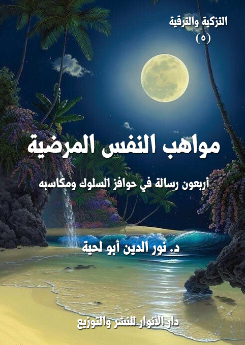

الكتاب: مواهب النفس المرضية
الوصف: أربعون رسالة في حوافز السلوك ومكاسبه
السلسلة: رسائل التزكية والترقية
المؤلف: أ.د. نور الدين أبو لحية
الناشر: دار الأنوار للنشر والتوزيع
الطبعة: الأولى، 1441 هـ
عدد الصفحات: 270
ISBN: 978-620-3-85908-9
لمطالعة الكتاب من تطبيق مؤلفاتي المجاني وهو أحسن وأيسر: هنا

التعريف بالكتاب
يحاول هذا الكتاب ذكر ما ورد في النصوص المقدسة من مواهب الله تعالى للصالحين الذين جاهدوا نفوسهم في ذات الله إلى أن استقامت لهم، وصلحت، وصارت محلا لكل أنواع الكرامة والفضل.
وذلك لتحفيز السائرين والسالكين إلى الله بما يعينهم على المجاهدات التي يتطلبها السلوك، وهو منهج قرآني ونبوي في استعمال الترغيب والترهيب كوسائل للتزكية والترقية.
وقد جمعنا فيه كل أصناف الترغيبات الإلهية سواء تلك التي توصف بكونها معنوية وروحية، أو تلك التي توصف بكونها حسية ومرتبطة بالرغبات والغرائز البشرية.
ذلك أن الله تعالى رب الحس والمعنى، والظاهر والباطن، وقد استعمل كليهما في ترغيب عباده في السير إليه، ولو خالفنا ذلك، أو احترقنا بعض ما ذكره، نكون من المبدلين والمغيرين.
وهو ما حصل للأسف في التراث الإسلامي المرتبط بهذه الجوانب، حيث احتقر بعضهم ـ بسبب فهمه الخاطئ لما ورد في الإخلاص والتجريد ـ كل ذلك النعيم الحسي الذي رغب الله تعالى فيه عباده، مع كونه مذكورا في القرآن الكريم، ولجميع الصالحين سواء كانوا من المقربين أو غيرهم.
وهذا خلاف المنهج القرآني، وخلاف ما تقتضيه الفطرة السليمة؛ ففرق كبير بين أن نعبد الله لله، {مُخْلِصِينَ لَهُ الدِّينَ} [الأعراف: 29]، وبين أن نطمع في فضله وكرمه وجوده الحسي والمعنوي.
مواهب النفس المرضية (6)
يحاول هذا الكتاب ذكر ما ورد في النصوص المقدسة من مواهب الله تعالى للصالحين الذين جاهدوا نفوسهم في ذات الله إلى أن استقامت لهم، وصلحت، وصارت محلا لكل أنواع الكرامة والفضل.
وذلك لتحفيز السائرين والسالكين إلى الله بما يعينهم على المجاهدات التي يتطلبها السلوك، وهو منهج قرآني ونبوي في استعمال الترغيب والترهيب كوسائل للتزكية والترقية.
وقد جمعنا فيه كل أصناف الترغيبات الإلهية سواء تلك التي توصف بكونها معنوية وروحية، أو تلك التي توصف بكونها حسية ومرتبطة بالرغبات والغرائز البشرية.
ذلك أن الله تعالى رب الحس والمعنى، والظاهر والباطن، وقد استعمل كليهما في ترغيب عباده في السير إليه، ولو خالفنا ذلك، أو احتقرنا بعض ما ذكره، نكون من المبدلين والمغيرين.
وهو ما حصل للأسف في التراث الإسلامي المرتبط بهذه الجوانب، حيث احتقر بعضهم ـ بسبب فهمه الخاطئ لما ورد في الإخلاص والتجريد ـ كل ذلك النعيم الحسي الذي رغب الله تعالى فيه عباده، مع كونه مذكورا في القرآن الكريم، ولجميع الصالحين سواء كانوا من المقربين أو غيرهم.
وهذا خلاف المنهج القرآني، وخلاف ما تقتضيه الفطرة السليمة؛ ففرق كبير بين أن نعبد الله لله، {مُخْلِصِينَ لَهُ الدِّينَ} [الأعراف: 29]، وبين أن نطمع في فضله وكرمه وجوده الحسي والمعنوي.
ولهذا نرى نفس أولئك الأئمة الذين دعوا إلى الإخلاص المجرد، فقالوا: (إن قوما عبدوا الله رغبة فتلك عبادة التجار، وإن قوما عبدوا الله رهبة فتلك عبادة العبيد، وإن قوما
مواهب النفس المرضية (7)
عبدوا الله شكرا فتلك عبادة الاحرار) (1)
وقالوا: (العبّاد ثلاثه: قوم عبدوا اللّه عزّ وجلّ خوفا، فتلك عبادة العبيد، وقوم عبدوا اللّه تبارك وتعالى طلبا للثّواب فتلك عبادة الأجراء، وقوم عبدوا اللّه عزّ وجلّ حبّا له فتلك عبادة الأحرار) (2)
هم أنفسهم يذكرون الجنة ورغبة الصالحين وطمعهم في أن ينالهم فضل الله، فيدخلونها، فقد وصف الإمام علي المتقين بقوله: (عظم الخالق في أنفسهم، فصغر ما دونه في أعينهم، فهم والجنّة كمن قد رآها، فهم فيها منعّمون، وهم والنّار كمن قد رآها، فهم فيها معذّبون) (3)
بل إن الله تعالى وصف المؤمنين ذوي المراتب العالية بالطمع في فضل الله تعالى، فقال: {إِنَّ الَّذِينَ آمَنُوا وَالَّذِينَ هَاجَرُوا وَجَاهَدُوا فِي سَبِيلِ الله أُولَئِكَ يَرْجُونَ رَحْمَتَ الله وَاللَّهُ غَفُورٌ رَحِيمٌ} [البقرة: 218]
وقال: {وَلَا تَهِنُوا فِي ابْتِغَاءِ الْقَوْمِ إِنْ تَكُونُوا تَأْلَمُونَ فَإِنَّهُمْ يَأْلَمُونَ كَمَا تَأْلَمُونَ وَتَرْجُونَ مِنَ الله مَا لَا يَرْجُونَ وَكَانَ اللَّهُ عَلِيمًا حَكِيمًا} [النساء: 104]
وقال: {أُولَئِكَ الَّذِينَ يَدْعُونَ يَبْتَغُونَ إِلَى رَبِّهِمُ الْوَسِيلَةَ أَيُّهُمْ أَقْرَبُ وَيَرْجُونَ رَحْمَتَهُ وَيَخَافُونَ عَذَابَهُ إِنَّ عَذَابَ رَبِّكَ كَانَ مَحْذُورًا} [الإسراء: 57]
ومثل ذلك ما ورد في أحاديث رسول الله صلى الله عليه وآله وسلم الكثيرة، والتي يذكر فيها الجزاء الذي أعده الله للمؤمنين أصحاب الأعمال الصالحة، ولو كان ذلك قادحا في الإخلاص لما ذكره رسول الله صلى الله عليه وآله وسلم.
__________
(1) نهج البلاغة ج 2 ص 197.
(2) اصول الكافي، ج 2، ص 84.
(3) نهج البلاغة: الخطبة رقم (193)
مواهب النفس المرضية (8)
لذلك اعتبرنا ما ورد من نصوص في احتقار ذلك نوعا من الدخن الذي أصاب كتب التزكية والسلوك كما أصاب غيرها.
ولهذا وضعنا في هذا الجزء كل ما يرغب في السلوك مما تشتهيه الأنفس، سواء في مراتبها العليا، أو مراتبها الدنيا.. مبينين ما يرتبط بتلك المواهب الإلهية من أعمال تتعلق بها، ومناسبتها لتلك الأعمال.
وقد نقلنا فيه الكثير من النصوص التي ذكرناها في كتب أخرى، ولم نشأ أن نرشد القارئ إليها، مكتفين بذلك، وذلك لتفرقها في المواضع المختلفة، ولكونها سيقت في تلك المحال لمعان خاصة بها، وليست خاصة بهذا المحل.
وقد ذكرنا في الأجزاء السابقة أن الغرض من هذه السلسلة، ومن كونها على شكل رسائل أن تكون عبارة عن رسائل أو مطويات أو منشورات تؤدي غرضها في الدعوة إلى الله، وفي الترغيب في السلوك إليه، وبيان كيفيته.. ولذلك كان في الإحالة على غيره ما يتنافى مع هذا الغرض.
مواهب النفس المرضية (9)
كتبت إلي ـ أيها المريد الصادق ـ تبشرني بأن الرسائل التي كتبتها إليك حول [معارف النفس الراضية] قد أثرت فيك وفيمن حولك من المريدين، وأنها خلصتكم جميعا من ذلك الدخَن الذي أصاب علوم العرفان؛ فتحولت من علوم تحض على السير إلى الله، والسلوك إليه، وتزكية النفس لتصلح للقرب منه، إلى علوم تبحث في حقائق الدنيا والآخرة، والملك والملكوت، من غير دليل ولا برهان، سوى ذلك الكشف الذي قد يختلط فيه الحق بالباطل، والمقدس بالمدنس، والشرع بالهوى.
وقد طلبت مني في آخر رسالتك، أنت ومن معك من المريدين، بأن أرسل لكم مجموعة من الرسائل تحفز على السير والسلوك، وتدعو إلى التزكية والترقية، وطلبتم مني أن تكون رسائل قصيرة لتستعملها أنت ورفاقك في الدعوة إلى الله، وتحبيب الخلق فيه، وفي السلوك إليه.
وطلبت مني ـ راغبا ـ أن أضع لكم ذلك في أربعين رسالة، لتضاهي أخواتها مما أرسلته لكم مما يتعلق بالنفس الأمارة واللوامة والمطمئنة والراضية..
وأنا أشكرك وأشكر رفاقك الذين ذكرت لي، وأشد على أيديكم فيما تنوون عمله من الترغيب في السلوك والتزكية؛ فذلك من خير الأعمال وأفضلها، وسترون تأثيرها فيكم، وفي نفوسكم، وترقيتها، ذلك أنكم لا تخاطبون بتلك الكلمات التي تدعون بها إلى الله الجمهور الذي يستمع لكم، وإنما تخاطبون معه نفوسكم؛ فتتأدب بما تدعو إليه.
وبما أن الله تعالى ينصر من ينصره، ويولي من يواليه؛ فسترون كيف يُفاض عليكم من فضله العظيم، وكيف تنشرح صدوركم، وتتنور قلوبكم، وكيف تنصب لكم معارج الترقية، لتنالوا حظوظكم من الكمالات.. وكيف لا تنالونها، وأنتم تسيرون على أقدام الهداة
مواهب النفس المرضية (10)
الذين جعلهم الله تعالى أنوارا يهتدي بها الخلق؟
وبناء على طلبكم الكريم، وحتى أنال بعض أجر مشاركتكم في ذلك العمل النبيل، فسأكتب لك ما طلبت في أربعين رسالة تحفز العقول والقلوب للسير والسلوك والتزكية والترقية.
وأول تلك الرسائل هذه الرسالة التي تتضمن أول مواهب الله تعالى للنفوس المطمئنة الراضية المرضية، وهي موهبة [الوجدان العظيم]
وأقصد بالوجدان ما ذكره الله تعالى في قوله: {وَالَّذِينَ كَفَرُوا أَعْمَالُهُمْ كَسَرَابٍ بِقِيعَةٍ يَحْسَبُهُ الظَّمْآنُ مَاءً حَتَّى إِذَا جَاءَهُ لَمْ يَجِدْهُ شَيْئًا وَوَجَدَ اللَّهَ عِنْدَهُ فَوَفَّاهُ حِسَابَهُ وَاللَّهُ سَرِيعُ الْحِسَابِ} [النور: 39]، وقوله: {وَلَوْ أَنَّهُمْ إِذْ ظَلَمُوا أَنْفُسَهُمْ جَاءُوكَ فَاسْتَغْفَرُوا اللَّهَ وَاسْتَغْفَرَ لَهُمُ الرَّسُولُ لَوَجَدُوا اللَّهَ تَوَّابًا رَحِيمًا} [النساء: 64]
وهي تشير إلى أن كل رحلة السالكين إلى الله، أو غيرهم، هي رحلة إلى الله؛ فإذا ما وجدوه وجدوا كل شيء، وإذا ما فقدوه فقدوا كل شيء.. كما يشير إلى ذلك قوله تعالى: {يَاأَيُّهَا الْإِنْسَانُ إِنَّكَ كَادِحٌ إِلَى رَبِّكَ كَدْحًا فَمُلَاقِيهِ} [الانشقاق: 6]
وبقدر تلك المعرفة، وبقدر تهيئة النفس وتزكيتها لاستقبالها، بقدر ما يكون ذلك الوجدان وأثره العظيم في النفس، وفي تحقيق كل الرغبات التي تطمح إليها.. ذلك أن الله وحده من تتحقق بالارتباط به كل الرغبات.
بل لا يمكن أن يجد الإنسان نفسه، أو يكتشفها، أو يتوافق معها، إلا بعد أن يكتشف ربه.. فنفسه لا يمكنها أن تنفصل عن ربه، وكيف تنفصل عنه، وهو نفخة من روحه، وأمر من أمره، كما قال تعالى: {فَإِذَا سَوَّيْتُهُ وَنَفَخْتُ فِيهِ مِنْ رُوحِي فَقَعُوا لَهُ سَاجِدِينَ} [الحجر: 29]
مواهب النفس المرضية (11)
ولذلك فإن كل التيه والغربة والكآبة والإحباط ناشئة من ذلك الجهل المطبق بالنفس نتيجة فصلها عن خالقها، وبعدها عن ربها، وتوهمها أنها يمكن أن تحقق سعادتها ورغباتها بالبعد عنه؛ فتجري وتلهث وراء كل شيء إلى أن تكتشف أن كل ما تلهث وراءه مجرد سراب، وأن الماء الحقيقي عند الله.. ولذلك قال الله تعالى في تلك الآية الكريمة مخبرا عن نهاية من كان يلهث وراء السراب: {وَوَجَدَ اللَّهَ عِنْدَهُ} [النور: 39]
ولذلك فإن هذه المعاني وحدها هي من يملأ القلوب بكل أنواع السلوى؛ فالفقير العارف بربه الواجد له، لن يحزن على الثروات التي يراها في يد غيره، ولن يحسدهم، ولن يتمنى أن يكون له مثلهم، وكيف يفعل ذلك، وقد وجد أغنى الأغنياء وأكرم الكرماء.. والذي لولاه لم يكن لهم شيء؛ فلذلك يستغني به عما سواه.. بل يرى نفسه أغنى ممن سواه، لأنه صار في صحبة الكنز الذي لا يفنى، والكرم الذي لا يُحد.
وهكذا ترى المريض والمتألم والمظلوم.. وغيرهم جميعا، قد تصاب أجسادهم بالأدواء والآلام، لكن نفوسهم وعقولهم وقلوبهم وأرواحهم في معارجها المقدسة ممتلئة بالسعادة، لأنها تعلم أن كل ما أصابها لا يساوي شيئا أمام تلك المكاسب العظيمة التي وجدتها، وهي ربها..
فلذلك كان اكتشاف [الله]، والتعرف على عظمته وأسمائه الحسنى أعظم اكتشاف لأي إنسان، لأنه لا يرتبط بمعلومات يتعلمها، ولا بمصالح محدودة يحققها، وإنما يرتبط بحقيقته وحقيقة الوجود والمصير الذي ينتظره.
هذه هي الحقيقة العظيمة التي جهلها أكثر البشر؛ فتوهموا أن اكتشافهم لأمريكا أعظم من اكتشافهم لله؛ فلذلك راحوا يسخرون ممن يتحدث عن ربه، أو يبين لهم ما اكتشفه عنه من خلال رحلته إليه، في نفس الوقت الذي يكرمون فيه من اكتشف أمريكا، أو اكتشف
مواهب النفس المرضية (12)
بعوضة، أو نبتة، أو صخرة..
وأنا لا أقول: إن تلك الاكتشافات محتقرة.. معاذ الله، وكيف أقول ذلك، وقد أمرنا الله تعالى بالسير في الأرض والكون، والبحث في حقائقها والاستفادة من الطاقات المكتنزة فيها.. لكن فرق بين من يسير ليكتشف عالم الدنيا، ويبقى منحصرا فيها، بل يسجن نفسه في سجونها، وبين من يجمع بين السيرين، السير إلى الله، والسير إلى الدنيا.. فالدنيا ليست سوى سلعة من سلع الله، وصنع من صنعه، ومن وصل إليه وصل إليها، ووصل إلى كل شيء.
هل تذكر ـ أيها المريد الصادق ـ تلك الحادثة التي حصلت لبعض العلماء القدامى حين راح يصيح بعد أن اكتشف بعض الحقائق البسيطة (وجدتها.. وجدتها) (1)
ذلك أن تلك المعلومة التي اكتشفها استطاع أن يحل بها تلك المعضلة التي أعجزه البحث عنها، إلى أن هداه الله إليها، فامتلأ فرحا وسرورا، وراح يصيح في الشوارع باكتشافه.
فهكذا يفعل من يسير إلى الله؛ فهو في كل خطوة يتقدم بها إليه يكتشف شيئا جديدا لم يكن يعرفه عنه، أو كانت معرفته به مجرد معلومة ذهنية لم تتمكن من نفسه؛ فإذا ما تمكنت امتلأ سرورا وطربا، وراح يصيح بوجدان عظيم معظما ربه، فرحا به.
ولذلك فإن كل الرحلة إلى الله هي رحلة اكتشافات.. لا لسنن الكون وقوانينه.. ولا لحجارة الأرض ومعادنها.. ولا لأفلاك السماء ونجومها، وإنما لمن يملك كل ذلك، ويدبر
__________
(1) أشير به إلى القصة المعروفة عن أرخميدس، وأنه كان يغتسل في حمام عام، فلاحظ أن منسوب الماء ارتفع عندما انغمس في الماء، وقد قيل إنه خرج عارياً في الشارع يجري ويصيح (يوريكا. يوريكا)، أي وجدتها وجدتها، لأنه تحقق من أن هذا الاكتشاف سيحل معضلة التاج. ذلك أنه كُلِّف بإثبات أن التاج الجديد لهيرون، ملك سيراكيوز، لم يكن من الذهب الخالص كما ادعى الصائغ، وقد كتبت القصة لأول مرة في القرن الأول ق. م، من قبل المهندس المعماري الروماني فيتروفيوس.
مواهب النفس المرضية (13)
أمورها، وأمور كل شيء.. فهل يمكن أن يتسع صدر أحد من الناس لذلك الوجدان العظيم؟
لعلك تذكر سؤال زكريا لمريم عليهما السلام عن سر الطعام الذي وجده عندها، والذي لم ير طعاما مثله من قبل، وقد أجابته بكل بساطة: {هُوَ مِنْ عِنْدِ الله إِنَّ اللَّهَ يَرْزُقُ مَنْ يَشَاءُ بِغَيْرِ حِسَابٍ} [آل عمران: 37]
في ذلك الحين امتزج الشعوران لدى زكريا عليه السلام: الشعور بقدرة الله المطلقة التي لا يقف في وجهها الزمن، ولا المستحيل، والشعور بفضل الله العظيم، فهو يرزق من يشاء بغير حساب.
وعندما امتزج الشعوران توجه لله طالبا ما كان يتصوره مستحيلا يستحي أن يسأل الله تحقيقه، قال تعالى مؤرخا لتلك اللحظة التي كانت فتحا عظيما على زكريا عليه السلام: {هُنَالِكَ دَعَا زَكَرِيَّا رَبَّهُ قَالَ رَبِّ هَبْ لِي مِنْ لَدُنْكَ ذُرِّيَّةً طَيِّبَةً إِنَّكَ سَمِيعُ الدُّعَاءِ} (آل عمران:38)
وفي نفس تلك اللحظة التي اكتشف فيها زكريا عليه السلام ذلك الاكتشاف العظيم جاءته الملائكة عليهم السلام بالبشارة، وبتحقيق الأمل الذي كان حبيس القلب، واستحيا اللسان من إبرازه، قال تعالى: {فَنَادَتْهُ الْمَلائِكَةُ وَهُوَ قَائِمٌ يُصَلِّي فِي الْمِحْرَابِ أَنَّ اللَّهَ يُبَشِّرُكَ بِيَحْيَى مُصَدِّقاً بِكَلِمَةٍ مِنَ الله وَسَيِّداً وَحَصُوراً وَنَبِيّاً مِنَ الصَّالِحِينَ} (آل عمران:39)
وحينها ـ كذلك ـ انحلت عقدة لسان زكريا عليه السلام متعجبا من هذا، لا منكرا له، فسأل الله عن كيفية ذلك كما سأله الخليل عليه السلام من قبل عن كيفية إحياء الموتى، فرده الله إلى مشيئته المطلقة، قال تعالى: {قَالَ رَبِّ أَنَّى يَكُونُ لِي غُلامٌ وَقَدْ بَلَغَنِيَ الْكِبَرُ وَامْرَأَتِي عَاقِرٌ} (آل عمران:40)
مواهب النفس المرضية (14)
وحينها أجابه الملك: {كَذَلِكَ اللَّهُ يَفْعَلُ مَا يَشَاءُ} (آل عمران:40)
وهكذا ظل يعقوب عليه السلام منتظرا لولده، على الرغم من سخرية الجميع منه، لأنه كان يعرف عن الله ما لا يعرفونه، قال تعالى: {قَالُوا تَالله تَفْتَأُ تَذْكُرُ يُوسُفَ حَتَّى تَكُونَ حَرَضًا أَوْ تَكُونَ مِنَ الْهَالِكِينَ (85) قَالَ إِنَّمَا أَشْكُو بَثِّي وَحُزْنِي إِلَى الله وَأَعْلَمُ مِنَ الله مَا لَا تَعْلَمُونَ} [يوسف: 85، 86]
وعندما رد الله إليه ولده، قال لهم بلهجة الواثق المستيقن: {أَلَمْ أَقُلْ لَكُمْ إِنِّي أَعْلَمُ مِنَ الله مَا لَا تَعْلَمُونَ} [يوسف: 96]
وهكذا يمكنك ـ أيها المريد الصادق ـ أن تكتشف كل حين عظمة ربك، وأسماءه الحسنى، وتدبيراته العظيمة في كل لحظة من اللحظات، ومن خلال أي حادث من الحوادث.. فكل شيء رسائل يتعرف الله بها إليك، ليدلك عليه.
هذه رسالتي الأولى إليك ـ أيها المريد الصادق ـ ولرفاقك في الطريق؛ فبشروا بهذه المعاني، وأخبروا من تبشرونهم أنهم لن يفقدوا شيئا إذا وجدوا الله.. ذلك أن كل شيء لله وعنده وبه ومعه.. ومن وجد الله وجد كل شيء.. ومن فقده فقد كل شيء.
مواهب النفس المرضية (15)
من مواهب الله تعالى لعباده لتحفيزهم للسير إليه، وإعانتهم على ذلك، ما يمكن تسميته [فلاح القيم]، وأقصد منها ـ أيها المريد الصادق ـ أن الله تعالى برحمته ولطفه وكرمه بعباده، لم يعلق الفلاح ـ الذي هو وسيلة السعادة الأبدية ـ بشيء لا يطيقه الإنسان، وإنما علقه بأشياء في طاقته أن يفعلها، بل في مصلحته أن يفعلها.
ولن تعرف قيمة هذه الموهبة على حقيقتها، لتحمد ربك عليها، إلا إذا عرفت ما ارتكست فيه الأديان والفلسفات والمدارس الفكرية التي امتلأت بالعنصرية، وتوهمت أن الفلاح مرتبط بجنس دون جنس، أو عرق دون عرق، أو منطقة دون منطقة، أو بزمن دون زمن، أو لون دون لون.. ولذلك غذوا أصحابهم بكل أنواع الغرور والأماني الكاذبة، وغذوا غيرهم بكل أنواع الإحباط والألم.
وقد أشار الله تعالى إلى هؤلاء عندما ذكر مقولة أهل الكتاب، وادعاؤهم احتكار الله، واحتكار الفلاح، فقال: {وَقَالَتِ الْيَهُودُ وَالنَّصَارَى نَحْنُ أَبْنَاءُ الله وَأَحِبَّاؤُهُ قُلْ فَلِمَ يُعَذِّبُكُمْ بِذُنُوبِكُمْ بَلْ أَنْتُمْ بَشَرٌ مِمَّنْ خَلَقَ يَغْفِرُ لِمَنْ يَشَاءُ وَيُعَذِّبُ مَنْ يَشَاءُ وَلله مُلْكُ السَّمَاوَاتِ وَالْأَرْضِ وَمَا بَيْنَهُمَا وَإِلَيْهِ الْمَصِيرُ} [المائدة: 18]
فهذه الآية الكريمة لا ينحصر المراد منها في اليهود والنصارى، والذين زعموا أنهم وحدهم أولياء الله من دون الناس، وإنما تشمل كل من زعم أن مراتب الفلاح التي هيأها الله تعالى لعباده، وزعها بطريقة غير عادلة، حيث فاز بها بعضهم، وحُرم منها أكثرهم.
لكن كلمات الله المقدسة التي سلمت من تحريف المحرفين، وتلاعب المتلاعبين، خلت من كل ذلك.. بل جعلت الفلاح منوطا بالقيم النبيلة، والأخلاق الرفيعة، والتي في استطاعة أي إنسان أن يقوم بها بسهولة ويسر.
مواهب النفس المرضية (16)
ولذلك تعجب أقوام الأنبياء من أولئك الأتباع الضعفاء الذين اتبعوهم، وراحوا يسخرون من الأنبياء بسببهم، متوهمين أن خالق هذا الكون يربأ عن عبادة أمثالهم، قال تعالى عن قوم نوح عليه السلام: {فَقَالَ الْمَلَأُ الَّذِينَ كَفَرُوا مِنْ قَوْمِهِ مَا نَرَاكَ إِلَّا بَشَرًا مِثْلَنَا وَمَا نَرَاكَ اتَّبَعَكَ إِلَّا الَّذِينَ هُمْ أَرَاذِلُنَا بَادِيَ الرَّأْيِ وَمَا نَرَى لَكُمْ عَلَيْنَا مِنْ فَضْلٍ بَلْ نَظُنُّكُمْ كَاذِبِينَ} [هود: 27]
وقال لرسول الله صلى الله عليه وآله وسلم ردا على قومه الذين طلبوا منه طرد المستضعفين: {وَلا تَطْرُدِ الَّذِينَ يَدْعُونَ رَبَّهُمْ بِالْغَدَاةِ وَالْعَشِيِّ يُرِيدُونَ وَجْهَهُ مَا عَلَيْكَ مِنْ حِسَابِهِمْ مِنْ شَيْءٍ وَمَا مِنْ حِسَابِكَ عَلَيْهِمْ مِنْ شَيْءٍ فَتَطْرُدَهُمْ فَتَكُونَ مِنَ الظَّالِمِينَ} (الأنعام:52)، وقال: {وَاصْبِرْ نَفْسَكَ مَعَ الَّذِينَ يَدْعُونَ رَبَّهُمْ بِالْغَدَاةِ وَالْعَشِيِّ يُرِيدُونَ وَجْهَهُ وَلا تَعْدُ عَيْنَاكَ عَنْهُمْ تُرِيدُ زِينَةَ الْحَيَاةِ الدُّنْيَا وَلا تُطِعْ مَنْ أَغْفَلْنَا قَلْبَهُ عَنْ ذِكْرِنَا وَاتَّبَعَ هَوَاهُ وَكَانَ أَمْرُهُ فُرُطاً} (الكهف:28)
وقال له في شأن الأعمى: {عَبَسَ وَتَوَلَّى (1) أَنْ جَاءَهُ الْأَعْمَى (2) وَمَا يُدْرِيكَ لَعَلَّهُ يَزَّكَّى (3) أَوْ يَذَّكَّرُ فَتَنْفَعَهُ الذِّكْرَى (4) أَمَّا مَنِ اسْتَغْنَى (5) فَأَنْتَ لَهُ تَصَدَّى (6) وَمَا عَلَيْكَ أَلَّا يَزَّكَّى (7) وَأَمَّا مَنْ جَاءَكَ يَسْعَى (8) وَهُوَ يَخْشَى (9) فَأَنْتَ عَنْهُ تَلَهَّى} [عبس: 1 - 10]
وهكذا يخبر القرآن الكريم أن نفوس البشر واحدة، وأنه ليس هناك أي تفاضل بينهم إلا في جهة واحدة، يمكن لأي واحد منهم أن يحصلها، قال تعالى: {يَاأَيُّهَا النَّاسُ إِنَّا خَلَقْنَاكُمْ مِنْ ذَكَرٍ وَأُنْثَى وَجَعَلْنَاكُمْ شُعُوبًا وَقَبَائِلَ لِتَعَارَفُوا إِنَّ أَكْرَمَكُمْ عِنْدَ الله أَتْقَاكُمْ إِنَّ اللَّهَ عَلِيمٌ خَبِيرٌ} [الحجرات: 13]
وأخبر أن الفلاح منوط بتزكية النفس، لا بأي شيء آخر، وهو أمر مقدور عليه لكل البشر، قال تعالى: {وَنَفْسٍ وَمَا سَوَّاهَا (7) فَأَلْهَمَهَا فُجُورَهَا وَتَقْوَاهَا (8) قَدْ أَفْلَحَ مَنْ زَكَّاهَا
مواهب النفس المرضية (17)
(9) وَقَدْ خَابَ مَنْ دَسَّاهَا} [الشمس: 7 - 10]، وقال: {قَدْ أَفْلَحَ مَنْ تَزَكَّى (14) وَذَكَرَ اسْمَ رَبِّهِ فَصَلَّى} [الأعلى: 14، 15]
وأخبر أن قوانين الدنيا التي يتفاضل البشر فيها بأحسابهم وأنسابهم وأموالهم وغيرها من الموازين التي ابتدعوها، ستُرفع في الآخرة؛ فلا ينال التكريم إلا الصالحون الذين هذبوا نفوسهم، لا الذين استسلموا للقوانين المفلسة التي وضعها الشيطان، قال تعالى: {فَإِذَا نُفِخَ فِي الصُّورِ فَلَا أَنْسَابَ بَيْنَهُمْ يَوْمَئِذٍ وَلَا يَتَسَاءَلُونَ (101) فَمَنْ ثَقُلَتْ مَوَازِينُهُ فَأُولَئِكَ هُمُ الْمُفْلِحُونَ (102) وَمَنْ خَفَّتْ مَوَازِينُهُ فَأُولَئِكَ الَّذِينَ خَسِرُوا أَنْفُسَهُمْ فِي جَهَنَّمَ خَالِدُونَ} [المؤمنون: 101 - 103]
وبذلك؛ فإن موازين الفلاح الحقيقي مرتبطة بالقيم الأخلاقية والروحية والسلوك الرفيع، فهي وحدها الحقائق التي تثبت في الميزان، وما عداها باطل لا قيمة له، بل إنه سيكون وبالا وخسارة على صاحبه، قال تعالى: {وَالْوَزْنُ يَوْمَئِذٍ الْحَقُّ فَمَنْ ثَقُلَتْ مَوَازِينُهُ فَأُولَئِكَ هُمُ الْمُفْلِحُونَ (8) وَمَنْ خَفَّتْ مَوَازِينُهُ فَأُولَئِكَ الَّذِينَ خَسِرُوا أَنْفُسَهُمْ بِمَا كَانُوا بِآيَاتِنَا يَظْلِمُونَ} [الأعراف: 8، 9]
ولم تكتف النصوص المقدسة بذكر قوانين الفلاح، وإنما فصلت في الأصول الكبرى لمن يريد الحصول عليه، لينال من خلاله السعادة الأبدية في الدنيا والآخرة، وفي حياته الظاهرة والباطنة.
ومن تلك النصوص قوله تعالى: {قَدْ أَفْلَحَ الْمُؤْمِنُونَ (1) الَّذِينَ هُمْ فِي صَلَاتِهِمْ خَاشِعُونَ (2) وَالَّذِينَ هُمْ عَنِ اللَّغْوِ مُعْرِضُونَ (3) وَالَّذِينَ هُمْ لِلزَّكَاةِ فَاعِلُونَ (4) وَالَّذِينَ هُمْ لِفُرُوجِهِمْ حَافِظُونَ (5) إِلَّا عَلَى أَزْوَاجِهِمْ أَوْ مَا مَلَكَتْ أَيْمَانُهُمْ فَإِنَّهُمْ غَيْرُ مَلُومِينَ (6) فَمَنِ ابْتَغَى وَرَاءَ ذَلِكَ فَأُولَئِكَ هُمُ الْعَادُونَ (7) وَالَّذِينَ هُمْ لِأَمَانَاتِهِمْ وَعَهْدِهِمْ رَاعُونَ (8)
مواهب النفس المرضية (18)
وَالَّذِينَ هُمْ عَلَى صَلَوَاتِهِمْ يُحَافِظُونَ (9) أُولَئِكَ هُمُ الْوَارِثُونَ (10) الَّذِينَ يَرِثُونَ الْفِرْدَوْسَ هُمْ فِيهَا خَالِدُونَ (11)} [المؤمنون: 1 - 12]، وهي تربط الفلاح بجميع القيم النبيلة، وأولها القيم الروحية التي تتمثل في الصلاة الخاشعة التي يحافظ عليها صاحبها.. والقيم الأخلاقية التي تتمثل في العفاف والأمانة وصون اللسان عن اللغو وكل الموبقات.. ومن هذه القيم جميعا تتولد جميع الفضائل، وتتحصن النفس من كل الرذائل.
ومنها قوله تعالى: {إِنَّمَا كَانَ قَوْلَ الْمُؤْمِنِينَ إِذَا دُعُوا إِلَى الله وَرَسُولِهِ لِيَحْكُمَ بَيْنَهُمْ أَنْ يَقُولُوا سَمِعْنَا وَأَطَعْنَا وَأُولَئِكَ هُمُ الْمُفْلِحُونَ (51) وَمَنْ يُطِعِ اللَّهَ وَرَسُولَهُ وَيَخْشَ اللَّهَ وَيَتَّقْهِ فَأُولَئِكَ هُمُ الْفَائِزُونَ} [النور: 51، 52]، وهي تربط الفلاح بتوحيد مصادر الهداية، حتى لا تنحرف بالإنسان السبل؛ فيسير في طريق الشيطان، وهو يتوهم أنه في طريق الرحمن.. والهداية المعصومة لا تكون إلا لدى المعصومين؛ فمن خلط دينه اختلط عليه أمره.
ومنها قوله تعالى: {فَأَمَّا مَنْ تَابَ وَآمَنَ وَعَمِلَ صَالِحًا فَعَسَى أَنْ يَكُونَ مِنَ الْمُفْلِحِينَ} [القصص: 67]، وهي تربط الفلاح بالتوبة ومراجعة النفس وتحقيق الإيمان، والتحقق بالعلم الصالح.
ومنها قوله تعالى: {فَآتِ ذَا الْقُرْبَى حَقَّهُ وَالْمِسْكِينَ وَابْنَ السَّبِيلِ ذَلِكَ خَيْرٌ لِلَّذِينَ يُرِيدُونَ وَجْهَ الله وَأُولَئِكَ هُمُ الْمُفْلِحُونَ} [الروم: 38]، وهي تربط الفلاح بالاهتمام بالقيم الاجتماعية من التآلف والتكافل والتناصر.
ومنها قوله تعالى: {هُدًى لِلْمُتَّقِينَ (2) الَّذِينَ يُؤْمِنُونَ بِالْغَيْبِ وَيُقِيمُونَ الصَّلَاةَ وَمِمَّا رَزَقْنَاهُمْ يُنْفِقُونَ (3) وَالَّذِينَ يُؤْمِنُونَ بِمَا أُنْزِلَ إِلَيْكَ وَمَا أُنْزِلَ مِنْ قَبْلِكَ وَبِالْآخِرَةِ هُمْ يُوقِنُونَ (4) أُولَئِكَ عَلَى هُدًى مِنْ رَبِّهِمْ وَأُولَئِكَ هُمُ الْمُفْلِحُونَ} [البقرة: 2 - 5]، وهي تربط الفلاح بالقيم الإيمانية، والتي تتأسس على الإيمان بالغيب والنبوات والمعاد.. والقيم
مواهب النفس المرضية (19)
الروحية التي تجتمع في الصلاة.. والقيم الاجتماعية التي تقوم على التكافل.
ومنها قوله تعالى: {وَلْتَكُنْ مِنْكُمْ أُمَّةٌ يَدْعُونَ إِلَى الْخَيْرِ وَيَأْمُرُونَ بِالْمَعْرُوفِ وَيَنْهَوْنَ عَنِ الْمُنْكَرِ وَأُولَئِكَ هُمُ الْمُفْلِحُونَ} [آل عمران: 104]، وهي تربط الفلاح بالتعامل الإيجابي مع المجتمع ونصحه ودعوته للخير، لتحقيق المشروع الإلهي للإنسان في أجمل صوره.
ومنها قوله تعالى: {وَرَحْمَتِي وَسِعَتْ كُلَّ شَيْءٍ فَسَأَكْتُبُهَا لِلَّذِينَ يَتَّقُونَ وَيُؤْتُونَ الزَّكَاةَ وَالَّذِينَ هُمْ بِآيَاتِنَا يُؤْمِنُونَ (156) الَّذِينَ يَتَّبِعُونَ الرَّسُولَ النَّبِيَّ الْأُمِّيَّ الَّذِي يَجِدُونَهُ مَكْتُوبًا عِنْدَهُمْ فِي التَّوْرَاةِ وَالْإِنْجِيلِ يَأْمُرُهُمْ بِالْمَعْرُوفِ وَيَنْهَاهُمْ عَنِ الْمُنْكَرِ وَيُحِلُّ لَهُمُ الطَّيِّبَاتِ وَيُحَرِّمُ عَلَيْهِمُ الْخَبَائِثَ وَيَضَعُ عَنْهُمْ إِصْرَهُمْ وَالْأَغْلَالَ الَّتِي كَانَتْ عَلَيْهِمْ فَالَّذِينَ آمَنُوا بِهِ وَعَزَّرُوهُ وَنَصَرُوهُ وَاتَّبَعُوا النُّورَ الَّذِي أُنْزِلَ مَعَهُ أُولَئِكَ هُمُ الْمُفْلِحُونَ} [الأعراف: 156، 157]، وهي تربط الفلاح بالتقوى والإيمان واتباع الهداة المعصومين والاكتفاء بهم عن غيرهم.
ومنها قوله تعالى: {وَالَّذِينَ تَبَوَّءُوا الدَّارَ وَالْإِيمَانَ مِنْ قَبْلِهِمْ يُحِبُّونَ مَنْ هَاجَرَ إِلَيْهِمْ وَلَا يَجِدُونَ فِي صُدُورِهِمْ حَاجَةً مِمَّا أُوتُوا وَيُؤْثِرُونَ عَلَى أَنْفُسِهِمْ وَلَوْ كَانَ بِهِمْ خَصَاصَةٌ وَمَنْ يُوقَ شُحَّ نَفْسِهِ فَأُولَئِكَ هُمُ الْمُفْلِحُونَ} [الحشر: 9]، وهي تربط الفلاح بصفاء النفوس وطهارتها وامتلائها بالنبل والإيثار والتضحية.
ومنها قوله تعالى: {فَاتَّقُوا اللَّهَ مَا اسْتَطَعْتُمْ وَاسْمَعُوا وَأَطِيعُوا وَأَنْفِقُوا خَيْرًا لِأَنْفُسِكُمْ وَمَنْ يُوقَ شُحَّ نَفْسِهِ فَأُولَئِكَ هُمُ الْمُفْلِحُونَ} [التغابن: 16]، وهي تربط الفلاح بالكرم وتوقي مثالب النفوس الأمارة التي يتربع الشح على عرشها.
ومنها قوله تعالى: {لَكِنِ الرَّسُولُ وَالَّذِينَ آمَنُوا مَعَهُ جَاهَدُوا بِأَمْوَالِهِمْ وَأَنْفُسِهِمْ وَأُولَئِكَ لَهُمُ الْخَيْرَاتُ وَأُولَئِكَ هُمُ الْمُفْلِحُونَ} [التوبة: 88]، وهي تربط الفلاح بالتضحية
مواهب النفس المرضية (20)
بكل أنواعها ابتداء من التضحية بالمال، وانتهاء بالتضحية بالنفس.
ومنها قوله تعالى: {لَا تَجِدُ قَوْمًا يُؤْمِنُونَ بِالله وَالْيَوْمِ الْآخِرِ يُوَادُّونَ مَنْ حَادَّ اللَّهَ وَرَسُولَهُ وَلَوْ كَانُوا آبَاءَهُمْ أَوْ أَبْنَاءَهُمْ أَوْ إِخْوَانَهُمْ أَوْ عَشِيرَتَهُمْ أُولَئِكَ كَتَبَ فِي قُلُوبِهِمُ الْإِيمَانَ وَأَيَّدَهُمْ بِرُوحٍ مِنْهُ وَيُدْخِلُهُمْ جَنَّاتٍ تَجْرِي مِنْ تَحْتِهَا الْأَنْهَارُ خَالِدِينَ فِيهَا رَضِيَ اللَّهُ عَنْهُمْ وَرَضُوا عَنْهُ أُولَئِكَ حِزْبُ الله أَلَا إِنَّ حِزْبَ الله هُمُ الْمُفْلِحُونَ} [المجادلة: 22]، وهي تربط الفلاح بالولاء لله ورسوله وللحق أينما كان، وبالبراءة من أعداء الحق مهما كانت قرابتهم أو المصالح المرتبطة بهم.
وكل هذه المعاني ـ أيها المريد الصادق ـ لا يمكنها أن تكتمل إلا في نفس قد هُذبت وزكيت وطهرت.. ولذلك فإن الفلاح ليس مرتبطا بتلك العلوم التي تحملها، ولا بذلك الجاه الذي تحصل عليه، ولا بتلك الأموال التي تكسبها.. وإنما بتلك الطهارة والصفاء والنبل الذي تمتلئ به نفسك.
وهو ممكن لأي إنسان.. فلم يحرم الله تعالى أحدا من عباده من أن يكون من المفلحين.. وليس عليه سوى أن يجاهد نفسه لتتحقق بصفاتهم.
ولذلك فإن أعظم سلوى لكل المحرومين المحتقرين في الأرض هو أن يعوضوا عما فاتهم من مكاسب الدنيا بتلك المكاسب العظيمة التي وصفها الله تعالى، ليتحقق لهم الوعد الإلهي بالفلاح..
وفي الوقت الذي تزول فيه كل قوانين الدنيا الجائرة، سيقول أولئك الذين فرطوا في البحث عن الفلاح الحقيقي: {مَا لَنَا لَا نَرَى رِجَالًا كُنَّا نَعُدُّهُمْ مِنَ الْأَشْرَارِ (62) أَتَّخَذْنَاهُمْ سِخْرِيًّا أَمْ زَاغَتْ عَنْهُمُ الْأَبْصَارُ} [ص: 62، 63]
وفي ذلك الوقت يتحقق ما ذكره الله تعالى في قوله: {فَالْيَوْمَ الَّذِينَ آمَنُوا مِنَ الْكُفَّارِ
مواهب النفس المرضية (21)
يَضْحَكُونَ (34) عَلَى الْأَرَائِكِ يَنْظُرُونَ (35) هَلْ ثُوِّبَ الْكُفَّارُ مَا كَانُوا يَفْعَلُونَ} [المطففين: 34 - 36]
فاجتهد ـ أيها المريد الصادق ـ في تزكية نفسك وتطهيرها لتنال ذلك الفلاح الحقيقي، فقد أتيحت لك كل الفرص، وفتحت لك كل الأبواب؛ فلا تحرم نفسك من الخير، ولا تدع قوانين الخلق تستحوذ عليك؛ فهي قوانين مؤقتة طارئة سرعان ما سيكتشفون غبنهم وخسارتهم بسببها، كما قال تعالى: {وَلَوْ أَنَّ لِلَّذِينَ ظَلَمُوا مَا فِي الْأَرْضِ جَمِيعًا وَمِثْلَهُ مَعَهُ لَافْتَدَوْا بِهِ مِنْ سُوءِ الْعَذَابِ يَوْمَ الْقِيَامَةِ وَبَدَا لَهُمْ مِنَ الله مَا لَمْ يَكُونُوا يَحْتَسِبُونَ} [الزمر: 47]
مواهب النفس المرضية (22)
من مواهب الله تعالى لعباده لتحفيزهم للسير إليه، وإعانتهم على ذلك، ما يمكن تسميته [المفاجآت السارة]، وأقصد بها نفس تلك المفاجآت التي يمارسها الخلق فيما بينهم، ليمتلئوا بالفرح والسرور والسعادة.
مع فارق عظيم جدا، وهو أن المفاجآت التي يمارسها الخلق فيما بينهم محدودة بقدر ضعفهم وفقرهم وفاقتهم.. ذلك أنها قد لا تتعدى بعض المأكولات والمشروبات.. أو بعض الملبوسات والفرش.. وقد تصل في قمتها إلى مبالغ من المال، أو الجاه، أو تحقيق بعض الأغراض المحدودة التي تتوقف بتوقف حياة الإنسان.
لكن المفاجآت السارة التي يهبها الله تعالى لأصحاب النفوس المطمئنة ليرضيها بها، فوق التصور والتخيل، وهي ممتدة لا تتوقف على زمن دون زمن.. بل هي سارية في كل الأزمان والأحوال، لا تنقطع أبدا.
بل إن السير إلى الله كله مفاجآت سارة.. ذلك أن المريد الصادق لربه يكتشف كل يوم، بل كل لحظة المزيد من الحقائق التي تجعله منبهرا حائرا مشدوها ممتلئا بالتعظيم.
ولذلك لا يوجد في الطريق إلى الله تلك العوائد القاتلة، أو ذلك الروتين الممل الذي يعتري البشر، فيملأ حياتهم بالملل والسأم، ويجعلهم ينفرون من كل شيء.. ذلك أن الله تعالى العالم برغبات خلقه، هو الذي يوفر لهم كل حين ما يحقق تلك الرغبات، وبصورة جديدة لم يكونوا يألفونها.
بل إن الله تعالى ـ برحمته وكرمه ولطفه بعباده ـ يوفر لهم كل حين رغبات جديدة لم تكن لهم، وقد يستغرب منها غيرهم لعدم إدراكهم لها..
لكن العقلاء والعلماء لا يستغربون.. فالذي خلق للإنسان حاسة الذوق، وجعلها
مواهب النفس المرضية (23)
محدودة في براعم الذوق التي تتواجد حول اللسان وفي الحنك والحنجرة (1) يمكنه أن يعممها لجسده جميعا؛ فتتذوق كل خلية من خلاياه، وتشعر بلذتها الخاصة بها.
والذي خلق ذلك الذوق محدودا في الحلاوة، والملوحة، والمرارة، والحموضة، ودرجاتها المختلفة المحدودة، يمكنه أن يضيف إليها عشرات الأنواع، بل آلاف الأنواع.. وفي كل لحظة.
وبذلك يحصل للمتذوق في كل لحظة على مفاجآت جديدة لم يكن يحلم بها، يتحول الطعام بموجبها إلى طعام جديد لم يكن يتصور أنه بذلك الشكل.. وهو ما يشير إليه قوله تعالى عن أهل الجنة: {وَبَشِّرِ الَّذِينَ آمَنُوا وَعَمِلُوا الصَّالِحَاتِ أَنَّ لَهُمْ جَنَّاتٍ تَجْرِي مِنْ تَحْتِهَا الْأَنْهَارُ كُلَّمَا رُزِقُوا مِنْهَا مِنْ ثَمَرَةٍ رِزْقًا قَالُوا هَذَا الَّذِي رُزِقْنَا مِنْ قَبْلُ وَأُتُوا بِهِ مُتَشَابِهًا} [البقرة: 25]
فمن وجوه فهم هذه الآية الكريمة أن صورة الطعام واحدة، لكن الطعم يختلف كل مرة، ليذهب ذلك بالألفة التي تجلب الملل والسأم.. ولذلك ينتظر الآكل كل لحظة مفاجأة جديدة لم يكن يتصورها.
وهكذا في كل الشؤون الحسية والمعنوية.. ومنها ـ كما ورد في النصوص المقدسة ـ عالم الصور والألوان والأشكال.. فكلها عوالم من صنع الله تعالى.. ولذلك يمكن أن تتغير صور العالم بحسب ما يريد صانعه ومصممه، لتنتفي الألفة والسأم.
وقد ورد في الأحاديث الكثيرة أن أهل الجنة إن رغبوا في صورة من الصور، أو
__________
(1) يَرجِعُ الفضل في الذوق إلى البراعم الذوقية التي تنتشر انتشارًا كبيرًا على سطح اللسان وعلى جوانبه، ويوجد منها ما يقرُبُ مِن عشرة آلاف برعم، وهي تستقرُّ بين خلايا الغشاء المخاطي الذي يُغلِّف اللسان، وهي على شكل نتوءات، ويتكون كل برعم ذوقي من مجموعة من الخلايا الحسية الخاصة التي تتجمَّع معًا على هيئة المِغْزَل، وتخرُجُ من أطرافها الداخلية (النهايات العصبية) التي تحمل الإحساس إلى المخ.
مواهب النفس المرضية (24)
يكونوا على شكل من الأشكال يحول الله تعالى صورهم إلى ما يرغبون من غير أن يجهلهم أحد.. ولذلك لا حاجة هناك للعمليات التجميلية الممتلئة بالألم، والتي سرعان ما يزول أثرها، ذلك أن الرغبة هناك هي وحدها من يحقق للإنسان ما يريد.
وهذه النماذج التي ذكرتها مجرد نماذج تقريبية للمفاجآت السارة التي أعدها الله تعالى لعباده.. والتي تنفي عنهم السأم والملل.. وإلا فإنه لا يمكن تعدادها، وهل يمكن عد ما لا يعد؟.. وهل يمكن لأحد أن يحد قدرة الله تعالى، حتى يستطيع أن يتصور الكم الكبير الذي يمكنها أن تقدر عليه من مفاجآت؟
لذلك فإن الطريق إلى الله كلها مفاجآت، وتصلح لكل الخلق.. حتى أولئك العلماء المتلهفين لإدراك أسرار الملك والملكوت، فيمكنهم في هذه الدنيا، أو في الآخرة أن يرحلوا إلى ملكوت الله الواسع، والذي لا حدود له، ليكتشفوا من غرائب الأسرار ما لم يكونوا يحلمون باكتشافه، وكل ذلك بما ييسر الله لهم من مراكب الحكمة، أو مراكب القدرة.
وقد أشار الله تعالى إلى هذا النوع من المفاجآت في قوله عن إبراهيم عليه السلام: {وَكَذَلِكَ نُرِي إِبْرَاهِيمَ مَلَكُوتَ السَّمَاوَاتِ وَالْأَرْضِ وَلِيَكُونَ مِنَ الْمُوقِنِينَ} [الأنعام: 75]
وهكذا تشير النصوص المقدسة إلى أن نعيم المقربين كله مفاجآت.. ذلك أنه أعد لهم ـ كما ورد في الحديث الشريف ـ (ما لا عين رأت، ولا أذن سمعت، ولا خطر على قلب بشر) (1)
ولذلك اكتفى الله تعالى بوصف ذلك النعيم بقوله: {فَلَا تَعْلَمُ نَفْسٌ مَا أُخْفِيَ لَهُمْ مِنْ قُرَّةِ أَعْيُنٍ جَزَاءً بِمَا كَانُوا يَعْمَلُونَ} [السجدة: 17]
والقرآن الكريم عبر عن ذلك النعيم العظيم الذي لا يمكن وصفه بكونه مخفيا، حتى
__________
(1) رواه البخاري رقم (4780)
مواهب النفس المرضية (25)
تحصل المفاجآت السارة لأولئك الذين وثقوا في ربهم، وسلموا كل أمورهم إليه، لتحصل لهم المفاجأة التي حصلت لإبراهيم عليه السلام عندما مرر السكين على رقبة ابنه، ففوجئ بأنها لا تعمل، وفوجئ بالفداء بين يديه، ليكون ذلك مفاجأة سارة له من ربه، قال تعالى: {فَلَمَّا أَسْلَمَا وَتَلَّهُ لِلْجَبِينِ (103) وَنَادَيْنَاهُ أَنْ يَاإِبْرَاهِيمُ (104) قَدْ صَدَّقْتَ الرُّؤْيَا إِنَّا كَذَلِكَ نَجْزِي الْمُحْسِنِينَ (105) إِنَّ هَذَا لَهُوَ الْبَلَاءُ الْمُبِينُ (106) وَفَدَيْنَاهُ بِذِبْحٍ عَظِيمٍ} [الصافات: 103 - 107]
وهكذا يفاجأ الذين كانوا يتوكلون على الله، ويفوضون كل أمورهم إليه، بأنهم لا يحاسبون، ولا تنصب لهم الموازين، ولا يستدعى لأجلهم الشهود، بل يمرون مباشرة إلى الجنة، كما ورد في الحديث الشريف عن السبعين ألفا الذين (يدخلون الجنة بغير حساب، ولا عذاب)، والذين ذكر رسول الله صلى الله عليه وآله وسلم أنهم (الذين لا يرقون، ولا يسترقون، ولا يتطيرون، وعلى ربهم يتوكلون) (1)
وهكذا يفاجأ المحسنون الذين ذكر الله تعالى أنهم يجازون على إحسانهم، ومعه الزيادة التي لم يحدد المراد منها لتكون مفاجأة لهم، قال تعالى: {لِلَّذِينَ أَحْسَنُوا الْحُسْنَى وَزِيَادَةٌ وَلَا يَرْهَقُ وُجُوهَهُمْ قَتَرٌ وَلَا ذِلَّةٌ أُولَئِكَ أَصْحَابُ الْجَنَّةِ هُمْ فِيهَا خَالِدُونَ} [يونس: 26]
وهكذا يفاجأ الأوابون الذين حفظوا الله تعالى في نفوسهم، وراقبوه في سلوكاتهم، وامتلأوا بالخشية منه، قال تعالى: {هَذَا مَا تُوعَدُونَ لِكُلِّ أَوَّابٍ حَفِيظٍ (32) مَنْ خَشِيَ الرَّحْمَنَ بِالْغَيْبِ وَجَاءَ بِقَلْبٍ مُنِيبٍ (33) ادْخُلُوهَا بِسَلَامٍ ذَلِكَ يَوْمُ الْخُلُودِ (34) لَهُمْ مَا يَشَاءُونَ فِيهَا وَلَدَيْنَا مَزِيدٌ} [ق: 32 - 35]
__________
(1) رواه البخاري (6541)
مواهب النفس المرضية (26)
وهكذا يفاجأ القانعون بما آتاهم الله الراضون بما رزقهم، أولئك الممتلئين حياء من ربهم، قال صلى الله عليه وآله وسلم: (إذا كان يوم القيامة أنبت الله لطائفة من أمتي أجنحة، فيطيرون من قبورهم إلى الجنان يسرحون فيها ويتنعمون كيف شاءوا، فتقول لهم الملائكة: هل رأيتم حسابا؟ فيقولون: ما رأينا حسابا، فيقولون: هل جزتم على الصراط؟ فيقولون: ما رأينا صراطا، فيقولون لهم: هل رأيتم جهنم؟ فيقولون: ما رأينا شيئا، فتقول الملائكة: من أمة من أنتم؟ فيقولون: من أمة محمد صلى الله عليه وآله وسلم؛ فيقولون: نشدناكم الله حدثونا ما كانت أعمالكم في الدنيا؟ فيقولون: خصلتان كانتا فينا، فبلغنا الله هذه المنزلة بفضل رحمته، فيقولون: وما هما؟ فيقولون: كنا إذا خلونا نستحي أن نعصيه، ونرضى باليسير مما قسم لنا، فتقول الملائكة: يحق لكم هذا) (1)
وهكذا يفاجأ الصابرون الذين أخبر الله تعالى أنهم ينالون أجورهم بغير حساب، قال تعالى: {إِنَّمَا يُوَفَّى الصَّابِرُونَ أَجْرَهُمْ بِغَيْرِ حِسَابٍ} [الزمر: 10]
وفي الحديث عن رسول الله صلى الله عليه وآله وسلم أنه قال: (إذا كان يوم القيامة جمع الله الخلائق في صعيد واحد ونادى مناد من عند الله يسمع آخرهم كما يسمع أوّلهم، يقول: أين أهل الصبر؟ قال: فيقوم عنق من الناس فتستقبلهم زمرة من الملائكة فيقولون لهم: ماكان صبركم هذا الذي صبرتم؟ فيقولون: صبرنا أنفسنا على طاعة الله، وصبرناها عن معصيته، قال: فينادي مناد من عند الله: صدق عبادي خلّوا سبيلهم ليدخلوا الجنة بغير حساب؛ قال: ثمّ ينادي مناد آخر يسمع آخرهم كما يسمع أوّلهم، فيقول: أين أهل الفضل؟ فيقوم عنق من الناس فتستقبلهم الملائكة، فيقولون: ما فضلكم هذا الذي ترديتم به؟ فيقولون: كنا يجهل علينا في الدنيا فنحتمل، ويساء إلينا فنعفو، قال: فينادي مناد من عند الله تعالى صدق عبادي، خلّوا
__________
(1) تنبيه الخواطر: 1/ 230.
مواهب النفس المرضية (27)
سبيلهم ليدخلوا الجنة بغير حساب؛ قال: ثمّ ينادي مناد من الله عزّ وجلّ يسمع آخرهم كما يسمع أوّلهم، فيقول: أين جيران الله جلّ جلاله في داره؟ فيقوم عنق من الناس فتستقبلهم زمرة من الملائكة، فيقولون لهم: ما كان عملكم في دار الدنيا فصرتم به اليوم جيران الله تعالى في داره؟ فيقولون: كنّا نتحاب في الله عزّوجلّ، ونتباذل في الله، ونتزاور في الله، قال: فينادي مناد من عند الله تعالى: صدق عبادي خلّوا سبيلهم لينطلقوا إلى جوار الله في الجنة بغير حساب، فينطلقون إلى الجنة بغير حساب)، وقد علق الإمام الباقر على هذا الحديث بقوله: (فهؤلاء جيران الله في داره يخاف الناس ولا يخافون، ويحاسب الناس ولا يحاسبون) (1)
هذه ـ أيها المريد الصادق ـ نماذج عن بعض المفاجآت السارة التي أعدها الله لعباده الصالحين؛ فاسع لأن تكون من أهلها، واحذر أن تغرك عن نفسك تلك المفاجآت التي أعدها لك الشيطان ليرميك في المستنقعات التي وقع فيها.. فلا نهاية لتلك المفاجآت التي تبدو في ظاهرها مفرحة سوى الآلام والاكتئاب والإحباط الذي لا نهاية له، ولا حدود تحده.
__________
(1) بحار الأنوار: 7/ 171.
مواهب النفس المرضية (28)
من مواهب الله تعالى لعباده لتحفيزهم للسير إليه، وإعانتهم على ذلك، ما يمكن تسميته [التجارة الرابحة]، وذلك بناء على قوانين الربح والخسارة التي يتعامل بها البشر فيما بينهم.
ذلك أنها تقوم على سلع وأثمان.. والرابح هو الذي يشتري أغلى السلع بأرخص الأثمان، والخاسر هو الذين يشتري البضاعة الكاسدة بكل ما عنده من أموال.
وعندما نطبق هذا القانون على التجارة مع الله نجد أن الربح الحقيقي لا يكون إلا معه.. وكيف لا يكون معه، وهو الغني المطلق الذي لا يحتاج إلى عباده، بل هم الذين يحتاجون إليه، ويفتقرون في كل نفَس من أنفاسهم إلى فضله، بخلاف سائر التجار الذين لا يهمهم سوى إرضاء حاجاتهم للربح، والتي سببها فقرهم وفاقتهم والذي يدعوهم إلى الطمع في غيرهم.
ولذلك، فإن التجارة مع الله تجارة مع الكريم الذي لا يبخل، والقادر الذي لا يعجز، والمريد الذي لا يكرهه أحد، والثري الذي لا يملك خزائن الدنيا والآخرة فقط، وإنما خزائن كل شيء.
وفوق ذلك هي تجارة مع الوفي الذي لا يغدر، والصادق الذي لا يكذب، والمحسن الذي لا يسيء.
وفوق ذلك هي تجارة مع الغني بذاته عن أن يصل إليه النفع منه؛ فكيف يصل إليه من غيره؟
ولذلك فإن الطرف الثاني في التجارة يغري كل المشترين.. فأول ما يبحث عنه المشتري التاجر الصادق الوفي الذي يملك السلع الثمينة، وفي نفس الوقت يكون رحيما
مواهب النفس المرضية (29)
بزبائنه؛ فلا يبيعهم إلا بما تملكه أيديهم.
أما بالنسبة للسلع التي يعرضها الله تعالى على عباده؛ فلا يمكن مقارنتها بكل سلع الدنيا.. ذلك أنها تستوعب الدنيا والآخرة، والروح والجسد، والنفس والمجتمع، والمكان والزمان.. وكل شيء.. حتى مشاعر الفرحة التي تغمرنا، ولا نعلم لها سببا هي سلعة من سلع الله.
أما بالنسبة للثمن؛ فهو سهل يسير، وهو فوق ذلك في مصلحة المشتري، لأن الثمن نفسه سلعة من سلع الله العظيمة.. فهو ممتلئ بالمشاعر الطيبة، والأذواق السامية، والروحانية الرقيقة.
وبناء على هذا كله.. كانت التجارة الرابحة الوحيدة في الكون هي التجارة مع الله.. وما عداها تجارة مستعارة، أو تجارة مزيفة، أو تجارة مملوءة بالغبن والخديعة.
ولهذا تدعو النصوص المقدسة البشر إلى التأمل في ذلك العرض الإلهي العظيم للتجارة معه، قال تعالى: {يَاأَيُّهَا الَّذِينَ آمَنُوا هَلْ أَدُلُّكُمْ عَلَى تِجَارَةٍ تُنْجِيكُمْ مِنْ عَذَابٍ أَلِيمٍ} [الصف: 10]
ثم يذكر لهم الثمن الذي تتطلبه سلع تلك التجارة، فيقول: {تُؤْمِنُونَ بِالله وَرَسُولِهِ وَتُجَاهِدُونَ فِي سَبِيلِ الله بِأَمْوَالِكُمْ وَأَنْفُسِكُمْ ذَلِكُمْ خَيْرٌ لَكُمْ إِنْ كُنْتُمْ تَعْلَمُونَ} [الصف: 11]
ثم يذكر لهم الثمن المدخر لهم في الآخرة؛ فيقول: {يَغْفِرْ لَكُمْ ذُنُوبَكُمْ وَيُدْخِلْكُمْ جَنَّاتٍ تَجْرِي مِنْ تَحْتِهَا الْأَنْهَارُ وَمَسَاكِنَ طَيِّبَةً فِي جَنَّاتِ عَدْنٍ ذَلِكَ الْفَوْزُ الْعَظِيمُ} [الصف: 12]
ثم يذكر لهم الثمن المعجل لهم في الدنيا؛ فيقول: {وَأُخْرَى تُحِبُّونَهَا نَصْرٌ مِنَ الله وَفَتْحٌ
مواهب النفس المرضية (30)
قَرِيبٌ وَبَشِّرِ الْمُؤْمِنِينَ} [الصف: 13]
وبذلك؛ فإن سلع الله لا تتمثل في جنان الآخرة فقط، بل تتمثل في جنان كثيرة في الدنيا، تملأ نفوس المؤمنين بالسعادة والطمأنينة، ولذلك يمتلئون بالتفاؤل في نفس الوقت الذي يمتلئ فيه غيرهم بكل ألوان التشاؤم.
ولهذا، فإن من رحمة الله تعالى بعباده، مخاطبته لهم بهذه المعايير التي يستعملونها فيما بينه، مع أن كل شيء ملكه، ومع أنه ليس بحاجة إليهم، بل هم الذين بحاجة إليه، ومع ذلك يتلطف في خطابهم، بل يقول لهم بهذه اللغة الرقيقة: {مَنْ ذَا الَّذِي يُقْرِضُ اللَّهَ قَرْضًا حَسَنًا فَيُضَاعِفَهُ لَهُ أَضْعَافًا كَثِيرَةً وَاللَّهُ يَقْبِضُ وَيَبْسُطُ وَإِلَيْهِ تُرْجَعُونَ} [البقرة: 245]، ويقول لهم: {مَنْ ذَا الَّذِي يُقْرِضُ اللَّهَ قَرْضًا حَسَنًا فَيُضَاعِفَهُ لَهُ وَلَهُ أَجْرٌ كَرِيمٌ} [الحديد: 11]، ويقول لهم: {إِنْ تُقْرِضُوا اللَّهَ قَرْضًا حَسَنًا يُضَاعِفْهُ لَكُمْ وَيَغْفِرْ لَكُمْ وَاللَّهُ شَكُورٌ حَلِيمٌ} [التغابن: 17]
وهي اللغة التي لم يفهمها قساة القلوب والمشاعر، ومعطلو العقول والمدارك؛ فراحوا يتوهمون أن استقراض الله تعالى لعباده دال على حاجته وفقره إليهم، قال تعالى: {لَقَدْ سَمِعَ اللَّهُ قَوْلَ الَّذِينَ قَالُوا إِنَّ اللَّهَ فَقِيرٌ وَنَحْنُ أَغْنِيَاءُ سَنَكْتُبُ مَا قَالُوا وَقَتْلَهُمُ الْأَنْبِيَاءَ بِغَيْرِ حَقٍّ وَنَقُولُ ذُوقُوا عَذَابَ الْحَرِيقِ} [آل عمران: 181]
ولذلك؛ فإن المؤمنين يقرؤون في تلك النصوص التي تدعوهم إلى التجارة مع الله قراءة خاصة بمشاعر راقية تجعلهم يشعرون بلطف الله ورحمته وتنازله لعباده في خطابه لهم مع كونه الجبار القهار العظيم الذي لا يعجزه شيء، ولا يحتاج إلى شيء.
وبناء على هذا يرد في النصوص المقدسة الكثير من أنواع الأثمان التي تشترى بها سلع الله، وأولها عدم الانشغال بأي تجارة أخرى إذا ما كانت سببا في قطع التجارة مع الله، قال
مواهب النفس المرضية (31)
تعالى مخاطبا أولئك الذين تركوا رسولهم انشغالا ببعض المتاع القليل: {وَإِذَا رَأَوْا تِجَارَةً أَوْ لَهْوًا انْفَضُّوا إِلَيْهَا وَتَرَكُوكَ قَائِمًا قُلْ مَا عِنْدَ الله خَيْرٌ مِنَ اللَّهْوِ وَمِنَ التِّجَارَةِ وَاللَّهُ خَيْرُ الرَّازِقِينَ} [الجمعة: 11]
ومنها تلاوة كلمات الله المقدسة، والتواصل مع الله، والإنفاق في سبل الخير، قال تعالى: {إِنَّ الَّذِينَ يَتْلُونَ كِتَابَ الله وَأَقَامُوا الصَّلَاةَ وَأَنْفَقُوا مِمَّا رَزَقْنَاهُمْ سِرًّا وَعَلَانِيَةً يَرْجُونَ تِجَارَةً لَنْ تَبُورَ (29) لِيُوَفِّيَهُمْ أُجُورَهُمْ وَيَزِيدَهُمْ مِنْ فَضْلِهِ إِنَّهُ غَفُورٌ شَكُورٌ} [فاطر: 29، 30]
ومنها التوجه إلى الله بذكره وتسبيحه والصلاة له، مع الاهتمام بالزكاة، وكل القيم الاجتماعية المرتبطة بها، قال تعالى: {فِي بُيُوتٍ أَذِنَ اللَّهُ أَنْ تُرْفَعَ وَيُذْكَرَ فِيهَا اسْمُهُ يُسَبِّحُ لَهُ فِيهَا بِالْغُدُوِّ وَالْآصَالِ (36) رِجَالٌ لَا تُلْهِيهِمْ تِجَارَةٌ وَلَا بَيْعٌ عَنْ ذِكْرِ الله وَإِقَامِ الصَّلَاةِ وَإِيتَاءِ الزَّكَاةِ يَخَافُونَ يَوْمًا تَتَقَلَّبُ فِيهِ الْقُلُوبُ وَالْأَبْصَارُ} (النور: 36، 37)
ومنها التضحية بالنفس والجهاد في سبيل الله لنصرة المستضعفين، ومواجهة المستكبرين الظالمين، قال تعالى: {إِنَّ اللَّهَ اشْتَرَى مِنَ الْمُؤْمِنِينَ أَنْفُسَهُمْ وَأَمْوَالَهُمْ بِأَنَّ لَهُمُ الْجَنَّةَ يُقَاتِلُونَ فِي سَبِيلِ الله فَيَقْتُلُونَ وَيُقْتَلُونَ وَعْدًا عَلَيْهِ حَقًّا فِي التَّوْرَاةِ وَالْإِنْجِيلِ وَالْقُرْآنِ وَمَنْ أَوْفَى بِعَهْدِهِ مِنَ الله فَاسْتَبْشِرُوا بِبَيْعِكُمُ الَّذِي بَايَعْتُمْ بِهِ وَذَلِكَ هُوَ الْفَوْزُ الْعَظِيمُ} [التوبة: 111]
ومنها تلك القربات التي عبر عنها رسول الله صلى الله عليه وآله وسلم بقوله: (الطهور شطر الإيمان والحمد لله تملأ الميزان، وسبحان الله والحمد لله تملآن ما بين السماوات والأرض، والصلاة نورٌ، والصدقة برهانٌ والصبر ضياءٌ، والقرآن حجةٌ لك أو عليك، كل الناس يغدو فبايعٌ
مواهب النفس المرضية (32)
نفسه فمعتقها أو موبقها) (1)
أما السلع التي ينالونها؛ فقد ورد وصفها والترغيب فيها في نصوص كثيرة، وهي تشمل الدنيا والآخرة، قال تعالى: {مَنْ عَمِلَ صَالِحًا مِنْ ذَكَرٍ أَوْ أُنْثَى وَهُوَ مُؤْمِنٌ فَلَنُحْيِيَنَّهُ حَيَاةً طَيِّبَةً وَلَنَجْزِيَنَّهُمْ أَجْرَهُمْ بِأَحْسَنِ مَا كَانُوا يَعْمَلُونَ} [النحل: 97]
لكن أعظم تلك الأجور هي الأجور المدخرة في الآخرة، ذلك أن الدنيا أقل وأضعف شأنا من أن تستطيع استيعاب فضل الله تعالى على عباده، قال تعالى: {كُلُّ نَفْسٍ ذَائِقَةُ الْمَوْتِ وَإِنَّمَا تُوَفَّوْنَ أُجُورَكُمْ يَوْمَ الْقِيَامَةِ فَمَنْ زُحْزِحَ عَنِ النَّارِ وَأُدْخِلَ الْجَنَّةَ فَقَدْ فَازَ وَمَا الْحَيَاةُ الدُّنْيَا إِلَّا مَتَاعُ الْغُرُورِ} [آل عمران: 185]
ولهذا كان رسول الله صلى الله عليه وآله وسلم يرغب أمته في هذه السلعة الغالية، ويدعوهم إلى المسارعة إليه قال صلى الله عليه وآله وسلم: (من خاف أدلج، ومن أدلج بلغ المنزل، ألا إنّ سلعة اللّه غالية، ألا إنّ سلعة اللّه الجنّة) (2)
ويصف بعض النعيم الذي يجده أهله بعد كدهم ومجاهداتهم في الدنيا، فيقول: (يؤتى بأنعم أهل الدنيا، من أهل النار، يوم القيامة، فيصبغ في النار صبغة، ثم يقال له: يا ابن آدم، هل رأيت خيرا قط؟ هل مر بك نعيمٌ قط؟ فيقول: لا، والله، يا رب، ويؤتى بأشد الناس بؤساً في الدنيا، من أهل الجنة، فيصبغ في الجنة صبغة، فيقال له: يا ابن آدم، هل رأيت بؤسا قط؟ هل مر بك شدةٌ قط؟ فيقول: لا، والله، يا رب، ما مر بي بؤسٌ قط، ولا رأيت شدة قط) (3)
في مقابل ذلك يذكر الله تعالى أصناف التجارة الخاسرة والتجار الفاشلين الذين باعوا
__________
(1) رواه مسلم (223) والترمذي (3517)، وغيرهما.
(2) رواه الترمذي رقم (2452)
(3) مسلم (7266)
مواهب النفس المرضية (33)
عز الأبد بدراهم مغشوشة، قال تعالى: {أُولَئِكَ الَّذِينَ اشْتَرَوُا الضَّلَالَةَ بِالْهُدَى فَمَا رَبِحَتْ تِجَارَتُهُمْ وَمَا كَانُوا مُهْتَدِينَ} (البقرة: 16)
ووصف الذين باعوا عهودهم معه بعهودهم مع الشيطان، فقال: {إِنَّ الَّذِينَ يَشْتَرُونَ بِعَهْدِ الله وَأَيْمَانِهِمْ ثَمَنًا قَلِيلًا أُولَئِكَ لَا خَلَاقَ لَهُمْ فِي الْآخِرَةِ وَلَا يُكَلِّمُهُمُ اللَّهُ وَلَا يَنْظُرُ إِلَيْهِمْ يَوْمَ الْقِيَامَةِ وَلَا يُزَكِّيهِمْ وَلَهُمْ عَذَابٌ أَلِيمٌ} (آل عمران: 77)
وأخبر أن خسارتهم لا حدود لها، لأنها لا تتعلق بالأشياء، وإنما تتعلق بنفوسهم، فهم خسروا نفوسهم وحقائقهم ولطائفهم، قال تعالى: {الَّذِينَ خَسِرُوا أَنْفُسَهُمْ فَهُمْ لَا يُؤْمِنُونَ} [الأنعام: 12]، وقال: {وَمَنْ خَفَّتْ مَوَازِينُهُ فَأُولَئِكَ الَّذِينَ خَسِرُوا أَنْفُسَهُمْ فِي جَهَنَّمَ خَالِدُونَ (103) تَلْفَحُ وُجُوهَهُمُ النَّارُ وَهُمْ فِيهَا كَالِحُونَ} [المؤمنون: 103، 104]
وأخبر عن أوصاف هؤلاء الخاسرين وأعمالهم، وأولها عدم اتباع سبيل المؤمنين، والرغبة في تجارتهم الرابحة، قال تعالى: {وَالْعَصْرِ (1) إِنَّ الْإِنْسَانَ لَفِي خُسْرٍ (2) إِلَّا الَّذِينَ آمَنُوا وَعَمِلُوا الصَّالِحَاتِ وَتَوَاصَوْا بِالْحَقِّ وَتَوَاصَوْا بِالصَّبْرِ} [العصر: 1 - 3]
ومنها الكذب والافتراء على الله والصد عن سبيله، قال تعالى: {وَمَنْ أَظْلَمُ مِمَّنِ افْتَرَى عَلَى الله كَذِبًا أُولَئِكَ يُعْرَضُونَ عَلَى رَبِّهِمْ وَيَقُولُ الْأَشْهَادُ هَؤُلَاءِ الَّذِينَ كَذَبُوا عَلَى رَبِّهِمْ أَلَا لَعْنَةُ الله عَلَى الظَّالِمِينَ (18) الَّذِينَ يَصُدُّونَ عَنْ سَبِيلِ الله وَيَبْغُونَهَا عِوَجًا وَهُمْ بِالْآخِرَةِ هُمْ كَافِرُونَ} [هود: 18، 19]، ثم ذكر جزاءهم ومصيرهم ومدى خسارتهم، فقال: {أُولَئِكَ لَمْ يَكُونُوا مُعْجِزِينَ فِي الْأَرْضِ وَمَا كَانَ لَهُمْ مِنْ دُونِ الله مِنْ أَوْلِيَاءَ يُضَاعَفُ لَهُمُ الْعَذَابُ مَا كَانُوا يَسْتَطِيعُونَ السَّمْعَ وَمَا كَانُوا يُبْصِرُونَ (20) أُولَئِكَ الَّذِينَ خَسِرُوا أَنْفُسَهُمْ وَضَلَّ عَنْهُمْ مَا كَانُوا يَفْتَرُونَ (21) لَا جَرَمَ أَنَّهُمْ فِي الْآخِرَةِ هُمُ الْأَخْسَرُونَ} [هود: 20 - 22]
مواهب النفس المرضية (34)
ومنهم أولئك المتذبذبون الذين يحاولون الجمع بين طاعة الله وطاعة الشيطان، قال تعالى: {وَمِنَ النَّاسِ مَنْ يَعْبُدُ اللَّهَ عَلَى حَرْفٍ فَإِنْ أَصَابَهُ خَيْرٌ اطْمَأَنَّ بِهِ وَإِنْ أَصَابَتْهُ فِتْنَةٌ انْقَلَبَ عَلَى وَجْهِهِ خَسِرَ الدُّنْيَا وَالْآخِرَةَ ذَلِكَ هُوَ الْخُسْرَانُ الْمُبِينُ} [الحج: 11]
وكل هؤلاء يضلون سعيهم في سوق الحياة الدنيا، لأنهم لم يفرقوا بين التجار الناصحين، وغيرهم من الغشاشين المخادعين، ولذلك سقطوا ضحايا لمن تلاعب بهم، قال تعالى: {قُلْ هَلْ نُنَبِّئُكُمْ بِالْأَخْسَرِينَ أَعْمَالًا (103) الَّذِينَ ضَلَّ سَعْيُهُمْ فِي الْحَيَاةِ الدُّنْيَا وَهُمْ يَحْسَبُونَ أَنَّهُمْ يُحْسِنُونَ صُنْعًا (104) أُولَئِكَ الَّذِينَ كَفَرُوا بِآيَاتِ رَبِّهِمْ وَلِقَاءِهِ فَحَبِطَتْ أَعْمَالُهُمْ فَلَا نُقِيمُ لَهُمْ يَوْمَ الْقِيَامَةِ وَزْنًا (105) ذَلِكَ جَزَاؤُهُمْ جَهَنَّمُ بِمَا كَفَرُوا وَاتَّخَذُوا آيَاتِي وَرُسُلِي هُزُوًا} [الكهف: 103 - 106]
وذكر الله تعالى السبب في ذلك كله، وهو الرغبة عن ولاية الله إلى ولاية الشيطان، قال تعالى: {وَمَنْ يَتَّخِذِ الشَّيْطَانَ وَلِيًّا مِنْ دُونِ الله فَقَدْ خَسِرَ خُسْرَانًا مُبِينًا} [النساء: 119]، والذي أخبر الله تعالى أنه تاجر غشاش مفتر {يَعِدُهُمْ وَيُمَنِّيهِمْ وَمَا يَعِدُهُمُ الشَّيْطَانُ إِلَّا غُرُورًا (120) أُولَئِكَ مَأْوَاهُمْ جَهَنَّمُ وَلَا يَجِدُونَ عَنْهَا مَحِيصًا} [النساء: 120، 121]
وذكر ندمهم عن الغبن العظيم الذي حصل لهم، والذي لا يمكن تداركه، فقال: {قَدْ خَسِرَ الَّذِينَ كَذَّبُوا بِلِقَاءِ الله حَتَّى إِذَا جَاءَتْهُمُ السَّاعَةُ بَغْتَةً قَالُوا يَاحَسْرَتَنَا عَلَى مَا فَرَّطْنَا فِيهَا وَهُمْ يَحْمِلُونَ أَوْزَارَهُمْ عَلَى ظُهُورِهِمْ أَلَا سَاءَ مَا يَزِرُونَ} [الأنعام: 31]
وغيرها من الآيات الكريمة التي يتلطف الله تعالى بعباده فيها، ليخاطبهم بما يعقلون، وما يتعاملون به فيما بينهم.. ولو أنهم عرفوا الحقيقة لأدركوا أن الله تعالى أعظم من أن يقارن به غيره، وأنه أكرم من أن يتعامل معه عباده معاملة التجار لبعضهم بعضا.
وكيف يكون ذلك كذلك، والله تعالى هو المالك لكل شيء.. ورحمته ولطفه وفضله
مواهب النفس المرضية (35)
لا حدود لها.. بل حتى تلك الطاعات التي يتقرب بها العبد إلى ربه ليست سوى فضل من فضله.
ولهذا ورد في الحديث عن رسول الله صلى الله عليه وآله وسلم قوله: (لن يدخل أحداً منكم عملُه الجنةَ)، قالوا: (ولا أنت يا رسول اللّه؟)، قال: (ولا أنا إلا أن يتغمدني اللّه تعالى برحمة منه وفضل) (1)
بل كما أخبر تعالى عن مقالة المؤمنين بعد دخولهم الجنة من أنهم يقولون: {الْحَمْدُ لله الَّذِي أَذْهَبَ عَنَّا الْحَزَنَ إِنَّ رَبَّنَا لَغَفُورٌ شَكُورٌ الَّذِي أَحَلَّنَا دَارَ الْمُقَامَةِ مِنْ فَضْلِهِ لا يَمَسُّنَا فِيهَا نَصَبٌ وَلا يَمَسُّنَا فِيهَا لُغُوبٌ} (فاطر:34 ـ 35)
ذلك أن أقل نعمة من نعم الله تعالى على عباده لا تكفئها جميع طاعات العبد، بل إن الطاعة نفسها نعيم من نعم الله، فكيف يكون النعيم جزاء على النعيم، وقد ورد في الحديث عن رسول الله صلى الله عليه وآله وسلم أنه قال: (خرج من عندي خليلي جبريل آنفا فقال: يا محمد، والذي بعثك بالحق إن لله عبدا من عبيده عبد الله تعالى خمسمائة سنة، وأخرج الله له عينا عذبة تبيض بماء عذب فتستنقع في أسفل الجبل، وشجرة رمان تخرج في كل ليلة رمانة فتغذيه يومه، فإذا أمسى نزل فأصاب من الوضوء، وأخذ تلك الرمانة فأكلها ثم قام لصلاته، فسأل ربه عز وجل عند وقت الأجل أن يقبضه ساجدا، وأن لا يجعل للأرض ولا لشيء يفسده عليه سبيلا حتى بعثه وهو ساجد، فنجد له في العلم أنه يبعث يوم القيامة فيوقف بين يدي الله عز وجل، فيقول له الرب: أدخلوا عبدي الجنة برحمتي، فيقول: رب بل بعملي، فيقول الرب: أدخلوا عبدي الجنة برحمتي، فيقول: يا رب، بل بعملي، فيقول الرب: أدخلوا عبدي الجنة برحمتي، فيقول: رب بل بعملي، فيقول الله عز وجل للملائكة: قايسوا عبدي بنعمتي عليه وبعمله فتوجد نعمة البصر قد أحاطت بعبادة خمس مائة سنة وبقيت نعمة الجسد فضلا
__________
(1) رواه أحمد ومسلم وغيرهما.
مواهب النفس المرضية (36)
عليه فيقول: أدخلوا عبدي النار قال: فيجر إلى النار فينادي: رب برحمتك أدخلني الجنة، فيقول: ردوه فيوقف بين يديه فيقول: يا عبدي، من خلقك ولم تك شيئا؟ فيقول: أنت يا رب، فيقول: كان ذلك من قبلك أو برحمتي؟ فيقول: بل برحمتك؛ فيقول: من قواك لعبادة خمس مائة عام؟ فيقول: أنت يا رب، فيقول: من أنزلك في جبل وسط اللجة وأخرج لك الماء العذب من الماء المالح وأخرج لك كل ليلة رمانة وإنما تخرج مرة في السنة، وسألتني أن أقبضك ساجدا ففعلت ذلك بك؟ فيقول: أنت يا رب، فقال الله عز وجل: فذلك برحمتي وبرحمتي أدخلك الجنة، أدخلوا عبدي الجنة فنعم العبد كنت يا عبدي، فيدخله الله الجنة، قال جبريل عليه السلام: إنما الأشياء برحمة الله تعالى يا محمد) (1)
وهذه النظرة ـ أيها المريد الصادق ـ هي التي تقي المؤمن من ذلك الانحراف الذي وقع فيه بعضهم لمعنى العدل الإلهي، وجرهم إلى أن يطلبوا الجزاء من الله، كما يطلبه الأجير من المستأجر، متكلين على حولهم وقوتهم وعملهم، وكأنهم يتصورون أن الجنة عوض حقيقي عن العبادة، أو كأن العبادة عوض حقيقي ينتفع به الله تعالى عما يقولون علوا كبيرا، فالله تعالى غني عن العالمين إن أحسنوا أحسنوا لأنفسهم، وإن أساءا فعليها، لهم ماكسبوا وعليهم ما اكتسبوا، من عمل صالحا فلنفسه ومن أساء فعليها.
__________
(1) رواه الحكيم الترمذي، والحاكم، وابن حبان.
مواهب النفس المرضية (37)
من مواهب الله تعالى لعباده لتحفيزهم للسير إليه، وإعانتهم على ذلك، ما سماه الله تعالى [الحياة الطيبة]، حيث قال: {مَنْ عَمِلَ صَالِحًا مِنْ ذَكَرٍ أَوْ أُنْثَى وَهُوَ مُؤْمِنٌ فَلَنُحْيِيَنَّهُ حَيَاةً طَيِّبَةً وَلَنَجْزِيَنَّهُمْ أَجْرَهُمْ بِأَحْسَنِ مَا كَانُوا يَعْمَلُونَ} [النحل: 97]
وهي ترد على كل أولئك الذين توهموا أن الدين يخالف الدنيا، وأن من عاش لدينه ينبغي أن يرمي دنياه، وألا ينعم بالحياة التي ينعم بها غيره.
وهذا فهم خاطئ؛ فالله تعالى رب الدنيا والآخرة، وما كان ليحرم من دنياه من آمن به وأطاعه، وكيف يحرمه منها، وهي دار فضله وكرمه، كما أن الآخرة دار عطائه الذي لا حدود له.
بل إن الله تعالى بكرمه خص المؤمنين بالحياة الطيبة، أما غيرهم؛ فبسبب جحودهم وإعراضهم تركهم للحياة بطيبها وخبثها، لتنال منهم بقدر ما ينالون منها، ويُعذبون فيها بقدر سكونهم إليها، وبعدهم عن الحق بسببها، كما قال تعالى في وصف المتاع الذي حجب الكافرين عن دين الله، ومتابعة رسول الله صلى الله عليه وآله وسلم: {فَلَا تُعْجِبْكَ أَمْوَالُهُمْ وَلَا أَوْلَادُهُمْ إِنَّمَا يُرِيدُ اللَّهُ لِيُعَذِّبَهُمْ بِهَا فِي الْحَيَاةِ الدُّنْيَا وَتَزْهَقَ أَنْفُسُهُمْ وَهُمْ كَافِرُونَ} [التوبة: 55]
وأول ثمار تلك الحياة الطيبة طمأنينة النفس وراحتها وسكينتها وانشراحها، وهي المعاني التي لا يمكن أن يصل إليها أحد من دون الإيمان، كما قال تعالى: {فَمَنْ يُرِدِ اللَّهُ أَنْ يَهْدِيَهُ يَشْرَحْ صَدْرَهُ لِلْإِسْلَامِ وَمَنْ يُرِدْ أَنْ يُضِلَّهُ يَجْعَلْ صَدْرَهُ ضَيِّقًا حَرَجًا كَأَنَّمَا يَصَّعَّدُ فِي السَّمَاءِ كَذَلِكَ يَجْعَلُ اللَّهُ الرِّجْسَ عَلَى الَّذِينَ لَا يُؤْمِنُونَ} [الأنعام: 125]
وقال في موضع آخر: {أَفَمَنْ شَرَحَ اللَّهُ صَدْرَهُ لِلْإِسْلَامِ فَهُوَ عَلَى نُورٍ مِنْ رَبِّهِ فَوَيْلٌ لِلْقَاسِيَةِ قُلُوبُهُمْ مِنْ ذِكْرِ الله أُولَئِكَ فِي ضَلَالٍ مُبِينٍ} [الزمر: 22]
مواهب النفس المرضية (38)
ولا يمكن مقارنة هذا النعيم بأي نعيم آخر في الدنيا.. ذلك أنه لا يمكن أن يشترى بالأموال، وإنما هو هبة خالصة من الله تعالى.. يجد المؤمن فيها من السكينة والراحة ما يعوضه عن كل ما فاته من متاع الدنيا المادي.
ولو شئت ـ أيها المريد الصادق ـ أن تعلم قيمة هذه النعمة؛ فاسأل عنها أولئك الأغنياء المترفين، الذي مكّنت لهم خزائن الأموال، لكنهم عاشوا ممتلئين بالكآبة والإحباط، ولم تستطع كل تلك الأموال أن تلبي حاجاتهم النفسية إلى الرضا والسكينة، حتى أن منهم من مات منتحرا وهو في قمة اكتئابه.
ولذلك لو لم يكن من نعيم الله للمؤمن سوى تلك السكينة التي يجدها عند ذكر ربه، والتي وصفها الله تعالى بقوله: {الَّذِينَ آمَنُوا وَتَطْمَئِنُّ قُلُوبُهُمْ بِذِكْرِ الله أَلَا بِذِكْرِ الله تَطْمَئِنُّ الْقُلُوبُ} [الرعد: 28]، لكان ذلك وحده كافيا.
ومع ذلك فإن الله تعالى أغدق على المؤمن ـ بسبب التزامه بشريعة ربه ـ من طيبة الحياة الدنيا ما لا يجده غيره.. فالمؤمن في أغلب الأحوال صاحب أسرة طيبة، يحترم بعضها بعضا، ويؤدي بعضها حقوق بعض، لأنها تعيش في كنف الذكر والعبادة والتقوى، بخلاف تلك الأسر التي لا تؤسس على ذلك؛ فتتحول علاقاتها إلى عداوة، ويصبح السكن الذي جعله الله محلا للمودة والرحمة سجنا مملوءة بالعداوة والأحقاد.
وهكذا؛ فإن المؤمن يمكنه أن يمارس ما يمارسه غيره من مطالب الحياة، فدينه وتدينه لا يمنعه من أن يصير صاحب مناصب سياسية أو غيرها، بل إنه يدعوه إليها، ليحقق العدالة التي يفتقدها غيره، كما قال تعالى عن يوسف عليه السلام: {اجْعَلْنِي عَلَى خَزَائِنِ الْأَرْضِ إِنِّي حَفِيظٌ عَلِيمٌ} [يوسف: 55]
ثم أخبر أن تمكينه في الأرض كانت هبة من الله له، وللذين تشرفوا بأن يكونوا تحت
مواهب النفس المرضية (39)
سلطته، قال تعالى: {وَكَذَلِكَ مَكَّنَّا لِيُوسُفَ فِي الْأَرْضِ يَتَبَوَّأُ مِنْهَا حَيْثُ يَشَاءُ نُصِيبُ بِرَحْمَتِنَا مَنْ نَشَاءُ وَلَا نُضِيعُ أَجْرَ الْمُحْسِنِينَ} [يوسف: 56]
وأخبر عن ذي القرنين وما أتيح له من أسباب، وكيف مكن الله له في الأرض، وكيف استخدم ذلك التمكين في خدمة المستضعفين، قال تعالى: {وَيَسْأَلُونَكَ عَنْ ذِي الْقَرْنَيْنِ قُلْ سَأَتْلُو عَلَيْكُمْ مِنْهُ ذِكْرًا (83) إِنَّا مَكَّنَّا لَهُ فِي الْأَرْضِ وَآَتَيْنَاهُ مِنْ كُلِّ شَيْءٍ سَبَبًا (84) فَأَتْبَعَ سَبَبًا (85) حَتَّى إِذَا بَلَغَ مَغْرِبَ الشَّمْسِ وَجَدَهَا تَغْرُبُ فِي عَيْنٍ حَمِئَةٍ وَوَجَدَ عِنْدَهَا قَوْمًا قُلْنَا يَا ذَا الْقَرْنَيْنِ إِمَّا أَنْ تُعَذِّبَ وَإِمَّا أَنْ تَتَّخِذَ فِيهِمْ حُسْنًا (86) قَالَ أَمَّا مَنْ ظَلَمَ فَسَوْفَ نُعَذِّبُهُ ثُمَّ يُرَدُّ إِلَى رَبِّهِ فَيُعَذِّبُهُ عَذَابًا نُكْرًا (87) وَأَمَّا مَنْ آَمَنَ وَعَمِلَ صَالِحًا فَلَهُ جَزَاءً الْحُسْنَى وَسَنَقُولُ لَهُ مِنْ أَمْرِنَا يُسْرًا} [الكهف: 83 - 88]
وهكذا؛ فإن المؤمن يمكنه أن يكون غنيا، وصاحب أموال كثيرة، وقد قال رسول الله صلى الله عليه وآله وسلم: (نعما بالمال الصالح للرجل الصالح) (1)
فالمحرم ليس اكتساب الأموال، ولا السعي لتحصيلها، وإنما المحرم جمع المال من الطرق غير المشروعة، والتي تمتلئ بالضرر والغش والخديعة، فلا يمكن للعاقل أن يرضى بأن يغتني بإفقار غيره.. لأن كل الآلام التي سببها لغيره ستتحول غصصا تكدر حياته.
ولهذا قال المؤمنون من قوم قارون له: {وَابْتَغِ فِيمَا آتَاكَ اللَّهُ الدَّارَ الْآخِرَةَ وَلَا تَنْسَ نَصِيبَكَ مِنَ الدُّنْيَا وَأَحْسِنْ كَمَا أَحْسَنَ اللَّهُ إِلَيْكَ وَلَا تَبْغِ الْفَسَادَ فِي الْأَرْضِ إِنَّ اللَّهَ لَا يُحِبُّ الْمُفْسِدِينَ} [القصص: 77]
فلم ينهوه عن نصيبه من الدنيا، وإنما نهوه عن الفساد والظلم فيها.. ذلك أنه لا راحة لمفسد، ولا سكينة لظالم، وكيف يسكن أو يرتاح، وضميره يؤنبه كل حين مذكرا له
__________
(1) رواه أحمد والحاكم وابن سعد، وأبو يعلى والطبراني في الكبير والبيهقي.
مواهب النفس المرضية (40)
بجرائمه؛ فإن لم يكن له ضمير؛ فإن مخاوفة من انتقام من ظلمهم يجعله في رعب دائم.. ولا يمكن أن تتحقق الحياة الطيبة مع الرعب.
وهكذا؛ فإن الدين والتدين لا يتناقض مع الرفاه وكل متطلباته، بل إن الله تعالى يعتبره من مظاهر الحياة الطيبة للمؤمنين بسبب التزامهم بدينهم، قال تعالى: {وَلَوْ أَنَّ أَهْلَ الْقُرَى آمَنُوا وَاتَّقَوْا لَفَتَحْنَا عَلَيْهِمْ بَرَكَاتٍ مِنَ السَّمَاءِ وَالْأَرْضِ وَلَكِنْ كَذَّبُوا فَأَخَذْنَاهُمْ بِمَا كَانُوا يَكْسِبُونَ} [الأعراف: 96]
وقد عبر الله تعالى هنا عن ذلك الرفاه بكونه بركة.. ليفرق بين العطاء الكثير الذي قد يراد به الاستدراج، والذي لا خير ولا بركة فيه، كما قال تعالى: {أَيَحْسَبُونَ أَنَّمَا نُمِدُّهُمْ بِهِ مِنْ مَالٍ وَبَنِينَ (55) نُسَارِعُ لَهُمْ فِي الْخَيْرَاتِ بَلْ لَا يَشْعُرُونَ} [المؤمنون: 55، 56]
ولهذا لم يعتبر سليمان عليه السلام من المستغرقين في الدنيا مع كل ما أوتيه من النعيم والرفاه، لأنه لم يحجب به عن ربه، بل كان أوابا منيبا كثير الشكر لله.. وذلك ما حماه من تسلط النعم عليه، كما تسلطت على الذين شغلتهم عن ربهم، وصرفتهم عنه، ولهذا قال: {أَتُمِدُّونَنِ بِمَالٍ فَمَا آتَانِيَ اللَّهُ خَيْرٌ مِمَّا آتَاكُمْ بَلْ أَنْتُمْ بِهَدِيَّتِكُمْ تَفْرَحُونَ} (النمل:36)
ولأجل هذا طلب من الله تعالى أن يعطيه ملكا لم يعطه أحدا من عباده، كما نص على ذلك قوله تعالى: {قَالَ رَبِّ اغْفِرْ لِي وَهَبْ لِي مُلْكًا لَا يَنْبَغِي لِأَحَدٍ مِنْ بَعْدِي إِنَّكَ أَنْتَ الْوَهَّابُ} [ص: 35]
فهو لم يطلبه لذاته، وبتلك الصورة التي لا ينازعه فيها أحد إلا ليكون حجة على من شغله ملكه عن الله، وكأنه يقول لربه: (يارب هب لي من الملك ما تشاء.. بل هب لي ملكا لا ينبغي لأحد من بعدي أن يحصل عليه.. فإن هذا الملك مهما كان عظيما.. وذلك الفضل مهما كان وفيرا لن يحجباني عنك، ولن يبعدا قلبي عن الرغبة فيك.. فإني لا أرى الأشياء
مواهب النفس المرضية (41)
مهما كثرت إلا منك.. ولا أرى نفسي إلا بك.. فكيف أحجب بهداياك الواصلة إلي.. أم كيف أنشغل بفضلك عنك؟)
ولهذا كان ملك سليمان وثراءه وأمواله حجة على من حجبهم ملكهم وأموالهم عن ربهم، كما كان جمال يوسف عليه السلام، وكونه عاش في قصر مليء بالفتن حجة على كل من يكون حاله مثله.
وهكذا فإن المؤمن يمكنه أن يعيش كما يعيش غيره، ولكن بفارق مهم، وهو أن حياته طيبة، وحياة غيره مختلطة.. والطيبة تعني البركة والرضا والقناعة والأمل.. وهي لذلك من المعاني التي لا يمكن أن يجدها غير المؤمن.
ولذلك لا تلتفت ـ أيها المريد الصادق ـ لأولئك الذين يحملون صورا خاطئة عن الحياة الدنيا؛ فهي دنية بالنسبة للدار الآخرة والجزاء العظيم المعد فيها، وهي دنية بالنسبة لأولئك الذين حجبوا بها عن ربهم، أما غيرهم؛ فهي دار من دور الله لها حرمتها، ومكانتها العظيمة.
وقد روي عن الإمام علي أنه رأى قوما يذمون الدنيا ذما مطلقا، فراح يقول لهم: (ما بال أقوام يذمّون الدنيا وقد انتحلوا الزهد فيها؟!، الدنيا منزل صدق لمن صدّقها، ومسكن عافية لمن فهم عنها، ودار غنى لمن تزوّد منها، مسجد أنبياء الله، ومهبط وحيه، ومصلّى ملائكته، ومسكن أحبّائه، ومتجر أوليائه، اكتسبوا فيها الرحمة، وربحوا منها الجنة.. فمن ذا يذم الدنيا وقد آذنت ببينها؟! ونادت بانقطاعها، ونعت نفسها بالزوال، ومثّلت ببلائها البلاء، وشوّقت بسرورها إلى السرور، وراحت بفجيعة، وابتكرت بنعمة وعافية، ترهيبا وترغيبا، فذمّها قوم غداة الندامة، وحمدها آخرون، خدمتهم جميعا فصدقتهم، وذكّرتهم
مواهب النفس المرضية (42)
فاذّكّروا، ووعظتهم فاتّعظوا، وخوّفتهم فخافوا، وشوقتهم فاشتاقوا) (1)
وكذلك لا تلتفت لأولئك الذين يتوهمون أن تعذيبهم لأنفسهم ورضاهم بالدون من كل شيء، هو علامة زهدهم في الدنيا؛ فالأمر ليس كذلك، وقد روي عن بعض الصالحين أنه رأى تلميذا له يشرب الماء الساخن في الصيف، زهدا في الدنيا، فقال له: (برّد الماء؛ فإن النفس إذا شربت الماد البارد؛ حمدت اللّه بجميع الجوارح، وإذا شربت الماء السخن؛ حمدت اللّه بكزازة)
وروي أنه صلى الله عليه وآله وسلم رأى شيخا يهادى بين ابنيه، قال: (ما بال هذا؟). قالوا: نذر أن يمشي، فقال: (إنّ اللّه عن تعذيب هذا نفسه لغنيّ)، وأمره أن يركب (2).
ولذلك فإن التدين لا يعني تحريم الحلال، ولا الطيبات التي أباحها الله تعالى لعباده، وقد قال الله تعالى: {قُلْ مَنْ حَرَّمَ زِينَةَ الله الَّتِي أَخْرَجَ لِعِبَادِهِ وَالطَّيِّبَاتِ مِنَ الرِّزْقِ قُلْ هِيَ لِلَّذِينَ آمَنُوا فِي الْحَيَاةِ الدُّنْيَا خَالِصَةً يَوْمَ الْقِيَامَةِ كَذَلِكَ نُفَصِّلُ الْآيَاتِ لِقَوْمٍ يَعْلَمُونَ} [الأعراف: 32]
ثم عقب عليها ببيان المحرمات الحقيقية، فقال: {قُلْ إِنَّمَا حَرَّمَ رَبِّيَ الْفَوَاحِشَ مَا ظَهَرَ مِنْهَا وَمَا بَطَنَ وَالْإِثْمَ وَالْبَغْيَ بِغَيْرِ الْحَقِّ وَأَنْ تُشْرِكُوا بِالله مَا لَمْ يُنَزِّلْ بِهِ سُلْطَانًا وَأَنْ تَقُولُوا عَلَى الله مَا لَا تَعْلَمُونَ} [الأعراف: 33]
__________
(1) مستدرك نهج البلاغة: ج 1 ص 352، 357.
(2) مسلم 8/ 94 (2750) (12)
مواهب النفس المرضية (43)
من مواهب الله تعالى لعباده لتحفيزهم للسير إليه، وإعانتهم على ذلك، ما يمكن تسميته [الأنات المبتسمة]، وهو معنى استعرناه مما حصل لامرأة صالحة عثرت، وانقطع ظفرها، لكنها بدل أن تبكي وتتألم ابتسمت، وبدا البشر والسرور على وجهها، فقيل لها: أما تجدين الوجع؟ فقالت: (إن لذة ثوابه أزالت عن قلبي مرارة وجعه)
فهذه المرأة الصالحة لم تنكر الألم الذي حل بها، والذي دعا إليه ما حصل لظفرها، ولا أحد يشكك في آلامه الشديدة، لكن إيمانها القوي بالله، وبالأجر العظيم الذي أعده للصابرين، جعلها تغيب عن ألمها، مثلما غاب النسوة عندما رأين يوسف عليه السلام، فرحن يقطعن أيديهن من غير أن يشعرن بذلك.
ذلك أن الجزاء الإلهي يرتبط بأمرين: أولهما في القيام بالتكاليف التي كلف بها المؤمن، وبقدر صدقه في أدائها، بقدر ما تكون عظمة الجزاء.. وهي تكاليف اختيارية في إمكان أي شخص أن يرغب عنها، أو يتثاقل عن أدائها.. أو يؤديها بصورتها الدنيا البسيطة.
وثانيهما تلك الاختبارات الجبرية التي لا يملك الإنسان أن يرفضها، لأنها تنزل عليه من غير أن يكون قاصدا لها، ولا متسببا فيها.. ونجاحه في هذا النوع من الاختبار يكمن في كيفية تعامله معها.. فإن ضجر وانزعج وصرخ وولول واعترض على ربه وأساء الأدب معه، كان فاشلا في اختباره.. وإن صبر ورضي وسلم وفوض لربه، وعلم أن له حكمة في ذلك، فإنه يكون ناجحا في اختباره.
وللنجاح درجات مختلفة، أدناها ذلك الصبر الممتلئ بالمرارة، والذي يواجه صاحبه فيه البلاء الذي لا يمكن دفعه من غير أن يرتكب ما يسيء إلى أدبه مع ربه أو مع مقاديره.
أما أعلاها؛ فتلك الابتسامة التي تفتر بها ثغور الصالحين، لعلمهم بحكمة ورحمة
مواهب النفس المرضية (44)
ولطف مرسلها، وأنه لم يقصد منها إيلامهم ولا إذلالهم، وإنما يقصد الترقي بهم، وبنفوسهم، وأنه مع ذلك سيعوضهم بقدر كرمه ولطفه في هذه الدار، وفي الدور التي تنتظرهم.
وقد قال بعضهم يذكر مشاعره في ذلك: (إني لأصاب بالمصيبة فأحمد الله عليها أربع مرات أحمده إذ لم تكن أعظم مما هي، وأحمده إذ رزقني الصبر عليها، وأحمده إذ وفقني للاسترجاع لما أرجو فيه من الثواب، وأحمده إذ لم يجعلها في ديني)
وكل هذه المعاني لم تكن لتتحقق لولا تلك النصوص المقدسة التي ورد الأخبار فيها عن حقائق الأشياء.. ومنها أن الآلام ليست مقصودة بذاتها؛ فالله تعالى أكرم وأرحم من أن يقصد إيلام عباده.. ولكنها وسيلة ضرورية للتطهير والترقي.. وهي محصورة في فترة الاختبار.. وستزول بعدها مباشرة؛ فبعد أن يموت المؤمن لن يسمع بشيء اسمه مرض، أو ألم، أو كآبة، أو حزن، لأنه استوفى كل حظوظه منها في مرحلة اختباره.
ولهذا؛ فإن أول ما ينشر الابتسامة في قلب المؤمن تجاه الآلام علمه بمحدوديتها، حتى لو امتدت للحياة الدنيا جميعا، ذلك أنها لا تساوي شيئا أمام عمره الممتد في الأحقاب؛ فالله تعالى لم يخلق الإنسان ليفنيه أو يميته، وإنما خلقه للأبد، ولذلك لا تساوي تلك الفترة المحدودة من الألم شيئا في عمر الزمن الطويل.
بالإضافة إلى ذلك؛ فإن ذلك الألم محدود في محله، كما هو محدود في زمنه، ولهذا قال الله تعالى: {وَلَنَبْلُوَنَّكُمْ بِشَيْءٍ مِنَ الْخَوْفِ وَالْجُوعِ وَنَقْصٍ مِنَ الْأَمْوَالِ وَالْأَنْفُسِ وَالثَّمَرَاتِ وَبَشِّرِ الصَّابِرِينَ} (البقرة:155)، فقد ذكر تعالى أن البلاء يكون بشيء من الخوف والجوع، أي بقليل منهما، وبنقص من الأموال والأنفس والثمرات، أي ذهاب بعضها فقط وبقاء البعض الآخر.
مواهب النفس المرضية (45)
ولهذا يذكر الله تعالى أنه يمكن تضميد محال ذلك الألم بما يزيله، ويرفعه، كما قال تعالى: {إِنْ تَكُونُوا تَأْلَمُونَ فَإِنَّهُمْ يَأْلَمُونَ كَمَا تَأْلَمُونَ وَتَرْجُونَ مِنَ الله مَا لا يَرْجُونَ وَكَانَ اللَّهُ عَلِيماً حَكِيماً} (النساء:104)
فالآية الكريمة تدعو المؤمنين إلى تضميد جراحهم برجاء الله تعالى، وهو العزاء الذي لا يجده غيرهم ممن يشاركونهم في نفس الآلام، لكنهم لا يجدون أي عزاء أو سلوى ترفع عن نفوسهم ثقل الآلام التي حلت بأبدانهم.
وإن شئت ـ أيها المريد الصادق ـ توضيحا يقرب لك المعنى الوارد في الآية الكريمة؛ فإن أقرب الأمثلة إلى الألم الذي يحل بالإنسان تلك الحفرة التي تدمل الأرض بالجراح.. فإذا كانت الحفرة محدودة من حيث حجمها، ثم ملأناها بأكياس.. لا من الرمل.. بل من الذهب الخالص.. بل بما هو أشرف من الذهب وأغلى قيمة.. أيبقى للحفرة وجود؟
إن أي إنسان عاقل يعرف فنون التجارة، وما يرتبط بها من المكاسب لن يفرط في هذه الصفقة العظيمة، بل إنه قد يتمنى أن تكون حفرته أخدودا عظيما، بل بحرا عميقا، بل محيطا لا حدود له.. لأنه سيعوض بدلها بتلك الكنوز التي لا نفاد لها.
ولذلك كان أعظم المغبونين أولئك الذين جمعوا بين الألم، وبين الحرمان من فضل الصبر عليه، والرضا به.. كما روي في الحديث أن رسول الله صلى الله عليه وآله وسلم دخل على أعرابي يعوده وهو محموم، فقال: (كفارة وطهور)، فقال الأعرابي: (بل حمى تفور على شيخ كبير تزيره القبور)، فقام رسول الله صلى الله عليه وآله وسلم وتركه (1).
وهنا يختلف المؤمن عن غيره.. فالمؤمن يشترك مع الآخرين في الاختبارات، ولا يدعي العصمة منها، ولا يدعي أن إيمانه بربه سيحول بينه وبينها، وإنما يختلف في طريقة
__________
(1) البيهقي في شعب الإيمان.
مواهب النفس المرضية (46)
تعامله معها.
أما الآخرون فينظرون إليها باعتبارها شرا محضا، وألما خالصا.. وقد تكون وسيلة لتنفيرهم عن ربهم، وكفرهم به.. أما المؤمن؛ فينظر إليها كما ينظر إلى تلك الشدة التي يتعامل به أستاذه معه في بعض الأحيان، حتى يزداد رغبة في العلم.. أو تلك الشدة التي يمارسها الجراح ليستأصل ما في جسده من الأذى.
وهكذا؛ فإن البلاء يطهر المؤمن من غروره وعجبه وكبره وكل آفاته التي تحول بينه وبين حقيقته، ولذلك كان ألمه هينا ويسيرا.. وهو كألم من يشرب الدواء المر؛ فهو يعلم أن صبره على مرارته هي التي ستوفر له الشفاء.
وفوق ذلك؛ فإن المؤمن الذي يعيش بقلبه في الآخرة، كما يعيش بجسده في الدنيا، يشعر بأن كل لحظة من لحظات الآلام ستعوض له بأزمنة لا حدود لها من السعادة، كما ورد في الحديث عن رسول الله صلى الله عليه وآله وسلم، حيث قال: (يود أهل العافية يوم القيامة حين يعطى أهل البلاء الثواب لو أن جلودهم كانت قرضت في الدنيا بالمقاريض) (1)
ولذلك لا تنتقل آلام جسده لروحه، مثلما يحصل للمغبونين في هذا النوع من التجارة، وإنما تنتقل أفراح روحه لآلام جسده لتضمدها، وتملأها بالفرح والسعادة، لأنها تعلم أن ربها الكريم الرحيم لن يتركها فريسة للآلام، وإنما سيجعل من كل لحظة ألم قصرا من قصور السعادة الأبدية.
والمؤمنون أصحاب الدرجات العليا، لا يكتفون بأمثال ذلك العوض، وإنما يحصل لهم نفس ما حصل للنسوة عندما رأين يوسف عليه السلام، فشغلن بالنظر إليه، وتأمل محاسنه عن تلك الدماء التي كانت تسيل من جراحهم.. فإذا كان هذا حالهم مع مظهر من
__________
(1) رواه الترمذي.
مواهب النفس المرضية (47)
مظاهر الإبداع الإلهي؛ بل مع صورته فقط؛ فكيف يكون حال من شغل بالبديع الذي اجتمع فيه كل جمال؟
وقد روي في هذا عن بعضهم أنه قال: كان رجل بالمصيصة ذاهب نصفه الأسفل لم يبق منه إلا روحه في بعض جسده، ضرير على سرير مثقوب فدخل عليه داخل، فقال له: كيف أصبحت؟ قال: (ملك الدنيا، منقطع إلى الله عز وجل، ما لي إليه من حاجة إلا أن يتوفاني على الإسلام)
ولهذا؛ فإن هؤلاء لا ينظرون إلى البلاء باعتباره محكا لاختبارهم، أو آلة لتطهيرهم، وإنما ينظرون إليه باعتباره وسيلة لوصلهم بربهم، وهو معنى صلاة الله تعالى على عباده الواردة في قوله تعالى: {وَبَشِّرِ الصَّابِرِينَ الَّذِينَ إِذَا أَصَابَتْهُمْ مُصِيبَةٌ قَالُوا إِنَّا لله وَإِنَّا إِلَيْهِ رَاجِعُونَ أُولَئِكَ عَلَيْهِمْ صَلَوَاتٌ مِنْ رَبِّهِمْ وَرَحْمَةٌ وَأُولَئِكَ هُمُ الْمُهْتَدُونَ} (البقرة:155 ـ 157)؛ فالآية الكريمة تخبر عن صلاة الله على عبده الصابر على بلائه.. وهي تعني توفير فرص للتواصل معه.. ذلك أن المؤمن عند ألمه يزداد تواصله مع ربه، ويزداد تواصل ربه معه، وهو مقدمة لنيل الدرجات العالية، والتي لا تتميز بالمزيد من النعيم، وإنما بالمزيد من القرب.
ولهذا كان من أعظم مواهب الله تعالى للناجحين في اختبارات البلاء تقريبهم من ربهم، والقرب لا يساويه جزاء ولا يطاوله ثواب، فهو إخراج من الظلمات إلى النور، ومن الحجاب إلى المشاهدة، كما قال تعالى: {هُوَ الَّذِي يُصَلِّي عَلَيْكُمْ وَمَلائِكَتُهُ لِيُخْرِجَكُمْ مِنَ الظُّلُمَاتِ إِلَى النُّورِ وَكَانَ بِالْمُؤْمِنِينَ رَحِيماً} (الأحزاب:43)؟
وبذلك؛ فإن البلاء نافذة عظيمة من نوافذ التعرف على الله والتقرب منه، والتعرف على الله هو النور الذي يرفع كل الظلمات، والحق الذي يقضي على كل باطل، كما عبر عن ذلك بعض
مواهب النفس المرضية (48)
الحكماء، فقال: (إذا فتح لك وجهة من التعرف فلا تبال معها أن قل عملك؛ فإنه ما فتحها لك إلا وهو يريد أن يتعرف إليك.. ألم تعلم أن التعرف هو مورده عليك، والأعمال أنت مهديها إليه، وأين ما تهديه إليه مما هو مورده عليك)
وقد ورد في الحديث عن رسول الله صلى الله عليه وآله وسلم ما يدل على هذا المعنى، فقد قال: (إن العبد إذا سبقت له من الله منزلة لم يبلغها بعمله ابتلاه الله في جسده أو في ماله أو في ولده، ثم صبره على ذلك، حتى يبلغه المنزلة التي سبقت له من الله تعالى) (1)
وقال: (ما من مسلم يصاب بشيء في جسده فيصبر إلا رفعه الله به درجة، وحط عنه به خطيئة) (2)
ولهذا أخبر أن (عظم الجزاء مع عظم البلاء) (3)، وقد سئل: أي الناس أشد بلاء؟ فقال: (الأنبياء ثم الأمثل فالأمثل.. يبتلى الرجل على حسب دينه؛ فإن كان دينه صلبا اشتد بلاؤه وإن كان في دينه رقة ابتلاه الله على حسب دينه فما يبرح البلاء بالعبد حتى يمشي على الأرض وما عليه خطيئة) (4)
__________
(1) رواه أحمد وأبو داود وأبو يعلى والطبراني في الكبير والأوسط.
(2) ابن جرير.
(3) الترمذي وقال حديث حسن غريب.
(4) أحمد والبخاري وابن ماجة والترمذي وابن حبان والحاكم.
مواهب النفس المرضية (49)
من مواهب الله تعالى لعباده لتحفيزهم للسير إليه، وإعانتهم على ذلك، ما يمكن تسميته [الموت السعيد]، وهي تسمية مستغربة من أولئك الذين يقصرون الحياة على الدنيا، ويحسبون أنها الحياة الوحيدة، مع أنها في حقيقتها أضعف حلقات الحياة، وأوهنها وأشدها ضعفا.
ولهذا يرد في النصوص المقدسة تسمية هذه الحياة بـ[الدنيا] أي الهينة البسيطة المملوءة بالضعف والقصور، وأن هناك حياة أخرى أكمل وأجمل، وهي التي تكون بعد الموت.
ولذلك؛ فإن الموت ليس نهاية رحلة الحياة، وإنما هو الفاصل بين حياتين: دنيا وعليا.. أو حياة مكدرة مملوءة بالشقاء، وحياة أخرى مملوءة بالسعادة.. لمن وفر لنفسه القابلية لذلك النوع من الحياة.
ولهذا يرسم الله تعالى صورة مغايرة لأولئك الذين بُقرت بطونهم، أو جُزت رقابهم في سبيل الله تعالى، قال تعالى: {وَلَا تَحْسَبَنَّ الَّذِينَ قُتِلُوا فِي سَبِيلِ الله أَمْوَاتًا بَلْ أَحْيَاءٌ عِنْدَ رَبِّهِمْ يُرْزَقُونَ (169) فَرِحِينَ بِمَا آتَاهُمُ اللَّهُ مِنْ فَضْلِهِ وَيَسْتَبْشِرُونَ بِالَّذِينَ لَمْ يَلْحَقُوا بِهِمْ مِنْ خَلْفِهِمْ أَلَّا خَوْفٌ عَلَيْهِمْ وَلَا هُمْ يَحْزَنُونَ (170) يَسْتَبْشِرُونَ بِنِعْمَةٍ مِنَ الله وَفَضْلٍ وَأَنَّ اللَّهَ لَا يُضِيعُ أَجْرَ الْمُؤْمِنِينَ} [آل عمران: 169 - 171]
فهؤلاء فرحون في كل أحوالهم، متفائلون أمام ذلك الذي يراه الغافلون غولا يريد أن يجتث سعادتهم، فهو يتربص بهم كل حين، لينغص لهم كل لذة، ويكدر لهم كل صفو.
ولهذا يُقبل الصالحون على الموت إقبال السعداء، وقد روي أنه لما مرض حذيفة مرضه الذي مات فيه قيل له: ما تشتهي؟ قال: أشتهي الجنة. قالوا: فما تشتكي؟ قال:
مواهب النفس المرضية (50)
الذنوب. قالوا: أفلا ندعو لك الطبيب؟ قال: الطبيب أمرضني، لقد عشت فيكم على خلال ثلاث: الفقر فيكم أحب إلي من الغنى. والضعة فيكم أحب إلي من الشرف، وإن من حمدني منكم ولامني في الحق سواء. ثم قال: أصبحنا؟ أصبحنا؟ قالوا: نعم. قال: (اللهم، إني أعوذ بك من صباح النار، حبيب جاء على فاقة، فلا أفلح من ندم) (1)
وروي أنه حين حضره الموت، قال: (مرحباً بالموت وأهلاً، مرحباً بحبيب جاء على فاقة، لا أفلح من ندم، اللهم إني لم أحب الدنيا لحفر الأنهار ولا لغرس الأشجار، ولكن لسهر الليل وظمأ الهواجر، وكثرة الركوع والسجود، والذكر لله عز وجل كثيراً، والجهاد في سبيله، ومزاحمة العلماء بالركب)
وروي أنه قال حينها: (اللهم، إنك تعلم لولا أني أرى أن هذا اليوم أول يوم من أيام الآخرة، وآخر يوم من أيام الدنيا لم أتكلم بما أتكلم به، اللهم، إنك تعلم أني كنت أختار الفقر على الغنى، وأختار الذلة على العز، وأختار الموت على الحياة، حبيب جاء على فاقة، لا أفلح من ندم)
وروي عن الإمام علي أنه كان يقول: (والله لابن أبي طالب آنس بالموت من الطفل بثدي أمه) (2)
وكان يطوف بين الصفين في غلالة رقيقة، فقال له ابنه الحسين: ما هذا بزي المحاربين؟ فقال له: (يا بني لا يبالي أبوك على الموت سقط، أم سقط الموت عليه) (3)
وقد قال قبل موته: (والله ما فجأني من الموت وارد فكرهته، ولا طالع أنكرته، وما
__________
(1) مختصر تاريخ دمشق (6/ 262)
(2) نهج البلاغة: ص (52).
(3) التفسير الكبير للفخر الرازي: ج (3) ص (190).
مواهب النفس المرضية (51)
كنت إلا كقارب ورد، وطالب وجد، وما عند الله خير للأبرار) (1)
وروي عن الإمام السجاد أنه كان يقول في دعائه إذا ذكر الموت: (اللهم اكفنا طول الأمل، وقصره عنا بصدق العمل حتى لا نأمل استتمام ساعة بعد ساعة ولا استيفاء يوم بعد يوم، ولا اتصال نفس بنفس، ولا لحوق قدم بقدم، وسلمنا من غروره، وآمنا من شروره، وانصب الموت بين أيدينا نصبا، ولا تجعل ذكرنا له غبا، واجعل لنا من صالح الأعمال عملا نستبطئ معه المصير إليك، ونحرص له على وشك اللحاق بك حتى يكون الموت مأنسنا الذي نأنس به، ومألفنا الذي نشتاق إليه، وحامتنا التي نحب الدنو منها فإذا أوردته علينا، وأنزلته بنا فأسعدنا به زائرا، وآنسنا به قادما، ولا تشقنا بضيافته، ولا تخزنا بزيارته، واجعله بابا من أبواب مغفرتك، ومفتاحا من مفاتيح رحمتك.. أمتنا مهتدين غير ضالين طائعين غير مستكرهين تائبين غير عاصين ولا مصرين يا ضامن جزاء المحسنين، ومستصلح عمل المفسدين) (2)
وكل هذه المقولات وغيرها تدل على تصور المؤمنين للموت، والممتلئ بالمعاني الجميلة في نفس الوقت الذي يتشاءم منه الغافلون، ويمتلئون حزنا، لأنهم يرون فيه صورة الوحش الذي ينقض على الحياة الوحيدة التي يملكونها، بينما يراه المؤمنون في صورة المركب الذي يحملهم إلى الحياة السعيدة التي تنتظرهم.
ولهذا اختبر الله تعالى إيمان اليهود الذين زعموا الولاية لأنفسهم بقوله: {يَاأَيُّهَا الَّذِينَ هَادُوا إِنْ زَعَمْتُمْ أَنَّكُمْ أَوْلِيَاءُ لله مِنْ دُونِ النَّاسِ فَتَمَنَّوُا الْمَوْتَ إِنْ كُنْتُمْ صَادِقِينَ} [الجمعة: 6]، ثم أخبر أن إيمانهم الهزيل المملوء بالتحريفات لن يسمح لهم بذلك؛ ذلك أنهم
__________
(1) نهج البلاغة: ص (378) الرسالة 23.
(2) الصحيفة السجادية، ص 195.
مواهب النفس المرضية (52)
في قرارة نفوسهم لا يؤمنون إلا بتلك الحياة البسيطة التي يعيشونها، قال تعالى: {وَلَا يَتَمَنَّوْنَهُ أَبَدًا بِمَا قَدَّمَتْ أَيْدِيهِمْ وَاللَّهُ عَلِيمٌ بِالظَّالِمِينَ} [الجمعة: 7]
وأخبر عن سر ذلك في آية أخرى، فقال: {قُلْ إِنْ كَانَتْ لَكُمُ الدَّارُ الْآخِرَةُ عِنْدَ الله خَالِصَةً مِنْ دُونِ النَّاسِ فَتَمَنَّوُا الْمَوْتَ إِنْ كُنْتُمْ صَادِقِينَ} [البقرة: 94]، أي أن الموت لا يسعد به إلا من يعرف الدار الآخرة، وما فيها من الحياة الحقيقية، أما من لا يعرفها؛ فيستحيل أن يراه إلا بتلك الصورة المملوءة بالتشاؤم.
ولهذا أخبر الله تعالى أن هؤلاء اليهود، ومن هو مثلهم، يفضلون أي حياة مهما كانت على الموت، قال تعالى: {وَلَنْ يَتَمَنَّوْهُ أَبَدًا بِمَا قَدَّمَتْ أَيْدِيهِمْ وَاللَّهُ عَلِيمٌ بِالظَّالِمِينَ (95) وَلَتَجِدَنَّهُمْ أَحْرَصَ النَّاسِ عَلَى حَيَاةٍ وَمِنَ الَّذِينَ أَشْرَكُوا يَوَدُّ أَحَدُهُمْ لَوْ يُعَمَّرُ أَلْفَ سَنَةٍ وَمَا هُوَ بِمُزَحْزِحِهِ مِنَ الْعَذَابِ أَنْ يُعَمَّرَ وَاللَّهُ بَصِيرٌ بِمَا يَعْمَلُونَ} [البقرة: 95، 96]
ولذلك كان الإيمان وتزكية النفس وتطهيرها هو السر في تحويل الموت هبة من الله تعالى لعباده، وليس غولا أو وحشا يجتث سعادتهم، وكيف يكون كذلك، وهم في اللحظة التي يرد عليهم فيها يرون مشاهد الجنان التي أعدت لهم، ويشمون ريحها، قال تعالى: {فَلَوْلَا إِذَا بَلَغَتِ الْحُلْقُومَ (83) وَأَنْتُمْ حِينَئِذٍ تَنْظُرُونَ (84) وَنَحْنُ أَقْرَبُ إِلَيْهِ مِنْكُمْ وَلَكِنْ لَا تُبْصِرُونَ (85) فَلَوْلَا إِنْ كُنْتُمْ غَيْرَ مَدِينِينَ (86) تَرْجِعُونَهَا إِنْ كُنْتُمْ صَادِقِينَ (87) فَأَمَّا إِنْ كَانَ مِنَ الْمُقَرَّبِينَ (88) فَرَوْحٌ وَرَيْحَانٌ وَجَنَّتُ نَعِيمٍ (89) وَأَمَّا إِنْ كَانَ مِنْ أَصْحَابِ الْيَمِينِ (90) فَسَلَامٌ لَكَ مِنْ أَصْحَابِ الْيَمِينِ (91) وَأَمَّا إِنْ كَانَ مِنَ الْمُكَذِّبِينَ الضَّالِّينَ (92) فَنُزُلٌ مِنْ حَمِيمٍ (93) وَتَصْلِيَةُ جَحِيمٍ (94) إِنَّ هَذَا لَهُوَ حَقُّ الْيَقِينِ (95) فَسَبِّحْ بِاسْمِ رَبِّكَ الْعَظِيمِ (96)} [الواقعة: 83 ـ 96]
ولهذا يرد في النصوص المقدسة وصف كيفية قبض أرواح المؤمنين بطريقة هينة لينة
مواهب النفس المرضية (53)
سهلة، لأن النفس لا تنازع أولئك الملائكة الذين يريدون تحويلها إلى العالم الجديد الذي هيئ لها؟ وكيف ينازعونهم، وهم في اللحظة التي تُقبض أرواحهم فيها يشاهدون عوالم الجمال، ويشمون ريحها، قال تعالى: {الَّذِينَ تَتَوَفَّاهُمُ الْمَلَائِكَةُ طَيِّبِينَ يَقُولُونَ سَلَامٌ عَلَيْكُمُ ادْخُلُوا الْجَنَّةَ بِمَا كُنْتُمْ تَعْمَلُونَ} [النحل: 32]
وفي مقابل ذلك يصف الله تعالى النفوس المنازعة لربها، المعارضة له، وكيف تحاول أن تمنع الملائكة من أداء أدوارها، وكيف لا تفعل ذلك، وهي تتلقى منهم كل أصناف الإهانة، قال تعالى: {وَلَوْ تَرَى إِذْ يَتَوَفَّى الَّذِينَ كَفَرُوا الْمَلَائِكَةُ يَضْرِبُونَ وُجُوهَهُمْ وَأَدْبَارَهُمْ وَذُوقُوا عَذَابَ الْحَرِيقِ (50) ذَلِكَ بِمَا قَدَّمَتْ أَيْدِيكُمْ وَأَنَّ اللَّهَ لَيْسَ بِظَلَّامٍ لِلْعَبِيدِ} [الأنفال: 50، 51]
وقال في مشهد آخر: {ذَلِكَ بِأَنَّهُمْ قَالُوا لِلَّذِينَ كَرِهُوا مَا نَزَّلَ اللَّهُ سَنُطِيعُكُمْ فِي بَعْضِ الْأَمْرِ وَاللَّهُ يَعْلَمُ إِسْرَارَهُمْ (26) فَكَيْفَ إِذَا تَوَفَّتْهُمُ الْمَلَائِكَةُ يَضْرِبُونَ وُجُوهَهُمْ وَأَدْبَارَهُمْ (27) ذَلِكَ بِأَنَّهُمُ اتَّبَعُوا مَا أَسْخَطَ اللَّهَ وَكَرِهُوا رِضْوَانَهُ فَأَحْبَطَ أَعْمَالَهُمْ} [محمد: 26 - 28]
وقال في مشهد آخر: {وَلَوْ تَرَى إِذِ الظَّالِمُونَ فِي غَمَرَاتِ الْمَوْتِ وَالْمَلَائِكَةُ بَاسِطُو أَيْدِيهِمْ أَخْرِجُوا أَنْفُسَكُمُ الْيَوْمَ تُجْزَوْنَ عَذَابَ الْهُونِ بِمَا كُنْتُمْ تَقُولُونَ عَلَى الله غَيْرَ الْحَقِّ وَكُنْتُمْ عَنْ آيَاتِهِ تَسْتَكْبِرُونَ} [الأنعام: 93]
وبذلك؛ فإن كل الإهانات التي تعرض لها الصادقون مع الله، وكل التعب والكد الذي أصابهم سيزول مع تلك الكلمات الطيبة التي يسمعونها من الملائكة، وهي تردد على مسامعهم: {يَاأَيَّتُهَا النَّفْسُ الْمُطْمَئِنَّةُ (27) ارْجِعِي إِلَى رَبِّكِ رَاضِيَةً مَرْضِيَّةً (28) فَادْخُلِي فِي عِبَادِي (29) وَادْخُلِي جَنَّتِي} [الفجر: 27 - 30]
بخلاف غيرهم؛ فإن كل التكريمات الكاذبة، والجاه العريض، والأموال الضخمة،
مواهب النفس المرضية (54)
والقصور الفارهة، والحياة الرغدة، لا تساوي تلك اللحظات التي يسمعون فيها الملائكة وهي تهينهم أو تضربهم أو تستل أرواحهم، وتنتزعها بشدة، كما قال تعالى: {وَالنَّازِعَاتِ غَرْقًا} [النازعات: 1]، وقد قال ابن مسعود وابن عباس في تفسيرها أن المراد من [النازعات غرقا]: (الملائكة، حين تنزع أرواح بني آدم، فمنهم من تأخذ روحه بعنف فتغرق في نزعها، ومنهم من تأخذ روحه بسهولة وكأنما حلته من نشاط) (1)
وقال الإمام علي: ([وَالنَّازِعَاتِ غَرْقاً] هي الملائكة تنزع أرواح الكفّار، و[النَّاشِطَاتِ نَشْطاً] هي الملائكة تنشط أرواح الكفّار، ما بين الأظفار والجلد حتّى تخرجها، و[السَّابِحَاتِ سَبْحاً] الملائكة تسبح بأرواح المؤمنين السماء والأرض، [فَالسَّابِقَاتِ سَبْقاً] هي الملائكة تسبق بعضها بعضاً بأرواح المؤمنين إلى الله تعالى) (2)
وهذا لا يعني ـ أيها المريد الصادق ـ عدم كراهية المؤمن للموت.. فهو لا يكرهه لذاته، بل إنه يحبه لذاته؛ فلا يمكن أن يصل إلى رغباته الحقيقية من دونه، وإنما يكره تعجيله لأنه يريد أن يضيف إلى نفسه المزيد من النقاء والطهارة والترقي.. وهو لذلك لا يستغل الحياة ليمعن في لذاتها، وإنما ليستزيد من باقياتها الصالحات.
ومثاله في ذلك مثال من أتيح له أن يلقى محبوبه الذي اشتاق إليه، لكنه عندما يؤذن له بالدخول لا يسرع إلى ذلك، وإنما يسرع إلى هندامه يهذبه، وشعره يمشطه ويكرمه، حتى لا يدخل على حبيبه في صوره لا تليق به.. وقد يتوهم من يراه كذلك أنه يكره لقاءه، لأنه لم يطلع على قلبه، وهو يحترق شوقا إليه.
وهكذا فإن سلوى المؤمن هي تلك اللحظات التي يسمع فيها الملائكة، وهي تدعوه
__________
(1) تفسير ابن كثير (8/ 312)
(2) كنز العمال 2: 545 ح 4686.
مواهب النفس المرضية (55)
إلى لقاء ربه، ولقاء الأنبياء والصالحين الذين كان متلهفا للقائهم.. ولقاء ذلك النعيم الذي أعد له، والذي يزيل عنه كل تعب السفر الذي عاناه في حياته الدنيا.
ولكنه مع ذلك لا يستعجله، ولا يطلب أن يموت في سبيل الله في أسرع وقت، وإنما يطلب أن يحيا في سبيل الله قبل ذلك، حتى يستزيد من الأنوار والأعمال الصالحة التي ترفعه عند ربه، وتهيئ له منازل أكثر رفعة، وأعلى درجة.
مواهب النفس المرضية (56)
من مواهب الله تعالى لعباده لتحفيزهم للسير إليه، وإعانتهم على ذلك، ما يمكن تسميته [الحياة الخالدة]، وهو مستنبط من حقيقة من الحقائق الكونية الكبرى التي نصت عليها النصوص المقدسة، وهي أن الله تعالى لم يخلق الحياة ليفنيها، ويزيلها، وإنما خلقها ليرفعها ويطورها ويزكيها، في مراحل كثيرة لا نهاية لها.
ولذلك كان في فطرة كل إنسان حب الخلود، والهرب من الموت، وكراهيته، كما قال تعالى عن اليهود والمشركين: {وَلَتَجِدَنَّهُمْ أَحْرَصَ النَّاسِ عَلَى حَيَاةٍ وَمِنَ الَّذِينَ أَشْرَكُوا يَوَدُّ أَحَدُهُمْ لَوْ يُعَمَّرُ أَلْفَ سَنَةٍ} [البقرة: 96]
والله تعالى لم يعاتبهم على حرصهم على الحياة، أو كراهيتهم للموت، وإنما على انشغالهم بها عما خلقوا له، ولذلك عقب على ذلك بقوله: {وَمَا هُوَ بِمُزَحْزِحِهِ مِنَ الْعَذَابِ أَنْ يُعَمَّرَ وَاللَّهُ بَصِيرٌ بِمَا يَعْمَلُونَ} [البقرة: 96]، أي أن طلبهم للعمر الطويل ليس للقيام بالأعمال الصالحة التي تزحزحهم عن العذاب، وإنما للانشغال بالحياة، أي حياة، رغبة فيها.
ومثل ذلك أخبر الله تعالى عن إبليس وأنه دعا آدم عليه السلام للأكل من الشجرة، حتى يتحقق له الخلود، لأنه علم حبه له فطريا، قال تعالى: {فَوَسْوَسَ إِلَيْهِ الشَّيْطَانُ قَالَ يَاآدَمُ هَلْ أَدُلُّكَ عَلَى شَجَرَةِ الْخُلْدِ وَمُلْكٍ لَا يَبْلَى} [طه: 120]، وقال: {فَوَسْوَسَ لَهُمَا الشَّيْطَانُ لِيُبْدِيَ لَهُمَا مَا وُورِيَ عَنْهُمَا مِنْ سَوْآتِهِمَا وَقَالَ مَا نَهَاكُمَا رَبُّكُمَا عَنْ هَذِهِ الشَّجَرَةِ إِلَّا أَنْ تَكُونَا مَلَكَيْنِ أَوْ تَكُونَا مِنَ الْخَالِدِينَ} [الأعراف: 20]
والواقع كله يدل على هذا (1)؛ ذلك أننا نجد الشيخ الكبير، والذي قد هرم جسده،
__________
(1) ذكرنا الأدلة الكثيرة على ذلك في كتاب: أسرار ما بعد الموت بين الدين والعقل (ص: 19)، وما نذكره هنا من أدلة مقتبس منه، وببعض الاختصار والتلخيص.
مواهب النفس المرضية (57)
وانحل أكثر خلاياه لا يزال يملك في نفسه ومشاعره كل همم الشباب ورغباتهم.. بل إننا قد نجده يخطط ويدخر لسنوات كثيرة لا يطمع لأن يعيش لها.. ولو أن نفسه كانت تابعة لجسده، لما فكر مثل هذا التفكير، ولا هم بمثل هذه الهمم.
وهكذا نرى الإنسان يستعمل كل الوسائل للفرار من الموت، ومن أسبابه.. وهذه الرغبة لا يمكن أن تكون ناشئة عن فراغ، ذلك أن لكل رغبة من الرغبات الموجودة في النفس ما يغطيها، ويلبي حاجتها؛ فالعطش والرغبة في الماء دلتنا على وجود الماء.. والرغبة في الطعام دلتنا على وجود كل الأطعمة التي نشتهيها، وبحسب الأذواق التي ركبت في طباعنا.. وهكذا نجد كل الرغبات لها ما يلبيها في الواقع، وبأنواع كثيرة جدا.. تفوق حد الضرورة والحاجة.
ومثل هذا الرغبة في الخلود والسعادة الأبدية.. فهي موجودة فينا، ويكذب على نفسه من يزعم عدم إحساسه بها.. ولذلك كانت هذه الرغبة دليلا على وجود ما يمثلها في الواقع.. مثلما نستدل بوجود الماء والطعام وكل ما نشعر بحاجتنا إليه.
بل إن الشعور بالرغبة في الخلود أعظم من كل الرغبات.. ولذلك لم يؤسس الطب ولا كل العلوم المرتبطة به إلا للسعي لتحقيق بعض متطلبات تلك الرغبة.
وقد أشار إلى هذا المعنى بعض الحكماء، فقال: (يرى العلماء المحققون أن أفكار البشر وتصوراتِه الإنسانيةَ التي لا تتناهى المتولّدةَ من آماله غير المتناهية، الحاصلةَ من ميوله التي لا تُحد، الناشئةَ من قابلياته غير المحصورة، المندمجةَ في استعداداته الفطرية غير المحدودة، المندرجةَ في جوهر روحه، كلُّ منها تمدّ أصابعَها فتشير وتحدُق ببصرِها فتتوجّه إلى عالم السعادة الأبدية وراء عالم الشهادة هذا. فالفطرةُ التي لا تكذب أبدا والتي فيها ما فيها من ميلٍ شديد قطعي لا يتزحزحُ إلى السعادة الأخروية الخالدة تعطي للوجدان حدسا قطعيا
مواهب النفس المرضية (58)
على تحقق الحياةِ الأخرى والسعادة الأبدية) (1)
ويقول: (نعم، إنّ دارَ الدنيا القصيرة هذه لا تكفي ـ كما أنها ليست ظرفا ـ لإظهار ما لا يحدّ من الاستعدادات المندمجة في روح الإنسان وإثمارِها، فلابدّ أن يُرسَل هذا الإنسان إلى عالم آخر.. نعم، إنّ جوهر الإنسان عظيم، لذا فهو رمز للأبدية ومرشّح لها.. وإنّ ماهيتَه عالية وراقية؛ لذا أصبحت جنايتُه عظيمة؛ فلا يشبه الكائنات الأخرى، وإن نظامَه دقيق ورائع، فلن تكونَ نهايتُه دون نظام، ولن يُهمَل ويذهب عبثا، ولن يُحكم عليه بالفناء المطلق ويهرب إلى العدم. وإنما تفتح جهنمُ أفواهَها فاغرةً.. تنتظره.. والجنة تبسط ذراعيها لاحتضانه..) (2)
وهذه ليست عقدة نفسية كما يتوهم الذين يجعلون من الحياة بعد الموت نوعا من التفكير الرغبوي، ذلك أن هذه الرغبة متفق عليها بين البشر جميعا، وفي جميع العصور، وهي تدل على أن لها واقعا لم نكتشفه لأننا لم نرحل بعد إلى ذلك العالم.
ولو كانت تفكيرا رغبويا لانحصرت في أشخاص دون أشخاص، أو طائفة دون طائفة، مثلما نرى الكثير من النزغات الشاذة، أو العقد النفسية التي يحاول المرضى أن يحولوا منها حقائق واقعية، ولو كانت كذلك لاشترك البشر جميعا في الانفعال لها، مثلما يشتركون في عطشهم وجوعهم وأشواقهم المختلفة.
ومع أن الخلق جميعا يشتركون في هذه الموهبة إلا أن المؤمنين وحدهم من يلتذ بها حق اللذة، ويسعد بها حق السعادة، ذلك أن الخلود ليس مقصودا لذاته، وإنما هو مقصود بقدر ما يتحقق فيه من الرغبات؛ فإن كانت الحياة سببا لنقض تلك الرغبات فُضل الموت
__________
(1) الكلمات، ص 607.
(2) المرجع السابق، ص 612.
مواهب النفس المرضية (59)
عليها، كما قال تعالى حكاية على الظالمين في الآخرة: {وَنَادَوْا يَامَالِكُ لِيَقْضِ عَلَيْنَا رَبُّكَ قَالَ إِنَّكُمْ مَاكِثُونَ} [الزخرف: 77]
ولهذا اعتبر الله تعالى الخلود في حقهم نوعا من العذاب المتناسب مع أعمالهم وطبائعهم، قال تعالى: {وَالَّذِينَ كَفَرُوا لَهُمْ نَارُ جَهَنَّمَ لَا يُقْضَى عَلَيْهِمْ فَيَمُوتُوا وَلَا يُخَفَّفُ عَنْهُمْ مِنْ عَذَابِهَا كَذَلِكَ نَجْزِي كُلَّ كَفُورٍ} [فاطر: 36]
وفي مقابل ذلك يذكر الله تعالى الخلود باعتباره نوعا من أنواع نعيم أهل الجنة، وفي آيات كثيرة، قال تعالى: {قُلْ أَؤُنَبِّئُكُمْ بِخَيْرٍ مِنْ ذَلِكُمْ لِلَّذِينَ اتَّقَوْا عِنْدَ رَبِّهِمْ جَنَّاتٌ تَجْرِي مِنْ تَحْتِهَا الْأَنْهَارُ خَالِدِينَ فِيهَا وَأَزْوَاجٌ مُطَهَّرَةٌ وَرِضْوَانٌ مِنَ الله وَاللَّهُ بَصِيرٌ بِالْعِبَادِ} [آل عمران: 15]، وقال: {لَكِنِ الَّذِينَ اتَّقَوْا رَبَّهُمْ لَهُمْ جَنَّاتٌ تَجْرِي مِنْ تَحْتِهَا الْأَنْهَارُ خَالِدِينَ فِيهَا نُزُلًا مِنْ عِنْدِ الله وَمَا عِنْدَ الله خَيْرٌ لِلْأَبْرَارِ} [آل عمران: 198]، وقال: {وَالَّذِينَ آمَنُوا وَعَمِلُوا الصَّالِحَاتِ سَنُدْخِلُهُمْ جَنَّاتٍ تَجْرِي مِنْ تَحْتِهَا الْأَنْهَارُ خَالِدِينَ فِيهَا أَبَدًا لَهُمْ فِيهَا أَزْوَاجٌ مُطَهَّرَةٌ وَنُدْخِلُهُمْ ظِلًّا ظَلِيلًا} [النساء: 57]
وغيرها من الآيات الكريمة التي تجعل الخلود من نعم الله الكبرى على المؤمنين، وذلك متوافق مع ما تتذوقه الفطر السليمة، ذلك أن الموت هو المكدر الأعظم للسعادة، ولا يمكن أن يهنأ له عيش حتى لو كان في الجنة، إن كان يعلم أن الموت يتربص به، وينتظره، وأن الأيام لا تزيده منه إلا قربا.
ولذلك ورد في الحديث أن الله تعالى يذكر عباده كل حين بخلودهم، لتزداد بذلك فرحتهم وسعادتهم، قال صلى الله عليه وآله وسلم: (إذا دخل أهل الجنة الجنة، وأهل النار النار، يجاء بالموت كأنه كبش أملح، فيوقف بين الجنة والنار، فيقال: يا أهل الجنة، هل تعرفون هذا؟.. فيشرئبون، فينظرون، ويقولون: نعم هذا الموت.. فيقال: يا أهل النار، هل تعرفون هذا؟.. فيشرئبون
مواهب النفس المرضية (60)
فينظرون ويقولون: نعم، هذا الموت.. فيؤمر به، فيذبح، ويقال: يا أهل الجنة، خلود ولا موت، ويا أهل النار خلود ولا موت، ثم قرأ رسول الله صلى الله عليه وآله وسلم: {وَأَنْذِرْهُمْ يَوْمَ الْحَسْرَةِ إِذْ قُضِيَ الْأَمْرُ وَهُمْ فِي غَفْلَةٍ وَهُمْ لَا يُؤْمِنُونَ} [مريم: 39]، ثم أشار صلى الله عليه وآله وسلم بيده، وقال: (أهل الدنيا في غفلة الدنيا) (1)
وفي رواية أخرى وصف رسول الله صلى الله عليه وآله وسلم فرح أهل الجنة، وحزن أهل النار، فقال: (ثم ينادى: يا أهل الجنة، هو الخلود أبد الآبدين، ويا أهل النار، هو الخلود أبد الآبدين، فيفرح أهل الجنة فرحة لو كان أحد ميتا من فرح ماتوا، ويشهق أهل النار شهقة لو كان أحد ميتا من شهقة ماتوا) (2)
وهذه الرواية تدل على أن القصد من هذا المشهد هو توفير المزيد من السرور للمحسنين، والمزيد من الحزن للمتألمين، وهو ما حصل بالفعل..
ولهذا أيضا نجد القرآن الكريم لا يكتفي بذكر خيرية الحياة الأخرى، وكونها أفضل من حيث النعيم من الحياة الدنيا، ولكنه يضيف إليها البقاء، والذي يُفتقد في هذه الحياة، قال تعالى: {وَلَا تَمُدَّنَّ عَيْنَيْكَ إِلَى مَا مَتَّعْنَا بِهِ أَزْوَاجًا مِنْهُمْ زَهْرَةَ الْحَيَاةِ الدُّنْيَا لِنَفْتِنَهُمْ فِيهِ وَرِزْقُ رَبِّكَ خَيْرٌ وَأَبْقَى} [طه: 131]، وقال: {وَمَا أُوتِيتُمْ مِنْ شَيْءٍ فَمَتَاعُ الْحَيَاةِ الدُّنْيَا وَزِينَتُهَا وَمَا عِنْدَ الله خَيْرٌ وَأَبْقَى أَفَلَا تَعْقِلُونَ} [القصص: 60]، وقال: {فَمَا أُوتِيتُمْ مِنْ شَيْءٍ فَمَتَاعُ الْحَيَاةِ الدُّنْيَا وَمَا عِنْدَ الله خَيْرٌ وَأَبْقَى لِلَّذِينَ آمَنُوا وَعَلَى رَبِّهِمْ يَتَوَكَّلُونَ} [الشورى: 36]، وقال: {بَلْ تُؤْثِرُونَ الْحَيَاةَ الدُّنْيَا (16) وَالْآخِرَةُ خَيْرٌ وَأَبْقَى} [الأعلى: 16، 17]
__________
(1) رواه البخاري (4453) ومسلم (2849)
(2) رواه ابن أبي حاتم في تفسيره، تفسير ابن كثير (5/ 234)
مواهب النفس المرضية (61)
وغيرها من الآيات الكريمة التي تدعو العقول إلى التأمل والمقارنة بين الحياة الدنيا الممتلئة بالغصص والكدر ثم تنتهي بالموت.. والحياة الأخرى المملوءة بالسعادة والنعيم، ثم لا موت فيها، ولا فناء.. بل هي باقية أبد الآباد.
وإياك ـ أيها المريد الصادق ـ بعد هذا أن يخطر على بالك ما يخطر على بال الغافلين الذين تركوا قلوبهم لوساوس الشياطين، الذين أوهموهم أن الخلود قد يسبب الملل والسآمة؛ فكل ذلك غير صحيح، والذين يرددون ذلك يرددونه بناء على ذلك التثاقل الشديد الذي يربطهم بالدنيا، حتى صاروا يرون أنها الجنة، ويرون أنه لا يمكن لله تعالى أن يخلق دارا أجمل، ولا أكمل منها.
وربما يكون مصدر هذه الشبهة هو ذلك التعلق والهيام بالانحراف أو المنحرفين، ولذلك يتوهمون أنهم في الجنة لن يجدوا الفرصة للقيام بكل تلك الانحرافات التي كانوا يعجبون بها في الدنيا.
أو ربما يكون مصدر هذه الشبهة ذلك الحب للصراع وما يرتبط به.. وقد ذكر الله تعالى أن الجنة ليس فيها شيء من الصراع، لأن كل من فيها طيبون ومتشاكلون ومتجانسون؛ فهم {لَا يَسْمَعُونَ فِيهَا لَغْوًا وَلَا تَأْثِيمًا (25) إِلَّا قِيلًا سَلَامًا سَلَامًا} [الواقعة: 25، 26]
ومهما كان مصدر هذه الشبهة، فهو مرتبط بهذه النشأة، وبتلك النفس التي أملت تلك الشبهة، أما في النشأة الأخرى، وبعد التطهيرات الكثيرة التي تمر بها النفس ابتداء من عالم البرزخ؛ فإنها ستؤهل لتلك الحياة الجديدة، التي لا تحب إلا السلام، وتكره كل أصناف اللغو.
ولذلك نرى في الدنيا الشاب في مرحلة المراهقة يحن لكل أصناف الصخب، لكن
مواهب النفس المرضية (62)
العمر إن امتد به، ومر بالتجارب الكثيرة، تجده أكثر ميلانا إلى الهدوء والسلام، وربما يختار بيتا ريفيا يقضي فيه باقي عمره حرصا على الحياة الهادئة.
بالإضافة إلى هذا، فإن أوهامنا عن الجنة ناشئة من تلك التصورات البسيطة التي نتصورها بها، وهي أن يكون لساكنها قصر أو مجموعة قصور، يعيش في وسطها، دون أن يتحرك أي حركة، أو تكون له أي علاقة، أو يسمع بأي أحداث، والأمر مختلف تماما.. فالجنة فيها كل ذلك.
ولهذا يصف الله تعالى الجنة بكونها دار الرضوان التي يعشقها أهلها، ولا يبغون عنها أي بديل، قال تعالى: {إِنَّ الَّذِينَ آمَنُوا وَعَمِلُوا الصَّالِحَاتِ كَانَتْ لَهُمْ جَنَّاتُ الْفِرْدَوْسِ نُزُلًا (107) خَالِدِينَ فِيهَا لَا يَبْغُونَ عَنْهَا حِوَلًا} [الكهف: 107، 108]
ولهذا؛ فإن تلك الحركة التي كانت في الدنيا، والتي يترقى فيها الإنسان من مرتبة إلى مرتبة، ستظل هناك أيضا، لأنها من مقتضيات ربوبية الله لعباده، ولذلك قد يترقى أهل الجنة بحسب مواقفهم وسلوكاتهم والاختبارات التي يتعرضون لها، فينزلون مراتب أعلى من المراتب التي كانوا فيها، وكل ذلك مما ينفي السأم والملل.
وقد أشار رسول الله صلى الله عليه وآله وسلم إلى بعض هذه المعاني في قوله: (إن في الجنة لسوقا ما فيها شراء ولا بيع إلا الصور من الرجال والنساء، فإذا اشتهى الرجل صورة دخل فيها) (1)
وفي رواية: (إن لأهل الجنة سوقا، يأتونها كل جمعة، فيها كثبان المسك، فإذا خرجوا إليها هبت الريح؛ فتملأ وجوههم وثيابهم وبيوتهم مسكا، فيزدادون حسنا وجمالا، قال: فيأتون أهليهم فيقولون: لقد ازددتم بعدنا حسنا وجمالا، ويقولون لهن: وأنتم قد ازددتم
__________
(1) الترمذي رقم (2553)
مواهب النفس المرضية (63)
بعدنا حسنا وجمالا) (1)
ولذلك فإن نعيم الجنة متجدد، ولا نهاية لتجدده، ذلك أن قدرة الله المطلقة، وإبداعه العظيم لا نهاية له، ولذلك يعيش أهل الجنة في كل لحظة سعادة جديدة، وكيف لا يشعرون بذلك، وهم دائمو التواصل مع الله.
ويشير إلى هذا المعنى قوله تعالى: {وَبَشِّرِ الَّذِينَ آمَنُوا وَعَمِلُوا الصَّالِحَاتِ أَنَّ لَهُمْ جَنَّاتٍ تَجْرِي مِنْ تَحْتِهَا الْأَنْهَارُ كُلَّمَا رُزِقُوا مِنْهَا مِنْ ثَمَرَةٍ رِزْقًا قَالُوا هَذَا الَّذِي رُزِقْنَا مِنْ قَبْلُ وَأُتُوا بِهِ مُتَشَابِهًا وَلَهُمْ فِيهَا أَزْوَاجٌ مُطَهَّرَةٌ وَهُمْ فِيهَا خَالِدُونَ} [البقرة: 25]
وقد ذكر بعض العلماء في تفسير هذه الآية أنه (عندما يؤتى بالثمار إلى أهل الجنة ثانية يقولون: هذا الذي تناولناه من قبل، ولكنهم حين يأكلون هذه الثمار يجدون فيها طعما جديدا ولذة أخرى، فالعنب أو التفاح الذي نتناوله في هذه الحياة الدنيا مثلا له في كل مرة نأكله نفس طعم المرة السابقة، أما ثمار الجنة فلها في كل مرة طعم وإن تشابهت أشكالها، وهذه من إمتيازات ذلك العالم الذي يبدو أنه خال من كل تكرار) (2)
ومنها أن (المقصود من ذلك أنهم حين يرون ثمار الجنة يلقونها شبيهة بثمار هذه الدنيا، فيأنسون بها ولا تكون غريبة عليهم، ولكنهم حين يتناولونها يجدون فيها طعما جديدا لذيذا)
أما قوله تعالى: {وَأُتُوا بِهِ مُتَشَابِهًا} [البقرة: 25]، فلا يعني التشابه في الطعم أو الشكل، وإنما يعني (متشابها في الجودة والجمال؛ فهذه الثمار بأجمعها فاخرة بحيث لا يمكن ترجيح إحداها على الأخرى، خلافا لثمار هذا العالم المختلفة في درجة النضج والرائحة واللون والطعم)
__________
(1) رواه مسلم 8/ 145 (7248)
(2) تفسير الأمثل، (1/ 130)
مواهب النفس المرضية (64)
بالإضافة إلى ذلك كله؛ فقد ذكر بعض العلماء حقيقة الملل الذي يصيبنا في الحياة الدنيا وسببه، فقال: (الملل هو هرمون يفرزه الجسم لكي يتوقف عن الاستجابة للمثير بعد الاكتفاء بكمية معينة.. وبذلك فإنه ليس حالة توقف الاستثارة والمتعة، ولكنه هو هرمون يفرز في المخ ليوقف الإنسان عند حده ويقول له (كفى).. ذلك أنه عندما يكون أحد الأشخاص جائعا، ويتوق لأكل الأطعمة الحلوة مثل الكعك أو البسكويت أو غيره.. بعد ان يبدأ الشخص بوضع الطعام في فمه ويتذوق قطعة أولى يشعر باستثارة بالغة ومتعة فائقة، ومع توالي القطع الأخرى يشعر ببعض المتعة لكنها تقل تدريجيا) (1)
والسبب في ذلك أن (جسم الانسان مخلوق ومصمم لكي يحافظ على توازنه؛ فعندما ترتفع الحرارة يتعرق الجسم للابقاء على درجة البرودة، وعندما يقوم الشخص بحمية غذائية لانقاص الوزن يقوم الجسم باستخدام الدهون الزائدة لتوليد الطاقة وابقاء الجسم على قيد الحياة، كذلك عندما يدخل فايروس يبدأ بتكوين خلايا مضادة وهكذا.. وما يحدث في حالة الأكل هو أنه بعد كمية معنية من أكل الطعام يقوم المخ بإفراز مادة مضادة للمادة التي تسبب الاستثارة لكي تعادل أو تحايد المادة المسببة لها؛ فيشعر الشخص بالاكتفاء والملل من الطعم ويتوقف عن ذلك، ويبدو هذا واضحا اذا قارنت الأطعمة الحلوة والمالحة؛ فتجد أن المنفعة الحدية فى الأطعمة الحلوة أسرع من المالحة لأن الإكثار منها يضر الجسم، ونفس المنطق ينطبق على الماء؛ فالشخص العطشان عندما يشرب الماء يشعر باستمتاع كبير في أول ميليجرامات من الماء، وتستمر الاستثارة بالانخفاض كلما استمر في الشرب إلى أن يصل لمرحلة لايقبل معها مزيدا من الماء بتاتا، بل يصبح طعم الماء كأنه سم افعى)
ونتيجة لهذا، فإنه (إذا كان الخالق قادرا على كل شيء، ويقدر أن يغير كيميائات المخ؛
__________
(1) انظر مقالا بعنوان: قد أشعر بالملل في الحياة الاخرة، محمد أحمد السلامي، منتدى التوحيد.
مواهب النفس المرضية (65)
فعندها لن يشعر أي شخص بالمملل من أصغر حالة إمتاعية، وقد تستمر معه لساعات أو أيام أو سنين.. ولا ننسى أن المشاعر السلبية جميعها قد ربطها العلماء بهرمونات معينة تعكر صفو حياة الانسان، ولو اعتقدنا أن الخالق قادر على خلق مخ لايفرز المواد الكيميائية الضارة المسببة للمشاعر السلبية، ومن ضمنها الملل، فسيكون لديك شخص سعيد إلى الأبد)
وهذا نوع من التقريب لما يكون هناك، والحقيقة أعظم من ذلك كله.. فلذلك سلم لربك، واعلم أن سعادتك في التسليم له.. واحذر أن تقضي أيامك المحدودة في الدنيا على سعادتك العظيمة الخالدة في الآخرة.. فكل ثانية من ثواني الدنيا يمكنك أن تشتري بها مئات الملايير من سنين الآخرة.. بل أعظم من ذلك.. فلا يمكن مقارنة المحدود باللا محدود، والمنتهي باللا منتهي.
مواهب النفس المرضية (66)
من مواهب الله تعالى لعباده لتحفيزهم للسير إليه، وإعانتهم على ذلك، ما يمكن تسميته [الفأل الصالح]، وهي تسمية سماها بها رسول الله صلى الله عليه وآله وسلم، ففي الحديث: (لا عدوى ولا طيرة، وأحب الفأل الصالح) (1)
وقال صلى الله عليه وآله وسلم: (لا طيرة، وخيرها الفأل)، قيل: يا رسول الله. وما الفأل؟ قال: (الكلمة الصّالحة يسمعها أحدكم) (2)
والمقصود بالفأل الصالح النظرة الإيجابية للحياة، والتطلع الجميل للمستقبل، وتقليل كل ما نراه من آلام، واعتبارها آلاما محدودة موقوتة، وأن الخير في طياتها، والرحمة في جنباتها..
ولا يمكن أن ينال هذه المعاني الممتلئة بالسعادة إلا أولئك الذين اطمأنت نفوسهم لربهم، ووثقوا به، وسلموا أمورهم إليه، بعد أن زكوا نفوسهم من كل تلك المثالب التي تملؤها بالحزن والكآبة والأسى، والاستماع لوساوس الشيطان الذي يبذر بذور التشاؤم في المستمعين له، كما قال تعالى: {إِنَّمَا ذَلِكُمُ الشَّيْطَانُ يُخَوِّفُ أَوْلِيَاءَهُ فَلَا تَخَافُوهُمْ وَخَافُونِ إِنْ كُنْتُمْ مُؤْمِنِينَ} [آل عمران: 175]
وقد ذكر الله تعالى قبل تلك الآية الكريمة أولئك {الَّذِينَ قَالَ لَهُمُ النَّاسُ إِنَّ النَّاسَ قَدْ جَمَعُوا لَكُمْ فَاخْشَوْهُمْ فَزَادَهُمْ إِيمَانًا وَقَالُوا حَسْبُنَا اللَّهُ وَنِعْمَ الْوَكِيلُ} [آل عمران: 173]؛ فهؤلاء المؤمنين، وفي ذروة المؤامرات التي تحاك ضدهم، والتي تدعوهم إلى اليأس والتشاؤم كانوا ينظرون إلى فضل الله العظيم، ويوقنون أن الله تعالى سيكون معهم، وذلك
__________
(1) مسلم (2223) (114)
(2) البخاري (5755) ومسلم (2223)
مواهب النفس المرضية (67)
ما ملأهم بالأمل، بدل الإحباط الذي أراد عدوهم نشره فيهم.
وقد ذكر الله تعالى نتيجة ذلك الاستناد إلى الله، فقال: {فَانْقَلَبُوا بِنِعْمَةٍ مِنَ الله وَفَضْلٍ لَمْ يَمْسَسْهُمْ سُوءٌ وَاتَّبَعُوا رِضْوَانَ الله وَاللَّهُ ذُو فَضْلٍ عَظِيمٍ} [آل عمران: 174]، وهي تشير إلى أن الله تعالى يعامل عباده بحسب معاملتهم له، وحسن ظنهم به؛ فالذي وثق في الله وفضله سينال ثواب ذلك الظن في الدنيا قبل الآخرة.
ولهذا ورد النهي عن كل ما يدعو إلى التشاؤم، والنظرة السلبية للأمور، وأول ذلك القنوط من رحمة الله تعالى، كما قال تعالى: {قُلْ يَاعِبَادِيَ الَّذِينَ أَسْرَفُوا عَلَى أَنْفُسِهِمْ لَا تَقْنَطُوا مِنْ رَحْمَةِ الله إِنَّ اللَّهَ يَغْفِرُ الذُّنُوبَ جَمِيعًا إِنَّهُ هُوَ الْغَفُورُ الرَّحِيمُ} [الزمر: 53]؛ فالآية الكريمة ـ كما تدعو إلى الرجوع إلى الله ـ تدعو إلى تجاوز الذنوب، وعدم إعطائها فوق حقها، بحيث تؤثر في علاقة صاحبها بربه.
ذلك أن اليأس والقنوط من رحمة الله، قد تكون أخطر من الذنوب نفسها، كما قال تعالى: {وَلَا تَيْأَسُوا مِنْ رَوْحِ الله إِنَّهُ لَا يَيْأَسُ مِنْ رَوْحِ الله إِلَّا الْقَوْمُ الْكَافِرُونَ} [يوسف: 87]
وسر ذلك يعود إلى أن اليأس والقنوط ناتج عن سوء الظن بالله تعالى، وهو علامة على الجهل به، ذلك أننا في العادة لا نسيء الظن إلا بالضعيف العاجز، أو بالقاسي الظالم، أو بالذي يعد ولا يفي، أو يعاهد ثم يغدر بك.. وهكذا لا يكون سوء الظن إلا عن علة نجدها في الذين وقفنا منهم ذلك الموقف، ولذلك قال الإمام علي لرجل أخرجه الخوف إلى القنوط لكثرة ذنوبه: (يا هذا يأسك من رحمة الله أعظم من ذنوبك)
ولهذا ورد الأمر بتحبيب الله إلى عباده، وذلك لا يكون إلا بذكرفضله ورحمته، وقد روي أن الله تعالى أوحى إلى داود عليه السلام: (أحبني وأحب من يحبني وحببني إلى
مواهب النفس المرضية (68)
خلقي)، فقال: (يا رب، كيف أحببك إلى خلقك؟)، قال: (اذكرني بالحسن الجميل، واذكر آلائي وإحساني وذكرهم ذلك، فإنهم لا يعرفون مني إلا الجميل)
ولهذا أرجع الله تعالى سبب الكفر والضلال إلى سوء الظن بالله، فقال: {وَذَلِكُمْ ظَنُّكُمُ الَّذِي ظَنَنْتُمْ بِرَبِّكُمْ أَرْدَاكُمْ فَأَصْبَحْتُمْ مِنَ الْخَاسِرِينَ} (فصلت:23)، وقال: {بَلْ ظَنَنْتُمْ أَنْ لَنْ يَنْقَلِبَ الرَّسُولُ وَالْمُؤْمِنُونَ إِلَى أَهْلِيهِمْ أَبَداً وَزُيِّنَ ذَلِكَ فِي قُلُوبِكُمْ وَظَنَنْتُمْ ظَنَّ السَّوْءِ وَكُنْتُمْ قَوْماً بُوراً} (الفتح:12)
وذلك لأن استشعار رحمة الله يحبب في لقاء الله، بخلاف اليأس من رحمته، فإن الإنسان يكره لقاء من لا يحبه، قال صلى الله عليه وآله وسلم: (إن شئتم أنبأتكم: ما أول ما يقول الله تعالى للمؤمنين يوم القيامة، وما أول ما يقولون له؟ قلنا: نعم يا رسول الله. قال: إن الله تعالى يقول للمؤمنين هل أحببتم لقائي؟ فيقولون: نعم يا ربنا. فيقول: لم؟ فيقولون رجونا عفوك ومغفرتك، فيقول: قد وجبت لكم مغفرتي) (1)
ولهذا ورد الأمر بحسن الظن بالله، وخاصة في تلك المواقف التي تبعث على التشاؤم، ومما يروى في هذا أن رسول الله صلى الله عليه وآله وسلم دخل على شاب وهو في الموت فقال: كيف تجدك؟ قال: أرجو الله يا رسول الله، وإني أخاف ذنوبي، فقال صلى الله عليه وآله وسلم: (لا يجتمعان في قلب عبد في مثل هذا الموطن إلا أعطاه الله ما يرجو، وأمنه مما يخاف) (2)
وقال صلى الله عليه وآله وسلم: (لا يموتن أحدكم إلا وهو يحسن الظن بالله تعالى) (3)
وأخبر صلى الله عليه وآله وسلم عن تأثير حسن الظن بالله ـ والذي هو الأساس الذي يقوم علاه التفاؤل
__________
(1) رواه أحمد الطبراني في الكبير وفيه عبيد الله بن زحر وهو ضعيف.
(2) رواه الترمذي، وقال: غريب.
(3) رواه أحمد ومسلم.
مواهب النفس المرضية (69)
الصالح ـ في الدعوة إلى العمل والسلوك، فقال: (حسن الظن من حسن العبادة) (1)، وقال صلى الله عليه وآله وسلم: (إن أفضل العبادات حسن الظن بالله تعالى، يقول الله لعباده أنا عند ظنك بي) (2)
وسر ذلك يعود إلى أن فضل الله تعالى مرتبط بقابلية العبد له، كما يشير إلى ذلك قوله صلى الله عليه وآله وسلم: (قال الله تعالى: أنا عند ظن عبدي بي وأنا معه حيث يذكرني) (3)، وفي رواية: (قال الله جل وعلا: أنا عند ظن عبدي بي إن ظن خيرا فله، وإن ظن شرا فله) (4)
وأخبر صلى الله عليه وآله وسلم عن تأثير حسن الظن بالله في الآخرة بقوله: (أمر الله تعالى بعبد إلى النار فلما وقف على شفيرها التفت فقال: أما والله يا رب إن كان ظني بك لحسنا، فقال الله تعالى ردوه، أنا عند ظن عبدي بي) (5)
ومثل ذلك نُهي عن التشاؤم والتطير، وهو ناتج أيضا عن سوء المعرفة بالله، وسوء الظن به، وتوهم أن هناك من يشترك معه في التدبير والتأثير، ولهذا وصف الله تعالى المشركين بالتطير؛ فقال حاكيا عن قول ثمود لنبيها صالح عليه السلام: {اطَّيَّرْنَا بِكَ وَبِمَنْ مَعَكَ} [النمل: 47]
وقد رد عليهم صالح عليه السلام، فقال: {طَائِرُكُمْ عِنْدَ الله بَلْ أَنْتُمْ قَوْمٌ تُفْتَنُونَ} [النمل: 47]، أي أن كل شيء من الله، وبالله؛ فهو الذي بيده مقادير كل شيء.
ومثل ذلك أخبر عن قوم موسى عليه السلام أنهم {إِذَا جَاءَتْهُمُ الْحَسَنَةُ قَالُوا لَنَا هَذِهِ وَإِنْ تُصِبْهُمْ سَيِّئَةٌ يَطَّيَّرُوا بِمُوسَى وَمَنْ مَعَهُ} [الأعراف: 131]، أي أنهم ينسبون ما يأتيهم
__________
(1) رواه أبو داود والحاكم.
(2) رواه البغوي.
(3) رواه البخاري.
(4) رواه أحمد.
(5) رواه البيهقي.
مواهب النفس المرضية (70)
من الخير لأنفسهم، بينما كانوا يلحقون المصائب بموسى عليه السلام ومن معه.
وقد رد الله تعالى عليهم بقوله: {أَلَا إِنَّمَا طَائِرُهُمْ عِنْدَ الله وَلَكِنَّ أَكْثَرَهُمْ لَا يَعْلَمُونَ} [الأعراف: 131]، أي أن مصدر الخير والشر الناتج عن الفأل أو الشؤم إنما هو من عند الله بسبب شؤمكم وعدم توكلكم على الله وحده.
ومثل ذلك أخبر عن أهل القرية المكذبين للمرسلين، أنهم قالوا لهم: {إِنَّا تَطَيَّرْنَا بِكُمْ لَئِنْ لَمْ تَنْتَهُوا لَنَرْجُمَنَّكُمْ وَلَيَمَسَّنَّكُمْ مِنَّا عَذَابٌ أَلِيمٌ} [يس: 18]، وقد رد عليهم المرسلون بقولهم: {طَائِرُكُمْ مَعَكُمْ أَئِنْ ذُكِّرْتُمْ بَلْ أَنْتُمْ قَوْمٌ مُسْرِفُونَ} [يس: 19]، أي أن حظكم وما أصابكم من شرك بسبب أفعالكم، وكفركم بربكم، وليس بسببنا، ولا من أجلنا، بل ببغيكم وعدوانكم.
ولهذا، فإن جاز لامرئ أن يتشاءم؛ فليتشاءم بذنوبه وجرائمه التي هي سبب كل بلاء، وفي إمكانه أن يتوقف منها، ليملأ حياته بالتفاؤل، كما قال تعالى: {وَمَا أَصَابَكُمْ مِنْ مُصِيبَةٍ فَبِمَا كَسَبَتْ أَيْدِيكُمْ وَيَعْفُو عَنْ كَثِيرٍ} [الشورى: 30]
ولهذا نهى صلى الله عليه وآله وسلم عن التشاؤم بأي شيء أو سبه أو لعنه، أو النظر إليه نظرة سيئة، لأن ذلك دال على الجهل بالله؛ ولهذا نهى عن سب الريح، وأخبر بأنها لا تتحرك حسب رغبتها، وإنما تتحرك بهدي الوحي الإلهي الذي يسير كل شيء، فقد روي أن رجلا لعن الريح عند النبي صلى الله عليه وآله وسلم فقال: (لا تلعن الريح فإنها مأمورة، وإنه من لعن شيئا ليس له بأهل رجعت اللعنة عليه) (1)
وعلمنا صلى الله عليه وآله وسلم الطريقة الصحيحة في التعامل معها، فقال: (الريح من روح الله، فروح الله تأتي بالرحمة وتأتي بالعذاب فإذا رأيتموها فلا تسبوها وسلوا الله خيرها واستعيذوا بالله
__________
(1) رواه أبو داود والترمذي.
مواهب النفس المرضية (71)
من شرها) (1)
ومثل ذلك ورد النهي عن سب الدهر والذي يعني تقلبات الحوادث، قال صلى الله عليه وآله وسلم: (قال الله عز وجل يؤذيني ابن آدم يسب الدهر وأنا الدهر بيدي الأمر أقلب الليل والنهار) (2)
وقال: (لا تسموا العنب الكرم ولا تقولوا خيبة الدهر؛ فإن الله هو الدهر) (3)
وقال: (إن الله عز وجل قال استقرضت عبدي فلم يقرضني وسبني عبدي ولا يدري يقول: وادهراه وادهراه، وأنا الدهر) (4)
ومثل ذلك ورد النهي عن كل أنواع التطير والتشاؤم إما بالأيام أو بالأشهر أو بغيرها، وكل ما ورد في ذلك من روايات مختلق ومدسوس ومتناقض مع ما ورد في القرآن الكريم والسنة الصحيحة (5)، وقد روي أن بعضهم كان يتشاءم بيوم الأربعاء، فكتب إلى الإمام الرضا يسأله عن الخروج فيه، فرد عليه الإمام: (من خرج يوم الأربعاء لا يدور خلافا على أهل الطيرة، وقي من كل آفة، وعوفي من كل عاهة، وقضى الله له حاجته) (6)
ولذلك احذر ـ أيها المريد الصادق ـ من أن تقع فيما يقع فيه المتطيرون من تلك الطقوس الشركية التي يمارسونها في أشهر أو أيام معينة، متوهمين أنها تصرف عنهم البلاء والشر؛ فالأيام بيد الله، والله تعالى هو الذي يدير كل شيء.. ومن اعتمد عليه وُقي من كل
__________
(1) رواه البخاري في الأدب، وأبو داود والحاكم.
(2) رواه البخاري ومسلم.
(3) رواه مسلم.
(4) رواه ابن جرير والحاكم.
(5) وقد قال بعضهم في ذلك: (وردت روايات كثيرة عن الرسول الكريم (وأهل بيته تنسب النحس والشؤم لبعض الأيام والشهور إلا أن هذه الروايات على كثرتها إما أن تكون ضعيفة السند بل في أشد مراتب الضعف، وإما أن تكون موضوعة اختلقها بعض الكذابين ونسبها للرسول (أو أحد الأئمة من أهل البيت)
(6) بحار الأنوار (59/ 43)
مواهب النفس المرضية (72)
سوء، وأمن من كل آفة.
ولذلك ليس هناك ما يدعو إلى التشاؤم سوى المعاصي والذنوب، والتي تضع الحجب بين العبد وربه.. وهي مما يمكن التخلص منه، أما ما عدا ذلك؛ فأوهام شيطانية، ووساوس نفسية، ولا علاقة لها بالواقع.
مواهب النفس المرضية (73)
من مواهب الله تعالى لعباده لتحفيزهم للسير إليه، وإعانتهم على ذلك، ما يمكن تسميته [الصحبة الصالحة]، وأقصد بها ما وردت الإشارة إليه في قوله صلى الله عليه وآله وسلم: (إنما مثل الجليس الصالح وجليس السوء كحامل المسك ونافخ الكير، فحامل المسك إما أن يحذيك، وإما أن تبتاع منه، وإما أن تجد منه ريحا طيبة، ونافخ الكير إما أن يحرق ثيابك، وإما أن تجد منه ريحا منتنة) (1)
فهذا الحديث يشير إلى أن الظفر بالصاحب الصالح من النعم العظيمة، وخاصة إذا ما قورن بأصحاب السوء؛ فهو قد يؤثر فيه وفي سلوكه، ويكون عونا له إذا ما احتاج إليه، ومستشارا صادقا وأمينا إذا طلب مشورته.. وبذلك يكون عونا له في دينه ودنياه.
وفوق ذلك يكسبه السمعة الطيبة، بخلاف تلك السمعة التي يكسبها أصحاب السوء، كما ورد في الحديث عن رسول الله صلى الله عليه وآله وسلم: (الرجل على دين خليله فلينظر أحدكم من يخالل) (2)
وفوق ذلك كله، ينال أجر صحبته لذلك الصاحب الصالح، والتي عبر عنها رسول الله صلى الله عليه وآله وسلم، فقال: (إن من عباد الله لأناسا ما هم بأنبياء ولا شهداء يغبطهم الأنبياء والشهداء يوم القيامة بمكانهم من الله)، قالوا يا رسول الله تخبرنا من هم؟ قال: (هم قوم تحابوا بروح الله على غير أرحام بينهم ولا أموال يتعاطونها، فوالله إن وجوههم لنور، وإنهم على نور، لا يخافون إذا خاف الناس، ولا يحزنون إذا حزن الناس)، وقرأ هذه الآية: {أَلَا إِنَّ أَوْلِيَاءَ الله
__________
(1) رواه البخاري ومسلم.
(2) رواه أبو داود.
مواهب النفس المرضية (74)
لَا خَوْفٌ عَلَيْهِمْ وَلَا هُمْ يَحْزَنُونَ} (يونس: 62) (1)
فهذا الحديث يشير إلى أن الصحبة الصالحة تبقى مستمرة في الآخرة، كما كانت في الدنيا، لأنها كانت في الله، وما كان لله دام واتصل، وما كان لغيره انقطع وانفصل، بخلاف تلك الصحبة السيئة التي إن لم تنقطع في الدنيا بأنواع الخصومات؛ فإنها تنقطع في الآخرة، بل تتحول إلى عداوة وصراع، كما قال تعالى: {الْأَخِلَّاءُ يَوْمَئِذٍ بَعْضُهُمْ لِبَعْضٍ عَدُوٌّ إِلَّا الْمُتَّقِينَ} [الزخرف: 67]
وذكر الله تعالى نموذجا عن ندامة أهل النار بسبب اختيارهم لأصحاب السوء، فقال: {وَيَوْمَ يَعَضُّ الظَّالِمُ عَلَى يَدَيْهِ يَقُولُ يَالَيْتَنِي اتَّخَذْتُ مَعَ الرَّسُولِ سَبِيلًا (27) يَاوَيْلَتَا لَيْتَنِي لَمْ أَتَّخِذْ فُلَانًا خَلِيلًا (28) لَقَدْ أَضَلَّنِي عَنِ الذِّكْرِ بَعْدَ إِذْ جَاءَنِي وَكَانَ الشَّيْطَانُ لِلْإِنْسَانِ خَذُولًا} [الفرقان: 27 - 29]
وهذه النعمة ـ أيها المريد الصادق ـ ليست قاصرة على أولئك الذين رزقهم الله تعالى أصحابا من عالم الشهادة، أولئك الذين وصفهم رسول الله صلى الله عليه وآله وسلم بقوله ـ لمن سأله: أي جلسائنا خير؟ ـ: (من ذكركم الله رؤيته، وزاد في علمكم منطقه، وذكركم في الآخرة عمله) (2)
أو ذلك الذي وصفه الإمام علي بقوله ـ وهو يصف بعض إخوانه ـ: (كان لي فيما مضى أخ في اللّه، وكان يعظمه في عيني: صغر الدّنيا في عينه، وكان خارجا من سلطان بطنه، فلا يشتهي ما لا يجد، ولا يكثر إذا وجد، وكان أكثر دهره صامتا، فإن قال بذّ القائلين، ونقع غليل السّائلين، وكان ضعيفا مستضعفا، فإن جاء الجدّ فهو ليث غاب، وصلّ واد، لا يدلي بحجّة حتّى يأتي قاضيا، وكان لا يلوم أحدا على ما يجد العذر في مثله حتّى يسمع اعتذاره،
__________
(1) رواه الطبراني بإسناد حسن.
(2) رواه أبو يعلى.
مواهب النفس المرضية (75)
وكان لا يشكو وجعا إلّا عند برئه، وكان يقول ما يفعل، ولا يقول ما لا يفعل، وكان إذا غلب على الكلام لم يغلب على السّكوت، وكان على ما يسمع أحرص منه على أن يتكلّم، وكان إذا بدهه أمران ينظر أيّهما أقرب إلى الهوى فيخالفه) (1)
وإنما يشمل غيرهم أيضا ممن هم في عالم الغيب، وخاصة إذا انقطعت بالمؤمن السبل، ولم يجد من أصدقاء الشهادة من تتوفر فيهم تلك الصفات..
وأولهم الله تعالى؛ والذي أخبر عن حضوره المطلق مع كل شيء، وحضوره الخاص مع المؤمنين، كما قال تعالى: {إِنْ تَسْتَفْتِحُوا فَقَدْ جَاءَكُمُ الْفَتْحُ وَإِنْ تَنْتَهُوا فَهُوَ خَيْرٌ لَكُمْ وَإِنْ تَعُودُوا نَعُدْ وَلَنْ تُغْنِيَ عَنْكُمْ فِئَتُكُمْ شَيْئًا وَلَوْ كَثُرَتْ وَأَنَّ اللَّهَ مَعَ الْمُؤْمِنِينَ} [الأنفال: 19]
أو حضوره مع المتقين والمحسنين، كما قال تعالى: {إِنَّ اللَّهَ مَعَ الَّذِينَ اتَّقَوْا وَالَّذِينَ هُمْ مُحْسِنُونَ} [النحل: 128]، وقال: {وَاتَّقُوا اللَّهَ وَاعْلَمُوا أَنَّ اللَّهَ مَعَ الْمُتَّقِينَ} [البقرة: 194]
أو حضوره مع الصابرين، كما قال تعالى: {يَاأَيُّهَا الَّذِينَ آمَنُوا اسْتَعِينُوا بِالصَّبْرِ وَالصَّلَاةِ إِنَّ اللَّهَ مَعَ الصَّابِرِينَ} [البقرة: 153]
وهذا الحضور له تأثيره الكبير في تنزل السكينة والطمأنينة، وما يصحبهما من السعادة، كما قال تعالى: {إِلَّا تَنْصُرُوهُ فَقَدْ نَصَرَهُ اللَّهُ إِذْ أَخْرَجَهُ الَّذِينَ كَفَرُوا ثَانِيَ اثْنَيْنِ إِذْ هُمَا فِي الْغَارِ إِذْ يَقُولُ لِصَاحِبِهِ لَا تَحْزَنْ إِنَّ اللَّهَ مَعَنَا فَأَنْزَلَ اللَّهُ سَكِينَتَهُ عَلَيْهِ وَأَيَّدَهُ بِجُنُودٍ لَمْ تَرَوْهَا وَجَعَلَ كَلِمَةَ الَّذِينَ كَفَرُوا السُّفْلَى وَكَلِمَةُ الله هِيَ الْعُلْيَا وَاللَّهُ عَزِيزٌ حَكِيمٌ} [التوبة: 40]
ويمكنك ـ أيها المريد الصادق ـ أن تحصل على هذه الصحبة الشريفة من خلال ذكرك لربك، وتلاوتك لكلماته، ومناجاتك له وشعورك بصحبتك له، كما قال بعض الصالحين
__________
(1) نهج البلاغة: الحكمة (289)
مواهب النفس المرضية (76)
يخاطب ربه:
ولقد جعلتك في الفؤاد محدثي... وأبحت حسمي من أراد جلوسي
فالجسم مني للجليس مؤانس... وحبيب قلبي في الفؤاد أنيسي
وفي الحديث عن رسول الله صلى الله عليه وآله وسلم أنه قال: (إن موسى بن عمران لما ناجى ربه قال: يارب أبعيد أنت مني فاناديك، أم قريب فاناجيك، فأوحى الله جل جلاله إليه: أناجليس من ذكرني. فقال موسى: يا رب إني أكون في حال أجلك أن أذكرك فيها. فقال: يا موسى اذكرني على كل حال) (1)
في الأثر الإلهي: (أنا مع عبدي ما ذكرني وتحركت بي شفتاه) (2)
ولهذا كان رسول الله صلى الله عليه وآله وسلم يقول إذا أسحر في سفر: (سمع سامع بحمد الله وحسن بلائه علينا، ربنا صاحبنا وأفضل علينا، عائذا بالله من النار) (3)
ويقول في دعائه إذا سافر: (اللهم أنت الصاحب في السفر، والخليفة في الأهل) (4)
وكان الإمام علي يقول ـ مناجيا ربه ـ: (وأنر أبصار قلوبنا بضياء نظرها إليك، حتى تخرق أبصار القلوب حجب النور، فتصل الى معدن العظمة، وتصير أرواحنا معلقة بعز قدسك) (5)
وكان الإمام السجاد يقول: (إلهي من ذا الذي ذاق حلاوة محبتك، فرام منك بدلا؟ ومن ذا الذي أنس بقربك، فابتغى عنك حولا؟ إلهي فاجعلنا ممن اصطفيته لقربك
__________
(1) بحار الأنوار (3/ 329)
(2) رواه ابن ماجه وابن حبان والبيهقي.
(3) رواه مسلم: 4/ 2086 ح 2718.
(4) رواه مسلم رقم (1342)
(5) هذا الدعاء من المناجاة المشهورة في شهر شعبان، انظر: الإقبال: ص 687..
مواهب النفس المرضية (77)
وولايتك، وأخلصته لودك ومحبتك، وشوقته إلى لقآئك، ورضيته بقضائك، ومنحته بالنظر إلى وجهك، وحبوته برضاك، وأعدته من هجرك وقلاك، وبوأته مقعد الصدق في جوارك، وخصصته بمعرفتك، وأهلته لعبادتك، وهيمت قلبه لارادتك، واجتبيته لمشاهدتك، وأخليت وجهه لك، وفرغت فؤاده لحبك، ورغبته فيما عندك، وألهمته ذكرك، وأوزعته شكرك، وشغلته بطاعتك، وصيرته من صالحي بريتك، واخترته لمناجاتك، وقطعت عنه كل شيء يقطعه عنك) (1)
ويمكنك ـ أيها المريد الصادق ـ أن تحصل بعد هذا على صحبة الأنبياء والمرسلين وأئمة الهدى والصالحين من خلال صلاتك عليهم، أو ذكرك لهم، أوترديدك لهديهم.
ولهذا أمرنا أن نخاطبهم في أثناء سلامنا عليهم في الصلاة، لنستشعر حضورهم معنا، وقد قال الله تعالى مشيرا إلى ذلك: {وَقُلِ اعْمَلُوا فَسَيَرَى اللَّهُ عَمَلَكُمْ وَرَسُولُهُ وَالْمُؤْمِنُونَ وَسَتُرَدُّونَ إِلَى عَالِمِ الْغَيْبِ وَالشَّهَادَةِ فَيُنَبِّئُكُمْ بِمَا كُنْتُمْ تَعْمَلُونَ} [التوبة: 105]
وهكذا يمكنك ـ أيها المريد الصادق ـ أن تصحب المؤمنين، وفي كل العصور، بقدر محبتك لهم، كما قال تعالى: {وَمَنْ يُطِعِ اللَّهَ وَالرَّسُولَ فَأُولَئِكَ مَعَ الَّذِينَ أَنْعَمَ اللَّهُ عَلَيْهِمْ مِنَ النَّبِيِّينَ وَالصِّدِّيقِينَ وَالشُّهَدَاءِ وَالصَّالِحِينَ وَحَسُنَ أُولَئِكَ رَفِيقًا (69) ذَلِكَ الْفَضْلُ مِنَ الله وَكَفَى بِالله عَلِيمًا} [النساء: 69، 70]
ذلك أن الحجاب الذي يحول بينك وبينهم ليس سوى هذا الجسد؛ فإذا ما تخليت عن التعلق به، صرت معهم، وطرت معهم في تلك الجنان التي يتنعمون بها.
وبعد هذا كله يمكنك ـ أيها المريد الصادق ـ أن تصحب ملائكة الله؛ فقد أخبر الله تعالى عن تنزلهم على الصالحين بقدر صلاحهم؛ فلكل عمل من الأعمال ملائكته الخاصين
__________
(1) الصحيفة السجادية الكاملة، ص 294.
مواهب النفس المرضية (78)
به، وبقدر إكثارك من الأعمال الصالحة، تكون صحبتك لهم، وتأثيرهم فيك، كما قال تعالى: {إِنَّ الَّذِينَ قَالُوا رَبُّنَا اللَّهُ ثُمَّ اسْتَقَامُوا تَتَنَزَّلُ عَلَيْهِمُ الْمَلَائِكَةُ أَلَّا تَخَافُوا وَلَا تَحْزَنُوا وَأَبْشِرُوا بِالْجَنَّةِ الَّتِي كُنْتُمْ تُوعَدُونَ (30) نَحْنُ أَوْلِيَاؤُكُمْ فِي الْحَيَاةِ الدُّنْيَا وَفِي الْآخِرَةِ وَلَكُمْ فِيهَا مَا تَشْتَهِي أَنْفُسُكُمْ وَلَكُمْ فِيهَا مَا تَدَّعُونَ} [فصلت: 30، 31]
أما غيرهم من الذين آثروا دنياهم على دينهم، وأنفسهم على ربهم، فقد أخبر الله تعالى عن الصديق الذي يعيش معهم، ويأنسون به، لكنهم يكتشفون في الأخير أنه سبب كل البلاء الذي وقع لهم، قال تعالى: {وَمَنْ يَعْشُ عَنْ ذِكْرِ الرَّحْمَنِ نُقَيِّضْ لَهُ شَيْطَانًا فَهُوَ لَهُ قَرِينٌ (36) وَإِنَّهُمْ لَيَصُدُّونَهُمْ عَنِ السَّبِيلِ وَيَحْسَبُونَ أَنَّهُمْ مُهْتَدُونَ (37) حَتَّى إِذَا جَاءَنَا قَالَ يَالَيْتَ بَيْنِي وَبَيْنَكَ بُعْدَ الْمَشْرِقَيْنِ فَبِئْسَ الْقَرِينُ} [الزخرف: 36 - 38]
وبذلك فإن هؤلاء بدل أن يصحبوا الله تعالى صحبوا أهواءهم؛ وانغمسوا بسببها في المستنقعات المظلمة، التي ملأتهم بالحجب.. وملأتهم بعدها بالكآبة.. وقد كان ذلك سببا لإسراع الشياطين إليهم وتقربهم منهم، لأن الطيور على أشكالها تقع.. وبذلك يزدادون ظلمة على ظلمة، وحجابا فوق حجاب.. ومن كان قرينا للشياطين لا يمكنه أن ينال صحبة الملائكة، وكيف يصحبهم، وليس لديه أدنى قابلية لذلك.
وبذلك فإن هذه الموهبة لا تشمل فقط ما يناله المؤمن من آثار تلك الصحبة الشريفة لله وملائكته ورسله والصالحين من عباده، وإنما تشمل أيضا حماية الله له من تلك الصحبة السيئة التي لا تزيد صاحبها إلا عذابا.
مواهب النفس المرضية (79)
من مواهب الله تعالى لعباده لتحفيزهم للسير إليه، وإعانتهم على ذلك، ما يمكن تسميته [المغفرة الواسعة]، وهي التي وردت الإشارة إليها، بل التصريح بها في مواضع كثيرة من القرآن الكريم، كما قال تعالى: {إِنَّ رَبَّكَ وَاسِعُ الْمَغْفِرَةِ} [النجم: 32]
وهي من أعظم المواهب التي تملأ قلوب المؤمنين سعادة، ذلك أن الله تعالى برحمته بعباده ولطفه بهم، مكّنهم من تصحيح أخطائهم، ومراجعة سلوكهم ومواقفهم، ليصير في إمكانهم ليس تصحيح مسارهم المستقبلي فقط، وإنما العودة إلى ماضيهم، وتصحيح ما وقعوا فيه من أخطاء، وعبر أعمال بسيطة يقومون بها، ليغسلوا آثار ما تركته الذنوب في نفوسهم.
ولهذا آثاره الكبيرة في السعادة والأمل.. ذلك أن من مصادر الإحباط والكآبة الاهتمام بالماضي، والحزن على الأخطاء التي وقعت فيه، بل تحولها إلى عقبة كبيرة تحول بين النفس والتزكية والترقي.. فكيف تتهذب نفس تشعر كل حين أن بينها وبين ربها آلاف الحواجز التي لا يمكن إزالتها، وهل يمكن لأحد أن يرجع للماضي حتى لا يقع فيما وقع فيه؟
ولذلك كان من رحمة الله تعالى أنه جعل لعباده القدرة على محو كل ذنوبهم، وآثارها، للاستمرار في السير إلى الله بنفس مملوءة بالنقاء والطهارة، بل يمكنها أن تنافس من سبقها، إن أحسنت استثمار توبتها، والاستفادة من أخطائها..
ولذلك بشر الله تعالى المستفيدين من أخطائهم بأنه لن يمحو سيئاتهم فقط، وإنما يستبدلها بحسنات، قال تعالى: {إِلَّا مَنْ تَابَ وَآمَنَ وَعَمِلَ عَمَلًا صَالِحًا فَأُولَئِكَ يُبَدِّلُ اللَّهُ سَيِّئَاتِهِمْ حَسَنَاتٍ وَكَانَ اللَّهُ غَفُورًا رَحِيمًا} [الفرقان: 70]
مواهب النفس المرضية (80)
وأخبر فوق ذلك أن كل سيئة يمكنها أن تمحى أو تعوض بحسنة تذهب بآثارها في النفس والمجتمع، فقال: {إِنَّ الْحَسَنَاتِ يُذْهِبْنَ السَّيِّئَاتِ ذَلِكَ ذِكْرَى لِلذَّاكِرِينَ} (هود: 114)
وحتى يحصل كل هذا لا يحتاج المؤمن إلى الذهاب إلى الكهنة أو رجال الدين لتتحقق له المغفرة، مثلما حصل في الأديان المحرفة، والتي صارت تبيع صكوك الغفران، وتدعو أتباعها إلى الاعتراف المذل المخزي أمام الكاهن حتى تتحقق لهم المغفرة.
بل يكفي المؤمن أن يلتجئ إلى ربه، بصحبة الندم على الذنوب التي وقع فيها، ثم يسأله بصدق وإخلاص وتجرد أن يغفرها له، ويعده بعدم العود إليها، ويعده بأن يسعى لمحو كل آثارها المتعدية إلى الآخرين؛ فيرد حقوقهم التي سلبها منهم، ويطلب منهم براءة ذمته.
وبذلك فإن تلك المغفرة لا تساهم فقط في تزكية نفسه، وجعلها مستعدة للترقية، وإنما تساهم في عودته للمجتمع، وتقبله له، ليصبح سندا ومساعدا له في تحقيق توبته في الواقع.
ولهذا ورد في النصوص المقدسة وعد الله الجازم بمغفرة الذنوب مهما كثرت، وذلك ليجعل المجتمع مستعدا لتقبل الخاطئين إن تابوا، وتجعل الخاطئين مسرعين إلى التوبة إن رجعوا إلى نفوسهم وعرفوا قبح أفعالهم.
ومن أمثلة تلك الآيات التي تخاطب النفس والمجتمع قوله تعالى: {وَالَّذِينَ آمَنُوا وَعَمِلُوا الصَّالِحَاتِ لَنُكَفِّرَنَّ عَنْهُمْ سَيِّئَاتِهِمْ وَلَنَجْزِيَنَّهُمْ أَحْسَنَ الَّذِي كَانُوا يَعْمَلُونَ} (العنكبوت:7)
فالآية الكريمة تدعو المؤمنين إلى النظر في حاضر الإنسان، ومدى اهتمامه وممارسته
مواهب النفس المرضية (81)
للعمل الصالح، وغض النظر عن ماضيه الذي تاب منه، ذلك أن الله تعالى محاه وكفره، وبذلك لم يبق في صحيفة عمله إلا الأعمال الصالحة التي يقوم بها..
وهي بذلك تجعل المدعين عليه أو التهمين له كاذبين في دعواهم؛ لأنهم يتهمونه بذنوب لا وجود لها في صحيفته، وكأنها تقول لهم: إن كان الله قد كفرها ومحاها؛ وهو صاحب الحق المطلق في العقوبة عليها؛ فكيف لكم أنتم أن تعاقبوه، ولو بذكرها؟
ومثل ذلك ورد في قوله تعالى: {أُولَئِكَ الَّذِينَ نَتَقَبَّلُ عَنْهُمْ أَحْسَنَ مَا عَمِلُوا وَنَتَجَاوَزُ عَنْ سَيِّئَاتِهِمْ فِي أَصْحَابِ الْجَنَّةِ وَعْدَ الصِّدْقِ الَّذِي كَانُوا يُوعَدُونَ} (الاحقاف:16)
وهي تخبر أن الله تعالى بفضله ورحمته ينتقي من أعمال عباده أفضلها وأحسنها، ليجزيه على أساسها، أما ذنوبه فيكفيه توبته منها، وصدقه في ذلك.
وهكذا ترد الآيات القرآنية الكثيرة تدعو المذنبين إلى استئناف حياة الطهارة الجديدة، بعيدا عن ذلك الألم الذي قد يحول بينهم وبين مواصلة حياتهم؛ فيكفيهم تذكرهم لذنوبهم، وإقرارهم بها، وندمهم عليها، وتصحيحهم لآثارها.
بل إنها تنهاهم عن التشاؤم أو الوقوع في الإحباط واليأس بسببها، لأن من يفعل ذلك يسيء إلى ربه، حين يتوهم عجزه عن مغفرة ذنوب عباده، قال تعالى: {قُلْ يَاعِبَادِيَ الَّذِينَ أَسْرَفُوا عَلَى أَنْفُسِهِمْ لَا تَقْنَطُوا مِنْ رَحْمَةِ الله إِنَّ اللَّهَ يَغْفِرُ الذُّنُوبَ جَمِيعًا إِنَّهُ هُوَ الْغَفُورُ الرَّحِيمُ} [الزمر: 53]
ولهذا كان من العقائد الأساسية للمؤمن معرفة اسم الله تعالى [الغفور]، وما يرتبط به من أسماء كالعفو والحليم والتواب وغيرها.. والتي لا يتم إيمان المؤمن إلا بها، قال تعالى: {لَا يُؤَاخِذُكُمُ اللَّهُ بِاللَّغْوِ فِي أَيْمَانِكُمْ وَلَكِنْ يُؤَاخِذُكُمْ بِمَا كَسَبَتْ قُلُوبُكُمْ وَاللَّهُ غَفُورٌ حَلِيمٌ} (البقرة:225)، وقال: {قُلْ إِنْ كُنْتُمْ تُحِبُّونَ اللَّهَ فَاتَّبِعُونِي يُحْبِبْكُمُ اللَّهُ وَيَغْفِرْ لَكُمْ ذُنُوبَكُمْ وَاللَّهُ غَفُورٌ
مواهب النفس المرضية (82)
رَحِيمٌ} (آل عمران:31)، وقال: {أَفَلا يَتُوبُونَ إِلَى الله وَيَسْتَغْفِرُونَهُ وَاللَّهُ غَفُورٌ رَحِيمٌ} (المائدة:74)
ولهذا أُمر رسول الله صلى الله عليه وآله وسلم وكل من سار على قدمه وسنته بتبشير المخطئين، وبث الأمل في نفوسهم بمغفرة الله خطاياهم، وتوبته عليهم إن هم عادوا إليه، قال تعالى: {وَإِذَا جَاءَكَ الَّذِينَ يُؤْمِنُونَ بِآياتِنَا فَقُلْ سَلامٌ عَلَيْكُمْ كَتَبَ رَبُّكُمْ عَلَى نَفْسِهِ الرَّحْمَةَ أَنَّهُ مَنْ عَمِلَ مِنْكُمْ سُوءاً بِجَهَالَةٍ ثُمَّ تَابَ مِنْ بَعْدِهِ وَأَصْلَحَ فَأَنَّهُ غَفُورٌ رَحِيمٌ} (الأنعام:54)، وقال: {يَا أَيُّهَا النَّبِيُّ قُلْ لِمَنْ فِي أَيْدِيكُمْ مِنَ الْأَسْرَى إِنْ يَعْلَمِ اللَّهُ فِي قُلُوبِكُمْ خَيْراً يُؤْتِكُمْ خَيْراً مِمَّا أُخِذَ مِنْكُمْ وَيَغْفِرْ لَكُمْ وَاللَّهُ غَفُورٌ رَحِيمٌ} (الأنفال:70)
وفي مقابل ذلك نُهي نهيا شديدا من زرع اليأس في قلوب المذنبين، ففي الحديث عن رسول الله صلى الله عليه وآله وسلم: (أن رجلا قال: والله لا يغفر الله لفلان، فقال الله: من ذا الذي يتألى علي أن لا أغفر لفلان؟ فاني قد غفرت لفلان، وأحبطت عملك) (1)
وفي حديث آخر، قال صلى الله عليه وآله وسلم: (ألا أحدثكم حديث رجلين من بني إسرائيل؟ كان أحدهما يسرف على نفسه، وكان الآخر يراه بنو إسرائيل أنه أفضلهم في الدين والعلم والخلق، فذكر عنده صاحبه، فقال: لن يغفر الله له، فقال الله لملائكته: ألم يعلم أني أرحم الراحمين؟ ألم يعلم أن رحمتي سبقت غضبي؟ فاني أوجبت لهذا الرحمة، وأوجبت على هذا العذاب، فذا تتألوا على الله) (2)
وقال صلى الله عليه وآله وسلم: (قال رجل لا يغفر الله لفلان، فأوحى الله إلى نبي من الانبياء أنها خطيئة، فليستقبل العمل) (3)
__________
(1) مسلم، (2621)
(2) أبو نعيم في الحلية وابن عساكر.
(3) الطبراني في الكبير.
مواهب النفس المرضية (83)
وقال: (كان رجل يصلي، فلما سجد أتاه رجل فوطئ على رقبته، فقال الذي تحته: والله لا يغفر لك الله أبدا، فقال الله عزوجل: تألى عبدي أن لا أغفر لعبدي، فاني قد غفرت له) (1)
وقد سمى رسول الله صلى الله عليه وآله وسلم هؤلاء الذين زعموا لأنفسهم امتلاك خزائن الجنان (المتألين)، فقال: (ويل للمتألين من أمتي، الذين يقولون: فلان في الجنة، وفلان في النار) (2)
وأخبر عن هلاك هذا النوع من الناس، فقال: (إذا سمعت الرجل يقول: هلك الناس فهو أهلكهم) (3)، وقال: (إذا قال الرجل: هلك الناس فهو أهلكهم) (4)
وسر ما وقع فيه هؤلاء الذين يقنطون الخطائين من رحمة الله تعالى عدم معرفتهم بالله، وقياسهم لأنفسهم عليه، ولو أنهم عرفوه حق معرفته، وعظموه حق تعظيمه، لاعتبروا مغفرته أعظم من أن تغلبها الذنوب.
ولهذا يرد في النصوص المقدسة الكثيرة تبشير الخطائين بأنه لا توجد ذنوب يمكنها أن تعظم على الله؛ بل يمكن للتوبة الصادقة النصوح أن تمسح كل آثار الخطيئة، ففي الحديث القدسي قال تعالى: (يا ابن آدم إنك ما دعوتنى ورجوتنى غفرت لك على ما كان منك ولا أبالى.. يا ابن آدم لو بلغت ذنوبك عنان السماء ثم استغفرتنى غفرت لك.. يا ابن آدم إنك لو أتيتنى بقراب الأرض خطايا ثم لقيتنى لا تشرك بى شيئا لأتيتك بقرابها مغفرة) (5)
وفي حديث آخر قال صلى الله عليه وآله وسلم: (والذى نفسى بيده لو أخطأتم حتى تملأ خطاياكم ما بين السماء
__________
(1) الطبراني في الكبير.
(2) البخاري في التاريخ.
(3) مالك وأحمد ومسلم وأبو داود.
(4) أحمد ومسلم وأبو داود.
(5) رواه الترمذى وقال: حديث حسن صحيح.
مواهب النفس المرضية (84)
والأرض ثم استغفرتم الله لغفر لكم) (1)
وأخبر صلى الله عليه وآله وسلم عن إقبال الله تعالى على عبده إن تاب إليه، وفرحه بذلك، فقال: (لله أفرح بتوبة العبد من رجل نزل منزلا وبه مهلكة ومعه راحلته، عليها طعامه وشرابه، فوضع رأسه فنام نومة فاستيقظ، وقد ذهبت راحلته، فطلبها حتى إذا اشتد عليه الحر والعطش، قال: أرجع إلى مكاني الذي كنت فيه، فأنام حتى أموت فرجع فنام نومة، ثم رفع رأسه فإذا راحلته عنده، عليها زاده وطعامه وشرابه، فالله أشد فرحا بتوبة العبد المؤمن من هذا براحلته وزاده) (2)
هذه ـ أيها المريد الصادق ـ بعض النصوص المقدسة التي تبين فضل الله تعالى على عباده بقبوله لهم، من دون أن يشترط عليهم الطهارة المطلقة؛ فيكفي أن يعودوا إليه، ويصححوا ما وقعوا فيه، ليدخلوا الميدان مع غيرهم، يتنافسون في الأعمال الصالحة.
ولن تعرف قيمة هذه الموهبة إلا إذا ذهبت إلى أولئك الذين وقعوا في الجرائم التي دخلوا بسببها إلى السجون.. لكنهم بعد خروجهم منها لم يجدوا من يتقبلهم أو يوظفهم، وذلك ما قد يعيدهم إلى الحال الذي كانوا عليه؛ فاليأس من المغفرة سبب للعودة للذنوب.
ومما يروى في هذا أن لصاً كان يقطع الطريق في بني إسرائيل أربعين سنة، فمر عليه عيسى عليه السلام وخلفه عابد من عباد إسرائيل من الحواريين، فقال اللص في نفسه: هذا نبي الله يمر وإلى جنبه حواريه لو نزلت فكنت معهما ثالثاً؛ فنزل يريد أن يدنو من الحواري، ويزدري نفسه تعظيماً للحواري، ويقول في نفسه: مثلي لا يمشي إلى جنب هذا العابد؛ وأحس الحواري به، فقال في نفسه: هذا يمشي إلى جانبي، فضم نفسه، ومشى إلى عيسى
__________
(1) رواه أحمد.
(2) رواه البخاري ومسلم.
مواهب النفس المرضية (85)
عليه السلام، فمشى بجنبه فبقي اللص خلفه، فأوحى الله تعالى إلى عيسى عليه السلام: (قل لهما ليستأنفا العمل)
ويروى أنه كان في بني إسرائيل شاب عبد الله تعالى عشرين سنة، ثم عصاه عشرين سنة، ثم نظر في المرآة فرأى الشيب في لحيته، فساءه ذلك، فقال: (إلهي إني أطعتك عشرين سنة، ثم عصيتك عشرين سنة، فإن رجعت إليك أتقبلني؟) فسمع قائلاً يقول ـ ولا يرى شخصاً ـ: (أحببتنا فأحببناك، وتركتنا فتركناك، وعصيتنا فأهملناك وإن رجعت إلينا قبلناك) (1)
__________
(1) انظر هذه الآثار وغيرها في: إحياء علوم الدين، 4/ 190.
مواهب النفس المرضية (86)
من مواهب الله تعالى لعباده لتحفيزهم للسير إليه، وإعانتهم على ذلك، ما يمكن تسميته [الطهارة الشاملة]، وأقصد بها ما أشار إليه قوله تعالى: {إِذْ يُغَشِّيكُمُ النُّعَاسَ أَمَنَةً مِنْهُ وَيُنَزِّلُ عَلَيْكُمْ مِنَ السَّمَاءِ مَاءً لِيُطَهِّرَكُمْ بِهِ وَيُذْهِبَ عَنْكُمْ رِجْزَ الشَّيْطَانِ وَلِيَرْبِطَ عَلَى قُلُوبِكُمْ وَيُثَبِّتَ بِهِ الْأَقْدَامَ} [الأنفال: 11]
فالآية الكريمة تشير إلى أن الطهارة من مواهب الله تعالى للمؤمنين، وتربطها بالنزول، لتشير بذلك إلى أنه لا يمكن أن تتحقق بصورتها الكاملة الصحيحة إلا بما ينزله الله تعالى بناء على عنايته بعباده.
وما ينزله الله تعالى لتطهير عباده نوعان: نوع حسي هو ذلك الماء الطهور الذي يستعمله الخلق جميعا في تطهير القسم الحسي من حقيقتهم.. كما قال تعالى: {وَأَنْزَلْنَا مِنَ السَّمَاءِ مَاءً طَهُورًا (48) لِنُحْيِيَ بِهِ بَلْدَةً مَيْتًا وَنُسْقِيَهُ مِمَّا خَلَقْنَا أَنْعَامًا وَأَنَاسِيَّ كَثِيرًا} [الفرقان: 48، 49]
ونوع معنوي، وهو ذلك الهدي الذي جعله الله تعالى وسيلة لتطهير القسم المعنوي من الإنسان، وهو روحه ونفسه وقلبه وعقله، وما يصدر عن هذه اللطائف من أفكار ومشاعر ومواقف وأعمال.
وهذا النوع خاص بالصادقين من المؤمنين الذين لم يكتفوا برعاية طهارة أجسادهم، وحرصهم على نظافتها الدائمة، عملا بتلك الوصايا الإلهية الكثيرة التي تأمرهم بذلك، بل تقرن الشعائر التعبدية بها، وإنما أضافوا إليها تطهير كل لطائفهم من كل النجاسات والأقذار التي ترتبط بها.
وهو المعنى الذي أشار إليه أهل سدوم وعمورية حينما وصفوا لوطا عليه السلام
مواهب النفس المرضية (87)
وأهله بالطهارة، وكأنهم يشتمونهم بذلك، قال تعالى: {وَمَا كَانَ جَوَابَ قَوْمِهِ إِلَّا أَنْ قَالُوا أَخْرِجُوهُمْ مِنْ قَرْيَتِكُمْ إِنَّهُمْ أُنَاسٌ يَتَطَهَّرُونَ} [الأعراف: 82]
وهي نفس الشتيمة التي لا تزال الشعوب التي تدعي النظافة والطهارة تسم بها المؤمنين الصالحين الذين لا يرضون بالفحشاء والمنكر، ولا بالعلاقات الممتلئة بالنجاسة والقذارة؛ فيشتمونهم بذلك مع علمهم أنهم يمثلون العفة والأخلاق العالية التي لا يمكن أن تتحقق الطهارة من دونها.
ولذلك؛ فإنك ـ أيها المريد الصادق ـ لو سرت في العالم أجمع، ودرست كل المذاهب والأديان، لم تجد طهارة شاملة حقيقية مثل تلك الطهارة التي شرف الله تعالى بها المؤمنين بسبب التزامهم بوصايا ربهم وهديه.
فعقول المؤمنين مطهرة من رجس الخرافة والشعوذة والدجل.. فهي تستند لكل ما يسلم له العقل المجرد، ولن تجد في دينك جميعا، في حقائقه أو شرائعه ما يرفضه العقل، أو لا يتناسب معه.. ولذلك لم يشعر الحكماء ولا الفلاسفة المسلمون بأي صراع بين دينهم وعقلهم، بل رأوا دينهم مزكيا لعقولهم، وموجها لها، ومصححا لمسارها.
وهكذا تجد مشاعر المؤمنين مملوءة بالطهارة.. فالمؤمن لا يحقد ولا يحسد ولا يعرف البغضاء أو القطيعة.. وهو يتمنى الخير لكل إخوانه، ولذلك تمتلئ علاقته بهم بالمودة والرحمة، كما قال تعالى: {إِنَّمَا الْمُؤْمِنُونَ إِخْوَةٌ} [الحجرات: 10]
وقال رسول الله صلى الله عليه وآله وسلم: (مثل المؤمنين في توادهم وتراحمهم وتعاطفهم مثل الجسد إذا اشتكى منه عضو تداعى له سائر الجسد بالسهر والحمى) (1).. وقال: (المؤمن للمؤمن
__________
(1) رواه البخاري ومسلم.
مواهب النفس المرضية (88)
كالبنيان يشد بعضه بعضا) (1)
وهكذا تجد سلوك المؤمن مملوءا بالطهارة، وفي كل جوانب حياته؛ فهو إن باع أو اشترى كان سمحا لينا هينا سهلا، كما قال صلى الله عليه وآله وسلم: (رحم الله رجلا سمحا إذا باع وإذا اشترى وإذا اقتضى) (2)
وهو لذلك لا يقع فيما وقع فيه أصحاب الأنظمة المالية البشعة التي أعطت الحرية المطلقة لأرباب الأموال لممارسة كل أنواع البغي والظلم على المستهلكين الضعفاء؛ فالمؤمن لا يحتكر ولا يغش ولا يخدع ولا يغبن ولا يأكل الربا.. لاعتقاده أن المال مال الله، وأنه مجرد خليفة عليه، وأنه مختبر في تلك الخلافة، وأن العقاب الشديد ينتظره إن قصر في ذلك.
ولذلك لا يكنز أمواله، ويحرم منها المؤمنين، خشية أن تتحول تلك الأموال إلى ما وصفه الله تعالى بقوله: {وَالَّذِينَ يَكْنِزُونَ الذَّهَبَ وَالْفِضَّةَ وَلَا يُنْفِقُونَهَا فِي سَبِيلِ الله فَبَشِّرْهُمْ بِعَذَابٍ أَلِيمٍ (34) يَوْمَ يُحْمَى عَلَيْهَا فِي نَارِ جَهَنَّمَ فَتُكْوَى بِهَا جِبَاهُهُمْ وَجُنُوبُهُمْ وَظُهُورُهُمْ هَذَا مَا كَنَزْتُمْ لِأَنْفُسِكُمْ فَذُوقُوا مَا كُنْتُمْ تَكْنِزُونَ} [التوبة: 34، 35]
ولهذا تراه يسارع بها في المشاريع الصالحة التي تفيد المجتمع، وتحقق له حاجاته، وتقضي على فقره وعوزه بأشرف الأساليب والوسائل.
وفوق ذلك تراه يعيش كسائر الناس، مع ما قد يُرزق به من مال، خشية أن يكون من أصحاب الترف الذين ورد ذمهم والتحذير منهم، فلذلك ينتفع بماله بقدر حاجته، ولا يزيد على ذلك.
ولذلك لا يراه سائر الناس مختلفا عنهم، بل إنهم يرونه أجيرا في ماله مثلما هم أجراء
__________
(1) رواه البخاري ومسلم.
(2) رواه مسلم.
مواهب النفس المرضية (89)
في معامله ومصانعه.. ولذلك لا يتمنون أن يزول المال عنه، وكيف يتمنون ذلك، وهم يستفيدون من ذلك الغنى، سواء بالعمل والكسب أو بالصدقة والإحسان؟
وهكذا حال المؤمن في فقره وحاجته؛ فلا تعتريه تلك الآفات التي تعتري الفقراء الخالين من الإيمان، والذين يتوهمون أنهم منبوذون في الأرض، وأن الله تعالى قد تخلى عنهم، وإنما ينظر إليه باعتباره تفريغا له من الاختبارات الخاصة بالغنى، ولذلك يحمد الله على ذلك التفريغ، ويعتبره دعوة له للمزيد من العمل الصالح.
ولذلك لا يحسد الأغنياء والمترفين، لأنه يعلم أنهم مثله واقعون في اختبار خاص بهم، بل يكل أمرهم إلى الله تعالى؛ فإن أحسنوا إليه أو إلى غيره، كان في ذلك نجاتهم، وإن لم يحسنوا، وأساءوا استخدام أموالهم كان في ذلك هلاكهم.. وهو لا يمكنه أن يحسد الناجي، ولا الهالك.. فاهتمامه بنفسه ونجاته ينسيه كل ذلك.
وهو فوق ذلك لا ينظر إلى الدنيا باعتبارها نهاية الرحلة، وإنما ينظر إليها باعتبارها محطة من محطات الحياة، ولذلك لا يجعل الفقر وسيلة لملأ نفسه بتلك القاذورات والمثالب التي تملأ قلوب الغافلين نتيجة تصوراتهم الخاطئة عن حقيقة الحياة الدنيا.
وهكذا ترى المؤمن في كل أحواله مملوءا بالطهارة، لأنه يستند لربه وهديه، لا لهواه، ولا لوساوس الشياطين التي ترفّع عنها.
وتلك الطهارة هي التي تؤهله للقرب الإلهي، وترقي الدرجات العليا في سلم السائرين إلى الله.. ولذلك تراه ممتلئا سعادة ورضا وفرحا.. وكيف لا يكون كذلك، وباطنه ممتلئ بالطهارة؟
أما غيره من الذين يهتمون برعاية طهارة أجسادهم وثيابهم وبيوتهم وشوارعهم، ويكتفون بها؛ فإنهم وإن فرحوا بتلك الطهارة الحسية التي يوافقهم المؤمن فيها إلا أن
مواهب النفس المرضية (90)
النجاسات والقاذورات التي تعمر قلوبهم وأرواحهم ونفوسهم تجعلهم ممتلئين بالتأفف والضجر.
وحالهم في ذلك حال من غسل ظاهر ثيابه، وبالغ في غسلها، لكنه ترك باطنها قذرا تفوح منه الروائح المنتنة.. فهو قد يبدو أمام الناس نظيفا حسن الهيئة، لكن كل من يقترب منه يشعر بروائحه الكريهة التي لا تستطيع تلك الطهارة الخارجية أن تسترها.. بل إنه هو نفسه يشعر بذلك، ويتأذى به.. لكنه لن يهتدي إلى الطريقة الخاصة لغسل ذلك الباطن إلا بالتسليم للهدى الإلهي.
فاحمد الله تعالى ـ أيها المريد الصادق ـ على توفيقك لتطهير نفسك، فليس هناك سبب للسعادة والسلام والسكينة مثل طهارة النفس.
مواهب النفس المرضية (91)
من مواهب الله تعالى لعباده لتحفيزهم للسير إليه، وإعانتهم على ذلك، ما يمكن تسميته [الخَلاص والتخلص]، وأقصد بهما ما وردت الإشارة إليه في مواضع من القرآن الكريم كقوله تعالى حكاية عن المجرمين عندما يعاينون فضل الله تعالى على المؤمنين: {لَوْ أَنَّ عِنْدَنَا ذِكْرًا مِنَ الْأَوَّلِينَ (168) لَكُنَّا عِبَادَ الله الْمُخْلَصِينَ} [الصافات: 168، 169]
وقوله حكاية عن الشيطان وتهديده لبني آدم، واستثنائه المخلَصين منهم: {رَبِّ بِمَا أَغْوَيْتَنِي لَأُزَيِّنَنَّ لَهُمْ فِي الْأَرْضِ وَلَأُغْوِيَنَّهُمْ أَجْمَعِينَ (39) إِلَّا عِبَادَكَ مِنْهُمُ الْمُخْلَصِينَ} [الحجر: 39، 40]، ورد الله تعالى عليه بعد ذلك بقوله: {إِنَّ عِبَادِي لَيْسَ لَكَ عَلَيْهِمْ سُلْطَانٌ إِلَّا مَنِ اتَّبَعَكَ مِنَ الْغَاوِينَ} [الحجر: 42]
وقوله عن السبب الذي خلّص يوسف عليه السلام من تلك الفتنة العظيمة التي تعرض لها: {كَذَلِكَ لِنَصْرِفَ عَنْهُ السُّوءَ وَالْفَحْشَاءَ إِنَّهُ مِنْ عِبَادِنَا الْمُخْلَصِينَ} [يوسف: 24]
وقوله في مواقف البشر من الهداة الذين أرسلهم الله إليهم: {وَلَقَدْ أَرْسَلْنَا فِيهِمْ مُنْذِرِينَ (72) فَانْظُرْ كَيْفَ كَانَ عَاقِبَةُ الْمُنْذَرِينَ (73) إِلَّا عِبَادَ الله الْمُخْلَصِينَ} [الصافات: 72 - 74]
وقوله عن أحوال الناس في عرصات القيامة، وخلاص المخلصين بينهم: {إِنَّكُمْ لَذَائِقُو الْعَذَابِ الْأَلِيمِ (38) وَمَا تُجْزَوْنَ إِلَّا مَا كُنْتُمْ تَعْمَلُونَ (39) إِلَّا عِبَادَ الله الْمُخْلَصِينَ} [الصافات: 38 - 40]
وكل هذه المواضع تشير إلى شرف تلك الهبة الإلهية العظيمة هبة [الخلاص والتخلص]، وهي تعني أن صاحبها قد تخلص من كيد الشيطان ومكره.. وتخلص من
مواهب النفس المرضية (92)
مثالب النفس وآفاتها.. وتخلص من تبعية قومه وجميع الحجب التي تحول بينه وبين اتباع الهدي الإلهي.. وتخلص بعد كل ذلك من العذاب العظيم المُعد للذين انتكسوا وارتكسوا، ولم يستطيعوا التخلص من الأوزار التي أوقعتهم فيها أنفسهم وشياطينهم.
لذلك كان الخلاص نعمة كبرى.. وكان مرتبطا بالصدق والإخلاص.. فلا يمكن لمن لم يكن صادقا مع ربه، ومخلصا له أن يتخلص من كل تلك الفتن والاختبارات التي جعلت لتمحيص حقيقته، وإظهار ما في سريرته.
ولذلك كان الخلاص ليس نعمة مرتبطة بجنس دون جنس، أو بطينة دون طينة، أو ببلد دون بلد.. كما تزعم ذلك الأديان المحرفة.. وإنما هو مرتبط بالصدق والإخلاص وحدهما.. فمن صدق مع الله وكان مخلصا في طلب الحقيقة هداه الله إليها، بل جاء به من بعيد ليذعن لها في نفس الوقت الذي يفر عنها أقرب الناس منها.
وقد ذكر القرآن الكريم الأمثلة عن ذلك عندما حكى عن اليهود الذين قدموا للمدينة في انتظار النبي الموعود الذي كانوا يعرفونه كما يعرفون أبناءهم.. لكنه بمجرد أن حل بهم تركوه وحاربوه ونصبوا له العداء في نفس الوقت الذي اتبعه أولئك الأميون الذين لم يكن لهم من العلم به ما كان لأولئك الذين أنكروه بعد المعرفة، وجحدوه بعد اليقين، قال تعالى: {وَلَمَّا جَاءَهُمْ كِتَابٌ مِنْ عِنْدِ الله مُصَدِّقٌ لِمَا مَعَهُمْ وَكَانُوا مِنْ قَبْلُ يَسْتَفْتِحُونَ عَلَى الَّذِينَ كَفَرُوا فَلَمَّا جَاءَهُمْ مَا عَرَفُوا كَفَرُوا بِهِ فَلَعْنَةُ الله عَلَى الْكَافِرِينَ} [البقرة: 89]
ثم ذكر سبب ذلك الحرمان، وهو الحسد الذي ملأ قلوبهم؛ فأعماهم عن رؤية الحق والإذعان له، قال تعالى: {بِئْسَمَا اشْتَرَوْا بِهِ أَنْفُسَهُمْ أَنْ يَكْفُرُوا بِمَا أَنْزَلَ اللَّهُ بَغْيًا أَنْ يُنَزِّلَ اللَّهُ مِنْ فَضْلِهِ عَلَى مَنْ يَشَاءُ مِنْ عِبَادِهِ فَبَاءُوا بِغَضَبٍ عَلَى غَضَبٍ وَلِلْكَافِرِينَ عَذَابٌ مُهِينٌ (90) وَإِذَا قِيلَ لَهُمْ آمِنُوا بِمَا أَنْزَلَ اللَّهُ قَالُوا نُؤْمِنُ بِمَا أُنْزِلَ عَلَيْنَا وَيَكْفُرُونَ بِمَا وَرَاءَهُ وَهُوَ الْحَقُّ مُصَدِّقًا
مواهب النفس المرضية (93)
لِمَا مَعَهُمْ قُلْ فَلِمَ تَقْتُلُونَ أَنْبِيَاءَ الله مِنْ قَبْلُ إِنْ كُنْتُمْ مُؤْمِنِينَ} [البقرة: 90، 91]
وهذا ما حصل لأكثر القرشيين الذين كانوا يعرفون رسول الله صلى الله عليه وآله وسلم، ويعرفون أخلاقه، وقد سمعوا قبل ذلك أنه صاحب شأن.. وكان في إمكانهم أن يكونوا من المخلصين، بل من الحواريين، لكنهم بسبب عدم تخلصهم من أمراضهم النفسية رفضوه ليتبعه أولئك المستضعفون الذين احتقروهم واستهانوا بهم.. لكن الله شرفهم بأن يكونوا من المخلصين؛ فلا ينال الخلاص إلا من تخلص من تلك العقد التي تحول بينه وبينه.
وقد وصف الله تعالى سبب ذلك الارتكاس الذي وقع فيه القرشيون، حين راحوا يقترحون على ربهم الرسول الذي ينبغي أن يرسله لهم، قال تعالى: {وَقَالُوا لَوْلَا نُزِّلَ هَذَا الْقُرْآنُ عَلَى رَجُلٍ مِنَ الْقَرْيَتَيْنِ عَظِيمٍ} [الزخرف: 31]
وقد رد الله تعالى عليهم بقوله: {أَهُمْ يَقْسِمُونَ رَحْمَتَ رَبِّكَ نَحْنُ قَسَمْنَا بَيْنَهُمْ مَعِيشَتَهُمْ فِي الْحَيَاةِ الدُّنْيَا وَرَفَعْنَا بَعْضَهُمْ فَوْقَ بَعْضٍ دَرَجَاتٍ لِيَتَّخِذَ بَعْضُهُمْ بَعْضًا سُخْرِيًّا وَرَحْمَتُ رَبِّكَ خَيْرٌ مِمَّا يَجْمَعُونَ} [الزخرف: 32]
وهذا ما حصل لامرأة نوح ولوط اللتين شرفتا بأن تكونا زوجتين لنبيين كريمين، لكنهما بدلا أن يقبلا هذا الخلاص الإلهي الذي أتيح لهما راحا يقعان في الخيانة، قال تعالى: {ضَرَبَ اللَّهُ مَثَلًا لِلَّذِينَ كَفَرُوا امْرَأَتَ نُوحٍ وَامْرَأَتَ لُوطٍ كَانَتَا تَحْتَ عَبْدَيْنِ مِنْ عِبَادِنَا صَالِحَيْنِ فَخَانَتَاهُمَا فَلَمْ يُغْنِيَا عَنْهُمَا مِنَ الله شَيْئًا وَقِيلَ ادْخُلَا النَّارَ مَعَ الدَّاخِلِينَ} [التحريم: 10]
وعلى الجهة المقابلة لهما خلص الله تعالى امرأة فرعون، مع كونها كانت في بيئة مملوءة بالكفر والضلال، لكن السر الذي عمر قلبها، والإيمان الذي استنارت به روحها، جعلها تتخلص وتكون من المقربين، قال تعالى: {وَضَرَبَ اللَّهُ مَثَلًا لِلَّذِينَ آمَنُوا امْرَأَتَ فِرْعَوْنَ إِذْ
مواهب النفس المرضية (94)
قَالَتْ رَبِّ ابْنِ لِي عِنْدَكَ بَيْتًا فِي الْجَنَّةِ وَنَجِّنِي مِنْ فِرْعَوْنَ وَعَمَلِهِ وَنَجِّنِي مِنَ الْقَوْمِ الظَّالِمِينَ} [التحريم: 11]
وهكذا ـ أيها المريد الصادق ـ تجد قوانين الخلاص الإلهي لا ترتبط بالأقوام، ولا المناطق، ولا من يزعم الناس لهم الشرف والمجد، أو الحسب والنسب.. وإنما ترتبط بتلك النفوس الطاهرة التي تخلصت من كل القيود التي تحول بينها وبين الرحلة إلى ربها.
وما أقل هؤلاء في الخلق.. فهم العملة النادرة.. وهم الكبريت الأحمر.. فلذلك اجتهد في أن تكون منهم ومعهم.. فلا ينجو إلا من كان منهم أو معهم.
فإن شئت أن تكون منهم ـ أيها المريد الصادق ـ فتخلص من كل ما يحول بينك وبين ربك، ولا تدع نفسك عبدا للأغيار، فما عند ربك خير وأبقى.. وكل ما حجبك عن الله شؤم عليك، وإن بدا لك في صورة جميلة؛ فالشيطان يزين لك ذلك، مثلما زين لأبويك الأكل من الشجرة، وأخرجهما من الجنة بسبب ذلك.
فتخفف من كل الأثقال، ولا تجعل قلبك معلقا بما يحول بينه وبين السير والتزكية؛ فما فاز بسعادة الدنيا والآخرة إلا أولئك الذين خلصوا أنفسهم من أن يكونوا عبيدا للأشياء.
وقد روي أن بعض الأمراء قال لبعض الصالحين: سلني حاجتك، فقال له: كيف تقول لي هذا، ولي عبدان هما سيداك، فقال: ومن هما؟ قال: الحرص والهوى، فقد غلبتهما وغلباك، وملكتهما وملكاك..
وقال بعضهم لبعض الشيوخ: أوصني، فقال له: كن ملكا في الدنيا تكن ملكا في الآخرة، قال: وكيف أفعل ذلك؟ فقال: ازهد في الدنيا تكن ملكا في الآخرة؛ فإن الملك في الحرية والاستغناء)
مواهب النفس المرضية (95)
وقال آخر: (نحن والله الملوك الأغنياء، نحن الذين قد تعجلنا الراحة في الدنيا، لا نبالي على أي حال أصبحنا وأمسينا إذا أطعنا الله عز وجل)
وقال آخر يذكر تخلص قلبه من كل تلك الصور التي كانت تحجبه عن رؤية الحقائق وجمالها:
كان يسبى القلب فى كل ليله ثمانون... بل تسعون نفساً وأَرجح
يهيم بهذا ثم يأْلف غيره... ويسلوهم من فوره حين يصبح
وقد كان قلبى ضائعاً قبل حبكم... فكان بحب الخلق يلهو ويمرح
فلما دعا قلبي هواك أَجابه... فلست أَراه عن خبائك يبرح
حرمت الأَماني منك إِن كنت كاذباً... وإِن كنت فى الدنيا بغيرك أَفرح
وإِن كان شيء فى الوجود سواكم... يقرَّ به القلب الجريح ويفرح
هذا هو طريق الخلاص ـ أيها المريد الصادق ـ وهو مرتبط بإرادتك وعزيمتك وهمتك.. فالحق عزيز، ولن يخلص له إلا من تخلص من كل الشوائب التي تحول بينه وبينه.
مواهب النفس المرضية (96)
من مواهب الله تعالى لعباده لتحفيزهم للسير إليه، وإعانتهم على ذلك، ما يمكن تسميته [سلام الأقوياء]، وأقصد به أمرين، كلاهما وقع فيه الخطأ، ولا يجتمع كلاهما إلا في المؤمن:
أما أولهما؛ فالسلام، وهو يعني مواجهة الصراع وما ينتج عنه بكل حكمة وهدوء ولطف وسماحة.
وأما ثانيهما؛ فالقوة، وتعني عدم العجز والضعف والوهن.. وكل ما لا يتناسب مع حقيقة الإنسان وكرامته.
وكلاهما نتاج للمنازل التي تحل فيها النفس المطمئنة؛ فهي نفس هادئة ساكنة، لا بسبب ضعفها، وإنما بسبب قوتها، مثل الأشجار القوية الثابتة التي لا تحركها الرياح العاتية، كما قال تعالى: {أَلَمْ تَرَ كَيْفَ ضَرَبَ اللَّهُ مَثَلاً كَلِمَةً طَيِّبَةً كَشَجَرَةٍ طَيِّبَةٍ أَصْلُهَا ثَابِتٌ وَفَرْعُهَا فِي السَّمَاءِ تُؤْتِي أُكُلَهَا كُلَّ حِينٍ بِإِذْنِ رَبِّهَا وَيَضْرِبُ اللَّهُ الْأَمْثَالَ لِلنَّاسِ لَعَلَّهُمْ يَتَذَكَّرُونَ} (ابراهيم:24 ـ 25)
ولهذا وصف رسول الله صلى الله عليه وآله وسلم المؤمن بالنخلة؛ فقال: (مثل المؤمن مثل النخلة ما أخذت منها من شيء نفعك) (1)
وهذا ما لا يكاد يوجد في غير المؤمن؛ ذلك أن قوة أكثر الخلق تغلب سلامهم، حيث تجعلهم يبغون ويظلمون ويعتدون.. ومثل ذلك سلامهم تجده مملوء بالوهن والضعف، لأنه ليس ناشئا عن نفس مطمئنة، وإنما عن نفس مصارعة لم تجد قوة تصارع بها؛ فراحت
__________
(1) الطبراني في الكبير.
مواهب النفس المرضية (97)
تختبئ وراء ضعفها ووهنها.
أما نفس المؤمن المطمئنة؛ فيجتمع لها كلا الأمرين: القوة والسلام..
أما القوة؛ فلأنها تستند إلى الله تعالى، وتعلم أن كل شيء بيده، وأنها تحت رقابته وعنايته، وأن عنايته مرتبطة برقابته؛ فلذلك لا تتحرك حركة إلا وفق ما طلبه منها، وتعلم أنه معها في ذلك؛ فلذلك تكون كل حركاتها موزونة بالعقل والشرع؛ فلا تتهور ولا تنهار، ولا تجبن ولا تخاف..
وأما السلام؛ فلأنها تعلم أن كل تصرفاتها ضمن الاختبار الإلهي؛ فلذلك تتورع عن كل اعتداء وبغي وظلم.. بل تتورع عن كل عجب وغرور وزهو وكل ما يملأ النفس بالأنا الكاذبة التي تريد أن تمحو غيرها.
ولذلك؛ فإن سلام المؤمن لا يبدأ من الخارج، وإنما يبدأ بالداخل.. بل إن ما يحصل في الخارج ليس سوى آثار من سلامه الداخلي.
فالمؤمن صاحب النفس المطمئنة هو الذي يخلص نفسه من كل المثالب التي تثير فيه الصراع؛ فهو لا يحقد ولا يحسد ولا يحمل البغضاء والحقد.. وكل تلك المثالب التي هي السبب في كل ما نراه من صراع خارجي.
والمؤمن هو الذي يسارع إلى العفو عمن ظلمه، بل قد يحسن إليه، ليمتص بسلامه كل أسباب الصراع والعداوة كما قال تعالى: {وَلَا تَسْتَوِي الْحَسَنَةُ وَلَا السَّيِّئَةُ ادْفَعْ بِالَّتِي هِيَ أَحْسَنُ فَإِذَا الَّذِي بَيْنَكَ وَبَيْنَهُ عَدَاوَةٌ كَأَنَّهُ وَلِيٌّ حَمِيمٌ (34) وَمَا يُلَقَّاهَا إِلَّا الَّذِينَ صَبَرُوا وَمَا يُلَقَّاهَا إِلَّا ذُو حَظٍّ عَظِيمٍ} [فصلت: 34، 35]
وكما فعل ذلك رسول الله صلى الله عليه وآله وسلم حينما تمكن من أعدائه الذين استعملوا كل الأساليب القذرة لحربه، لكنه لم يتعامل بالقوة، وإنما تعامل معهم بالسلام، فقال لهم: (يا معشر قريش
مواهب النفس المرضية (98)
ما ترون أني فاعل بكم؟)، قالوا: خيرًا، أخ كريم وابن أخ كريم، قال: (فإني أقول لكم كما قال يوسف لإخوته: {لاَ تَثْرَيبَ عَلَيْكُمُ} اذهبوا فأنتم الطلقاء)
ومع أن الله تعالى أذن له أن يتعامل معهم بمثل جرائمهم، فقال: {وَإِنْ عَاقَبْتُمْ فَعَاقِبُوا بِمِثْلِ مَا عُوقِبْتُمْ بِهِ وَلَئِنْ صَبَرْتُمْ لَهُوَ خَيْرٌ لِلصَّابِرِينَ} (النحل:126)، لكنه صلى الله عليه وآله وسلم اختار أن يعفو عنهم ويصبر على ما كان منهم، وأن لا يعاقب فقال: (نصبر ولا نعاقب) (1)
وروي أنه أصيب يوم أحد من الأنصار أربعة وستون، وأصيب من المهاجرين ستة وحمزة، فمثلوا بقتلاهم، فقالت الأنصار: لئن أصبنا منهم يوما من الدهر لنربين عليهم، فلما كان يوم فتح مكة نادى رجل لا يعرف: لا قريش بعد اليوم، فأنزل الله تعالى على نبيه صلى الله عليه وآله وسلم: {وَإِنْ عَاقَبْتُمْ فَعَاقِبُوا بِمِثْلِ مَا عُوقِبْتُمْ بِهِ وَلَئِنْ صَبَرْتُمْ لَهُوَ خَيْرٌ لِلصَّابِرِينَ} (النحل:126)، فقال نبي الله صلى الله عليه وآله وسلم: (كفوا عن القوم) (2)
وهكذا؛ فإن المؤمن يتعالى عن ذلك الصراع الذي شب بين الأغنياء والفقراء في المجتمعات المختلفة، ذلك أنه يعلم أن الأموال ليست هي المعيار الذي توزن به القيم.. بل هي مجرد متاع قليل، لم يقصد منه سوى الاختبار؛ كما قال تعالى: {وَهُوَ الَّذِي جَعَلَكُمْ خَلَائِفَ الْأَرْضِ وَرَفَعَ بَعْضَكُمْ فَوْقَ بَعْضٍ دَرَجَاتٍ لِيَبْلُوَكُمْ فِي مَا آتَاكُمْ إِنَّ رَبَّكَ سَرِيعُ الْعِقَابِ وَإِنَّهُ لَغَفُورٌ رَحِيمٌ} [الأنعام: 165]
ولذلك؛ فإن نفسه المطمئنة الممتلئة بالرضا عن الله، لا تشعر بما يشعر به أولئك الذين يتوهمون أن الله تعالى قصر في حقهم؛ فحرمهم من الثروة التي أعطاها لغيرهم؛ فلذلك تجدهم إما محتقرين لأنفسهم مزدرين لها خاضعين للأغنياء مستعبدين لديهم.. أو تجدهم
__________
(1) أحمد (35/ 154) الترمذي (3129)، والنسائي في الكبرى (11279)
(2) أحمد (35/ 154) الترمذي (3129)، والنسائي في الكبرى (11279)
مواهب النفس المرضية (99)
ناقمين حاقدين ثائرين قد يرتكبون أبشع الجرائم في سبيل الانتقام من الذين توهموا أنهم سلبوهم أموالهم.
أما المؤمن؛ فهو ـ مع اجتهاده في السعي وطلب الرزق ـ إلا أنه يعلم أن غناه وفقره مرتبط بما يقدر الله له، وأن كلا من الفقر والغنى اختبار إلهي.. فالغنى يقتضي الشكر، والفقر يقتضي الرضا والصبر.. ولذلك لا يدبر مع ربه أمرا، لأنه يعلم أن مصلحته قد تكون في الفقر لا في الغنى، كما ورد في الحديث القدسي: (إن من عبادي من لا يصلح إيمانه إلا بالغنى ولو أفقرته لكفر، وإن من عبادي من لا يصلح إيمانه إلا بالفقر ولو أغنيته لكفر، وإن من عبادي من لا يصلح إيمانه إلا بالسقم ولو أصححته لكفر، وإن من عبادي من لا يصلح إلا بالصحة ولو أسقمته لكفر) (1)
وقد ذكر الله تعالى نموذجا للمؤمن القوي المسالم، وهو يحاور غنيا ممتلئا بالصراع؛ فذكر موقفه من ثروته، فقال: {أَكَفَرْتَ بِالَّذِي خَلَقَكَ مِنْ تُرَابٍ ثُمَّ مِنْ نُطْفَةٍ ثُمَّ سَوَّاكَ رَجُلًا (37) لَكِنَّا هُوَ اللَّهُ رَبِّي وَلَا أُشْرِكُ بِرَبِّي أَحَدًا (38) وَلَوْلَا إِذْ دَخَلْتَ جَنَّتَكَ قُلْتَ مَا شَاءَ اللَّهُ لَا قُوَّةَ إِلَّا بِالله إِنْ تَرَنِ أَنَا أَقَلَّ مِنْكَ مَالًا وَوَلَدًا (39) فَعَسَى رَبِّي أَنْ يُؤْتِيَنِ خَيْرًا مِنْ جَنَّتِكَ وَيُرْسِلَ عَلَيْهَا حُسْبَانًا مِنَ السَّمَاءِ فَتُصْبِحَ صَعِيدًا زَلَقًا (40) أَوْ يُصْبِحَ مَاؤُهَا غَوْرًا فَلَنْ تَسْتَطِيعَ لَهُ طَلَبًا} [الكهف: 37 - 41]
وهذه المعاني التي ذكرها هي التي تقوم عليها مواقف المؤمن من كل ما يجلب الصراع؛ فهو يرى أن الثروة هبة من الله تعالى لعباده، وأنها لا تتعلق بالسعي وحده، وأن المقصود منها ليس الهبة المجردة، وإنما الاختبار والامتحان؛ فمن نجح في امتحانها كانت بالنسبة له فضلا إلهيا، ونعمة ربانية، لكنه إن سقط في الاختبار كانت استدراجا وإملاء
__________
(1) رواه الخطيب.
مواهب النفس المرضية (100)
يعقبه كل أنواع العناء والألم.
وهكذا ذكر الله تعالى سر اجتماع السلام مع القوة الذي يتحلى به المؤمن؛ وذلك عند عرض المواقف من ثروة قارون، حيث قال: {فَخَرَجَ عَلَى قَوْمِهِ فِي زِينَتِهِ قَالَ الَّذِينَ يُرِيدُونَ الْحَيَاةَ الدُّنْيَا يَالَيْتَ لَنَا مِثْلَ مَا أُوتِيَ قَارُونُ إِنَّهُ لَذُو حَظٍّ عَظِيمٍ (79) وَقَالَ الَّذِينَ أُوتُوا الْعِلْمَ وَيْلَكُمْ ثَوَابُ الله خَيْرٌ لِمَنْ آمَنَ وَعَمِلَ صَالِحًا وَلَا يُلَقَّاهَا إِلَّا الصَّابِرُونَ} [القصص: 79، 80]
فالآيات الكريمة تذكر أن أهل الدنيا تمنوا أن يكون لهم مثلما كان لقارون، وهذا التمنى يدل على كونهم يحتقرون الحال التي هم عليها، وأنهم لم يرضوا بما قسم الله لهم، وذلك يجرهم لا محالة إلى الحسد والحقد وكل الأمراض النفسية، وقد يملؤهم بعدها بالمهانة والضعف لاحتقارهم لأنفسهم، أو قد يجعلهم لصوصا ومجرمين إن غلبت قواهم السبعية.
بخلاف المؤمنين الذين لم ينظروا إلى ما حرموا منه من ذلك النعيم المادي، وإنما نظروا إلى ما مكنهم الله من تحصيله من ثواب الله وأجوره ونعيمه.. فلذلك انشغلوا بالنعيم الحقيقي عن ذلك النعيم المزيف الذي حاول قارون أن يظهر به أمامهم.. لكنهم نظروا إليه كما ينظرون إلى الأطفال، وهم يفرحون بلعبهم، والتي لا تساوي عند العقلاء شيئا.
وكل هذه المعاني أشار إليها قوله صلى الله عليه وآله وسلم: (المؤمن القوي خير وأحب إلى الله من المؤمن الضعيف، وفي كل خير احرص على ما ينفعك، ولا تعجز، فإن غلبك أمر، فقل: قدر الله وما شاء صنع، وإياك واللو، فإن اللو تفتح من الشيطان) (1)
فهذا الحديث يدل على جميع أركان القوة التي يتأسس عليها بنيان المؤمن؛ وقد بدأ
__________
(1) النسائي في عمل اليوم والليلة (623) و(624)، والطحاوي في شرح مشكل الآثار (260) و(261)، وابن السني في عمل اليوم والليلة (348)
مواهب النفس المرضية (101)
رسول الله صلى الله عليه وآله وسلم ببيان خيرية المؤمن القوي، وهي خيرية مطلقة من كل قيد، تجعل كل مؤمن يبحث عن كل أسباب القوة لتتجلى فيه الخيرية بكمالها وشمولها.. ثم أمر صلى الله عليه وآله وسلم بالحرص على ما ينفع، وذلك لأن القوة قد تستغل فيما لا ينفع، فتكون وبالا على صاحبها.. فلا يكفي أن تكون لدينا قوة، بل يجب أن نعرف أي نضعها، وكيف نستثمرها، وإلى من نوجهها.. وهذا هو السلام عينه.
ذلك أن السلام قد يقتضي استعمال القوة والعنف، كما قال تعالى في تبرير الأمر بالجهاد مع كونه إزهاقا للأرواح التي جاءت الشريعة لحفظها: {وَمَا لَكُمْ لا تُقَاتِلُونَ فِي سَبِيلِ الله وَالْمُسْتَضْعَفِينَ مِنَ الرِّجَالِ وَالنِّسَاءِ وَالْوِلْدَانِ الَّذِينَ يَقُولُونَ رَبَّنَا أَخْرِجْنَا مِنْ هَذِهِ الْقَرْيَةِ الظَّالِمِ أَهْلُهَا وَاجْعَلْ لَنَا مِنْ لَدُنْكَ وَلِيّاً وَاجْعَلْ لَنَا مِنْ لَدُنْكَ نَصِيراً} (النساء:75)
وقد ورد هذا التبرير في مواضع مختلفة، وكلها تنطلق من أن الغرض من القتال في الإسلام ليس المقصود منه التوسع أو الاستعمار أو السيطرة مثلما يفعل المصارعون، وإنما المقصد منه نصرة المستضعفين، كما قال تعالى: {أُذِنَ لِلَّذِينَ يُقَاتَلُونَ بِأَنَّهُمْ ظُلِمُوا وَإِنَّ اللَّهَ عَلَى نَصْرِهِمْ لَقَدِيرٌ} (الحج:39)، وقال: {وَقَاتِلُوا فِي سَبِيلِ الله الَّذِينَ يُقَاتِلُونَكُمْ وَلا تَعْتَدُوا إِنَّ اللَّهَ لا يُحِبُّ الْمُعْتَدِينَ} (البقرة:190)
ولهذا؛ فإن الذين يتوهمون أن السلام يتنافى مع الأخذ بأسباب القوة مخطئون، لأن الأخذ بأسباب القوة هو الذي يردع المجرمين والمصارعين عن مواجهة المسالمين، ولهذا طلب من المؤمنين الاستعداد الدائم، أمام العدو المستكبر، قال تعالى: {وَأَعِدُّوا لَهُمْ مَا اسْتَطَعْتُمْ مِنْ قُوَّةٍ وَمِنْ رِبَاطِ الْخَيْلِ تُرْهِبُونَ بِهِ عَدُوَّ الله وَعَدُوَّكُمْ} [الأنفال: 60]
وأخبر عن تربص المصارعين بالمسالمين، فقال: {وَدَّ الَّذِينَ كَفَرُوا لَوْ تَغْفُلُونَ عَنْ أَسْلِحَتِكُمْ وَأَمْتِعَتِكُمْ فَيَمِيلُونَ عَلَيْكُمْ مَيْلَةً وَاحِدَةً} [النساء: 102]، وقال: {كَيْفَ وَإِنْ
مواهب النفس المرضية (102)
يَظْهَرُوا عَلَيْكُمْ لَا يَرْقُبُوا فِيكُمْ إِلًّا وَلَا ذِمَّةً يُرْضُونَكُمْ بِأَفْوَاهِهِمْ وَتَأْبَى قُلُوبُهُمْ وَأَكْثَرُهُمْ فَاسِقُونَ (8) اشْتَرَوْا بِآيَاتِ الله ثَمَنًا قَلِيلًا فَصَدُّوا عَنْ سَبِيلِهِ إِنَّهُمْ سَاءَ مَا كَانُوا يَعْمَلُونَ (9) لَا يَرْقُبُونَ فِي مُؤْمِنٍ إِلًّا وَلَا ذِمَّةً وَأُولَئِكَ هُمُ الْمُعْتَدُونَ} [التوبة: 8 - 10]
هذه هي المعاني التي تتأسس عليها القوة المسالمة، أو سلام الأقوياء، والتي تفرق المؤمن صاحب النفس المطمئنة عن غيره.. وهي تتوافق مع الفطر السلمية، والعقل المسدد، الذي لم يغمره طوفان الأهواء؛ فاحرص ـ أيها المريد الصادق ـ على أن توفر لنفسك القابلية لحلول هذه القوة العظيمة المصاحبة للسلام الجميل.
مواهب النفس المرضية (103)
من مواهب الله تعالى لعباده لتحفيزهم للسير إليه، وإعانتهم على ذلك، ما يمكن تسميته [العقل المسدد]، وهو العقل الذي لا يوجد عند غير المؤمن بالله.. وهو يقوى ويشتد بحسب قوة الإيمان وطمأنينة النفس، ذلك أن أعظم ما يحول بين العقل وسداده هو ذلك الاضطراب الذي يعتريه؛ فلا يرى الحقائق بصورتها الحقيقية، وإنما يراها مضطربة مثل اضطرابه.
ولهذا يطلق العقل على معنيين: المعنى الذي يستطيع من خلاله الإنسان أن يحلل ويستنتج ويقارن وينتقد، وهو مرتبط بالجانب الفكري والنظري.. ومعنى مرتبط بالسلوك والأخلاق؛ فالذي يكون صاحب حلم وسكينة وأناة وروية يسمى عاقلا، وغيره يسمى جاهلا، لا لكونه جاهلا بالعلوم، فقد يكون حافظا له، ولكنه جاهل لأن عقله لم يعقله ولم يمنعه من تصرفات الجاهلين.
ولهذا؛ فإن مفردة [الجاهلية] في القرآن الكريم لا تعني الجهل بالعلوم، وإنما تعني تلك السلوكات التي لا تتناسب مع العقلاء.
ولهذا كانت الحكمة التي هي النتاج الأصفى للعقل نوعان: حكمة نظرية تتكفل بالعلوم ودقائقها، وحكمة عملية تتكفل بالسلوك ومراتبه.
إذا عرفت هذا ـ أيها المريد الصادق ـ فاعلم أن كلا الحكمتين وكلا العقلين مترابطان، ولا يقوى أحدهما إلا بقوة الآخر، ولا يضعف إلا بضعفه.
وهنا يتميز المؤمن الذي يستند عقله إلى الوحي الإلهي عن غير المؤمن الذي لا سند له.. ذلك أن الوحي بمثابة النور الهادي للعقل؛ فيدرك به الحقائق بسهولة ويسر، بخلاف غير المؤمن، والذي قد يكون حاد الذكاء، حاضر البديهة، كثير العلوم، ولكنه محجوب عن
مواهب النفس المرضية (104)
الكمال العقلي بسبب دهاليز الظلام التي يريد عقله أن يراها، وأنى له أن يراها.. وهل يمكن لحاد البصر أن يرى في الظلام المطبق.
وقد ذكر بعض الحكماء لهذا تشبيها بليغا، بين فيه دور الوحي الإلهي في تسديد العقل، فقال: (اعلم أن العقل لن يهتدي إلا بالشرع، والشرع لم يتبين إلا بالعقل، فالعقل كالأس، والشرع كالبناء، ولن يغني أس ما لم يكن بناء، ولن يثبت بناء ما لم يكن أس) (1)
ثم شبه العلاقة بينهما تشبيها آخر، فقال: (وأيضا فالعقل كالبصر والشرع كالشعاع، ولن يغني البصر ما لم يكن شعاع من خارج، ولن يغني الشعاع ما لم يكن بصر)
ثم شبه العلاقة بينهما تشبيها ثالثا، فقال: (وأيضا فالعقل كالسراج، والشرع كالزيت الذي يمده فما لم يكن زيت لم يحصل السراج، وما لم يكن سراج لم يضئ الزيت)
ثم استدل لذلك بقوله تعالى: {اللَّهُ نُورُ السَّمَاوَاتِ وَالْأَرْضِ مَثَلُ نُورِهِ كَمِشْكَاةٍ فِيهَا مِصْبَاحٌ الْمِصْبَاحُ فِي زُجَاجَةٍ الزُّجَاجَةُ كَأَنَّهَا كَوْكَبٌ دُرِّيٌّ يُوقَدُ مِنْ شَجَرَةٍ مُبَارَكَةٍ زَيْتُونَةٍ لَا شَرْقِيَّةٍ وَلَا غَرْبِيَّةٍ يَكَادُ زَيْتُهَا يُضِيءُ وَلَوْ لَمْ تَمْسَسْهُ نَارٌ نُورٌ عَلَى نُورٍ} [النور: 35]
وعلق على الآية الكريمة بقوله: (فالشرع عقل من خارج، والعقل شرع من داخل، وهما متعاضدان بل متحدان.. ولكون الشرع عقلا من خارج سلب الله تعالى اسم العقل من الكافر في غير موضع القرآن نحو قوله تعالى: {صُمٌّ بُكْمٌ عُمْيٌ فَهُمْ لَا يَعْقِلُونَ} [البقرة: 171] ولكون العقل شرعا من داخل قال تعالى في صفة العقل: {فِطْرَتَ الله الَّتِي فَطَرَ النَّاسَ عَلَيْهَا لَا تَبْدِيلَ لِخَلْقِ الله ذَلِكَ الدِّينُ الْقَيِّمُ} [الروم: 30]، فسمى العقل دينا ولكونهما متحدين قال: {نُورٌ عَلَى نُورٍ} [النور: 35]} أي نور العقل ونور الشرع، ثم قال: {يَهْدِي الله لِنُورِهِ مَنْ يَشَاءُ} [النور: 35] فجعلها نورا واحدا، فالشرع إذا فقد العقل
__________
(1) معارج القدس في مدارج معرفه النفس (ص: 57)
مواهب النفس المرضية (105)
لم يظهر به شيء وصار ضائعا ضياع الشعاع عند فقد نور البصر، والعقل إذا فقد الشرع عجز عن أكثر الأمور عجز العين عند فقد النور) (1)
ولهذا تجد كبار الفلاسفة وقعوا في التيه الذي نجا منه عوام المؤمنين البسطاء الذين لم تكن لهم مثل تلك العقول الجبارة، ولكنهم لتواضعهم لربهم، أُلهموا وسُددوا؛ فظفروا بما حُرم منه من زعم لنفسه الذكاء، واغتر به، كما قال تعالى عن أقوام الأنبياء الذين رفضوا الإذعان لهم مع الحجج العظيمة التي أتوهم بها: {فَلَمَّا جَاءَتْهُمْ رُسُلُهُمْ بِالْبَيِّنَاتِ فَرِحُوا بِمَا عِنْدَهُمْ مِنَ الْعِلْمِ وَحَاقَ بِهِمْ مَا كَانُوا بِهِ يَسْتَهْزِئُون} (غافر:83)، مع أن علمهم ليس إلا مرحلة بسيطة في التطور العلمي، كما قال تعالى: {ذَلِكَ مَبْلَغُهُمْ مِنَ الْعِلْمِ إِنَّ رَبَّكَ هُوَ أَعْلَمُ بِمَنْ ضَلَّ عَنْ سَبِيلِهِ وَهُوَ أَعْلَمُ بِمَنِ اهْتَدَى} (النجم:30)
ولا أريد أن أذكر لك أمثلة على ذلك؛ فأنت تعرف تاريخ الفلسفة والعلوم.. وكيف وقع بعض البشر مع ذكائهم الشديد في كل ألوان السفسطة؛ فراحوا يجحدون الحقائق مع وضوحها وظهورها، فنزلوا إلى مرتبة أدنى من مراتب العوام، بل مراتب الحيوانات التي تقر بوجود العالم الذي تراه وتعيش فيه.
أما المؤمن؛ فإنه لاستضاءته بالنور الإلهي لم يقع في كل تلك السراديب المظلمة التي وقعت فيها العقول المكتفية بنفسها البعيدة عن ربها.
وذلك لا يعني أن تلك العقول قد سبقته، وأن لها ما ليس لديه؛ فالأمر ليس كذلك؛ فكل ما لتلك العقول هو للمؤمن، مع إضافة التسديد الإلهي.
ومن الأمثلة على ذلك أنه في الوقت الذي قد تقبل فيه بعض العقول بالخرافات والدجل الذي لا سند له تجد المؤمن متحريا محتاطا لا يقبل أي شيء من دون أن يدل عليه
__________
(1) معارج القدس في مدارج معرفه النفس (ص: 57)
مواهب النفس المرضية (106)
البرهان، استنادا إلى قوله تعالى: {وَلا تَقْفُ مَا لَيْسَ لَكَ بِهِ عِلْمٌ إِنَّ السَّمْعَ وَالْبَصَرَ وَالْفُؤَادَ كُلُّ أُولَئِكَ كَانَ عَنْهُ مَسْؤُولاً} (الاسراء:36)
وفي الوقت الذي يعزل فيه بعضهم مداركه الحسية احتقارا لها بسبب بعض الأخطاء التي تقع فيها، تجد المؤمن يحترم تلك المدارك، مع إقراره بمحدودية دورها؛ فهو لا يستند إليه استنادا كليا، ولا يعزله عزلا كليا، وهو يستند في ذلك إلى قوله تعالى: {وَاللَّهُ أَخْرَجَكُمْ مِنْ بُطُونِ أُمَّهَاتِكُمْ لا تَعْلَمُونَ شَيْئاً وَجَعَلَ لَكُمُ السَّمْعَ وَالْأَبْصَارَ وَالْأَفْئِدَةَ لَعَلَّكُمْ تَشْكُرُونَ} (النحل:78)
وهكذا تجد المؤمن في الوقت الذي تعتبر فيه بعض الأديان التفكير ضلالا، وإعمال العقل حجابا عن الحق، يرى أن التفكير عبادة، بل أعظم عبادة، وكيف لا يقف ذلك الموقف، وهو يقرأ قوله تعالى: {إِنَّ فِي خَلْقِ السَّمَاوَاتِ وَالأرْضِ وَاخْتِلافِ اللَّيْلِ وَالنَّهَارِ وَالفلك الَّتِي تَجْرِي فِي الْبَحْرِ بِمَا يَنفَعُ النَّاسَ وَمَا أَنزَلَ اللَّهُ مِنْ السَّمَاءِ مِنْ مَاءٍ فَأَحْيَا بِهِ لأرْضَ بَعْدَ مَوْتِهَا وَبَثَّ فِيهَا مِنْ كُلِّ دَابَّةٍ وَتَصْرِيفِ الرِّيَاحِ وَالسَّحَابِ الْمُسَخَّرِ بَيْنَ السَّمَاءِ وَلأَرْضِ لآيَاتٍ لِقَوْمٍ يَعْقِلُونَ} (البقرة: 164)
وهكذا تجد المؤمن في الوقت الذي كان هناك من يشكك في المنطق وبراهينه، يجد المنطق في كتابه، ويتعلم أنواع الحجج من آيات ربه، ومن الأمثلة على ذلك أنه كان من مجادلات اليهود لرسول الله صلى الله عليه وآله وسلم قولهم: {مَا أَنْزَلَ اللَّهُ عَلَى بَشَرٍ مِنْ شَيْءٍ} (الأنعام: 91)
وقد أمر الله رسوله صلى الله عليه وآله وسلم أن يرد عليهم ذلك بقوله: {قل مَنْ أَنْزَلَ الْكِتَابَ الَّذِي جَاءَ بِهِ مُوسَى نُوراً وَهُدىً لِلنَّاسِ تَجْعَلُونَهُ قَرَاطِيسَ تُبْدُونَهَا وَتُخْفُونَ كَثِيراً وَعُلِّمْتُمْ مَا لَمْ تَعْلَمُوا أَنْتُمْ وَلا آبَاؤُكُمْ قُلِ اللَّهُ ثُمَّ ذَرْهُمْ فِي خَوْضِهِمْ يَلْعَبُونَ} (الأنعام: 91)
مواهب النفس المرضية (107)
فالقرآن الكريم استعمل المنطق هنا للرد عليهم، ذلك أنه يلزم من دعواهم تلك أن الله لم ينزل التوراة على موسى.. لكن اليهود يؤمنون بأن التوراة كلام الله؛ ولذلك سألهم القرآن الكريم سؤالاً استنكارياً، فقال: {مَنْ أَنْزَلَ الْكِتَابَ الَّذِي جَاءَ بِهِ مُوسَى} (الأنعام: 91)
ولهذا نزه الله تعالى القرآن الكريم من التناقض، فقال: {أَفَلا يَتَدَبَّرُونَ الْقُرْآنَ وَلَوْ كَانَ مِنْ عِنْدِ غَيْرِ الله لَوَجَدُوا فِيهِ اخْتِلافاً كَثِيراً} (النساء:82)؛ فهذه الآية لا تدل فقط على عدم تناقض القرآن الكريم، وإنما تجعل عدم هذا التناقض دليلاً على كونه من عند الله تعالى؛ لأنه لا يمكن لمخلوق أن يكتب كتاباً في حجم القرآن الكريم بتعدد موضوعاته وخطورتها والمدة الطويلة التي نزل فيها، ثم لا يكون فيما قال تناقض.
وبعد هذا كله؛ فإن عقل المؤمن ليس عقلا متحجرا، ولا متقوقعا على نفسه، بل هو منفتح على العالم أجمع، ويستفيد من جميع الخبرات، ومن جميع العقول، حتى لو اختلف معها في بعض النتائج، أو في بعض القضايا، كما قال تعالى: {الَّذِي خَلَقَ السَّمَاوَاتِ وَالْأَرْضَ وَمَا بَيْنَهُمَا فِي سِتَّةِ أَيَّامٍ ثُمَّ اسْتَوَى عَلَى الْعَرْشِ الرَّحْمَنُ فَاسْأَلْ بِهِ خَبِيرًا} [الفرقان: 59]، وقال: {وَمَا أَرْسَلْنَا مِنْ قَبْلِكَ إِلَّا رِجَالًا نُوحِي إِلَيْهِمْ فَاسْأَلُوا أَهْلَ الذِّكْرِ إِنْ كُنْتُمْ لَا تَعْلَمُونَ} [النحل: 43]
ولهذا تراه يستفيد من الخبرات المختلفة؛ فالعلوم يخدم بعضها بعضا، وهي لا وطن لها، ولذلك كانت الحكمة ضالة المؤمن، أين وجدها فهو أحق بها.
ولهذا أمر الله تعالى بالسير في الأرض والبحث فيها عن الحقائق، كما قال تعالى: {أَفَلَمْ يَسِيرُوا فِي الْأَرْضِ فَتَكُونَ لَهُمْ قُلُوبٌ يَعْقِلُونَ بِهَا أَوْ آذَانٌ يَسْمَعُونَ بِهَا فَإِنَّهَا لَا تَعْمَى الْأَبْصَارُ وَلَكِنْ تَعْمَى الْقُلُوبُ الَّتِي فِي الصُّدُورِ} [الحج: 46]
مواهب النفس المرضية (108)
وقص علينا القرآن الكريم قصة موسى عليه السلام، والذي لم تمنعه نبوته ورسالته وإمامته لقومه من أن يسير المسافات الطويلة للقاء الخضر عليه السلام ليستفيد منه من العلم ما لم يكن لديه.
وبعد هذا كله؛ فإن عقل المؤمن عقل متواضع، يعرف محدودية المدارك التي وهبت له، ومحدودية العالم الذي يعيش فيه، لذلك يتوقف عن البحث فيما لا دليل عليه إلا الحدس والهوى المجرد، لأنه يعتقد أن الجهل البسيط بالحقائق خير من الجهل المركب بها، ولذلك قال الله تعالى: {يَاأَيُّهَا الَّذِينَ آمَنُوا لَا تَسْأَلُوا عَنْ أَشْيَاءَ إِنْ تُبْدَ لَكُمْ تَسُؤْكُمْ وَإِنْ تَسْأَلُوا عَنْهَا حِينَ يُنَزَّلُ الْقُرْآنُ تُبْدَ لَكُمْ عَفَا اللَّهُ عَنْهَا وَاللَّهُ غَفُورٌ حَلِيمٌ (101) قَدْ سَأَلَهَا قَوْمٌ مِنْ قَبْلِكُمْ ثُمَّ أَصْبَحُوا بِهَا كَافِرِينَ} [المائدة: 101، 102]
ولهذا؛ فإن المؤمن بدل أن يفكر في ذات الله، والتي يستحيل إدراكها، يفكر في أسمائه الحسنى، وصفاته العليا، وسننه وقوانينه في خلقه، لأنها المعارف الوحيدة المتاحة له في هذا العالم، وهي التي يمكنه أن يقوّم بها سلوكه وحياته، ليستقيم عقله العملي كما استقام عقله النظري.
هذه ـ أيها المريد الصادق ـ بعض مظاهر فضل الله تعالى على المؤمنين أصحاب النفوس المطمئنة بمثل هذه العقول المسددة التي لا تقع في أوحال الهوى، ومستنقعات الدجل، لأنها لا تسير في الظلام المطبق، وإنما تسير بسراج الهداية الإلهية، وعلى ضوئها.
مواهب النفس المرضية (109)
من مواهب الله تعالى لعباده لتحفيزهم للسير إليه، وإعانتهم على ذلك، ما يمكن تسميته [الإشراق الروحي]، وأقصد به تلك الأنوار التي تتنزل على قلوب السالكين الذين طهروا مرائيهم من كل الشوائب، لتتجلى فيها صور الحقائق بجمالها وبهائها.. فيمتلئون سعادة بإدراكهم لها.
وهي التي أشار إليها قوله تعالى: {أَوَمَنْ كَانَ مَيْتًا فَأَحْيَيْنَاهُ وَجَعَلْنَا لَهُ نُورًا يَمْشِي بِهِ فِي النَّاسِ كَمَنْ مَثَلُهُ فِي الظُّلُمَاتِ لَيْسَ بِخَارِجٍ مِنْهَا كَذَلِكَ زُيِّنَ لِلْكَافِرِينَ مَا كَانُوا يَعْمَلُونَ} [الأنعام: 122]
فقد أخبر الله تعالى في هذه الآية الكريمة أن من مواهبة للصالحين من عباده ذلك النور الذي يمكنهم من أن يعيشوا بين الناس، أو في العالم، وهم على بصيرة من أمرهم، بحيث يستطيعون التمييز بين الحق والباطل، وبين أنواع الاختبارات الإلهية، وفي نفس الوقت يمكنهم من إدراك جمال الحقائق الوجودية، والتي يمتلئون بسببها سعادة وفرحا.
ذلك أن الروح لا يمكنها أن تبصر الحقائق، وهي تعيش في عالم الظلمات.. ولا يمكنها اكتساب الأنوار إلا بعد رفع الغشاوة والشوائب عنها.
ولهذا كانت الأنوار مواهب إلهية توزع مجانا لمن جاهد نفسه وأزال عنها كل الحجب التي تحول بينها وبين استقبال الأنوار، كما قال تعالى: {وَالَّذِينَ جَاهَدُوا فِينَا لَنَهْدِيَنَّهُمْ سُبُلَنَا وَإِنَّ اللَّهَ لَمَعَ الْمُحْسِنِينَ} [العنكبوت: 69]
ولذلك كان كل سير السائرين، وكل مجاهداتهم هي في رفع تلك الحجب التي تحول بين بصائرهم وإدراك الحقائق، كما يشير إلى ذلك قوله تعالى: {كَلَّا بَلْ رَانَ عَلَى قُلُوبِهِمْ مَا كَانُوا يَكْسِبُونَ} [المطففين: 14]، والتي تشير إلى أن الحجب الحائلة بين القلب ورؤية
مواهب النفس المرضية (110)
الأنوار هي بسبب الذنوب والمعاصي والمثالب.
ولهذا؛ فإن المؤمنين الذين امتلأوا بالأنوار في الدنيا، يطلبون من الذين قصروا في التماس الأنوار في الدنيا بالعودة إليها لشحن أنفسهم منها، قال تعالى: {يَوْمَ يَقُولُ الْمُنَافِقُونَ وَالْمُنَافِقَاتُ لِلَّذِينَ آمَنُوا انْظُرُونَا نَقْتَبِسْ مِنْ نُورِكُمْ قِيلَ ارْجِعُوا وَرَاءَكُمْ فَالْتَمِسُوا نُورًا} [الحديد: 13]
ولهذا أخبر الله تعالى أن النور مبثوث في كل شيء؛ فكل شيء يدل على الله، ويعرف به، ولكن العقول المملوءة بالدخن، والنفوس المملوءة بالهوى، تضع الغشاوات والحجب عن العقول لئلا تبصر ذلك، قال تعالى: {اللَّهُ نُورُ السَّمَاوَاتِ وَالْأَرْضِ} [النور: 35]
ثم أخبر أن هذه النور مثل السراج يحتاج أن يوضع في محل بحيث يتمكن من الإضاءة، لمن يريد أن يستضيء به، قال تعالى: {مَثَلُ نُورِهِ كَمِشْكَاةٍ فِيهَا مِصْبَاحٌ الْمِصْبَاحُ فِي زُجَاجَةٍ الزُّجَاجَةُ كَأَنَّهَا كَوْكَبٌ دُرِّيٌّ يُوقَدُ مِنْ شَجَرَةٍ مُبَارَكَةٍ زَيْتُونَةٍ لَا شَرْقِيَّةٍ وَلَا غَرْبِيَّةٍ يَكَادُ زَيْتُهَا يُضِيءُ وَلَوْ لَمْ تَمْسَسْهُ نَارٌ نُورٌ عَلَى نُورٍ} [النور: 35]
ثم أخبر أن ذلك النور بسبب حاجته للمبصر والمدرك، لا يهتدي إليه إلا الصادقون المخلصون الذين نزعوا الحجب التي تحول بينهم وبين الرؤية، فقال: {يَهْدِي اللَّهُ لِنُورِهِ مَنْ يَشَاءُ} [النور: 35]
والقلب في ذلك ـ أيها المريد الصادق ـ يشبه المرآة الصقيلة التي تتجلى فيها صور الأشياء؛ فيكون تجليها واضحا بقدر صفائها وخلوها من الشوائب.. فإن لم تكن كذلك، لم تر الحقائق بصورتها الجميلة، وإنما تراها مشوهة، لا تعبر عن الواقع بدقة.
ولعلك رأيت ـ أيها المريد الصادق ـ كيف تكون صورتك في مرآة مقعرة أو محدبة أو مكورة.. أو غيرها من الأشكال.. وكيف أنها تؤثر في سلامة الصورة التي تعرضها لك عن
مواهب النفس المرضية (111)
نفسك.
وهكذا؛ فإن كل الذين يقعون في تصورات خاطئة، أو أوهام كاذبة، لا يكون ذلك بسبب الحقائق كما هي في الواقع، وإنما بسبب مرائي قلوبهم التي وجهوها لغير الوجهة الصحيحة، أو وضعوها في غير المحل الصحيح، أو ملأوها بأصناف التشويهات التي حولت صور الحقائق إلى صور مملوءة بالقذارة.
وبذلك فإن النور الإلهي الموهوب لعباده يحتاج إلى وسائل لإدراكه، مثلما نحتاج إلى المراصد والمجاهر للتعرف على حقائق الكون؛ ولا يمكن أن تتوفر تلك المراصد والمجاهر للنفس من دون تزكيتها وتطهيرها.
ولهذا أخبر الله تعالى أن القرآن الكريم يتنزل نورا خالصا صافيا على المؤمنين؛ فيملؤهم بالإيمان والتقوى، في نفس الوقت الذي يتنزل فيه على من ملأوا نفوسهم بالران، وعقولهم بالأهواء، فيتحول إلى فتن وشبه تزيدهم ضلالا على ضلالهم، قال تعالى: {وَإِذَا مَا أُنْزِلَتْ سُورَةٌ فَمِنْهُمْ مَنْ يَقُولُ أَيُّكُمْ زَادَتْهُ هَذِهِ إِيمَانًا فَأَمَّا الَّذِينَ آمَنُوا فَزَادَتْهُمْ إِيمَانًا وَهُمْ يَسْتَبْشِرُونَ (124) وَأَمَّا الَّذِينَ فِي قُلُوبِهِمْ مَرَضٌ فَزَادَتْهُمْ رِجْسًا إِلَى رِجْسِهِمْ وَمَاتُوا وَهُمْ كَافِرُونَ} [التوبة: 124، 125]
وقال: {وَلَوْ جَعَلْنَاهُ قُرْآنًا أَعْجَمِيًّا لَقَالُوا لَوْلَا فُصِّلَتْ آيَاتُهُ أَأَعْجَمِيٌّ وَعَرَبِيٌّ قُلْ هُوَ لِلَّذِينَ آمَنُوا هُدًى وَشِفَاءٌ وَالَّذِينَ لَا يُؤْمِنُونَ فِي آذَانِهِمْ وَقْرٌ وَهُوَ عَلَيْهِمْ عَمًى أُولَئِكَ يُنَادَوْنَ مِنْ مَكَانٍ بَعِيدٍ} [فصلت: 44]
وقد ضرب الله مثالا على ذلك بالماء الذي يتنزل على الأرض، لكن الوعاء المستقبل له هو الذي يحدد نوع النبات الذي ينبت به.. فالماء واحد، والثمار مختلفة.. قال تعالى: {وَفِي الْأَرْضِ قِطَعٌ مُتَجَاوِرَاتٌ وَجَنَّاتٌ مِنْ أَعْنَابٍ وَزَرْعٌ وَنَخِيلٌ صِنْوَانٌ وَغَيْرُ صِنْوَانٍ يُسْقَى بِمَاءٍ
مواهب النفس المرضية (112)
وَاحِدٍ وَنُفَضِّلُ بَعْضَهَا عَلَى بَعْضٍ فِي الْأُكُلِ إِنَّ فِي ذَلِكَ لَآيَاتٍ لِقَوْمٍ يَعْقِلُونَ} [الرعد: 4]
ولهذا؛ فإن السر في كل ذلك يرجع إلى تلك الأنوار التي تغمر القلوب؛ فتتشربها، وتستوعب بها الحقائق، وبقدر تشربها لها تكون قناعتها ويقينها، وبقدر يقينها يكون سلوكها وصلاحها.
وقد ذكرت لك في رسائل سابقة ما ذكره أئمة الهدى والحكماء من أنواع الأنوار التي يهبها الله لعباده ليتيسر السلوك عليهم، وزيادة هدايتهم، ومنها ما أشار إليه الإمام الصادق، بقوله: (الأنوار مختلفة: أولها نور حفظ القلب، ثم نور الخوف، ثم نور الرجاء، ثم نور التذكر، ثم نور النظر بنور العلم، ثم نور الحياء، ثم نور حلاوة الإيمان، ثم نور الإسلام، ثم نور الإحسان، ثم نور النعمة، ثم نور الفضل، ثم نور الآلاء، ثم نور الكرم، ثم نور العطف، ثم نور القلب، ثم نور الإحاطة، ثم نور الهيبة، ثم نور الحيرة، ثم نور الحياة، ثم نور الأنس، ثم نور الاستقامة، ثم نور الاستكانة، ثم نور الطمأنينة، ثم نور العظمة، ثم نور الجمال، ثم نور القدرة، ثم نور الجلال، ثم نور الألوهية، ثم نور الوحدانية، ثم نور الفردانية، ثم نور الأبدية، ثم نور السرمدية، ثم نور الديمومية، ثم نور الأزلية، ثم نور البقاء، ثم نور الكلية، ثم نور الهوية.. ولكل واحد من هذه الأنوار أهل وله حال ومحل، وكلها من أنوار الحق التي ذكر الله تعالى في قوله: {الله نُورُ السَّمَاوَاتِ وَالْأَرْضِ}، ولكل عبد من عبيده مشرب من نور هذه الأنوار، وربما كان له حظ من نورين أو ثلاثة.. ولن تتم هذه الأنوار لأحد إلا للمصطفى، لأنه القائم مع الله تعالى بشرط تصحيح العبودية والمحبة. فهو نور وهو من ربه على نور) (1)
وفسر ذلك بعض الحكماء، فقال: (الحق سبحانه إذا أراد أن يوصل عبده إليه توجه
__________
(1) نقلا عن: التفسير الصوفي للقرآن عند الصادق، ص 176.
مواهب النفس المرضية (113)
إليه أولا بنور حلاوة العمل الظاهر، وهو مقام الإسلام فيهتدي إلى العمل ويفنى فيه ويذوق حلاوته، ثم يتوجه إليه بنور حلاوة العمل الباطن وهو مقام الإيمان من الإخلاص والصدق والطمأنينة والأنس باللّه والتوحش مما سواه، فيهتدي إليه ويفنى فيه ويذوق حلاوته ويتمكن من المراقبة، وهذا النور أعظم من الأول وأكمل، ثم يتوجه إليه بنور حلاوة المشاهدة، وهو عمل الروح وهو أول نور المواجهة، فتأخذه الدهشة والحيرة والسكرة، فإذا أفاق من سكرته وصحا من جذبته وتمكن من الشهود وعرف الملك المعبود ورجع إلى البقاء، كان للّه وباللّه فاستغنى عن النور بمشاهدة نور النور، لأنه صار عين النور، فصار مالكا للأنوار بعد أن كانت مالكة له لافتقاره لها قبل وصوله إلى أصلها، فلما وصل صار عبدا للّه، حرّا مما سواه، ظاهره عبودية وباطنه حرية، والحاصل أن المريد ما دام في السير فهو يهتدي بأنوار التوجه مفتقرا إليها لسيره بها، فإذا وصل إلى مقام المشاهدة حصلت له أنوار المواجهة فلم يفتقر إلى شي ء لأنه للّه لا لشي ء دونه. فالراحلون وهم السائرون للأنوار لافتقارهم إليها وفرحهم بها، وهؤلاء الواصلون الأنوار لهم لاستغنائهم عنها باللّه، فهم للّه وباللّه لا لشي ء دونه) (1)
وذلك يشبه ـ أيها المريد الصادق ـ من يسير في الظلمات صحبة سراج مضيء، لكنه كلما اقترب من الهدف، كلما ازدادت الأنوار تألقا وإشعاعا إلى أن يرى نفسه غير محتاج للسراج الذي كان يسير به، لأنه صار مغمورا بالأنوار.
أو بتعبير آخر ـ ربما يكون أدق ـ يصبح نتيجة صقله لنفسه وتهذيبه لها مرآة عاكسة للأنوار؛ فلذلك يستغني بتلك الأنوار المنعكسة عليها عن غيرها.
فاجتهد ـ أيها المريد الصادق ـ في تهذيب نفسك حتى تصبح أهلا لتنزل الأنوار عليها،
__________
(1) إيقاظ الهمم فى شرح الحكم، ص: 110.
مواهب النفس المرضية (114)
وحينها لن تحتاج إلى كل تلك الأدلة التي ذكرها المتكلمون أو الفلاسفة، ولن تطرق نفسك كل تلك الشبهات التي بحثوا فيها.. لأنك تصبح مشاهدا للحقائق، لا مجرد عالم بها.
وحينها تتحقق بالوراثة الشريفة لما ذكره الله تعالى عن إبراهيم عليه السلام حين قال عنه: {وَكَذَلِكَ نُرِي إِبْرَاهِيمَ مَلَكُوتَ السَّمَاوَاتِ وَالْأَرْضِ وَلِيَكُونَ مِنَ الْمُوقِنِينَ} [الأنعام: 75]
فليس ذلك خاصا بإبراهيم عليه السلام، وإنما هو شامل لكل من سار في طريق الأنبياء والهداة، واشتغل بتهذيب نفسه وتزكيتها لتتجلى فيها الحقائق بصورتها الجميلة، بعيدا عن كل التأثيرات والأهواء.
مواهب النفس المرضية (115)
من مواهب الله تعالى لعباده لتحفيزهم للسير إليه، وإعانتهم على ذلك، ما يمكن تسميته [الصبغة الحسنة]، وهي التي وردت الإشارة إليها بقوله تعالى: {صِبْغَةَ الله وَمَنْ أَحْسَنُ مِنَ الله صِبْغَةً وَنَحْنُ لَهُ عَابِدُونَ} [البقرة: 138]
وهي تشير إلى تلك الألوان التي يتلون بها المؤمن بالله، ليثبت من خلالها عبوديته المطلقة لله، في مقابل الألوان الأخرى التي اختارها البشر لأنفسهم، أو اختارتها لهم الشياطين.
والفرق بين ألوان الله التي يختارها لعباده، والألوان التي يختارها البشر لأنفسهم تكمن في امتداد صلاحية تلك الألوان وثباتها.. ذلك أن كل الألوان التي يختارها البشر لأنفسهم سرعان ما تُغير عليها الأيام والليالي لتكشف حقيقتها، وصورتها البشعة، بخلاف الألوان الإلهية الثابتة، والتي لا تزيدها الأيام إلا لمعانا وبريقا وجمالا.
ولهذا يخاطب الله تعالى البشر يوم القيامة، أولئك الذين رغبوا أن يتلونوا بألوان الإيمان والتقوى والعبودية، والتي اختارها الله لهم، وراحوا يتلونون بألوان الحسب والنسب قائلا لهم: (ألا إني جعلت نسبا وجعلتم نسبا، فجعلت أكرمكم أتقاكم، فأبيتم إلا أن تقولوا فلان ابن فلان خير من فلان بن فلان؛ فاليوم أرفع نسبي، وأضع نسبكم أين المتقون) (1)
وهكذا كل تلك النسب الكثيرة التي يفخر بها البشر، ويتوهمون أنهم بسببها على شيء، سرعان ما يكتشفون أنها مجرد أهواء غرهم بها الشيطان، أو غرتهم بها أنفسهم، لأنه
__________
(1) رواه الطبراني في الأوسط والصغير والبيهقي.
مواهب النفس المرضية (116)
لا يمكن أن تبقى راية إلا راية الله، ولا نسبة إلا النسبة المستندة لله، قال تعالى: {وَقَالَتِ الْيَهُودُ لَيْسَتِ النَّصَارَى عَلَى شَيْءٍ وَقَالَتِ النَّصَارَى لَيْسَتِ الْيَهُودُ عَلَى شَيْءٍ وَهُمْ يَتْلُونَ الْكِتَابَ كَذَلِكَ قَالَ الَّذِينَ لَا يَعْلَمُونَ مِثْلَ قَوْلِهِمْ فَاللَّهُ يَحْكُمُ بَيْنَهُمْ يَوْمَ الْقِيَامَةِ فِيمَا كَانُوا فِيهِ يَخْتَلِفُونَ} [البقرة: 113]
فالآية الكريمة تشير إلا أن كلا من اليهود والنصارى ـ وقد يكون مثلهم الكثير من المسلمين ـ توهموا أن تلك الأهواء التي أقحموها في دين الله هي من دين الله، مع أنها ليست كذلك، بل هي دين بشري معجون بالأهواء، وليس بالحقائق.
وهكذا صار الدين ـ مثل النسب تماما ـ سببا للخيلاء والفخر والزهو، كما قال تعالى عن اليهود والنصارى: {وَقَالُوا لَنْ يَدْخُلَ الْجَنَّةَ إِلَّا مَنْ كَانَ هُودًا أَوْ نَصَارَى تِلْكَ أَمَانِيُّهُمْ قُلْ هَاتُوا بُرْهَانَكُمْ إِنْ كُنْتُمْ صَادِقِينَ} [البقرة: 111]، ثم رد عليهم بقوله: {بَلَى مَنْ أَسْلَمَ وَجْهَهُ لله وَهُوَ مُحْسِنٌ فَلَهُ أَجْرُهُ عِنْدَ رَبِّهِ وَلَا خَوْفٌ عَلَيْهِمْ وَلَا هُمْ يَحْزَنُونَ} [البقرة: 112]
وكل هذه الآيات الكريمة تشير إلى أن صبغة الله الحقيقية، لا ينبغي أن تخلط بأي صبغة أخرى.. فالمؤمن هو الذي ارتضى صبغة ربه، لا يرتضى بعدها أي صبغة أخرى تنافسها.. ولذلك يسلم وجهه لله تسليما مطلقا، لا كما فعلت اليهود والنصارى وما انحرف من الأديان حين خلطوا أديانهم بشعوبهم وقبائلهم والكثير من أهوائهم، قال تعالى: {أَمْ تَقُولُونَ إِنَّ إِبْرَاهِيمَ وَإِسْمَاعِيلَ وَإِسْحَاقَ وَيَعْقُوبَ وَالْأَسْبَاطَ كَانُوا هُودًا أَوْ نَصَارَى قُلْ أَأَنْتُمْ أَعْلَمُ أَمِ اللَّهُ وَمَنْ أَظْلَمُ مِمَّنْ كَتَمَ شَهَادَةً عِنْدَهُ مِنَ الله وَمَا اللَّهُ بِغَافِلٍ عَمَّا تَعْمَلُونَ} [البقرة: 140]
وصبغة الله الحسنة، والتي اكتست بها روح المؤمن في الدنيا هي نفسها التي تظهر في الآخرة في تلك الصور الجميلة التي يبدو بها المؤمنون، مقابل تلك الصور الكالحة التي يظهر
مواهب النفس المرضية (117)
بها غيرهم، كما قال تعالى: {وُجُوهٌ يَوْمَئِذٍ نَاضِرَةٌ (22) إِلَى رَبِّهَا نَاظِرَةٌ (23) وَوُجُوهٌ يَوْمَئِذٍ بَاسِرَةٌ (24) تَظُنُّ أَنْ يُفْعَلَ بِهَا فَاقِرَةٌ} [القيامة: 22 - 25]
وقال: {وُجُوهٌ يَوْمَئِذٍ مُسْفِرَةٌ (38) ضَاحِكَةٌ مُسْتَبْشِرَةٌ (39) وَوُجُوهٌ يَوْمَئِذٍ عَلَيْهَا غَبَرَةٌ (40) تَرْهَقُهَا قَتَرَةٌ (41) أُولَئِكَ هُمُ الْكَفَرَةُ الْفَجَرَةُ (42)} [عبس: 38 - 40]
وقال: {هَلْ أَتَاكَ حَدِيثُ الْغَاشِيَةِ (1) وُجُوهٌ يَوْمَئِذٍ خَاشِعَةٌ (2)} [الغاشية: 1، 2]، وفي مقابلها: {وُجُوهٌ يَوْمَئِذٍ نَاعِمَةٌ (8) لِسَعْيِهَا رَاضِيَةٌ (9)} [الغاشية: 8 - 10]
وقال: {يَوْمَ تَبْيَضُّ وُجُوهٌ وَتَسْوَدُّ وُجُوهٌ فَأَمَّا الَّذِينَ اسْوَدَّتْ وُجُوهُهُمْ أَكَفَرْتُمْ بَعْدَ إِيمَانِكُمْ فَذُوقُوا الْعَذَابَ بِمَا كُنْتُمْ تَكْفُرُونَ (106) وَأَمَّا الَّذِينَ ابْيَضَّتْ وُجُوهُهُمْ فَفِي رَحْمَةِ الله هُمْ فِيهَا خَالِدُونَ} [آل عمران: 106، 107]
ولذلك فإن كل معايير الجمال التي نراها في الدنيا ترتفع هناك، حيث تصبح [صبغة الله] هي المتحكم في ألوان ذلك العالم؛ فمن صبغ في الدنيا نفسه بصبغة الله، واكتفى بها، ولم يخلطها بأي ألوان أخرى، سيكون ملك جمال ذلك العالم، أما من عداه، فهو ممتلئ بالكدورة والغشاوة والغبرة.. لأنه حرف حقيقته وصورته.. ولذلك رأى نفسه هناك بصورته الحقيقية التي كان يسترها في الدنيا بألوان الطلاء.
بل إن النصوص المقدسة تشير إلى أن الأمر أخطر من ذلك؛ فهو لا يرتبط بالألوان فقط، وإنما بالماهيات أيضا.. ذلك أن من حافظ على صبغته الإنسانية في الدنيا، والتي لا يمكن تحققه بها إلا بإسلامه لله، ستبقى له في الآخرة، وستظهر بصورة أجمل وأكمل، أما من تحول عنها؛ فراح ينافس البهائم والسباع؛ فإنه سيُحشر على صورها، كما يصطبغ بصبغتها.
وهذا ما يشير إليه قوله تعالى: {وَإِذَا الْوُحُوشُ حُشِرَتْ} [التكوير: 5]، وقوله:
مواهب النفس المرضية (118)
{الَّذِينَ يُحْشَرُونَ عَلَى وُجُوهِهِمْ إِلَى جَهَنَّمَ أُولَئِكَ شَرٌّ مَكَانًا وَأَضَلُّ سَبِيلًا} [الفرقان: 34]
وفي الحديث عن رسول الله صلى الله عليه وآله وسلم في تفسير قوله تعالى: {الَّذِينَ يُحْشَرُونَ عَلَى وُجُوهِهِمْ إِلَى جَهَنَّمَ أُولَئِكَ شَرٌّ مَكَانًا وَأَضَلُّ سَبِيلًا} [الفرقان: 34]، قال ـ بعد أن رأى استغرابهم في ذلك وسؤالهم عنه ـ: (أليس الذي أمشاه على الرجلين في الدنيا قادرا على أن يمشيه على وجهه يوم القيامة) (1)
إذا عرفت هذا ـ أيها المريد الصادق ـ فاحذر من تلك الألوان التي يدعوك إليها شياطين الإنس والجن، والتي تحول بينك وبين تلك الصبغة التي ارتضاها الله لك، والتي عبر عنها قوله تعالى: {إِنَّ الدِّينَ عِنْدَ الله الْإِسْلَامُ} [آل عمران: 19]، وقوله: {وَمَنْ يَبْتَغِ غَيْرَ الْإِسْلَامِ دِينًا فَلَنْ يُقْبَلَ مِنْهُ وَهُوَ فِي الْآخِرَةِ مِنَ الْخَاسِرِينَ} [آل عمران: 85]، وقوله: {الْيَوْمَ أَكْمَلْتُ لَكُمْ دِينَكُمْ وَأَتْمَمْتُ عَلَيْكُمْ نِعْمَتِي وَرَضِيتُ لَكُمُ الْإِسْلَامَ دِينًا} [المائدة: 3]
فالله تعالى لم يرتض لك دينا سوى الإسلام.. فاحذر أن ترغب عنه إلى غيره، واحذر من كل نسبة تحول بينك وبينه.. فكل النسب مستهلكة فيه، وكل نسبة تحول بينك وبينه افتراء على الله، قال تعالى: {وَمَنْ أَظْلَمُ مِمَّنِ افْتَرَى عَلَى الله الْكَذِبَ وَهُوَ يُدْعَى إِلَى الْإِسْلَامِ وَاللَّهُ لَا يَهْدِي الْقَوْمَ الظَّالِمِينَ} [الصف: 7]
ولهذا أُمر رسول الله صلى الله عليه وآله وسلم بأن يتسمى باسم الإسلام، لا بأي اسم آخر كتلك الأسماء التي انحرف بسببها أصحاب الأديان، قال تعالى: {قُلْ إِنِّي أُمِرْتُ أَنْ أَعْبُدَ اللَّهَ مُخْلِصًا لَهُ الدِّينَ (11) وَأُمِرْتُ لِأَنْ أَكُونَ أَوَّلَ الْمُسْلِمِينَ} [الزمر: 11، 12]، وقال: {إِنَّمَا أُمِرْتُ أَنْ أَعْبُدَ رَبَّ هَذِهِ الْبَلْدَةِ الَّذِي حَرَّمَهَا وَلَهُ كُلُّ شَيْءٍ وَأُمِرْتُ أَنْ أَكُونَ مِنَ الْمُسْلِمِينَ (91) وَأَنْ
__________
(1) رواه البخاري (6158)، ومسلم (7265)
مواهب النفس المرضية (119)
أَتْلُوَ الْقُرْآنَ فَمَنِ اهْتَدَى فَإِنَّمَا يَهْتَدِي لِنَفْسِهِ وَمَنْ ضَلَّ فَقُلْ إِنَّمَا أَنَا مِنَ الْمُنْذِرِينَ} [النمل: 91، 92]
وهكذا كان أفضل أتباعه وأشرفهم أولئك الذين لم يرغبوا عن اسم الإسلام، قال تعالى: {وَمَنْ أَحْسَنُ قَوْلًا مِمَّنْ دَعَا إِلَى الله وَعَمِلَ صَالِحًا وَقَالَ إِنَّنِي مِنَ الْمُسْلِمِينَ} [فصلت: 33]
وهؤلاء هم الذين يحافظون على ملة إبراهيم ورسول الله صلى الله عليه وآله وسلم وكل الأنبياء عليهم السلام الذين جاءوا بالإسلام والتسليم المطلق لله تعالى، قال تعالى: {وَجَاهِدُوا فِي الله حَقَّ جِهَادِهِ هُوَ اجْتَبَاكُمْ وَمَا جَعَلَ عَلَيْكُمْ فِي الدِّينِ مِنْ حَرَجٍ مِلَّةَ أَبِيكُمْ إِبْرَاهِيمَ هُوَ سَمَّاكُمُ الْمُسْلِمِينَ مِنْ قَبْلُ وَفِي هَذَا لِيَكُونَ الرَّسُولُ شَهِيدًا عَلَيْكُمْ وَتَكُونُوا شُهَدَاءَ عَلَى النَّاسِ فَأَقِيمُوا الصَّلَاةَ وَآتُوا الزَّكَاةَ وَاعْتَصِمُوا بِالله هُوَ مَوْلَاكُمْ فَنِعْمَ الْمَوْلَى وَنِعْمَ النَّصِيرُ} [الحج: 78]
وارتضاؤك ـ أيها المريد الصادق ـ لهذه التسمية لا يعني رفعها كشعار فقط، وإنما تعني أن تنصبغ حياتك كلها بصبغته.. فعقيدتك وشريعتك وسلوكك ومواقفك وحياتك جميعا كلها تنطلق من التسليم المطلق لله، كما قال تعالى: {قُلْ إِنَّ صَلَاتِي وَنُسُكِي وَمَحْيَايَ وَمَمَاتِي لله رَبِّ الْعَالَمِينَ (162) لَا شَرِيكَ لَهُ وَبِذَلِكَ أُمِرْتُ وَأَنَا أَوَّلُ الْمُسْلِمِينَ} [الأنعام: 162، 163]
ولذلك، لا تجعل دينك مجرد طقوس توهم نفسك من خلالها أنك على الحق، مثلما تفعل بعض فرق النصارى حين يغسلون أبنائهم بعد ولادتهم بماء أصفر اللون، ويسمونه غسل التعميد، ويجعلون ذلك تطهيراً للمولود من الذنب الذاتي الموروث من آدم عليه السلام.
فكل ذلك كذب على النفس، وعلى الواقع، وعلى آدم عليه السلام.. فآدم عليه
مواهب النفس المرضية (120)
السلام لم يورث ذنوبه لأبنائه، بل كل إنسان مسؤول عن نفسه.. والماء الأصفر لا يمكن أن يكون مطهرا للذنوب.. بل الندم المصحوب بالأعمال الصالحة هو الذي يطهر الإنسان.. أما الماء بألوانه المختلفة؛ فلا يمكنه أن يفعل شيئا.
ولهذا احذر ـ أيها المريد الصادق ـ من أن تجعل دينك مجرد صبغة ظاهرية تكسوك، مثلما فعل بعض قومك حين توهموا أن التزامهم لا يعدو لحية طويلة، أو قميصا قصيرا، أو بعض المظاهر التي يستطيع كل إنسان أن يظهر بها حتى لو كان قلبه قلب ذئب، وعقله عقل حمار.
مواهب النفس المرضية (121)
من مواهب الله تعالى لعباده لتحفيزهم للسير إليه، وإعانتهم على ذلك، ما يمكن تسميته [الفطرة النقية]، وهي التي وردت الإشارة إليها في قوله تعالى: {فِطْرَتَ الله الَّتِي فَطَرَ الناسَ عَلَيْهَا لَا تَبْدِيلَ لِخَلْقِ الله ذَلِكَ الدِّينُ الْقَيِّمُ} [الروم: 30]
ولعل أقرب شبه يدل على كون الفطرة النقية موهبة من مواهب الله تعالى لعباده، تلك الخاصية التي توضع في بعض الأجهزة الإلكترونية أو الكثير منها، والتي تتيح لها العودة إلى وضعها الافتراضي، بعد أن يدب إليها الفساد، وتقتحمها الآفات، ويصعب التعامل معها.. حينها يلجأ صاحبها إلى ضغط الزر المرتبطة بوضعها الافتراضي لتعود كما كانت، ومثلما اشتراها بالضبط.
وهكذا؛ فإن الفطرة النقية ـ كما تدل النصوص المقدسة ـ هي الوضع الافتراضي للإنسان، أو الجبلة الأصلية التي جُبل عليها، والتي تجعله يتعرض للفساد والانحلال والانتكاس والارتكاس بقدر بعده عنها.
وقد أشار القرآن الكريم إلى تهديد الشيطان للإنسان بأن يبعده عن تلك الفطرة، ليتحول إلى كائن غريب عن نفسه، قال تعالى: {إن يَدْعُونَ مِنْ دُونِهِ إِلَّا إِنَاثًا وَإِنْ يَدْعُونَ إِلَّا شَيْطَانًا مَرِيدًا (117) لَعَنَهُ اللَّهُ وَقَالَ لَأَتَّخِذَنَّ مِنْ عِبَادِكَ نَصِيبًا مَفْرُوضًا (118) وَلَأُضِلَّنَّهُمْ وَلَأُمَنِّيَنَّهُمْ وَلَآمُرَنَّهُمْ فَلَيُبَتِّكُنَّ آذَانَ الْأَنْعَامِ وَلَآمُرَنَّهُمْ فَلَيُغَيِّرُنَّ خَلْقَ الله} [النساء: 117 - 119]
وأخبر أنه استعمل لذلك كل وسائل الإغراء والتزيين، حتى ينتقل الإنسان تدريجيا من صورته الإنسانية المكرمة إلى صور أخرى بعيدة عن الإنسان، قال تعالى: {فَلَوْلَا إِذْ جَاءَهُمْ بَأْسُنَا تَضَرَّعُوا وَلَكِنْ قَسَتْ قُلُوبُهُمْ وَزَيَّنَ لَهُمُ الشَّيْطَانُ مَا كَانُوا يَعْمَلُونَ} [الأنعام:
مواهب النفس المرضية (122)
43]، وقال: {تَالله لَقَدْ أَرْسَلْنَا إِلَى أُمَمٍ مِنْ قَبْلِكَ فَزَيَّنَ لَهُمُ الشَّيْطَانُ أَعْمَالَهُمْ فَهُوَ وَلِيُّهُمُ الْيَوْمَ وَلَهُمْ عَذَابٌ أَلِيمٌ} [النحل: 63]، وقال: {وَإِذْ زَيَّنَ لَهُمُ الشَّيْطَانُ أَعْمَالَهُمْ وَقَالَ لَا غَالِبَ لَكُمُ الْيَوْمَ مِنَ النَّاسِ وَإِنِّي جَارٌ لَكُمْ} [الأنفال: 48]، وغيرها من الآيات الكريمة التي تبين دور الشيطان في تحريف فطرة الإنسان، التي هي النظام الذي يتحرك على أساسه.
ولذلك كان انحراف ذلك النظام، وتحوله عن حقيقته التي صنع عليها، انحرافا بالإنسان نفسه، بل خسارة للإنسان نفسه.. مثل الأجهزة التي تفسد أنظمتها بسبب اقتحام الفيروسات لها؛ فتتحول عن عملها الذي صممت لأجله إلى أعمال أخرى تخريبية لا تتناسب معها.
ولهذا يخبر الله تعالى المنحرفين عن فطرهم أنهم لم يخسروا سوى أنفسهم، قال تعالى: {قُلْ إِنَّ الْخَاسِرِينَ الَّذِينَ خَسِرُوا أَنْفُسَهُمْ وَأَهْلِيهِمْ يَوْمَ الْقِيَامَةِ أَلَا ذَلِكَ هُوَ الْخُسْرَانُ الْمُبِينُ} [الزمر: 15]، وقال: {أُولَئِكَ الَّذِينَ خَسِرُوا أَنْفُسَهُمْ وَضَلَّ عَنْهُمْ مَا كَانُوا يَفْتَرُونَ (21) لَا جَرَمَ أَنَّهُمْ فِي الْآخِرَةِ هُمُ الْأَخْسَرُونَ} [هود: 21، 22]
والآيات الكريمة تربط بين خسارة النفس وخسارة المصير، وتعتبر ذلك من باب اللزوم العقلي، لأن الآلة التي تنحرف عن وظيفتها؛ أو تتحول إلى وظيفة مضادة لوظيفتها، لا يمكن لأحد أن يحتفظ بها، بل إن مصيرها الرمي في سلة المهملات، أو إعادة تصنيعها بعد تفكيكها، وحرق الأجزاء الفاسدة منها.
وبناء على هذا كانت الدلالة على كيفية العودة إلى الفطرة النقية، أو الصنعة الأصلية للإنسان، نعمة من النعم الكبرى، لأنها تتيح له أن يستعيد نفسه التي خسرها؛ فيربح بذلك دنياه وأخراه.
ولا يمكن تحقيق ذلك إلا بتلك الشريعة الحكيمة التي من الله تعالى بها على عباده،
مواهب النفس المرضية (123)
ليتمكنوا من خلال الالتزام بها العودة إلى حقيقتهم وجبلتهم وفطرتهم.
ولهذا سمى الله تعالى شريعته الخاتمة بكونها شريعة الفطرة، كما قال تعالى: {فَأَقِمْ وَجْهَكَ لِلدِّينِ حَنِيفًا فِطْرَتَ الله الَّتِي فَطَرَ النَّاسَ عَلَيْهَا لَا تَبْدِيلَ لِخَلْقِ الله ذَلِكَ الدِّينُ الْقَيِّمُ وَلَكِنَّ أَكْثَرَ النَّاسِ لَا يَعْلَمُونَ} [الروم: 30]
وهذا لا يعني أن سائر الشرائع لم تكن دالة على الفطرة، بل كل الشرائع فعلت ذلك، ولكن خصوصية هذه الشريعة، بسبب كونها للناس كافة، وكونها خاتمة الشرائع، أنها لم تحو تلك الخصوصيات التي اختصت بها بعض الشعوب التي نزلت الرسائل الإلهية خاصة بها، والتي قد لا تتناسب مع غيرها.
ولعل أقرب مثال لهذا تلك الأجهزة التي تصمم لجهات معينة، أو ذوي الاحتياجات الخاصة، والتي تتناسب مع طبائعهم وحاجاتهم، ولا تتناسب مع غيرهم.
ومن الأمثلة على هذا ما ورد في شريعة موسى عليه السلام من التشديدات التي تتناسب مع الفطرة الإسرائيلية التي انتكست وانحرفت عن مسارها، كما قال تعالى: {فَبِظُلْمٍ مِنَ الَّذِينَ هَادُوا حَرَّمْنَا عَلَيْهِمْ طَيِّبَاتٍ أُحِلَّتْ لَهُمْ وَبِصَدِّهِمْ عَنْ سَبِيلِ الله كَثِيرًا (160) وَأَخْذِهِمُ الرِّبَا وَقَدْ نُهُوا عَنْهُ وَأَكْلِهِمْ أَمْوَالَ النَّاسِ بِالْبَاطِلِ وَأَعْتَدْنَا لِلْكَافِرِينَ مِنْهُمْ عَذَابًا أَلِيمًا} [النساء: 160، 161]
أي بسبب ظلمهم وصدهم عن سبيل الله وغير ذلك من الآثام شدد عليهم، فحرمت عليهم الطيبات التي كان أصلها حلالا.. وهذا يدل على أن الطبيعة القاسية المتأبية لبني إسرائيل هي السر فيما لحق شريعتهم من التشديد، وإلا فإن شريعة الله واحدة.
وقد ذكر الله تعالى بعض النماذج عن هذه الطيبات المحرمة، فقال: {وَعَلَى الَّذِينَ هَادُوا حَرَّمْنَا كُلَّ ذِي ظُفُرٍ وَمِنَ الْبَقَرِ وَالْغَنَمِ حَرَّمْنَا عَلَيْهِمْ شُحُومَهُمَا إِلَّا مَا حَمَلَتْ ظُهُورُهُمَا
مواهب النفس المرضية (124)
أَوِ الْحَوَايَا أَوْ مَا اخْتَلَطَ بِعَظْمٍ ذَلِكَ جَزَيْنَاهُمْ بِبَغْيِهِمْ وَإِنَّا لَصَادِقُونَ} [الأنعام: 146]
فعلة هذا التحريم كما نصت الآية الكريمة هو أنه جزاء يتناسب مع بغيهم وعدوانهم، كما قال تعالى في الآية الأخرى: {وَعَلَى الَّذِينَ هَادُوا حَرَّمْنَا مَا قَصَصْنَا عَلَيْكَ مِنْ قَبْلُ وَمَا ظَلَمْنَاهُمْ وَلَكِنْ كَانُوا أَنْفُسَهُمْ يَظْلِمُونَ} [النحل: 118]
والقرآن الكريم ينص على أن هذه المحرمات كان أصلها حلالا لبني إسرائيل لولا أن تدخلوا بأهوائهم أو ألحوا في السؤال فحرم عليهم ما أحل لهم، كما قال تعالى: {كُلُّ الطَّعَامِ كَانَ حِلًّا لِبَنِي إِسْرَائِيلَ إِلَّا مَا حَرَّمَ إِسْرَائِيلُ عَلَى نَفْسِهِ مِنْ قَبْلِ أَنْ تُنَزَّلَ التَّوْرَاةُ قُلْ فَأْتُوا بِالتَّوْرَاةِ فَاتْلُوهَا إِنْ كُنْتُمْ صَادِقِينَ (93) فَمَنِ افْتَرَى عَلَى الله الْكَذِبَ مِنْ بَعْدِ ذَلِكَ فَأُولَئِكَ هُمُ الظَّالِمُونَ} [آل عمران: 93، 94]
ولهذا أخبر الله تعالى أن من أهداف رسالة المسيح عليه السلام رفع بعض تلك الشرائع المشددة التي لم تكن شرائع دائمة، وإنما مؤقتة تتناسب مع طبيعة بني إسرائيل في تلك الأزمنة الخاصة، كما قال تعالى على لسان المسيح عليه السلام: {وَمُصَدِّقًا لِمَا بَيْنَ يَدَيَّ مِنَ التَّوْرَاةِ وَلِأُحِلَّ لَكُمْ بَعْضَ الَّذِي حُرِّمَ عَلَيْكُمْ} [آل عمران: 50]
وهذا أمر غير مستغرب عقلا ولا واقعا، فالقوانين المنظمة لحياة المساجين ليست نفس القوانين المنظمة لحياة الطلبة، لأن طبيعة كل واحد تحتم أن يوضع لها قانون خاص يتناسب معها.
ومن رحمة الله أن الشريعة الخاتمة، والتي لم تكن معلقة بطائفة معينة أو زمن معين كان من خصائصها رفع الإصر الذي وجد في الشرائع السابقة، كما قال تعالى: {الَّذِينَ يَتَّبِعُونَ الرَّسُولَ النَّبِيَّ الْأُمِّيَّ الَّذِي يَجِدُونَهُ مَكْتُوبًا عِنْدَهُمْ فِي التَّوْرَاةِ وَالْإِنْجِيلِ يَأْمُرُهُمْ بِالْمَعْرُوفِ وَيَنْهَاهُمْ عَنِ الْمُنْكَرِ وَيُحِلُّ لَهُمُ الطَّيِّبَاتِ وَيُحَرِّمُ عَلَيْهِمُ الْخَبَائِثَ وَيَضَعُ عَنْهُمْ إِصْرَهُمْ
مواهب النفس المرضية (125)
وَالْأَغْلَالَ الَّتِي كَانَتْ عَلَيْهِمْ} [الأعراف: 157]
ولذلك عُبر عنها بأنها شريعة الفطرة، أي تتناسب مع الفطرة السليمة التي لم تتأثر بالمؤثرات الخارجية، وقد روي في الحديث أنه عرض على رسول الله صلى الله عليه وآله وسلم ليلة الإسراء الخمر واللبن، فتناول رسول اللّه صلى الله عليه وآله وسلم اللبن، فقال له جبريل عليه السلام: (أصبت الفطرة) (1)، ذلك أن اللبن باق على أصل خلقته، بخلاف الخمر الذي تحول بالتخمر عن طبيعته.
__________
(1) رواه البخاري ومسلم.
مواهب النفس المرضية (126)
من مواهب الله تعالى لعباده لتحفيزهم للسير إليه، وإعانتهم على ذلك، ما يمكن تسميته [شفاء الصدور]، وهي التي وردت الإشارة إليها بقوله تعالى في وصف القرآن الكريم: {يَاأَيُّهَا النَّاسُ قَدْ جَاءَتْكُمْ مَوْعِظَةٌ مِنْ رَبِّكُمْ وَشِفَاءٌ لِمَا فِي الصُّدُورِ وَهُدًى وَرَحْمَةٌ لِلْمُؤْمِنِينَ} [يونس: 57]
وهي تدل على أن القرآن الكريم فيه كل الحاجات التي تتطلبها الحقيقة الإنسانية، وبذلك يستطيع أن يسد فراغها ويملأها بالسكينة والطمأنينة، ولا يدعها للحيرة والتيه.
وقد أشار الإمام علي إلى ذلك الدور في قوله: (فاستشفوه من أدوائكم، واستعينوا به على ولائكم، فإِنّ فيه شفاء من أكبر الداء، وهو الكفر والنفاق، والغي والضلال) (1)
وهو في ذلك يشبه ما نطلق عليه الحاجات الغذائية التي يتطلبها جسم الإنسان ليستطيع القيام بوظائفه بشكل سليم، سواء تلك التي تؤمّن له ما يحتاجه من الطاقة، أو تلك التي تساهم في بنائه ووقايته.
وهو ما لا نجده في كل النظريات والفلسفات والمدارس، لأنها تسبب لمعتنقيها فقرا غذائيا خطيرا لأرواحهم؛ ذلك أنها قد تجيب عن بعض أسئلتهم، لكنها تعجز عن أكثرها، أو تجيب عنها إجابات خاطئة تملؤهم بالكآبة والإحباط، ولهذا تظل نفوسهم تتساءل في حيرة عن هذا العلم وسره، وعن حقيقتهم ومصيرهم وكل شيء يتعلق بهم.
والقرآن الكريم عندما يجيب على تلك التساؤلات، لا يجيب عنها بطريقة استعلائية لا تمنح العقول حظها من التأمل، وإنما يجيب إليها وفق الفطرة الإنسانية، والبديهيات
__________
(1) نهج البلاغة، الخطبة 176.
مواهب النفس المرضية (127)
والمسلمات التي تعتقد بها، وتستعملها في حياتها، ولذلك يستعمل البراهين بأنواعها المختلفة.
ولا يكتفي بذلك، وإنما يخاطب النفس، بما تعتقده من التأثيرات، ليجمع في خطابه لها، كل ما تذعن له من أساليب ووسائل.
ولذلك كان القرآن الكريم هو الحياة التي تملأ الحقيقة الإنسانية بكل ما يسعدها ويسرها، لأنها لا يمكن أن تسعد أو تسر وهي تعيش في غياهب الظلمات، وسراديب الجهل.
ولهذا وصف الله تعالى القرآن الكريم بكونه روحا، قال تعالى: {وَكَذَلِكَ أَوْحَيْنَا إِلَيْكَ رُوحًا مِنْ أَمْرِنَا مَا كُنْتَ تَدْرِي مَا الْكِتَابُ وَلَا الْإِيمَانُ وَلَكِنْ جَعَلْنَاهُ نُورًا نَهْدِي بِهِ مَنْ نَشَاءُ مِنْ عِبَادِنَا وَإِنَّكَ لَتَهْدِي إِلَى صِرَاطٍ مُسْتَقِيمٍ} [الشورى: 52]
ولذلك دعا إلى الاستجابة له وتفعيله والتأمل فيه لتتحقق الحياة الحقيقية به، قال تعالى: {يَاأَيُّهَا الَّذِينَ آمَنُوا اسْتَجِيبُوا لله وَلِلرَّسُولِ إِذَا دَعَاكُمْ لِمَا يُحْيِيكُمْ} [الأنفال: 24]
ولذلك تطمئن نفوس المؤمنين، وتمتلئ بالرضا الصادق، ولا يصيبها ذلك التيه الذي يصيب أولئك الذين أعرضوا عن رسالة الله تعالى التي توضح لهم حقائق الأشياء، وتبين لهم كيفية التعامل معها.
ولهذا؛ فإنه في الوقت الذي يصيح فيه المؤمنون عند حضور الموت قائلين: (فزت ورب الكعبة)، يردد غيرهم ما ذكره بعض الفلاسفة الممتلئين بالشكوك حين حضرته الوفاة، فهاله الموت وما بعده، فأنشد يقول:
لعمرك ما أدري - وقد أذن البلى... بعاجل ترحالي- إلى أين ترحالي؟
وأين محل الروح بعد خروجه... عن الهيكل المنحل، والجسد البالي؟
مواهب النفس المرضية (128)
وقد روي أن بعض الصالحين بلغه ذلك، فقال: (وما علينا من جهله؟ إذا كان لا يدري إلى أين ترحاله؟ فنحن ندري إلى أين ترحالنا وترحاله، قال تعالى: {إِنَّ الْأَبْرَارَ لَفِي نَعِيمٍ (13) وَإِنَّ الْفُجَّارَ لَفِي جَحِيمٍ} [الانفطار: 13، 14]
ولعلك تعرف ـ أيها المريد الصادق ـ تلك القصيدة التي يسمونها [الطلاسم]، والتي تعبر عن الحيرة الشديدة التي يقع فيها أولئك الذين لم ينعموا بتلك الإجابات الشافية الواردة في كلمات الله المقدسة، فمما جاء فيها:
جئتُ لا أعلم من أين ولكني أتيتُ
ولقد أبصرت قُدّامي طريقا فمشيتُ
وسأبقى ماشيا إن شئت هذا أم أبيتُ
كيف جئت؟ كيف أبصرت طريقي؟
لست أدري!
وقد رد عليه بعض الشعراء المؤمنين (1)، يجيبه عن تساؤلاته الحائرة، ويقول:
جئت من فيض إله وبنعماه أتيت
حيث أبصرت طريقي مظلما، ثم اهتديت
سائرا ـ ان شاء ـ لا إن شئت هذا أو أبيت
كيف غاض النور في عقل ذكي؟
لست أدري!
وعندما قال في مقطع آخر من القصيدة متسائلا وحائرا:
__________
(1) بعض هذه الردود من الشاعر مهدي الحكيم من شعراء جبل عامل في جنوب لبنان. ومنها ما هو من تأليف ربيع سعيد عبد الحليم، وهو طبيب وشاعر مصري.
مواهب النفس المرضية (129)
أجديد أم قديم أنا في هذا الوجودْ
هل أنا حرٌ طليقٌ أم أسيرٌ في قيودْ
هل أنا قائدُ نفسي في حياتي أم مقود
أتمنّى أنني ادري ولكن
لست أدري!
رد عليه الشاعر المؤمن بقوله:
ليس سراً ذا خفاءٍ أمرُ ذيّاك الوجودْ
كل ما في الكون إبداعٌ إلى الله يقودْ
كائنات البر والبحر على الخلق شهود
ليت شعري كيف ضلّ القوم رشدا!
ليت شعري!
وعندما قال في مقطع آخر متسائلا وحائرا:
أتراني قبلما أصبحتُ إنسانا سويا
أتراني كنت محواً أم تراني كنت شيئا
ألهذا اللغز حل أم سيبقى أبديا
لست أدري!، ولماذا لست أدري!؟
لست أدري!
رد عليه الشاعر المؤمن بقوله:
قال ربي: كُن فكنتُ ثمّ صِرتُ اليوم حيا
وقواي مُشرعاتٍ كيف شئتُ في يديّا
مواهب النفس المرضية (130)
دُمتُ حرا في اختياري إن عصياً أو رضياً
عن جلِيِّ الأمر ضلوا! كيف ضلوا!
ليت شعري!
وعندما قال في مقطع آخر متسائلا وحائرا:
إن في صدري يا بحرُ لأسراراً عجابا
نزل السِّتر عليها وأنا كُنت الحِجابا
ولِذا أزدادُ بُعداً كلّما ازددتُ اقترابا
وأُراني كلمّا أوشكت أدري
لست أدري!
رد عليه الشاعر المؤمن بقوله:
إن في صدري يا بحرُ لأنواراً عجابا
أشرق الإيمان منها وأنا كنتُ الرِّحابا
ولِذا أزدادُ حُبّا كلمّا ازددتُ اقترابا
ليت شعري! هل أرى الأقوام مثلي!
ليت شعري!
وعندما قال في مقطع آخر متسائلا وحائرا:
ولقد قلت لنفسي وأنا بين المقابر
هل رأيت الأمن والراحة الا في الحفائر
فأشارت؛ فإذا للدود عيث في المحاجر
ثم قالت: أيها السائل إني
مواهب النفس المرضية (131)
لست أدري!
رد عليه الشاعر المؤمن بقوله:
قد تأملت طويلا وأنا بين المقابر
كم عظيم وحقير غاب في هذي الحفائر
كم رؤى عاث بها الدود فغاضت في المحاجر
إنه العدل وكم من قال: إني
لست أدري!
وعندما قال في مقطع آخر متسائلا وحائرا:
إنني جئت وأمضي وأنا لا أعلم
أنا لغز وذهابي كمجيئي طلسم
والذي أوجد هذا اللغز لغز مبهم
لا تجادل يا ذو الحجى من قال: إني
لست أدري!
رد عليه الشاعر المؤمن بقوله:
أنا موجود، ولاشك بأني اعلم
هل أنا أوجدت ذاتي؟ أم اله منعم؟
بعد ذاتي: أنا خلق قبل ذاتي: عدم
هل تراه ذا حجى من قال: إني
لست أدري!
جل بعين القلب في الكون رويدا وتطلع
مواهب النفس المرضية (132)
فسيرتد إليك الطرف محسورا ويخشع
ملأت آياته الأفاق أنى حلت فابخع
أو ليس الجهل في قولك إني:
لست أدري!
عميت عينا جهود بخطاه تسرع
يرسل الأحكام لا يرنو الى الحق ويخضع
يدعي العلم غرورا وهو بالجهل مقنع
ان تسله موه الجهل بدعوى:
لست أدري!
وعندما قال في مقطع آخر متسائلا وحائرا:
قد سألت البحر يوما هل أنا يا بحر منكا؟
هل صحيح ما رواه بعضهم عني وعنكا؟
أم ترى ما زعموا زورا وبهتانا وافكا؟
ضحكت أمواجه مني وقالت:
لست أدري!
رد عليه الشاعر المؤمن بقوله:
أنت يا بحر شقيق الأرض لا تنفك عنكا
انما الأجساد أمشاج من الترب ومنكا
ليس هذا القول بدعا لا ولا غرورا وافكا
انه الصدق لماذا الشك فيه؟
مواهب النفس المرضية (133)
لست أدري!
هذه ـ أيها المريد الصادق ـ نماذج عن تلك التساؤلات التي حارت فيها العقول التي لم تسلم لربها، ولم تستمع للكلمات المقدسة التي نزلت من عيون الرحمة والهداية الإلهية لتبين للبشر حقيقتهم ومصيرهم ووظائفهم، وغيرها من الإجابات التي لا يمكن أن يؤدوا وظائفهم من دونها.
ولو أن هؤلاء تواضعوا، وتخلوا عن ذلك الكبر الذي تفرزه نفوسهم، لعلموا أن الذي اعتنى بخلقه كل هذه العناية، فوفر لهم كل الحاجات، وسد كل الثغرات، يستحيل أن يتركهم هملا، لا يعرفون عن حقيقتهم ووظيفتهم ومصيرهم شيئا.
لكن الكبر هو الذي جعلهم يتوهمون أن تلك الحقائق لا يمكن أن تتنزل على رجل في بيئة بدوية مملوءة بالجهل في نفس الوقت الذي يحرم منها من رُبوا في الحضارة وبين الكتب والمدارس.
وهؤلاء يكذبون على أنفسهم، ذلك أن الله تعالى العليم بكل شيء، لا يفرض عليه أحد ماذا يفعل، ولا كيف يدبر شؤون خلقه.. ولا الطريقة التي يخاطبهم بها.
ولو أنهم أعملوا عقولهم في الكون الذي يتوهمون أنهم يعرفونه لوجدوا فيه من الأسرار ما يدلهم على أنه يمكن أن يوضع الترياق الشافي فيما يحتقره الخلق، ويسخرون منه.
مواهب النفس المرضية (134)
من مواهب الله تعالى لعباده لتحفيزهم للسير إليه، وإعانتهم على ذلك، ما يمكن تسميته [الأمل العظيم]، فالمؤمن لا يعرف اليأس، ولا الإحباط، وكيف يعرف ذلك، وهو يستند إلى إله عظيم حكيم رحيم له القدرة على كل شيء.. ولذلك لا يعجزه شيء في الأرض ولا في السماء؟
ولهذا عندما حزن صاحب رسول الله صلى الله عليه وآله وسلم في الغار، قال له رسول الله صلى الله عليه وآله وسلم منبها ومبشرا: {لَا تَحْزَنْ إِنَّ اللَّهَ مَعَنَا} [التوبة: 40]
وعندما أصابت المسلمين بعض الانتكاسة في غزوة أحد بسبب تخلفهم عن وصايا رسول الله صلى الله عليه وآله وسلم بشرهم الله تعالى قائلا: {وَلَا تَهِنُوا وَلَا تَحْزَنُوا وَأَنْتُمُ الْأَعْلَوْنَ إِنْ كُنْتُمْ مُؤْمِنِينَ} [آل عمران: 139]
وكلا الآيتين تذكّران بمعية الله، والإيمان به، باعتبار الإيمان هو أكبر دافع للأمل.. ذلك أن غير المؤمن الذي لا يرى الكون إلا بصورته الصلبة الجافة الجامدة، لا يجد ما يدفعه إلى الأمل؛ فلذلك يصيبه الإحباط عند أدنى الحوادث، وربما يلجأ إلى الانتحار حتى يتخلص من يأسه وآلامه.
أما المؤمن فهو يرى الكون بصورة مختلفة تماما؛ فهو ليس كون هملا، وإنما هو كون مدار في كل تفاصيله بإله عليم حكيم رحيم قادر على كل شيء، ولا يعجزه شيء، ولا يستحيل مع أمره شيء، بل إن أمره {وَاحِدَةٌ كَلَمْحٍ بِالْبَصَرِ} [القمر: 50]
ولهذا عندما توقف الإسرائيليون حزنا على أنفسهم بعد أن صار البحر أمامهم والعدو وراءهم قال موسى عليه السلام بكل أريحية: {كَلَّا إِنَّ مَعِيَ رَبِّي سَيَهْدِينِ} [الشعراء: 62]
مواهب النفس المرضية (135)
وعندما عجز الأطباء عن علاج أيوب عليه السلام لم يستسلم لليأس، ولم يشعر بالإحباط، وإنما راح ينادي ربه: {أَنِّي مَسَّنِيَ الضُّرُّ وَأَنْتَ أَرْحَمُ الرَّاحِمِينَ} [الأنبياء: 83]
وعندما أحاط المشركون بكل عتوهم وجبروتهم بإبراهيم عليه السلام، لم ييأس، ولم تصبه الكآبة ولا الأحباط، وإنما قال: {أَفَرَأَيْتُمْ مَا كُنْتُمْ تَعْبُدُونَ (75) أَنْتُمْ وَآبَاؤُكُمُ الْأَقْدَمُونَ (76) فَإِنَّهُمْ عَدُوٌّ لِي إِلَّا رَبَّ الْعَالَمِينَ (77) الَّذِي خَلَقَنِي فَهُوَ يَهْدِينِ (78) وَالَّذِي هُوَ يُطْعِمُنِي وَيَسْقِينِ (79) وَإِذَا مَرِضْتُ فَهُوَ يَشْفِينِ (80) وَالَّذِي يُمِيتُنِي ثُمَّ يُحْيِينِ (81) وَالَّذِي أَطْمَعُ أَنْ يَغْفِرَ لِي خَطِيئَتِي يَوْمَ الدِّينِ} [الشعراء: 75 - 82]
وهكذا غرس الله تعالى الأمل في قلب رسول الله صلى الله عليه وآله وسلم وقلوب أمته من بعده، بعد أن أشاع المشركون أن الله تعالى قد هجر نبيه وقلاه بسبب انقطاع الوحي لفترة قصيرة، فقال الله تعالى مطمئنا له: {وَالضُّحَى (1) وَاللَّيْلِ إِذَا سَجَى (2) مَا وَدَّعَكَ رَبُّكَ وَمَا قَلَى (3) وَلَلْآخِرَةُ خَيْرٌ لَكَ مِنَ الْأُولَى (4) وَلَسَوْفَ يُعْطِيكَ رَبُّكَ فَتَرْضَى (5) أَلَمْ يَجِدْكَ يَتِيمًا فَآوَى (6) وَوَجَدَكَ ضَالًّا فَهَدَى (7) وَوَجَدَكَ عَائِلًا فَأَغْنَى} [الضحى: 1 - 8]
وكل لفظة من هذه الآيات الكريمة تملأ النفس بالأمل.. وأولها ما أقسم الله تعالى به من الضحى والليل والتقلبات المختلفة التي تحصل في الكون.. فهي جميعا تدل على قدرة الله تعالى المطلقة.. فالذي خلق الليل هو الذي خلق النهار.. والذي خلق السعادة هو الذي خلق الشقاوة.. والذي خلق اليأس هو الذي خلق الأمل.. فلذلك يلجأ المؤمن في كل حاجاته إليه، لأنه صاحب كل شيء، وبيده كل شيء.
ولذلك لا يستسلم المؤمن للأشياء، ولا للأحداث، لأنه يعلم أنها لاتملك من أمرها شيئا، بل الله تعالى هو مديرها ومدبرها ومسيرها.. ولهذا يرى في الظلمات النور، وفي الموت الحياة، وفي العسر اليسر، وفي الشدة الفرج.
مواهب النفس المرضية (136)
ولهذا ذكر الله تعالى خطابه لأم موسى عليه السلام، فقال: {وَأَوْحَيْنَا إِلَى أُمِّ مُوسَى أَنْ أَرْضِعِيهِ فَإِذَا خِفْتِ عَلَيْهِ فَأَلْقِيهِ فِي الْيَمِّ وَلَا تَخَافِي وَلَا تَحْزَنِي إِنَّا رَادُّوهُ إِلَيْكِ وَجَاعِلُوهُ مِنَ الْمُرْسَلِينَ} [القصص: 7]
ولثقة أم موسى عليه السلام بربها، وضعت ابنها في اليم.. واستسلمت لأمر ربها.. وإذا به لا يسلم من القتل فقط، وإنما يربى في قصر فرعون، وتعود أمه إلى تربيته وحضانته، وبمرتب جزيل من الإدارة الفرعونية التي كانت تبحث عنه لقتله، كما قال تعالى: {وَحَرَّمْنَا عَلَيْهِ الْمَرَاضِعَ مِنْ قَبْلُ فَقَالَتْ هَلْ أَدُلُّكُمْ عَلَى أَهْلِ بَيْتٍ يَكْفُلُونَهُ لَكُمْ وَهُمْ لَهُ نَاصِحُونَ (12) فَرَدَدْنَاهُ إِلَى أُمِّهِ كَيْ تَقَرَّ عَيْنُهَا وَلَا تَحْزَنَ وَلِتَعْلَمَ أَنَّ وَعْدَ الله حَقٌّ وَلَكِنَّ أَكْثَرَهُمْ لَا يَعْلَمُونَ} [القصص: 12، 13]
وبهذا السر لم ييأس يعقوب عليه السلام من أن يعود إليه ابنه، بل ظل على أمله في الله على الرغم من أن كل شيء يتناقض مع ذلك الأمل، قال تعالى حكاية عن حديثه مع أبنائه: {يَابَنِيَّ اذْهَبُوا فَتَحَسَّسُوا مِنْ يُوسُفَ وَأَخِيهِ وَلَا تَيْأَسُوا مِنْ رَوْحِ الله إِنَّهُ لَا يَيْأَسُ مِنْ رَوْحِ الله إِلَّا الْقَوْمُ الْكَافِرُونَ} [يوسف: 87]
وهذا ليس خاصا بالأنبياء عليهم السلام، أو بمن ذكرهم القرآن الكريم، بل هو عام لكل الخلق، وما ورد في القرآن الكريم ليس سوى نماذج تدعو إلى الاقتداء بها.
ولهذا أخبر رسول الله صلى الله عليه وآله وسلم أن الأمل في الله، وانتظار فرجه من أعظم العبادات، فقال: (سلوا الله من فضله فإن الله يحب أن يسأل، وأفضل العبادة انتظار الفرج) (1)
والسر في ذلك هو أن القصد من العبادة خلاص القلب من كل الشوائب، وقطعه لكل العلائق، وذلك ما يحصل للعبد إذا خلص قلبه لله منتظرا فرجه؛ فهو في تلك الحال لا ينظر إلا
__________
(1) الترمذي.
مواهب النفس المرضية (137)
لله.. ولا ينتظر إلا من الله.
وقد اعتبره صلى الله عليه وآله وسلم أفضل العبادة، لأن الإنسان قد يكون غافلا في صلاته، بينما هو في انتظار الفرج متعلق بالله تعلقا تاما.. لا يغفل عنه لحظة.. وكذلك قد تصاب الصلاة بنوازع الشرك.. بينما في الانتظار لا تحدثه نفسه بأي رياء أو مسمعة..
ولهذا ورد في بعض الكتب الإلهية: (وعزتي وجلالي لأقطعن أمل كل مؤمل غيري بالياس، ولألبسنه ثوب المذلة عند الناس، ولأخيبنه من قربي ولأبعدنه من وصلي، ولأجعلنه متفكرا حيران يؤمل غيري في الشدائد، والشدائد بيدي، وأنا الحي القيوم، ويرجو غيري ويطرق بالفكر أبواب غيري، وبيدي مفاتيح الأبواب، وهي مغلقة، وبابي مفتوح لمن دعاني)، ذلك أن كل أمل في غير الله يأس، وكل رجاء في غيره طمع، وكل استعانة بغيره خذلان.
ولهذا كان من وصايا رسول الله صلى الله عليه وآله وسلم العظيمة قوله: (احفظ الله يحفظك، احفظ الله تجده أمامك، تعرف إلى الله في الرخاء، يعرفك في الشدة، فإذا سألت، فسل الله، وإذا استعنت، فاستعن بالله، جف القلم بما كان وما هو كائن، فلو جهد العباد أن ينفعوك بشيء لم يكتبه الله عز وجل لك، لم يقدروا عليه، فإن استطعت أن تعمل لله بالصدق واليقين، فافعل، فإن لم تستطع، فإن في الصبر على ما تكره، خيراً كثيراً، واعلم أن النصر مع الصبر، وأن الفرج مع الكرب، وأن مع العسر يسراً) (1)
فهذه الوصية النبوية العظيمة تعمق كل المعاني التي تدعو إلى الأمل في الله، ذلك أنه المدبر لكل شيء.. فلا حفظ ولا عون ولا رخاء ولا شدة إلا بيد الله تعالى، لذلك كان رجاء غيره، أو الخوف منه نوعا من الكذب، لأن الغير لا يملك مع الله تعالى شيئا.
__________
(1) الحديث بهذا اللفظ رواه الطبراني في الكبير وابن حبان.
مواهب النفس المرضية (138)
ولهذا عاش الصالحون بصحبة هذه المعاني ممتلئين بالأمل، وهم في أسوإ الظروف وأقساها، لكنها لم تهن من عزائمهم، ولم تفل من قواهم، ذلك أنهم يعلمون أن كل شيء بيد الله، وأنه حتى لو لم تتحقق لهم بعض مطالبهم في الدنيا؛ فإن ما ينتظرهم في الآخرة أعظم مما يتصورون، كما قال تعالى في خطابه الذي يدعو الخلق فيه إلى الأمل: {وَلَلْآخِرَةُ خَيْرٌ لَكَ مِنَ الْأُولَى} [الضحى: 4]
وقد قال بعض الشعراء معبرا عن تلك المعاني القرآنية النبوية التي يدل عليها كل شيء:
يا صاحب الهم إن الهم منفرج... أبشر بخير فإن الفارج اللهُ
إذا بليت فثق بالله وارض به... إن الذي يكشف البلوى هو اللهُ
اليأس يقطع أحيانا بصاحبه... لا تيأسن فإن الفارج اللهُ
الله يحدث بعد العسر ميسرة... لا تجزعنّ فإن الكافي اللهُ
والله ما لك غير الله من أحد... فحسبك الله في كلّ لك اللهُ
وقال آخر:
إذا ضاق أمر فانتظر فرجا... فأصعب الأمرأدناه من الفرج
وقال آخر:
كن عن أمورك معرضا... وكل الأمور إلى القضا
فلربما اتسع المضيق:... وربما ضاق الفضا
ولرب أمر متعب... لك في عواقبه رضا
الله يفعل ما يشاء... فلا تكن متعرضا
الله عودك الجميل... فقس على ما قد مضى
وقال آخر:
رب أمر ضاقت النفس... جاءها من قِبَل الله فرج... به
لا تكن في وجه روح آيسا... ربما قد فرجت تلك الرتج
بينما المرء كئيب دنف... جاءه الله بروح وفرج
هذه ـ أيها المريد الصادق ـ بعض البشارات التي تدلك على مصدر النور والرحمة والهداية واللطف؛ فلا تنحرف عنها، واجعل كل أملك فيها، واحذر من أولئك الذين استعبدتهم الأسباب؛ فتوهموا أنها صارت متحكمة في خالقها وبارئها ومدبرها.. فالله تعالى وحده مدبر كل شيء، فلا شيء إلا منه، ولا شيء إلا به.
مواهب النفس المرضية (139)
من مواهب الله تعالى لعباده لتحفيزهم للسير إليه، وإعانتهم على ذلك، ما يمكن تسميته [التوازن الدقيق]، وأقصد به ما ورد في قوله تعالى: {وَالسَّمَاءَ رَفَعَهَا وَوَضَعَ الْمِيزَانَ (7) أَلَّا تَطْغَوْا فِي الْمِيزَانِ (8) وَأَقِيمُوا الْوَزْنَ بِالْقِسْطِ وَلَا تُخْسِرُوا الْمِيزَانَ} [الرحمن: 7 - 9]
فالآية الكريمة تدل على أن الله تعالى الذي أقام موازين السموات والأرض وكل شيء، بحيث لا يبغي شيء على شيء، ولا يطغى شيء على شيء، هو الذي عرّف عباده بالموازين التي يمكنهم إن أقاموها أن يحفظوا حقيقتهم من أن تتسرب إليها الأهواء؛ فتدنسها، وتنتكس بها.. وهذا من نعم الله العظمى.
وأنت ترى ذلك ـ أيها المريد الصادق ـ في كل الأجهزة التي يصنعها البشر؛ فكلما كان الجهاز أكثر تعقيدا، كلما احتاج إلى شروح تفصل كيفية التعامل معه، بحيث لا تتجاوز الكهرباء والحرارة والرطوبة حدودها التي تضر بها.. وهم عادة يذكرون أن الأعطال أو العطب المرتبط بذلك غير مضمون، لأنه يمكن أن يتفاداه المشتري.
وهكذا ترى في صنعة الله تعالى في جسمك ذلك التوازن الدقيق الذي يحفظ عليك صحتك.. حتى أن الأطباء يتحدثون عما يسمونه [الميزان الصحي]، ويعتبرونه مع ما يسمونه [الرصيد الصحي] من أبعاد الصحة الكبرى.. وفى إطارهما يعرفون الصحة على أنها (المعافاة الكاملة، جسمياً ونفسياً واجتماعياً، لا مجرد انتفاء المرض أو العجز) (1)
ولذلك كان للإيمان والتزكية دورهما العظيم في حفظ الصحة، لأنهما يوفران البيئة
__________
(1) نقلا عن الدكتور محمد هيثم الخياط، فقه الصحة، محاضرة ألقاها في المؤتمر الرابع للطب الإسلامي الذي عقد في كرا تشي سنة 1405 للهجرة [1984 للميلاد)، ونشرت في المجلد الذي أصدرته المنظمة الإسلامية عن المؤتمر.
مواهب النفس المرضية (140)
المناسبة لها.. وفي جوانبها المختلفة.
ففي التغذية مثلا، تحض النصوص المقدسة على وجوب الأكل من الطيبات، ومن غير إسراف.. لأن في طقوس الجوع الشديد الذي تدعو إليه بعض الأديان المحرفة ما يضر بالصحة، وفي الإسراف والبذخ والترف ما يضر بها أيضا، ولهذا قال الله تعالى: {وَكُلُوا وَاشْرَبُوا وَلَا تُسْرِفُوا إِنَّهُ لَا يُحِبُّ الْمُسْرِفِينَ} [الأعراف: 31]
وهكذا في أخذ الزينة؛ فإن الشريعة السمحة لم تحرم الزينة مطلقا، مثلما تفعل بعض الأديان المحرفة، وإنما تبيحها، ولكن في حدودها ووفق الضوابط التي لا تضر بالصحة النفسية والاجتماعية، كما قال تعالى: {قُلْ مَنْ حَرَّمَ زِينَةَ الله الَّتِي أَخْرَجَ لِعِبَادِهِ وَالطَّيِّبَاتِ مِنَ الرِّزْقِ قُلْ هِيَ لِلَّذِينَ آمَنُوا فِي الْحَيَاةِ الدُّنْيَا خَالِصَةً يَوْمَ الْقِيَامَةِ كَذَلِكَ نُفَصِّلُ الْآيَاتِ لِقَوْمٍ يَعْلَمُونَ} [الأعراف: 32]
لكن هذه الزينة إن بولغ فيها، وأدت بضرر على المجتمع، حرمت، ولهذا حرم الله تعالى الترف، فقال: {وَإِذَا أَرَدْنَا أَنْ نُهْلِكَ قَرْيَةً أَمَرْنَا مُتْرَفِيهَا فَفَسَقُوا فِيهَا فَحَقَّ عَلَيْهَا الْقَوْلُ فَدَمَّرْنَاهَا تَدْمِيرًا} [الإسراء: 16]
فالآية الكريمة تشير إلى أن كثرة المترفين أو انتشار قيم الترف والبذخ في مجتمع من المجتمعات (1) مؤذن بهلاكها..
ولهذا فرقت الشريعة بين الغنى الموزون بالموازين الأخلاقية، والغنى اللامنضبط بها،
__________
(1) الأقوال في تفسير كلمة (الأمر) الواردة في الآية الكريمة ثلاثة، وهي:
الأول: أنه من الأمر، وفي الكلام إضمار، تقديره: أمرنا مترفيها بالطاعة، ففسقوا، ومثله في الكلام: أمرتك فعصيتني، فقد علم أن المعصية مخالفة الأمر.
والثاني: كثَّرنا يقال: أمرت الشيء وآمرته، أي: كثَّرته، ومنه قولهم: مهرة مأمورة، أي: كثيرة النتاج، يقال: أَمِرَ بنو فلان يأمرون أمراً: إذا كثروا.
والثالث: أنَّ معنى أَمرنا أمّرنا، يقال: أَمرت الرجل، بمعنى، أمّرته، والمعنى: سلّطنا مترفيها بالإمارة.
مواهب النفس المرضية (141)
أما الأول؛ فهومشروع، والله تعالى لم يحرم الكسب والعمل، وأما الغنى المبني على الظلم والقسوة؛ فلا شك في حرمته.
وهكذا في كل الأمور تجد الشريعة تدعو إلى التوازن الذي لا تستقيم الحياة الصحية إلا به.
ولذلك كان التوازن خاصية من خصائص الإسلام في عقيدته وشريعته ومواقفه وكل جوانبه، ولذلك كان كل من اشتط أو وقع في الغلو منحرفا عن الدين بحسب غلوه وتطرفه.
ولهذا لما تصور بعضهم أن حقيقة العبادة وكمالها في التفرغ لها حسب بعض صورها أنكر رسول الله صلى الله عليه وآله وسلم ذلك إنكارا شديدا، مبينا لهم طريق الاعتدال، فقد روي أن ثلاثة سألوا عن عبادته صلى الله عليه وآله وسلم، فلما عرفوها تقالوها (1)، ثم برروا ذلك بقولهم: (أين نحن من رسول الله، وقد غفر الله له ما تقدم من ذنبه وما تأخر؟)، ثم قال أحدهم: (أما أنا فأصوم الدهر، ولا أفطر)، وقال الثاني: (وأنا أقوم الليل فلا أرقد)، وقال الثالث: (وأنا أعتزل النساء فلا أتزوج أبدا)، فلما سمع النبي صلى الله عليه وآله وسلم مقالتهم جمعهم وخطب فيهم قائلا: (إنما أنا أخشاكم لله وأتقاكم له، ولكني أصوم وأفطر، وأقوم وأنام، وأتزوج النساء، فمن رغب عن سنتي فليس مني) (2)
وسر ذلك أن هؤلاء غابت عنهم كثير من الفرائض التي تجعل حياتهم متوازنة معتدلة لا يغلب فيها جانب جانبا، فطلبوا عبادة الله بما أحبوا لا بما أحب، مع أن أفضل العبادة هي أن يؤدي المؤمن ما طلب منه أولا.
__________
(1) عدوها قليلة.
(2) رواه البخاري ومسلم.
مواهب النفس المرضية (142)
ومما يروى في هذا أنه لما آخى النبي صلى الله عليه وآله وسلم بين سلمان وأبي الدرداء، فزار سلمان أبا الدرداء فرأى أم الدرداء متبذلة فقال لها: ما شأنك؟ قالت: أخوك أبو الدرداء ليس له حاجة في الدنيا؛ فجاء أبو الدرداء فصنع له طعاماً فقال له: كل فإني صائم. قال: ما أنا بآكل حتى نأكل. فأكل، فلما كان الليل ذهب أبو الدرداء يقوم فقال: نم. فنام، ثم ذهب يقوم فقال له: نم. فلما كان آخر الليل قال سلمان: قم الآن. فصليا جميعا، فقال له سلمان: إن لربك عليك حقاً، وإن لنفسك عليك حقاً، لأهلك عليك حقاً، فأعط كل ذي حق حقه. فأتى النبي صلى الله عليه وآله وسلم فذكر ذلك له، فقال النبي صلى الله عليه وآله وسلم: (صدق سلمان) (1)
فأبو الدرداء في هذا الحديث لاحظ ناحية تصور أنها هي الأصل، وغابت عنه نواح أخرى لا تقل عن الناحية التي لا حظها، وهي حق زوجه، بل حق نفسه في الراحة لأن الله لم يخلق لنا هذه الأجساد لنعذبها، بل لنطيعه بها، زيادة على أن قصور هذه الأجساد سيمنعه من عبادات أخرى كثيرة.
ولهذا كان صلى الله عليه وآله وسلم يلاحظ في التكاليف طاقة البشر، لأن العبادات موجهة للبشر، فعندما واصل بعضهم نهاه، فلما قالوا: (إنك تواصل؟) قال: (إني لست كهيئتكم إني أبيت يطعمني ربي ويسقيني) (2)
بل كان صلى الله عليه وآله وسلم يدع العمل وهو يحب أن يعمل خشية أن يعمل به الناس فيفرض عليهم (3).
ولما سمع صلى الله عليه وآله وسلم بمقولة بعض أصحابه: (والله لأصومن النهار ولأقومن الليل ما عشت)، قال رَسُول الله صلى الله عليه وآله وسلم: (أنت الذي تقول ذلك؟)، قال عبد الله: فقلت له: (قد قلته بأبي
__________
(1) رواه البخاري.
(2) رواه البخاري ومسلم.
(3) رواه البخاري ومسلم.
مواهب النفس المرضية (143)
أنت وأمي يا رَسُول الله)، قال: (فإنك لا تستطيع ذلك؛ فصم وأفطر ونم وقم، وصم من الشهر ثلاثة أيام فإن الحسنة بعشر أمثالها وذلك مثل صيام الدهر)، قلت: (فإني أطيق أفضل من ذلك) قال: (فصم يوماً وأفطر يومين)، قلت: (فإني أطيق أفضل من ذلك)، قال: (فصم يوماً وأفطر يوماً فذلك صيام داود عليه السلام، وهو أعدل الصيام) فقلت: (فإني أطيق أفضل من ذلك)، فقال رَسُول الله صلى الله عليه وآله وسلم: (لا أفضل من ذلك)
وكان ذلك الصحابي يقول بعد ذلك: (ولأن أكون قبلت الثلاثة الأيام التي قال رَسُول الله صلى الله عليه وآله وسلم أحب إلي من أهلي ومالي) (1)
ولهذا كان صلى الله عليه وآله وسلم ينهى عن السلوكيات التعبدية التي لا معنى لها، والتي هي مظهر من مظاهر تعذيب الجسد الذي أمرنا بحفظه، فعن ابن عباس قال: بينما النبي صلى الله عليه وآله وسلم يخطب إذا هو برجل قائم فسأل عنه، فقالوا: أبو إسرائيل نذر أن يقوم في الشمس ولا يقعد ولا يستظل ولا يتكلم ويصوم، فقال النبي صلى الله عليه وآله وسلم: (مروه فليتكلم وليستظل وليقعد وليتم صومه) (2)
فلم يترك له صلى الله عليه وآله وسلم إلا الصوم لأنه هو العبادة الوحيدة من تصرفاته التي لها معنى، أما مكوثه في الشمس وقيامه، فلا معنى له.
بل إنه صلى الله عليه وآله وسلم نهى عن القيام مع فضله العظيم إذا تعارض ذلك القيام مع حاجة الإنسان الطبيعية من النوم، وعلل ذلك بعدم استفادة القائم من قيامه، قال صلى الله عليه وآله وسلم: (إذا نعس أحدكم في الصلاة فليرقد حتى يذهب عنه النوم فإن أحدكم إذا صلى وهو ناعس لعله يذهب يستغفر فيسب نفسه) (3)، وقال: (إذا قام أحدكم من الليل فاستعجم القرآن على لسانه فلم
__________
(1) رواه البخاري ومسلم.
(2) رواه البخاري.
(3) رواه البخاري ومسلم.
مواهب النفس المرضية (144)
يدر ما يقول فليضطجع) (1)
ودخل صلى الله عليه وآله وسلم مرة على عائشة وعندها امرأة، فقال: (من هذه؟)، قالت: هذه فلانة، تذكر من صلاتها، فقال صلى الله عليه وآله وسلم: (مه عليكم بما تطيقون، فوالله لا يمل اللَّه حتى تملوا (2) وكان أحب الدين إليه ما داوم صاحبه عليه) (3)
ولهذا، فإن التوازن الذي أرادته الشريعة من المسلم يتحقق بالأداء الأمثل لأوامر الشرع، فهي الوحيدة الكفيلة برده إلى جادة الاعتدال، لأن السلوك المتطرف ناتج عن الهوى، لا عن الشرع.
وأول من يمثل الشريعة المتوازنة هو رسول الله صلى الله عليه وآله وسلم، وقد قال بعض الحكماء مشيرا إلى التوازن الذي كانت عليه حياته صلى الله عليه وآله وسلم، والذي جعل كل طائفة من الطوائف تأخذ ببعض من هديه وتنسبه إليها: (وما ينبغي أن يعلم أن كل خصلة من خصال الفضل قد أحل الله رسوله - صلى الله عليه وسلم - في أعلاها، وخصه بذروه سنامها، فإذا احتجت بحاله فرقة من فرق الأمة التي تعرف تلك الخصال وتقاسمتها على فضلها على غيرها، أمكن للفرقة الأخرى أن تحتج به على فضلها أيضا) (4)
ثم ذكر نماذج على ذلك، منها أنه إذا احتج به الزهاد والمتخلفون عن الدنيا على فضلهم، احتج به الداخلون في الدنيا والولاية، وسياسة الرعية، لإقامة دين الله، وتنفيذ أمره.. وإذا احتج به الفقير الصابر، احتج به الغني الشاكر.. وإذا احتج به أهل العبادة على فضل نوافل العبادة وترجيحها، احتج به العارفون على فضل المعرفة.. وإذا احتج به أرباب
__________
(1) رواه مسلِمٌ.
(2) أي لا يقطع ثوابه عنكم وجزاء أعمالكم ويعاملكم معاملة المالّ حتى تملوا فتتركوا.
(3) رواه البخاري ومسلم.
(4) عدة الصابرين: 229.
مواهب النفس المرضية (145)
التواضع والحلم، احتج به أرباب العز والقهر للمبطلين والغلظة عليه والبطش بهم.. وإذا احتج به أرباب الوقار والهيبة والرزانة، احتج به أرباب الخلق الحسن والمزاح المباح الذي لا يخرج عن الحق، وحسن العشرة للأهل والأصحاب.. وإذا احتج به أصحاب الصدع بالحق والقول به في المشهد والمغيب، احتج به أصحاب المداراة والحياء والكرم أن يبادروا الرجل بما يكرهه في وجهه.. وإذا احتج به المتورعون على الورع المحمود، احتج به الميسرون المسهلون الذين لا يخرجون عن سعة شريعته ويسرها وسهولتها.. وإذا احتج به من صرف عنايته إلى إصلاح دينه وقلبه، احتج به من راعى إصلاح بدنه ومعيشته ودنياه، فإنه - صلى الله عليه وسلم - بعث لصلاح الدنيا والدين.. وإذا احتج به من لم يعلق قلبه بالأسباب ولا ركن إليها، احتج به من قام بالأسباب ووضعها مواضعها وأعطاها حقها.. وإذا احتج به من جاع وصبر على الجوع، احتج به من شبع وشكر ربه على الشبع.. وإذا احتج به من أخذ بالعفو والصفح والاحتمال، احتج به من انتقم في مواضع الانتقام.. وإذا احتج به من أعطى لله ووالى الله، احتج به من منع لله وعادى لله..
وهكذا كان صلى الله عليه وآله وسلم مثالا ونموذجا وقدوة في كل شؤونه، لأنه جمع الخير من أطرافه جميعا؛ فالزم ـ أيها المريد الصادق ـ هديه واحذر من أن تنحرف بك السبل؛ فتنحرف عن حقيقتك، فرسول الله صلى الله عليه وآله وسلم هو الإنسان الكامل الذي أمرنا أن نبني حقائقنا على نموذجه؛ فاسع لأن تتحقق بذلك؛ فلن تنال كمال إلا بذلك.
مواهب النفس المرضية (146)
من مواهب الله تعالى لعباده لتحفيزهم للسير إليه، وإعانتهم على ذلك، ما يمكن تسميته [المحبوبية والمودة]، وهي التي وردت الإشارة إليها في الكثير من النصوص المقدسة، ومنها قوله تعالى: {إِنَّ الَّذِينَ آمَنُوا وَعَمِلُوا الصَّالِحَاتِ سَيَجْعَلُ لَهُمُ الرَّحْمَنُ وُدّاً} [مريم:96]
ومثلها تلك النصوص التي تذكر بعض صفات الذين يتشرفون بأعظم محبة في الوجود، وهي محبة الله تعالى ووده، كقوله تعالى عن حبه للمحسنين: {وَأَحْسِنُوا إِنَّ اللَّهَ يُحِبُّ الْمُحْسِنِينَ} [البقرة:195]، وقوله: {الَّذِينَ يُنْفِقُونَ فِي السَّرَّاءِ وَالضَّرَّاءِ وَالْكَاظِمِينَ الْغَيْظَ وَالْعَافِينَ عَنِ النَّاسِ وَاللَّهُ يُحِبُّ الْمُحْسِنِينَ} [آل عمران:134]، وقوله: {فَآتَاهُمُ اللَّهُ ثَوَابَ الدُّنْيَا وَحُسْنَ ثَوَابِ الْآخِرَةِ وَاللَّهُ يُحِبُّ الْمُحْسِنِينَ} [آل عمران:148]
ومثلها إخباره عن حبه للمتطهرين بكل أنواع الطهارة حسيها ومعنويها، كقوله تعالى: {إِنَّ اللَّهَ يُحِبُّ التَّوَّابِينَ وَيُحِبُّ الْمُتَطَهِّرِينَ [222]} [البقرة]، وقوله: {لا تَقُمْ فِيهِ أَبَداً لَمَسْجِدٌ أُسِّسَ عَلَى التَّقْوَى مِنْ أَوَّلِ يَوْمٍ أَحَقُّ أَنْ تَقُومَ فِيهِ فِيهِ رِجَالٌ يُحِبُّونَ أَنْ يَتَطَهَّرُوا وَاللَّهُ يُحِبُّ الْمُطَّهِّرِينَ} [التوبة:108]
ومثلها إخباره عن حبه للمتقين، كقوله تعالى: {بَلَى مَنْ أَوْفَى بِعَهْدِهِ وَاتَّقَى فَإِنَّ اللَّهَ يُحِبُّ الْمُتَّقِينَ} [آل عمران:76]، وقوله: {إِلَّا الَّذِينَ عَاهَدْتُمْ مِنَ الْمُشْرِكِينَ ثُمَّ لَمْ يَنْقُصُوكُمْ شَيْئاً وَلَمْ يُظَاهِرُوا عَلَيْكُمْ أَحَداً فَأَتِمُّوا إِلَيْهِمْ عَهْدَهُمْ إِلَى مُدَّتِهِمْ إِنَّ اللَّهَ يُحِبُّ الْمُتَّقِينَ} [التوبة:4]
ومثلها إخباره عن حبه للصابرين، كقوله تعالى: {وَكَأَيِّنْ مِنْ نَبِيٍّ قَاتَلَ مَعَهُ رِبِّيُّونَ كَثِيرٌ فَمَا وَهَنُوا لِمَا أَصَابَهُمْ فِي سَبِيلِ الله وَمَا ضَعُفُوا وَمَا اسْتَكَانُوا وَاللَّهُ يُحِبُّ الصَّابِرِينَ} [آل
مواهب النفس المرضية (147)
عمران:146]
ومثلها إخباره عن حبه للمتوكلين، كقوله تعالى: {فَبِمَا رَحْمَةٍ مِنَ الله لِنْتَ لَهُمْ وَلَوْ كُنْتَ فَظّاً غَلِيظَ الْقَلْبِ لَانْفَضُّوا مِنْ حَوْلِكَ فَاعْفُ عَنْهُمْ وَاسْتَغْفِرْ لَهُمْ وَشَاوِرْهُمْ فِي الْأَمْرِ فَإِذَا عَزَمْتَ فَتَوَكَّلْ عَلَى الله إِنَّ اللَّهَ يُحِبُّ الْمُتَوَكِّلِينَ] [آل عمران:159]
ومثلها إخباره عن حبه للمقسطين، كقوله تعالى: {وَإِنْ حَكَمْتَ فَاحْكُمْ بَيْنَهُمْ بِالْقِسْطِ إِنَّ اللَّهَ يُحِبُّ الْمُقْسِطِينَ} [المائدة: من الآية 42] وقوله: {لا يَنْهَاكُمُ اللَّهُ عَنِ الَّذِينَ لَمْ يُقَاتِلُوكُمْ فِي الدِّينِ وَلَمْ يُخْرِجُوكُمْ مِنْ دِيَارِكُمْ أَنْ تَبَرُّوهُمْ وَتُقْسِطُوا إِلَيْهِمْ إِنَّ اللَّهَ يُحِبُّ الْمُقْسِطِينَ} [الممتحنة:8]
ومثلها إخباره عن حبه للمضحين بأنفسهم في سبيل نصرة الحق، كقوله تعالى: {إِنَّ اللَّهَ يُحِبُّ الَّذِينَ يُقَاتِلُونَ فِي سَبِيلِهِ صَفّاً كَأَنَّهُمْ بُنْيَانٌ مَرْصُوصٌ} [الصف:4]
ومثلها إخباره عن حبه للمتبعين لرسول الله صلى الله عليه وآله وسلم، كقوله تعالى: {قُلْ إِنْ كُنْتُمْ تُحِبُّونَ اللَّهَ فَاتَّبِعُونِي يُحْبِبْكُمُ اللَّهُ وَيَغْفِرْ لَكُمْ ذُنُوبَكُمْ وَاللَّهُ غَفُورٌ رَحِيمٌ} [آل عمران:31]
ومثلها ذلك الحديث العظيم الذي يشير فيه رسول الله صلى الله عليه وآله وسلم إلى شروط المحبوبية، وطريق التحقق بها، وهوقوله صلى الله عليه وآله وسلم حاكيا عن ربه تعالى: (من عادى لي وليا فقد آذنته بالحرب، وما تقرب إلي عبدي بشيء أحب إلي مما افترضته عليه، وما يزال عبدي يتقرب إلي بالنوافل حتى أحبه، فإذا أحببته كنت سمعه الذي يسمع به وبصره الذي يبصر به، ويده التي يبطش بها، ورجله التي يمشي بها، وإن سألني لأعطينه، وإن استعاذني لأعيذنه، وما ترددت عن شيء أنا فاعله ترددي عن قبض نفس المؤمن: يكره الموت، وأنا أكره مساءته) (1)
وإن شئت أن تعرف قيمة هذه الموهبة؛ فاستشعر الفرق بين المشاعر التي تجدها في
__________
(1) رواه البخاري وغيره.
مواهب النفس المرضية (148)
نفسك عند حبك لشخص من الناس، من دون أن تعلم مبادلته لك بالحب، وبين أن تعرف أنه يبادلك المحبة؛ فلا شك عند العقلاء أن الحب من طرف واحد عذاب وبلاء شديد، كما قال الشاعر معبرا عن ذلك:
فمن البلية أن تح... ب ولا يحبك من تحبه
ويصد عنك بوجهه... وتلح أنت فلا تغبه
ولذلك كان في المحبوبية من المشاعر ما لا يمكن تصوره.. وكيف تُتصور، والمحب هو الله العظيم البديع الذي لا يمكن وصف جماله وكماله وعظمته؟
وفوق ذلك كله؛ فإن المحبوبية هي الطريق الأيسر والأخصر للقرب.. فإذا أحب الله عبدا قربه إليه، وجعله من أوليائه.. ومن وصل إلى تلك المرتبة السنية، صار محل عناية إلهية خاصة.. فمن آذاه صار متعرضا لحرب الله تعالى.. ومن نصره كان من المنتصرين لله تعالى.
ولذلك لم يكن الشأن في أن تحب الله.. فلا يملك من يعرف عظمة الله وكماله وجماله ألا يحبه.. ولكن الشأن في أن يصير المحب محبوبا.. فذلك هو الكمال، وتلك هي السعادة العظمى.
ولهذا حذر الله تعالى المؤمنين في كل العصور أنه في حال تخلفهم عن هدي نبيهم صلى الله عليه وآله وسلم ووصاياه، سيستبدلهم بمن يبادلهم المحبة، قال تعالى: {يَاأَيُّهَا الَّذِينَ آمَنُوا مَنْ يَرْتَدَّ مِنْكُمْ عَنْ دِينِهِ فَسَوْفَ يَأْتِي اللَّهُ بِقَوْمٍ يُحِبُّهُمْ وَيُحِبُّونَهُ} [المائدة: 54]
ثم وصفهم بقوله: {أَذِلَّةٍ عَلَى الْمُؤْمِنِينَ أَعِزَّةٍ عَلَى الْكَافِرِينَ يُجَاهِدُونَ فِي سَبِيلِ الله وَلَا يَخَافُونَ لَوْمَةَ لَائِمٍ ذَلِكَ فَضْلُ الله يُؤْتِيهِ مَنْ يَشَاءُ وَاللَّهُ وَاسِعٌ عَلِيمٌ} [المائدة: 54]
ثم أخبر عن ولايتهم لله، فقال: {إِنَّمَا وَلِيُّكُمُ اللَّهُ وَرَسُولُهُ وَالَّذِينَ آمَنُوا الَّذِينَ يُقِيمُونَ
مواهب النفس المرضية (149)
الصَّلَاةَ وَيُؤْتُونَ الزَّكَاةَ وَهُمْ رَاكِعُونَ (55) وَمَنْ يَتَوَلَّ اللَّهَ وَرَسُولَهُ وَالَّذِينَ آمَنُوا فَإِنَّ حِزْبَ الله هُمُ الْغَالِبُونَ} [المائدة: 55، 56]
وهذا يدل على أن نصرة الله وولايته وتمكينه ثمار لمحبته للذين نصرهم ومكنهم.. وهكذا كل المواهب والثمار مرتبطة بمحبة الله تعالى ومودته.
واعلم ـ أيها المريد الصادق ـ أن تلك المحبة، ومن خلال ما دلت عليه النصوص المقدسة، ليست محبة اعتباطية، أو مختصة بجنس دون جنس مثلما كان يعتقد الذين أخبر الله تعالى عنهم، فقال: {وَقَالَتِ الْيَهُودُ وَالنَّصَارَى نَحْنُ أَبْنَاءُ الله وَأَحِبَّاؤُهُ} [المائدة: 18]
وإنما هي محبة معقولة المعنى، ومرتبطة بالقيم النبيلة، ويمكنك من خلال النصوص المقدسة أن تكتشف أسرارها، بل كيفية التحقق بها، وتلك موهبة جديدة، ونعمة من النعم العظمى التي لا يمكن وصفها أيضا.. ذلك أن عدالة الله تعالى أبت أن تحرم أحدا من التحقق بهذه الموهبة العظمى.. بل أتاحتها للجميع، وليس على من يريد التحقق بذلك إلا أن يدفع ثمن تلك المحبوبية المقدسة.
ومن الأمثلة على ذلك حب الله تعالى للمحسنين؛ وهو مرتبط بحب الله تعالى للجمال والكمال، كما قال صلى الله عليه وآله وسلم: (إن الله جميل يحب الجمال) (1)
فالمحسن هو الذي اكتمل جمال روحه حتى صار مجلاة للحق، وصار بذلك أهلا للمحبة والمودة، كما قال تعالى: {هَلْ جَزَاءُ الْإِحْسَانِ إِلَّا الْإِحْسَانُ} [الرحمن: 60]، وقال: {لِلَّذِينَ أَحْسَنُوا الْحُسْنَى وَزِيَادَةٌ وَلَا يَرْهَقُ وُجُوهَهُمْ قَتَرٌ وَلَا ذِلَّةٌ أُولَئِكَ أَصْحَابُ الْجَنَّةِ هُمْ فِيهَا خَالِدُونَ} [يونس: 26]
ومثل ذلك محبة الله تعالى للتائبين؛ فالقلب الذي طهره ماء التوبة والإنابة قلب قد
__________
(1) رواه مسلم.
مواهب النفس المرضية (150)
بذرت فيه شجرة الجمال، وصفيت مرءاته لتستعد لتجلي أنوار الحق.
ومثل ذلك محبة الله تعالى للمتقين، ذلك أن المعصية هي الحجاب الحائل بين الحق وعباده، فإن أزيل هذه الحاجز بالتقوى تقرب القلب من الرب، وصار أهلا لمحبته.
ومثل ذلك محبة الله تعالى للصابرين، ذلك أن جميع مجامع الخير مرتبطة بصبر صاحبها في ذات الله، أو في طاعته، أو عن معصيته، أو على مقاديره.
ومثل ذلك محبة الله تعالى للمتوكلين، ذلك أن التوكل هو ثقة العبد في الله وإحسان الظن به، وهو صادر عن التوحيد المحض الذي يغيب فيه القلب عن غير الحق.
ومثل ذلك محبة الله تعالى للمتبعين لرسول الله صلى الله عليه وآله وسلم، فرسول الله صلى الله عليه وآله وسلم هو محبب العباد إلى الله، ومحبب الله إلى عباده واسطة الحب المقدس.. ولذلك كانت محبته هي السبيل الأعظم لتحقق محبوبية الله تعالى، بل إن من لم يحب رسول الله صلى الله عليه وآله وسلم، ولم يتبعه، محجوب عن تلك المحبة العظيمة.
هذه ـ أيها المريد الصادق ـ أصول القيم التي يمكنك من خلالها أن ترتقي في سلم الكمال، لتنال هذه المحبة العظيمة.. محبة الله.. فاجتهد لأن تكون من أهلها؛ فما أعظم وما أسعد من يكون محبوبا لله.. فهو يأمن حين يخاف الناس.. ويطمئن حين يضطربون.. ويفرح حين يكتئبون.. ويأنس حين يستوحشون..
وكيف لا يحصل له ذلك.. وهو مع ربه، وربه معه.. وهل يمكن لمن حصلت له هذه المعية الشريفة الممتلئة بالمشاعر النبيلة أن يصيبه أي أذى، أو يلحقه أي ألم؟
مواهب النفس المرضية (151)
من مواهب الله تعالى لعباده لتحفيزهم للسير إليه، وإعانتهم على ذلك، ما يمكن تسميته [الولاية والنصرة]، وهي التي وردت الإشارة إليها في قول الله تعالى معبرا عن القانون الذي يحكم عالم النصر والهزيمة: {وَلَيَنْصُرَنَّ اللَّهُ مَنْ يَنْصُرُهُ إِنَّ اللَّهَ لَقَوِيٌّ عَزِيزٌ} [الحج: 40]
ذلك أن عالم النصر والهزيمة مثل كل العوالم بيد الله تعالى وحده؛ فهو الذي يدبر شؤونه؛ وهو الذي يرسل النصر أو الهزيمة لمن شاء، ومتى شاء، وكيف شاء، لا معقب لحكمه، ولا مبدل لكلماته، ولا راد لأمره.
ولهذا تضمنت كلمات الله المقدسة الكثير من الحقائق المرتبطة بهذا العالم وقوانينه وسننه، وأولها اعتبار النصر من الله وحده، وأن القوة والكثرة مهما بلغت لن تحول بين نصر الله تعالى أو هزيمته.
ولهذا اعتبر ربط النصر والهزيمة بغير الله شركا، كما قال تعالى: {وَاتَّخَذُوا مِنْ دُونِ الله آلِهَةً لَعَلَّهُمْ يُنْصَرُونَ (74) لَا يَسْتَطِيعُونَ نَصْرَهُمْ وَهُمْ لَهُمْ جُنْدٌ مُحْضَرُونَ} [يس: 74، 75]، وقال: {أَمَّنْ هَذَا الَّذِي هُوَ جُنْدٌ لَكُمْ يَنْصُرُكُمْ مِنْ دُونِ الرَّحْمَنِ إِنِ الْكَافِرُونَ إِلَّا فِي غُرُورٍ} [الملك: 20]، وقال: {إِنْ يَنْصُرْكُمُ اللَّهُ فَلَا غَالِبَ لَكُمْ وَإِنْ يَخْذُلْكُمْ فَمَنْ ذَا الَّذِي يَنْصُرُكُمْ مِنْ بَعْدِهِ وَعَلَى الله فَلْيَتَوَكَّلِ الْمُؤْمِنُونَ} [آل عمران: 160]
وأول ثمرات هذه الحقيقة عدم الاغترار بالنصر حال تحققه، بل اعتباره فضلا إلهيا مرتبطا بشروطه الخاصة، وأول شروطه التواضع والأدب، ولهذا قال الله تعالى لرسول الله حين بشره بالنصر القريب: {إِذَا جَاءَ نَصْرُ الله وَالْفَتْحُ (1) وَرَأَيْتَ النَّاسَ يَدْخُلُونَ فِي دِينِ الله أَفْوَاجًا (2) فَسَبِّحْ بِحَمْدِ رَبِّكَ وَاسْتَغْفِرْهُ إِنَّهُ كَانَ تَوَّابًا} [النصر: 1 - 3]
مواهب النفس المرضية (152)
ووصف عباده الصالحين الذين تحققت لهم شروط النصر، فقال: {الَّذِينَ إِنْ مَكَّنَّاهُمْ فِي الْأَرْضِ أَقَامُوا الصَّلَاةَ وَآتَوُا الزَّكَاةَ وَأَمَرُوا بِالْمَعْرُوفِ وَنَهَوْا عَنِ الْمُنْكَرِ وَلله عَاقِبَةُ الْأُمُورِ} [الحج: 41]
ولهذا يخبر الله تعالى المؤمنين أن كل ما يحصل في المعارك التي يخوضونها هي توفيق محض من الله تعالى، قال تعالى: {فَلَمْ تَقْتُلُوهُمْ وَلَكِنَّ اللَّهَ قَتَلَهُمْ وَمَا رَمَيْتَ إِذْ رَمَيْتَ وَلَكِنَّ اللَّهَ رَمَى وَلِيُبْلِيَ الْمُؤْمِنِينَ مِنْهُ بَلَاءً حَسَنًا إِنَّ اللَّهَ سَمِيعٌ عَلِيمٌ (17) ذَلِكُمْ وَأَنَّ اللَّهَ مُوهِنُ كَيْدِ الْكَافِرِينَ} [الأنفال: 17، 18]
ويخبر أن العجب والغرور قد يكون من الحجب التي تحول بين المؤمنين وبين نصر الله الذي وعدهم فيه، قال تعالى: {لَقَدْ نَصَرَكُمُ اللَّهُ فِي مَوَاطِنَ كَثِيرَةٍ وَيَوْمَ حُنَيْنٍ إِذْ أَعْجَبَتْكُمْ كَثْرَتُكُمْ فَلَمْ تُغْنِ عَنْكُمْ شَيْئًا وَضَاقَتْ عَلَيْكُمُ الْأَرْضُ بِمَا رَحُبَتْ ثُمَّ وَلَّيْتُمْ مُدْبِرِينَ} [التوبة: 25]
ومن أصول التوحيد المرتبطة بالنصر والهزيمة أن الله تعالى هو المتفرد بالتوقيت المناسب الذي يتحقق فيه نصره لعباده، ولذلك كان المستعجل جاهلا بربه، غوغائيا مستهترا، وقد وصفه الله تعالى بقوله: {مَنْ كَانَ يَظُنُّ أَنْ لَنْ يَنْصُرَهُ اللَّهُ فِي الدُّنْيَا وَالْآخِرَةِ فَلْيَمْدُدْ بِسَبَبٍ إِلَى السَّمَاءِ ثُمَّ لْيَقْطَعْ فَلْيَنْظُرْ هَلْ يُذْهِبَنَّ كَيْدُهُ مَا يَغِيظُ} [الحج: 15]، أي أنّ الذين يظنّون عدم نصر الله لهم، عليهم أن يعملوا ما شاءوا، وليذهبوا إلى السّماء، ويعلّقوا أنفسهم بحبل، ثمّ ليقطعوا هذا الحبل حتّى يقعوا على الأرض.
وقد قال بعض العلماء في تفسيرها (جميع التفاسير تركّز على ملاحظة نفسيّة تخصّ الأشخاص الحادّي المزاج، والضعيفي الإيمان الذين يصابون بالهلع ويرتكبون أعمالا جنونية كلّما بلغت أمورهم طريقاً مسدوداً في الظاهر، فيضربون الأبواب والحيطان تارةً،
مواهب النفس المرضية (153)
وأُخرى يودّون أن تبتلعهم الأرض، وقد يصمّمون على الإنتحار لإخماد نيران غضبهم. في وقت لا تحلّ فيه هذه الأعمال الجنونية مشاكلهم، ولو تريّثوا قليلا، والتزموا بالصبر وسعة الصدر، ونهضوا بعد التوكّل على الله والإعتماد على النفس في مواجهة مشاكلهم، لأصبح حلّها مؤكّداً) (1)
ولهذا اعتبر البلاء السابق للنصر ضروري حتى تمحص الصفوف، وتبتلى النفوس ليميز أولياء الله الذين يستحقون النصر عن غيرهم، قال تعالى: {أَمْ حَسِبْتُمْ أَنْ تَدْخُلُوا الْجَنَّةَ وَلَمَّا يَأْتِكُمْ مَثَلُ الَّذِينَ خَلَوْا مِنْ قَبْلِكُمْ مَسَّتْهُمُ الْبَأْسَاءُ وَالضَّرَّاءُ وَزُلْزِلُوا حَتَّى يَقُولَ الرَّسُولُ وَالَّذِينَ آمَنُوا مَعَهُ مَتَى نَصْرُ الله أَلَا إِنَّ نَصْرَ الله قَرِيبٌ} [البقرة: 214]
ومن أصول التوحيد المرتبطة بالنصر والهزيمة، والتي بسببها يقع الخطأ في عدم التفريق بين النصر الحقيقي والنصر المزيف، شمول النصر لكل لطائف الإنسان، وعدم اقتصاره على بعضها.. ولذلك قد تكون الهزيمة الظاهرية في بعض المحال سببا لنصر باطني عظيم.
ذلك أن حياة الإنسان لا تقتصر على حياته الظاهرية الجسدية الاجتماعية فقط، بل له حياة أخرى أعمق، هي حياته الروحية الباطنية، والعبرة بتحقق النصر لها لا بتحققه للظاهر فقط.
ولهذا كانت الهزيمة الظاهرية للمؤمنين في غزوة أحد سببا لانتصارات باطنية في نفوسهم، جعلتهم يعون أن النصر من الله، وأنه لا يتحقق إلا بالمتابعة التامة لرسول الله صلى الله عليه وآله وسلم.. وكان ذلك الاعتقاد والسلوك المرتبط به هو السبب في كل الانتصارات الظاهرية اللاحقة.
ولهذا؛ فإن النصر الإلهي بمفهومه الشامل لا يقتصر على الانتصار على الأعداء
__________
(1) تفسير الأمثل، مكارم الشيرازي (10/ 301)
مواهب النفس المرضية (154)
الحسيين فقط، وإنما يشمل أيضا الانتصار على أعداء الروح، وأولهم الشيطان الرجيم؛ ذلك أن كل نصر حسي لا يكون معه النصر على الشيطان سيتحول إلى هزيمة مريرة.
وبناء على هذا؛ فإن النتيجة النهائية للنصر والهزيمة لا ترتبط بالدنيا فقط، وإنما ترتبط بالآخرة؛ فقد ينتصر بعض الناس في بعض المعارك الدنيوية الهامشية البسيطة، لكنه يكتشف نفسه بمجرد رحلته إلى عالم الآخرة أن كل تلك الانتصارات لم تكن سوى ركام من الهزائم يجتمع عليه عذابها في الآخرة.
وقد أشار رسول الله صلى الله عليه وآله وسلم إلى ذلك عند حديثه مع الخصوم الذين يأتونه ليحكم بينهم، حيث كان يقول لهم: (إنما أنا بشر، وإنكم تختصمون إلي، ولعل بعضكم أن يكون ألحن بحجته من بعض، فأقضي له بنحو ما أسمع، فمن قضيت له بحق أخيه فإنما أقطع له قطعة من النار) (1)
وبذلك فإن المنهزم في تلك المحاكمات الظاهرية هو الكاذب المدعي حتى لو حُكم له، لأن حكم البشر لبعضهم بعضا لا يغير في الواقع شيئا.. ولذلك إن لم ينتصر صاحب الحق في الدنيا؛ فإنه سينتصر في الآخرة.. وبنصر أعظم من النصر الذي كان يمكن أن يحصل عليه في الدنيا.. بل إنه قد يتمنى أن تكون كل انتصاراته قد أجلت له إلى الآخرة.
ويشير إلى هذا قوله صلى الله عليه وآله وسلم: (من كانت عنده مظلمةٌ لأخيه؛ من عرضه أو من شيءٍ، فليتحلله منه اليوم قبل أن لا يكون دينارٌ ولا درهمٌ؛ إن كان له عملٌ صالحٌ أخذ منه بقدر مظلمته، وإن لم يكن له حسناتٌ أخذ من سيئات صاحبه فحمل عليه) (2)
وقال: (من اقتطع حق امرئ مسلم بيمينه، فقد أوجب الله له النار، وحرم عليه
__________
(1) رواه البخاري ومسلم.
(2) رواه البخاري.
مواهب النفس المرضية (155)
الجنة) فقال رجل: وإن كان شيئا يسيرا يا رسول الله؟ فقال: (وإن قضيبا من أراك) (1)
وقال: (لن يزال المؤمن في فسحة من دينه ما لم يصب دما حراما) (2)
وقال: (من مر في شيء من مساجدنا، أو أسواقنا، ومعه نبل فليمسك، أو ليقبض على نصالها بكفه؛ أن يصيب أحدا من المسلمين منها بشيء) (3)
وبذلك؛ فإن نصر الله الذي وعد به المؤمنين متحقق لا محالة، سواء في هذه الدنيا، أو في الآخرة، وسواء في عالم الروح أو عالم الجسد.. والمؤمن هو الذي يسلم لربه، ولا يجادله، لأنه يعلم أنه الأدرى والأعلم بمصالحه.
ولهذا؛ فإن الآيات التي تعد المؤمنين بالنصر وتعد أعداءهم بالهزيمة متحققة لا محالة، سواء في هذا العالم البسيط المحدود، أو في ذلك العالم الممتد الذي لا حدود له، كما عبر عن ذلك قوله تعالى: {إِنَّ يَوْمَ الْفَصْلِ مِيقَاتُهُمْ أَجْمَعِينَ (40) يَوْمَ لَا يُغْنِي مَوْلًى عَنْ مَوْلًى شَيْئًا وَلَا هُمْ يُنْصَرُونَ (41) إِلَّا مَنْ رَحِمَ اللَّهُ إِنَّهُ هُوَ الْعَزِيزُ الرَّحِيمُ} [الدخان: 40 - 42]، وقال: {وَبُرِّزَتِ الْجَحِيمُ لِلْغَاوِينَ (91) وَقِيلَ لَهُمْ أَيْنَ مَا كُنْتُمْ تَعْبُدُونَ (92) مِنْ دُونِ الله هَلْ يَنْصُرُونَكُمْ أَوْ يَنْتَصِرُونَ} [الشعراء: 91 - 93]
وأخبر عن مؤمن آل فرعون أنه قال لقومه ناصحا: {يَاقَوْمِ لَكُمُ الْمُلْكُ الْيَوْمَ ظَاهِرِينَ فِي الْأَرْضِ فَمَنْ يَنْصُرُنَا مِنْ بَأْسِ الله إِنْ جَاءَنَا} [غافر: 29]
وأخبر عما حصل لفرعون وملئه بعد كل ذلك الزهو والكبرياء والغرور، فقال: {وَجَعَلْنَاهُمْ أَئِمَّةً يَدْعُونَ إِلَى النَّارِ وَيَوْمَ الْقِيَامَةِ لَا يُنْصَرُونَ (41) وَأَتْبَعْنَاهُمْ فِي هَذِهِ الدُّنْيَا لَعْنَةً وَيَوْمَ الْقِيَامَةِ هُمْ مِنَ الْمَقْبُوحِينَ} [القصص: 41، 42]
__________
(1) رواه مسلم.
(2) رواه البخاري.
(3) رواه مسلم.
مواهب النفس المرضية (156)
وأخبر عما حصل لقارون، وهزيمته بعد كل ذلك الاستعلاء والزهو، فقال: {فَخَسَفْنَا بِهِ وَبِدَارِهِ الْأَرْضَ فَمَا كَانَ لَهُ مِنْ فِئَةٍ يَنْصُرُونَهُ مِنْ دُونِ الله وَمَا كَانَ مِنَ الْمُنْتَصِرِينَ} [القصص: 81]
إذا عرفت هذا ـ أيها المريد الصادق ـ فاعلم أن كل تلك النصوص المقدسة، وكل تلك الحقائق العقدية التي تقررها لا هدف لها سوى أن تملأ نفسك بالقيم المرتبطة بالنصر.. وأولها أن تنتصر لله.. وأن تبذل كل شيء في سبيل نصرك له.. حتى لو كنت وحدك في العالم من يحمل تلك الراية؛ فلا تتصور أن العالم يمكنه أن يغلب جنديا يكون الله تعالى معه.
وهذا ما يحفظك من أن تتبع الظلمة والمستبدين والمستكبرين راجيا نصرهم، أو خائفا هزيمتك إن واجهتهم.
ولهذا أخبر الله عن موسى عليه السلام، وأنه قال حينما حوصر ذلك الحصار المرير؛ فظن من معه أنهم قد وقعوا في الهلاك المحتم بحسب القوانين التي يعرفونها: {كَلَّا إِنَّ مَعِيَ رَبِّي سَيَهْدِينِ} (الشعراء: 62)، وبمجرد أن قالها أمره اللّه تعالى أن يضرب البحر بعصاه، فضربه فانفلق، فكان كل فرق كالطود العظيم، فنجا موسى عليه السلام ومن معه أجمعون..
ومثل ذلك ما أخبر به عن رسول الله صلى الله عليه وآله وسلم، وفي أشد الأوقات صعوبة، قال تعالى: {إِلاّ تَنْصُرُوهُ فَقَدْ نَصَرَهُ اللَّهُ إِذْ أَخْرَجَهُ الَّذِينَ كَفَرُوا ثَانِيَ اثْنَيْنِ إِذْ هُمَا فِي الْغَارِ إِذْ يَقُولُ لِصَاحِبِهِ لا تَحْزَنْ إِنَّ اللَّهَ مَعَنَا فَأَنْزَلَ اللَّهُ سَكِينَتَهُ عَلَيْهِ وَأَيَّدَهُ بِجُنُودٍ لَمْ تَرَوْهَا وَجَعَلَ كَلِمَةَ الَّذِينَ كَفَرُوا السُّفْلَى وَكَلِمَةُ الله هِيَ الْعُلْيَا وَاللَّهُ عَزِيزٌ حَكِيمٌ} (التوبة:40)
ومثل ذلك ما أخبر به عن المؤمنين الصادقين في اتباعهم لرسول الله صلى الله عليه وآله وسلم، والذين وصفهم الله تعالى بقوله: {مِنَ الْمُؤْمِنِينَ رِجَالٌ صَدَقُوا مَا عَاهَدُوا اللَّهَ عَلَيْهِ فَمِنْهُمْ مَنْ قَضَى نَحْبَهُ وَمِنْهُمْ مَنْ يَنْتَظِرُ وَمَا بَدَّلُوا تَبْدِيلًا} [الأحزاب: 23]
مواهب النفس المرضية (157)
فأولئك المؤمنون لم يبالوا بكل التحذيرات التي وجهت لهم، لعلمهم بقوانين النصر والهزيمة، كما قال تعالى: {الَّذِينَ قَالَ لَهُمُ النَّاسُ إِنَّ النَّاسَ قَدْ جَمَعُوا لَكُمْ فَاخْشَوْهُمْ فَزَادَهُمْ إِيمَانًا وَقَالُوا حَسْبُنَا اللَّهُ وَنِعْمَ الْوَكِيلُ (173) فَانْقَلَبُوا بِنِعْمَةٍ مِنَ الله وَفَضْلٍ لَمْ يَمْسَسْهُمْ سُوءٌ وَاتَّبَعُوا رِضْوَانَ الله وَاللَّهُ ذُو فَضْلٍ عَظِيمٍ} [آل عمران: 173، 174]
فاجتهد ـ أيها المريد الصادق ـ في أن تكون في صف أولياء الله الذين ينصرونه، وينصرون الحق والمستضعفين، بنصرته له، فالهزيمة الحقيقية ليس هنا، ولا في هذا العالم، وإنما في ذلك العالم الذي تتجلى فيها الحقائق، ويزول فيه الزور والكذب والبهتان.
مواهب النفس المرضية (158)
من مواهب الله تعالى لعباده لتحفيزهم للسير إليه، وإعانتهم على ذلك، ما يمكن تسميته [أعياد الوصال]، وهي الهبة التي عبر عنها بعض الصالحين، فقال ـ مخاطبا ربه ـ:
عيدوا إليَّ الوصال عيدوا... فإنَّ وصلي بكُم جديدُ
وقرّبوا الوصل والتداني... فالقُربُ للعاشِقينَ عيدُ
خذوا فؤادي وفتشوه... وقلِّبوهُ كما تريدوا
فإن وجَدتُم فيه سواكُم... عليّ زيدوا البعادَ زيدوا
وكل يومٍ أراكُم فيهِ... فذاكَ عندي يومٌ سعيد
وعبر عنها آخر، فقال:
ليس عيد المحب قصد المصلى... وانتظار الأمير والسلطان
إنما العيد أن تكون لدى الحبيب... كريماً مقرباً في أمان
وقال آخر:
إذا ما كنت لي عيداً... فما أصنع بالعيد
جرى حبك في قلبي... كجري الماء في العود
وأنشد آخر:
قالوا غداً العيد ماذا أنت لابسه... فقلت خلعت ساق حسنه برعا
صبر وفقر هما ثوبان تحتهما... قلب يرى إلفه الأعياد والجمعا
أحرى الملابس أن تلقى الحبيب به... يوم التزاور في الثوب الذي خلعا
الدهر لي مأتم إن غبت يا أملي... والعيد ما كنت لي مرأىً ومستمعا
مواهب النفس المرضية (159)
وعبر عنها آخر نثرا، فقال: (ليس العيد بلبس الناعمات، وأكل الطيبات، ومعانقة المستحسنات، والتمتع باللذات والشهوات، لكن العيد بظهور علامة القبول والطاعات وتكفير الذنوب والخطيئات، وتبديل السيئات بالحسنات، والبشارة بارتفاع الدرجات والخلع والطرف والهبات والكرامات، وانشراح الصدر بنور الإيمان، وسكون القلب بقوة اليقين وما ظهر عليه من العلامات، وانفجار بحور العلوم من القلب على الألسنة وأنواع الحكم والفصاحة والبلاغة) (1)
ويروى عن بعض الصالحين أنه قصده بعضهم، فسلم عليه، وقال له: أريد إن أكلمك، فقال: اليوم لنا عيد.. فتركه ثم جاء يوماً آخر، فقال له مثل ذلك، ثم جاء يوم آخر فقال له مثل ذلك، فقال له: ما أكثر أعيادك؟ فقال الصالح: (يا بطال، أما علمت أن كل يوم لا نعصي الله فيه فهو لنا عيد) (2)
ويروى أن رجلا دخل على الإمام علي في يوم عيد، وهو يأكل الخبز الخشكار، فقال له: اليوم يوم العيد وأنت تأكل الخبز الخشكار؟!.. فقال: (اليوم عيد لمن قبل صومه، وشكر سعيه، وغفر ذنبه، اليوم لنا عيد وغداً لنا عيد، وكل يوم لا نعصي الله فيه فهو لنا عيد) (3)
وقبل ذلك كله وبعده قال رسول الله صلى الله عليه وآله وسلم معبرا عن هذه الهبة: (للصائم فرحتان فرحةٌ عند فطوره، وفرحةٌ عند لقاء ربه) (4)
وكل هذه النصوص تشير إلى أن المؤمنين الصادقين مع ربهم، ليسوا محرومين من تلك المناسبات التي يقيمها البشر فيما بينهم، ليملؤوها بالفرحة المشروعة وغير المشروعة..
__________
(1) الغنية لطالبي طريق الحق، ج 2 ص 339، 340.
(2) لطائف المعارف فيما لمواسم العام من الوظائف، ص 307.
(3) الغنية لطالبي طريق الحق، ج 2 ص 340.
(4) البخاري (7492)، مسلم (1151) 164.
مواهب النفس المرضية (160)
تلك التي يسمونها أعيادا.. والتي لا يخلو منها مجتمع من المجتمعات.
فالمؤمن مع مشاركتهم في تلك الأعياد المشروعة، وفرحهم معه فيها، يختصه الله تعالى بمناسبات أخرى كثيرة، تجعله دائم البشر والسعادة، وفي فرح لا يقل عن ذلك الفرح الذي يقع للمحتفلين بالأعياد المختلفة.
ذلك أن خزائن الفرح والسرور بيد الله تعالى، وهو الذي يرسلها لمن يشاء، ويحرم منها من يشاء.. فلذلك قد تجد الشخص، وفي يوم العيد المخصص للفرح ممتلئا وحشة وألما وحزنا، وتجد غيره، وفي الوضع الذي يدعوه إلى الكآبة والألم ممتلئا سعادة وسرورا.
ومثل ذلك قد تجد من يسكن القصر الفاره، ولديه كل ما يحتاجه وما لا يحتاجه من النعيم.. ومع ذلك تجده ضيق الصدر لا يكاد يشعر بلذة شيء.. وتجد في مقابله من يسكن الكوخ، ولا يجد من متع الحياة شيئا، لكن مع ذلك يرسل الله له من جنود الفرح والسعادة ما يملؤه بهما من غير أن يعلم سببا لذلك.
ولهذا؛ فإن من كرم الله تعالى للمؤمن أن يرزقه ذلك الفرح وما يرتبط به من السعادة عند أدائه لكل عبادة من العبادات.. كما أشار إلى ذلك رسول الله صلى الله عليه وآله وسلم عند ذكره لفرحتي الصائم في الدنيا والآخرة.
ويختلف ذلك بحسب مرتبته من الإيمان والتقوى.. فإن كان من أصحاب اليمين، تذكر عند كل طاعة من الطاعات النعيم المرتبط بها؛ فيمتلئ بالسعادة لذلك.. لأنه يعلم أن ذلك الجزاء المدخر له أعظم من أن يوازى بأي نعيم من نعم الدنيا.. فلذلك يتأمل كل حين خزائنه، وما أودع فيها من الخيرات التي لا يعرفها غير ربه؛ فيفرح ويسعد، ويشعر بغناه الذي لا يشعر به غيره.
وأما إن كان من المقربين؛ فإنه يشعر بلذة الوصال الإلهي، والذي هو الجنة الحقيقية،
مواهب النفس المرضية (161)
وهل يمكن لمن يعيش في جنة الوصال الإلهي أن يتسرب إليه الألم أو الحزن..
ولذلك فإن سعادة المقربين لا تدانيها أي سعادة أخرى.. ذلك أنهم متصلون بعز الأزل والأبد.. وبالجمال الذي لا حدود له.. فهم في كل لحظة يعيشون عيدا جديدا، وفرحة جديدة، وبحسب تلك الأنوار التي تلوح لهم، والحقائق التي تمتلئ بها لطائفهم.
ولذلك لا يجدون لغة تعبر عن سعادتهم ونشوتهم إلا باستعارة تلك اللغة التي يستعملها البشر حين يذكرون آثار الخمر فيهم، وكيف تنتشي لها أرواحهم، كما عبر عن ذلك بعضهم بقوله: (من جملة ما يجري في كلامهم الذوق والشرب، ويعبرون بذلك عما يجدونه من ثمرات التجلي ونتائج الكشوف وبوادر الواردات.. وأول ذلك الذوق ثم الشرب ثم الري.. فصفاء معاملاتهم يوجب لهم ذوق المعاني ووفاء منازلاتهم يوجب لهم الشرب، ودوام مواصلاتهم يقتضي لهم الري.. فصاحب الذوق متساكر، وصاحب الشرب سكران، وصاحب الري صاح، ومن قوي حبه تسرمد شربه، فإذا دامت به تلك الصفة لم يورثه الشرب سكراً، فكان صاحياً بالحق فانياً عن كل حظ) (1)
وقد قال شاعرهم معبرا عن آثار تلك النشوة العظيمة التي يحدثها الوصال مع الله:
ومقعد قوم قد مشى من شرابنا... وأعمى سقيناه ثلاثاً فأبصرا
وأخرسٌ لم ينطق ثمانين حجة... أدرنا عليه الراح يوماًفاخبرا
وآخر بين الناس لا يعرف الهوى... سقى قطرة من خمرنا فتحيرا
وميت دعا الساقي به فاجابه... وسبح للصهباء طوعاً وكبرا
فلو عاين الرهبان سرعة بعثه... لصلوا له مثل المسيح وأكثرا
وقال آخر في وصف بعض آثار أعياد الوصال مع الله، وعلاجها لكل الآلام:
وإنْ خَطَرَتْ يَوماً على خاطِرِ امرئ... أقامَتْ بهِ الأفْراحُ، وارتحلَ الهَمُ... امرِاء ٍ
ولو نَضَحوا مِنها ثَرى قَبْرِ مَيتٍ،... لعادَتْ إليهِ الرُّوحُ، وانْتَعَشَ الجسْمُ
ولو طرحوا في فئِ حائطِ كرمها... عليلاً وقدْ أشفى لفارقهُ السُّقمُ
ولوْ قرَّبوا منْ حلها مقعداً مشى... وتنطقُ منْ ذكري مذاقتها البكمُ
ولوْ عبقتْ في الشَّرقِ أنفاسُ طيبها... وفي الغربِ مزكومٌ لعادَ لهُ الشَّمُّ
ولوْ خضبتْ منْ كأسها كفُّ لامسٍ... لما ضلَّ في ليلٍ وفي يدهِ النَّجمُ
ولوْ جليتْ سرَّاً على أكمهٍ غداً... بصيراً ومنْ راو وقها تسمعُ الصُّمُّ
ولو أنّ ركْباً يَمّمَوا تُرْبَ أرْضِها،... وفي الرَّكبِ ملسوعٌ لماضرَّهُ السمُّ
ولوْ رسمَ الرَّقي حروفَ اسمها على... جبينِ مصابٍ جنَّ أبرأهُ الرَّسمُ
وفوقَ لِواء الجيشِ لو رُقِمَ اسمُها،... لأسكرَ منْ تحتَ الِّلوا ذلكَ الرَّقمُ
فاحرص ـ أيها المريد الصادق ـ على أن تعيش هذه الأعياد؛ فمن لم يعشها في الدنيا، لن يعيشها في الآخرة، ومن حُرم منها في الدنيا، فقد حرم من أشرف لذاتها وأعظمها، وهل يمكن أن تساوي أي لذة في الدنيا مهما عظمت لحظة واحدة من تلك البوارق التي تهب على قلوب الصالحين؛ فينشغلون بها عن كل شيء.
__________
(1) الرسالة القشيرية، ص 65.
مواهب النفس المرضية (162)
من مواهب الله تعالى لعباده لتحفيزهم للسير إليه، وإعانتهم على ذلك، ما يمكن تسميته [أسماء السعادة]، ويشير إليها قوله صلى الله عليه وآله وسلم: (إن لله تسعة وتسعين اسما مائة غير واحد من أحصاها دخل الجنة) (1)
فهذا الحديث يشير إلى أن أسماء الله الحسنى ليست أسماء للتعريف بالله تعالى فقط، وإنما هي أيضا وسيلة من وسائل السعادة، وسبب من أسبابها العظمى، ولذلك ربط صلى الله عليه وآله وسلم إحصاء الأسماء بالجنة.. فلكل اسم جنته الخاصة به.
ولعل أقرب مثال يوضح لك ذلك أن تتاح لك وظيفة معينة، وتعلم من خلالها أن عليك واجبات كثيرة يتحتم عليك أن تؤديها لتنال مرتبك، ثم تعلم بعدها أن كل نجاح لك في أي عمل من الأعمال المرتبطة بتلك الوظيفة ستكافأ عليه بترقية جديدة، تتيح لك الكثير من الصلاحيات التي لم تكن متاحة لك قبل ذلك.
فبعض الترقيات تتيح لك أن تسافر لما شئت من بلاد العالم، ومن دون حدود لذلك.. وبعضها يتيح لك أن يبنى لك قصر من القصور، وفي أي محل تريد.. وهكذا يمكنك أن تنفذ جميع رغباتك الخفية والظاهرة من خلال نجاحاتك المستمرة في الأعمال التي كُلفت بها.
وهكذا ـ ولله المثل الأعلى ـ تدرجك في التعرف على الحقائق العظمى المرتبطة بأسماء الله الحسنى؛ فهي تتيح لك الترقي في مراتب العرفان، وفي كل مرتبة من المراتب تجد من الحظوظ التي كنت ترغب فيها ما لا يخطر لك على بال..
__________
(1) صحيح البخاري: 3/ 198.
مواهب النفس المرضية (163)
وبذلك تظل متقلبا بين دور السعادة إلى الأبد.. فلكل اسم من الأسماء الحسنى جنته الخاصة به، والتي لا يمكن لأي نعيم في الدنيا أن يوازيها.
فمن خلال معرفتك باسم الله البديع والمصور والجميل تكتشف السر وراء كل صورة جميلة في الكون.. فكل زهرة جميلة، وكل ثغر مفتر بابتسامة عذبة، وكل ملامح وقسمات هزت قلوب العاشقين.. وكل صوت جميل ترنحت له أرواح الهائمين.. ليس سوى ذرة من ذرات إبداع الله الجميل المصور البديع.. ولذلك كان معرفتك به، معرفة بمصدر كل جمال.
ولذلك إن احتجت أن تُرزق بعض الجمال، أو الكثير منه، فما عليك سوى أن تمد يدك إليه.. ولن يبخل عليك.. فالجود الإلهي لا حدود له.
وهكذا؛ فإنه من خلال معرفتك باسم الله الرحمن الرحيم تكتشف أن الكون كله مبني على الرحمة الإلهية.. ولذلك تجد الأنس والعزاء لكل مظاهر الألم التي تراها، لأنك تعلم أنها مظاهر مؤقتة، اقتضتها هذه الدار المبنية على الاختبار الإلهي..
بل إنك تدرك مع ذلك أن الرحمة الإلهية ـ التي قدرت ذلك البلاء المحدود ـ ستعوض أصحابها عن كل معاناتهم وآلامهم بأضعاف ما تحملوه، بل إنهم يتمنون لو ضوعف عليهم البلاء ليضاعف لهم ذلك الثواب العظيم.
ولهذا لا تتسرب إليك تلك الوساوس الشيطانية التي تصور لك ربك بصورة القاسي المعذب لخلقه.. بل إنك ترى كل حنان ورحمة تتنزل في كل شيء من الله تعالى، فلولاه لم تكن رحمة في الوجود.
وهذا كله ما يجعلك تعيش في جنة عظيمة.. لأنك تعلم أن ربك لن يقسو عليك، بل سيرحمك، وسيكون لطيفا بك.. وخاصة إن تأدبت بأدبه، وتربيت وفق ما طلب منك، لأن
مواهب النفس المرضية (164)
ذلك في مصلحتك، ولا يمكن لحقيقتك أن تجد كمالها ولا لذتها وسعادتها إلا بذلك.
وهكذا؛ فإنه من خلال معرفتك بأسماء الله الدالة على العدل أن تكتشف أن الكون كله مبني وفق الموازين الإلهية التي لا محل فيها للظلم والجور.. ولذلك لا تدع اليأس يتسرب إليك إن رأيت جور الجائرين، وظلم الظالمين، واستبداد المستبدين، لأنك تعلم أن هناك محكمة إلهية قائمة على العدل المطلق، وأنها ستحاسب كل أولئك على كل ذرة ظلم فعلوها.
وهذا ما يجعلك في راحة عظيمة، تحمد الله على أن كنت مظلوما لا ظالما، لأن حقك لن يضيع أبدا، بل ستعوض عليه بأضعاف الآلام التي أصابتك بسببه.. وذلك ما يجعلك في جنة قد يتعجب منها الظلمة أنفسهم، لأنهم لا يرون الواقع بصورته الحقيقية، وإنما يرونه بصورته المزيفة.
ولو أنهم رأوا الواقع بصورته الحقيقية، لوجدوا كل مظلوم صلوه بنارهم، لا يختلف عن إبراهيم عليه السلام الذي حول الله تعالى له النار بردا وسلاما.
وهكذا يمكنك ـ أيها المريد الصادق ـ أن تعيش في جنة اسم الله القادر.. لترى من خلالها مظاهر القدرة التي لا حدود لها.. والتي لم يكتشف البشر إلا قطرة من محيطها الذي لا حدود له، ومع ذلك امتلأوا بالانبهار والتعجب.
ويمكنك أن تعيش في جنة اسم الله العزيز.. لترى عزة الله تعالى على المستكبرين عليه، والذين حجبوا عنه من غير حجاب سوى أهوائهم وغفلتهم وكبرهم.. ثم تحمد ربك على أنه مع عزته لم يحجبك عنه، بل أتاح لك أن تتعرف عليه، وتتصل به، وتتحدث معه، وتسمعه..
ويمكنك أن تعيش في جنة اسم الله الغفور.. لتتخلص من كل تلك الآلام التي
مواهب النفس المرضية (165)
سببتها لك ذنوبك وخطاياك، وتعلم أن ربك مسامح كريم، وأنك ما دمت قد قصدته؛ فلن يردك خائبا، بل سيمحو كل ذنوبك، حتى التي لم تنتبه لها.. وقد يبدلها لك حسنات لتسعد بها في دنياك وأخراك.. ويوم القيامة لن تراها.. ولن يشهد الشهود عليها.. لأن مغفرة الله تقتضي المسح التام لها، وكأنك لم تفعلها.
وهذا ما يجعلك ممتلئا حياء من الله؛ فلا تكتفي بتلك التوبة البائسة الحقيرة، بل تتوب توبة نصوحا صادقة تتناسب مع من تريد أن تتوب إليه.
ويمكنك أن تعيش في جنة اسم الله القريب المجيب لتشعر بأنه لا مسافة بينك وبين ربك، وأنه أقرب إليك من حبل الوريد، وأنه معك في أي مكان أو زمان.. وأن وجوده معك ليس مجرد حضور، بل هو وجود إيجابي، فيمكنه أن يخلصك من كل مأزق، ويرد عنك كل كيد، ويجلب لك كل خير.. وليس عليك سوى أن تمد يد قلبك للطلب منه؛ فهو لا يرد من قصده، ولا يخيب من دعاه.
ويمكنك أن تعيش في جنة اسم الله السميع البصير لتعلم أنك على مرأى منه، وهو يسمعك ويراك، ويعلم بكل حالة تكون عليها، وذلك ما يشعرك بالأنس، كما يملؤك بالحياء، كما يدفعك إلى القيام بكل ما يرقى بك وبأخلاقك..
وهكذا يمكنك ـ أيها المريد الصادق ـ أن تعيش مع جميع أسماء الله الحسنى.. فلكل اسم من عوالم الجمال والكمال ما يملؤك بالسعادة.
وليس ذلك فقط.. بل إن كل اسم من أسماء الله معراج من معارج التزكية والتربية والترقية.. فمعرفتك باسم الله الرحيم تجعلك ممتلئا بالرحمة والحنان واللطف، ويذهب عنك كل قسوة وغلظة وجفاء.
ومعرفتك باسم الله الحكيم تجعلك من الحكماء، وطلاب الحكمة، والمستغرقين في
مواهب النفس المرضية (166)
عوالم الجمال المرتبطة بها.
ومعرفتك باسم الله اللطيف تجعلك لطيفا في سلوكك ومعاملاتك، وفي كل شؤونك، فلا تتهور، ولا تتعجل، بل تتخذ الإجراءات المناسبة لكل عمل تراه، ولكل هدف تصبو إليه، حتى تصل إليه بلطف لا بعنف، وبحكمة لا بتهور.
ومعرفتك باسم الله الواحد تجعل قلبك متوجها إليه وحده، لا تخاف من غيره، ولا تنحني طمعا لسواه.. بل تكتفي به.. وتعلم أن كل شيء بيده، لذلك تتخلص من كل الرعونات التي يدعو إليها الشرك، ويملؤك من خلالها بالشتات.
وهكذا.. فإن كل اسم من أسماء الله الحسنى مدرسة تربوية قائمة بذاتها، تهذبك وتؤدبك وترقيك لتتحلى بحقيقتك الإنسانية في أوج كمالها.
مواهب النفس المرضية (167)
من مواهب الله تعالى لعباده لتحفيزهم للسير إليه، وإعانتهم على ذلك، ما يمكن تسميته [الأشواق الشريفة]، وأقصد بها ما وفره الله تعالى لعباده الصالحين من المعاني النبيلة لحقائق الوجود والحياة، والتي تجعلهم متلهفين شوقا إليها.. وهو ما ينفي عن حياتهم ذلك السأم والملل الذي يسببه عدم وجود أمثال تلك الأشواق.
ذلك أن البشر جميعا يشعرون بأنه لا معنى للحياة إن لم يكن فيها حبيب يشتاقون إليه، ويرتاحون بالجلوس معه، ويمنون أنفسهم بأن يبادلهم نفس المحبة والمشاعر.
وقد قال بعض شعرائهم يعبر عن ضرورة ذلك:
هل العيش إلا أن تروح وتغتدي... وأنت بكأس العشق في الناس نشوان
وقال آخر:
وما طابت الدنيا بغير محبة... وأي نعيم لامرئ غير عاشق
وقال آخر:
إذا أنت لم تعشق ولم تدر ما الهوى... فأنت وعير في الفلاة سواء
وقال آخر:
إذا أنت لم تعشق ولم تدر ما الهوى... فكن حجرا من يابس الصخر جلمدا
وقال آخر:
ما دنت بالحب إلا... والحب دين الكرام
وعلى هذا اتفق جميع الحكماء في علم النفس والمجتمع وغيرها، فهم يذكرون من فضائل المحبة والشوق على الإنسان أنه (فضيلة تنتج الحيلة، وتشجع الجبان، وتسخي كف البخيل، وتصفي ذهن الغبي، وتطلق بالشعر لسان العجم، وتبعث حزم العاجز وهو عزيز يدل له عز
مواهب النفس المرضية (168)
الملوك، وتضرع له صولة الشجاع، وهو داعية الأدب وأول باب تفتق به الأذهان والفطن، وتستخرج به دقائق المكايد والحيل، وإليه تستريح الهمم وتسكن نوافر الأخلاق والشيم، يمتع جليسه ويؤنس أليفه وله سرور يجول في النفوس وفرح يسكن في القلوب) (1)
ويذكرون أن (أرواح العشاق عطرة لطيفة، وأبدانهم ضعيفة، وأرواحهم بطيئة الانقياد لمن قادها، حاشي سكنها الذي سكنت إليه، وعقدت حبها عليه.. وكلام العشاق ومنادمتهم تزيد في العقول، وتحرك النفوس، وتطرب الأرواح، وتجلب الأفراح، وتشوق إلى مسامع أخبارهم الملوك فمن دونهم.. ويكفي العاشق المسكين الذي لم يذكر مع الملوك ومع الشجعان الأبطال أنه يعشق ويشتهر بالعشق فيذكر في مجالس الملوك والخلفاء فمن دونهم، تدور أخباره، وتروى أشعاره، ويبقى له العشق ذكراً مخلداً، ولولا العشق لم يذكر له اسم، ولا جرى له رسم، ولا رفع له رأس، ولا ذكر مع الناس)
وقال آخر: (اعشقوا.. فإن العشق يطلق اللسان، ويفتح جبلة البليد والبخيل، ويبعث على التلطف وتحسين اللباس وتطييب المطعم ويدعو إلى الحركة والذكاء وتشريف الهمة)
وقال آخر: (لا يخلو أحد من صبوة إلا أن يكون جافي الخلقة، ناقصاً، أو منقوص البنية، أو على خلاف تركيب الاعتدال)
وسئل بعضهم: هل سلم أحد من العشق؟ فقال: (نعم.. الجلف الجافي الذي ليس له فضل، ولا عنده فهم، فأما من في طبعه أدنى ظرف، أو معه دمائة أهل الحجاز، وظرف أهل العراق، فلا يسلم منه)
ويروى عن بعضهم أنه قيل له: إن ابنك قد عشق، فقال: (الحمد لله، الآن وقت
__________
(1) هذه النصوص منقولة من ديوان الصبابة، لابن أبي حجلة.
مواهب النفس المرضية (169)
حواشيه، ولطفت معانيه، وملحت إشاراته، وظرفت حركاته، وحسنت عباراته، وجادت رسائله، وجلت شمائله، فواظب على المليح، واجتنب القبيح)
وهذا ما جعل أكثر البشر يقضون جل حياتهم في البحث عن ذلك الحب الذي يملأ حياتهم بهذه المعاني، ويتحملون في سبيل ذلك كل ألوان الذل والمهانة، كما عبر عن ذلك بعضهم، فقال:
تشكى المحبون الصبابة ليتني... تحملت ما يلقون من بينهم وحدي
فكانت لقلبي لذة الحب كلها... فلم يلقها قبلي محب ولا بعدي
وقال آخر:
وددت بأن الحب يجمع كله... فيقذف في قلبي وينفلق الصدر
لا ينقضي ما في فؤادي من الهوى... ومن فرحي بالحب أو ينقضي العمر
وقال آخر:
وما سرني أني خلى من الهوى... ولو أن لي ما بين شرق ومغرب
لكن البشر في سعيهم لملأ تلك الحاجات الموجودة في نفوسهم، وبدل أن تتزكى نفوسهم، وتترقى، وتترفع إلى حقيقتها الإنسانية الشريفة هبطت إلى المستنقعات الآسنة، وتلطخت بحمئها المسنون، فتحولت حياتها بسبب تلك الأشواق إلى جحيم لا يطاق.
وقد عبر الشعراء الذين أشادوا بالأشواق إلى بعض تلك الآثار التي أحدثتها فيهم، فقال بعضهم يعبر عن آلامه التي جلبتها أشواقه:
وعذلت أهل العشق حتى ذقته... فعجبت كيف يموت من لا يعشق
وقال آخر:
وما عاقل في الناس يحمد أمره ويذكر... إلا وهو في الحب أحمق
وما من فتى ذاق بؤس معيشة... من الناس إلا ذاقها حين يعشق
مواهب النفس المرضية (170)
وقال آخر:
فيبكي إن نأوا شوقا إليهم... ويبكي إن دنوا حذر الفراق
وما في الأرض أشقى من محب... وإن وجد الهوى حلو المذاق
تراه باكيا في كل حين... مخافة فرقة أو لاشتياق
وقال آخر:
ويح المحبين ما أشقى نفوسهم... إن كان مثل الذي بي بالمحبينا
يشقون في هذه الدنيا بعشقهم... لا يرزقون به دنيا ولا دينا
وقال آخر:
قرين الحب يأنس بالهموم... ويكثر فكرة القلب السقيم
وأعظم ما يكون به اغتباطا... على خطر ومطلع عظيم
وتذكر كتب التاريخ والأدب وغيرها ما حصل للكثير من الذين علقوا في أشواك المحبة والشوق، وكيف جنوا بسببها، أو انتحروا، أو امتلأت حياتهم بالنكد.
وفي مقابل هذا نجد المؤمن صاحب النفس المطمئنة الذي هذبها بالرياضة يحصل على نفس تلك الأشواق، ونفس لذاتها، ولكن بصورتها الشريفة الجميلة الخالية من كل كدر، ذلك أن حبه لم يتوجه للأصنام التي يمكن أن تكسر، ولا الأزهار التي يمكن أن تذبل، ولا للجمال الذي يمكن أن تغير عليه الأيام فتحوله إلى دمامة، وإنما شوقة للجمال الذي لا يتغير ولا يتبدل ولا تصيبه الآفات، ولا تعرض له العوارض.
ولذلك كانت أشواق المؤمن هي الأشواق الوحيدة التي تترفع بها النفس، وتترقى، وتتهذب، وتزول عنه بها كل الكدورات.
وكانت أشواقه هي الوحيدة الخالية من كل ذلك الأسى والتشتت والتفرق الذي يحل بالنفس بسبب وضعها لتلك الطاقة المقدسة في غير محالها المناسبة.
مواهب النفس المرضية (171)
وفوق ذلك هي الأشواق الوحيدة التي يجتمع فيها ما تفرق من الأشواق، وما تشتت منها، كما عبر بعضهم عن ذلك بقوله:
كانت لقلبي أهواء مفرّقة... فاستجمعت مذ رأتك العين أهوائي
فصار يحسدني من كنت أحسده... وصرت مولى الورى مذ صرت مولائي
تركت للناس دينهم دنياهم و... شغلا بذكرك يا ديني ودنيائي
وكل من وصل إلى هذه المعاني النبيلة، وجد أن فيها الكفاية عن كل ما سواها؛ فلذلك لا يحزن إن أعرض عنه المعرضون، أو سخر منه الساخرون، كما عبر عن ذلك بعضهم بقوله:
فليتك تحلو والحياة مريرة... وليتك ترضى والأنام غضاب
و ليت الذى بيني وبينك عامر... وبيني وبين العالمين خراب
إذا صحّ منك الودّ يا غاية المنى... فكلّ الذى فوق التراب تراب
ولذلك قال كل من بلغ هذه الأشواق وذاق لذتها:
لكل شي ء إذا فارقته عوض... وليس للّه إن فارقت من عوض
ولهذا يعتبرون كل اختبارات الله تعالى للعباد مرتبطة بهذا، حتى يعلموا أن المستحق الوحيد لأن يُشتاق إليه هو الله تعالى، كما روي ذلك في بعض الآثار الإلهية: (لا تركنن إلى شيء دوني فإنه وبال عليك وقاتل لك، فإن ركنت إلى العلم تتبعناه عليك، وإن أويت إلى العمل رددناه إليك، وإن وثقت بالحال وقفناك معه، وإن أنست بالوجد استدرجناك فيه، وإن لحظت الخلق وكلناك إليهم، وإن اغتررت بالمعرفة نكرناها عليك، فأي حيلة لك؟ وأي قوة معك؟ فارضنا لك ربّا حتى نرضاك لنا عبدا)
وسئل بعضهم عن أفضل ما يتقرب به العبد إلى ربه، فقال: (أقرب ما يتقرب به إلى اللّه أن يطلع على قلبك وهو لا يريد من الدنيا والآخرة سواه)، ثم ردد يقول:
من عرف اللّه فلم تغنه... معرفة اللّه فذاك الشقي
ما يصنع العبد بعز الغنى... والعزّ كل العزّ للمتّقي
ولهذه الأشواق الشريفة السامية دورها الكبير في تزكية نفسه، وملئها بالأخلاق الحسنة، والأدب الرفيع، على خلاف تلك الأشواق المملوءة بالدنس، كما عبر عن ذلك بعض الحكماء فقال: (الشوق نار الله أشعلها في قلوب أوليائه حتى يحرق به ما في قلوبهم من الخواطر والإرادات والعوارض والحاجات، وهو ناشئ عن المحبة، فإذا بلغه العبد استبطأ الموت شوقاً إلى ربه، وأخذ في التواجد والتطاير إلى حضرة قربه) (1)
فاحرص ـ أيها المريد الصادق ـ على أن تترفع بأشواقك إلى ذلك العالم الأسنى الممتلئ بالجمال، فهو وحده الذي يسعدك، وما عداه لن يزيد إلا في شقائك؛ فكل حبل تمده لغير الله سيقطع، وكل شوق لغير الله سيتحول إلى نكد وغصة وألم في الدنيا أو في الآخرة.
__________
(1) رشيد الراشد، الدر المنظم في وجوب محبة السيد الأعظم، ص 74، 75.
مواهب النفس المرضية (172)
من مواهب الله تعالى لعباده لتحفيزهم للسير إليه، وإعانتهم على ذلك، ما يمكن تسميته [الحفظ والرعاية]، وأقصد بها ما أشار إليه رسول الله صلى الله عليه وآله وسلم بقوله: (يا غلام إني أعلمك كلمات: احفظ اللَّه يحفظك، احفظ اللَّه تجده تجاهك) (1)
فهذا الحديث يشير إلى أن الله تعالى مع كونه الحافظ لكل شيء إلا أنه خص المؤمنين بحفظ خاص.. مثلما خصهم بمعيته الخاصة، مع كون معيته شاملة لكل شيء.
وحتى ينسجم هذا في ذهنك ـ أيها المريد الصادق ـ مع سنن العدالة والرحمة الإلهية؛ فاعلم أن الله تعالى وضع قوانين للحفظ؛ فمن توفرت لديه كان له ذلك الحفظ الخاص المرتبط بتلك القوانين، ومن لم تتوفر لديه لم يكن أهلا لذلك الحفظ.
ومن الأمثلة على ذلك أن الله تعالى أخبر عن حفظه لنا من تأثيرات الكواكب والنجوم وغيرها، وذلك في قوله تعالى: {وَجَعَلْنَا السَّمَاءَ سَقْفًا مَحْفُوظًا} [الأنبياء: 32]
لكن البشر قد يتدخلون بسبب إفسادهم وانحرافهم في التعامل مع ما أتيح لهم، ليؤثروا في هذا الحفظ، وبذلك يؤثرون في تلك النعمة الخاصة التي حفظهم الله تعالى بها، ولهذا قال تعالى: {ظَهَرَ الْفَسَادُ فِي الْبَرِّ وَالْبَحْرِ بِمَا كَسَبَتْ أَيْدِي النَّاسِ لِيُذِيقَهُمْ بَعْضَ الَّذِي عَمِلُوا لَعَلَّهُمْ يَرْجِعُونَ} [الروم: 41]
فالفساد الذي يحصل في الأشياء التي خلقها الله تعالى مملوءة بالطهارة والصفاء والصحة، سببه تلك التصرفات الرعناء التي تحول النعمة نقمة، والفضل بلاء.
وهكذا أخبر الله تعالى أن له مع كل إنسان {مُعَقِّبَاتٌ مِنْ بَيْنِ يَدَيْهِ وَمِنْ خَلْفِهِ يَحْفَظُونَهُ
__________
(1) الترمذي (2516)، أحمد (1/ 293، 303)
مواهب النفس المرضية (173)
مِنْ أَمْرِ الله} [الرعد: 11]، سواء كان ذلك الإنسان مسلما أو غير مسلم، حتى يستطيع أن يؤدي التكاليف التي طولب بها.. لكنه إن فرط في أسباب الحفظ، ولم يهتم بصحته، ولم يتعامل مع فطرته وفق ما تتطلبه تعتريه العلل، وتحول بينه وبين أداء ما كلف به، ويكون سلوكه هو سبب ما حصل له.
وبناء على هذا كانت النفس المؤمنة الصالحة الممتلئة بالطيبة والطمأنينة هي أوفر النفوس حظا من حفظ الله تعالى، ذلك أنها حفظت كل الأمانات التي وكلت لها، وأدت كل التكاليف التي طلبت منها، ولذلك استحقت كل أنواع الحفظ.
وأولها حفظ الإيمان، كما قال تعالى: {يُثَبِّتُ اللَّهُ الَّذِينَ آمَنُوا بِالْقَوْلِ الثَّابِتِ فِي الْحَيَاةِ الدُّنْيَا وَفِي الْآخِرَةِ وَيُضِلُّ اللَّهُ الظَّالِمِينَ وَيَفْعَلُ اللَّهُ مَا يَشَاءُ} [إبراهيم: 27]؛ فالآية الكريمة تشير إلى أن الاستمرار في الهداية، وعدم الوقوع في الزيغ والضلالة هو فضل إلهي للمهتدين، ولهذا يطلبون من ربهم المزيد من الثبات، وأن يحفظ لهم دينهم وتقواهم، كما قال تعالى: {رَبَّنَا لَا تُزِغْ قُلُوبَنَا بَعْدَ إِذْ هَدَيْتَنَا وَهَبْ لَنَا مِنْ لَدُنْكَ رَحْمَةً إِنَّكَ أَنْتَ الْوَهَّابُ} [آل عمران: 8]
ولهذا أخبر رسول الله صلى الله عليه وآله وسلم عن ثبات المؤمن عندما يُسأل في البرزخ عن إيمانه ودينه، لأن الله تعالى علم صدقه وإخلاصه؛ فحظ له ذلك الإيمان في تلك المواقف الصعبة التي يمر بها، في الوقت الذي يُزلزل فيه المنافقون لأنهم لم يستودعوا الله دينهم، وإنما تعاملوا معه بظواهرهم وأجسادهم فقط، ولذلك يفنى بفنائها، ويزول بموتها.
وهكذا يحفظ الله تعالى المؤمنين من الفتن وأنواع الاختبارات، كما قال تعالى: {قُلْ نَزَّلَهُ رُوحُ الْقُدُسِ مِنْ رَبِّكَ بِالْحَقِّ لِيُثَبِّتَ الَّذِينَ آمَنُوا وَهُدًى وَبُشْرَى لِلْمُسْلِمِينَ} [النحل: 102]
مواهب النفس المرضية (174)
وقد قرن الله تعالى الثبات بالبشارة، ليدل على أن البشارة الحقيقية لا تكون إلا للثابتين، لا أولئك الذين وصفهم الله تعالى بقوله: {وَمِنَ النَّاسِ مَنْ يَعْبُدُ اللَّهَ عَلَى حَرْفٍ فَإِنْ أَصَابَهُ خَيْرٌ اطْمَأَنَّ بِهِ وَإِنْ أَصَابَتْهُ فِتْنَةٌ انْقَلَبَ عَلَى وَجْهِهِ خَسِرَ الدُّنْيَا وَالْآخِرَةَ ذَلِكَ هُوَ الْخُسْرَانُ الْمُبِينُ} [الحج: 11]
ولا يقتصر حفظ الله للمؤمنين على ذلك، بل قد يمتد إلى حفظهم من كل الذين يريدون إذيتهم في الدنيا؛ فيرد الله تعالى كيدهم، وينصر المؤمنين عليهم.
وقد ذكر الله تعالى النماذج الكثيرة على ذلك، حتى يتيقن المؤمن أنه بقدر حفظه لأوامر ربه، بقدر استحقاقه للحفظ والرعاية الإلهية الخاصة، كما عبر عن ذلك قوله تعالى ـ مخبرا عن سنته في حفظ أنبيائه أوليائه ـ: {ثُمَّ صَدَقْنَاهُمُ الْوَعْدَ فَأَنْجَيْنَاهُمْ وَمَنْ نَشَاءُ وَأَهْلَكْنَا الْمُسْرِفِينَ} [الأنبياء: 9]
ومن النماذج على ذلك قوله عن حفظه لنوح عليه السلام والذين آمنوا معه: {وَنُوحًا إِذْ نَادَى مِنْ قَبْلُ فَاسْتَجَبْنَا لَهُ فَنَجَّيْنَاهُ وَأَهْلَهُ مِنَ الْكَرْبِ الْعَظِيمِ (76) وَنَصَرْنَاهُ مِنَ الْقَوْمِ الَّذِينَ كَذَّبُوا بِآيَاتِنَا إِنَّهُمْ كَانُوا قَوْمَ سَوْءٍ فَأَغْرَقْنَاهُمْ أَجْمَعِينَ} [الأنبياء: 76، 77]
في نفس الوقت الذي لم تستفد فيه امرأته ولا ابنه من ذلك الحفظ لعدم توفر شروط الحفظ الإلهي الخاص فيهما، كما قال تعالى عند الحديث عن ابن نوح عليه السلام: {وَهِيَ تَجْرِي بِهِمْ فِي مَوْجٍ كَالْجِبَالِ وَنَادَى نُوحٌ ابْنَهُ وَكَانَ فِي مَعْزِلٍ يَابُنَيَّ ارْكَبْ مَعَنَا وَلَا تَكُنْ مَعَ الْكَافِرِينَ (42) قَالَ سَآوِي إِلَى جَبَلٍ يَعْصِمُنِي مِنَ الْمَاءِ قَالَ لَا عَاصِمَ الْيَوْمَ مِنْ أَمْرِ الله إِلَّا مَنْ رَحِمَ وَحَالَ بَيْنَهُمَا الْمَوْجُ فَكَانَ مِنَ الْمُغْرَقِينَ} [هود: 42، 43]
وأخبر عن حفظه لهود عليه السلام، فقال: {وَلَمَّا جَاءَ أَمْرُنَا نَجَّيْنَا هُودًا وَالَّذِينَ آمَنُوا مَعَهُ بِرَحْمَةٍ مِنَّا وَنَجَّيْنَاهُمْ مِنْ عَذَابٍ غَلِيظٍ} [هود: 58]
مواهب النفس المرضية (175)
وأخبر عن حفظه للوط عليه السلام، فقال: {وَنَجَّيْنَاهُ وَلُوطًا إِلَى الْأَرْضِ الَّتِي بَارَكْنَا فِيهَا لِلْعَالَمِينَ} [الأنبياء: 71]، وقال: {وَلُوطًا آتَيْنَاهُ حُكْمًا وَعِلْمًا وَنَجَّيْنَاهُ مِنَ الْقَرْيَةِ الَّتِي كَانَتْ تَعْمَلُ الْخَبَائِثَ إِنَّهُمْ كَانُوا قَوْمَ سَوْءٍ فَاسِقِينَ} [الأنبياء: 74]
وأخبر عن حفظه ليونس عليه السلام، فقال: {وَذَا النُّونِ إِذْ ذَهَبَ مُغَاضِبًا فَظَنَّ أَنْ لَنْ نَقْدِرَ عَلَيْهِ فَنَادَى فِي الظُّلُمَاتِ أَنْ لَا إِلَهَ إِلَّا أَنْتَ سُبْحَانَكَ إِنِّي كُنْتُ مِنَ الظَّالِمِينَ (87) فَاسْتَجَبْنَا لَهُ وَنَجَّيْنَاهُ مِنَ الْغَمِّ وَكَذَلِكَ نُنْجِي الْمُؤْمِنِينَ} [الأنبياء: 87، 88]
وأخبر عن تلك المعجزة التي حصلت لإبراهيم عليه السلام عندما حفظه من أن تؤثر النار فيه، فقال: {قَالُوا حَرِّقُوهُ وَانْصُرُوا آلِهَتَكُمْ إِنْ كُنْتُمْ فَاعِلِينَ (68) قُلْنَا يَانَارُ كُونِي بَرْدًا وَسَلَامًا عَلَى إِبْرَاهِيمَ (69) وَأَرَادُوا بِهِ كَيْدًا فَجَعَلْنَاهُمُ الْأَخْسَرِينَ} [الأنبياء: 68 - 70]
وكل هذه النصوص المقدسة تدل على أن الحفظ الخاص لله تعالى لا يمكن لأي جهة من الجهات أن تؤثر فيه، ولا أن تزيله.. ولهذا ذكر رسول الله صلى الله عليه وآله وسلم عند حديثه عن الحفظ الإلهي قوله: (واعلم أن الأمة لو اجتمعت عَلَى أن ينفعوك بشيء لم ينفعوك إلا بشيء قد كتبه اللَّه لك، وإن اجتمعوا عَلَى أن يضروك بشيء لم يضروك إلا بشيء قد كتبه اللَّه عليك، رفعت الأقلام وجفت الصحف) (1)
ليدله بذلك على الثقة في الله، والاعتماد عليه وحده في كل شؤونه.. وعدم الخوف من كل من يتربص به، أو يكيد له، لأن كل كيد لن يستطيع اختراق تلك الحواجز الإلهية التي يحفظ بها عباده، كما قال تعالى: {وَجَعَلْنَا مِنْ بَيْنِ أَيْدِيهِمْ سَدًّا وَمِنْ خَلْفِهِمْ سَدًّا فَأَغْشَيْنَاهُمْ فَهُمْ لَا يُبْصِرُونَ} [يس: 9]
__________
(1) الترمذي (2516)، أحمد (1/ 293، 303)
مواهب النفس المرضية (176)
ولذلك؛ فإن المؤمن بكل سلوك صالح يقوم به يقوي تلك الحواجز والسدود التي تحفظه من كل سوء يراد له، ولذلك كما وصف الله تعالى نفسه بالحفظ، فقال: {فَاللَّهُ خَيْرٌ حَافِظًا وَهُوَ أَرْحَمُ الرَّاحِمِينَ} [يوسف: 64]، وقال: {إِنَّا نَحْنُ نَزَّلْنَا الذِّكْرَ وَإِنَّا لَهُ لَحَافِظُونَ} [الحجر: 9]
وصف عباده كذلك به، فقال: {وَالْحَافِظُونَ لِحُدُودِ الله وَبَشِّرِ الْمُؤْمِنِينَ} [التوبة: 112]، وقال: {وَالَّذِينَ هُمْ لِفُرُوجِهِمْ حَافِظُونَ} [المؤمنون: 5]، وقال: {وَالَّذِينَ هُمْ عَلَى صَلَوَاتِهِمْ يُحَافِظُونَ} [المؤمنون: 9]
ومن تلك الوسائل التي يوفر بها المؤمن لنفسه القابلية لتنزل الحفظ الإلهي الخاص، كثرة ذكره لله، والتزامه بتلك الاستعاذات الكثيرة الواردة في القرآن الكريم أو عن رسول الله صلى الله عليه وآله وسلم، وأئمة الهدى من بعده، والتي تهدف جميعا إلى تعميق معاني الحفظ الإلهي في النفس، حتى تعلم أن الله تعالى هو الحافظ الوحيد، كما قال صلى الله عليه وآله وسلم: (وآمركم أن تذكروا الله تعالى؛ فإن مَثَلَ ذلك مَثَلُ رجل خرج العدو في أثره سراعًا، حتى إذا أتى إلى حصن حصين فأحرز نفسه منهم، كذلك العبد لا يحرز نفسه من الشيطان إلا بذكر الله) (1)
ومن الأمثلة على ذلك قوله صلى الله عليه وآله وسلم في بيان دور الذكر في الحفظ من الشيطان: (إذا دخل الرجل بيته فذكر الله تعالى عند دخوله، وعند طعامه، قال الشيطان: لا مبيت لكم ولا عشاء، وإذا دخل فلم يذكر الله تعالى عند دخوله، قال الشيطان: أدركتم المبيت، وإذا لم يذكر الله تعالى عند طعامه قال: أدركتم المبيت والعشاء) (2)
وقال: (من قال إذا خرج من بيته: بسم الله، توكلت على الله، لا حول ولا قوة إلا
__________
(1) الترمذي، وقال: حديث حسن صحيح.
(2) رواه مسلم رقم 2018.
مواهب النفس المرضية (177)
بالله، يقال له حينئذ: كفيت ووقيت وهديت، وتنحى عنه الشيطان، فيقول لشيطان آخر: كيف لك برجل قد هدي وكفي ووقي) (1)
وقال: (من قال في يوم مئة مرة: لا إله إلا الله وحده لا شريك له، له الملك وله الحمد، وهو على كل شيء قدير، كانت له حرزًا من الشيطان حتى يمسي) (2)
وهكذا؛ فإن مداومة المؤمن لذكر ربه، تجعله في حصن حصين من كل أذى يلحقه من العوالم التي تريد إذيته، أو تسديد سهام مكرها إليه.
ولذلك لا يقع أصحاب النفوس المطمئنة من الذين امتلأت حياتهم بذكر الله بتلك المخاوف التي تعتري غيرهم من العين أو الحسد أو السحر أو عوالم الشياطين والعفاريت، لأن كل أولئك لا يساوون شيئا أمام قدرة الله تعالى، ولا يمكنهم أبدا أن يتسلطوا على من لجأ إلى الله، وتحصن بحصنه.
__________
(1) الترمذي رقم 3429، وابن ماجه برقم 3886.
(2) البخاري (3293) و(6403)، ومسلم (2691)
مواهب النفس المرضية (178)
من مواهب الله تعالى لعباده لتحفيزهم للسير إليه، وإعانتهم على ذلك، ما يمكن تسميته [التأديب والتربية]، وأقصد بها ما أشار إليه رسول الله صلى الله عليه وآله وسلم بقوله: (أدبني ربي فأحسن تأديبي) (1)
وهو يشير إلى نوعين من التأديب الإلهي، أحدهما يشترك فيه عامة المؤمنين، والثاني يختص بخاصتهم، أولئك الذين سلموا نفوسهم لله، ليؤدبها بأدبه، ويهذبها بتهذيبه.. ولن يتحقق الثاني إلا بتوفر الأول.. ولن يكتمل الأول دون تدخل الثاني.
أما الأول؛ فهو تلك النصوص المقدسة الكثيرة التي يدل الله تعالى فيها عباده على المنهج السليم في السلوك والأخلاق وكل حركة من الحركات، أو موقف من المواقف.. فالقرآن الكريم هو كتاب الأخلاق والآداب الأعظم؛ فكل آية من آياته تحوي من الآداب والقيم ما يرفع الإنسان إلى أعلى درجات الإنسانية الرفيعة.
ولذلك؛ فإن الذي يلتزمه، ويتأثر به، ويعيش معانيه، ويتدبر كلماته وحروفه، سيسري تأثيره لا محالة إلى نفسه؛ فيغسل كل أدرانها، ويقطع كل مثالبها، ويهذب كل نوازع الشر فيها.
ولهذا وُصف رسول الله صلى الله عليه وآله وسلم بكونه قرآنا ناطقا؛ فعندما سئل بعض أصحابه عن خلقه صلى الله عليه وآله وسلم قال: ألست تقرأ القرآن؟.. قال: بلى.. قال: فإن خلق نبي الله صلى الله عليه وآله وسلم كان القرآن) (2)
__________
(1) رواه أبو سعد بن السمعاني في أدب الإملاء.
(2) رواه مسلم (746)
مواهب النفس المرضية (179)
وفي رواية: (أما تقرأ القرآن؟ قال الله: {وَإِنَّكَ لَعَلَى خُلُقٍ عَظِيمٍ} [القلم: 4]، خلق محمد صلى الله عليه وآله وسلم القرآن) (1)
ولن تستفيد ـ أيها المريد الصادق ـ من هذا النوع من التأديب الإلهي إلا إذا اعتبرت الله تعالى يتحدث إليك أنت بكل أمر من أوامره أو نهي من نواهيه.. وأن الأخبار الواردة فيه ليست للتسلي والتاريخ، وإنما لتهذبك وترفعك.
لذلك إن قرأت موعظة لقمان عليه السلام، وقوله لابنه: {يَابُنَيَّ أَقِمِ الصَّلَاةَ وَأْمُرْ بِالْمَعْرُوفِ وَانْهَ عَنِ الْمُنْكَرِ وَاصْبِرْ عَلَى مَا أَصَابَكَ إِنَّ ذَلِكَ مِنْ عَزْمِ الْأُمُورِ (17) وَلَا تُصَعِّرْ خَدَّكَ لِلنَّاسِ وَلَا تَمْشِ فِي الْأَرْضِ مَرَحًا إِنَّ اللَّهَ لَا يُحِبُّ كُلَّ مُخْتَالٍ فَخُورٍ (18) وَاقْصِدْ فِي مَشْيِكَ وَاغْضُضْ مِنْ صَوْتِكَ إِنَّ أَنْكَرَ الْأَصْوَاتِ لَصَوْتُ الْحَمِيرِ} [لقمان: 17 - 19]، فاعلم أن لقمان عليه السلام لم يكن يتحدث لابنه فقط، وإنما كان يتحدث إليك أيضا؛ ولو كان حديثه خاصا بابنه لما أُمرت بتلاوته وترديده.
ولا تكتف فقط بما دلت عليه ظواهر تلك الآداب، بل اعبر منها إلى غيرها.. فالله تعالى لم يرد منك الظواهر فقط، وإنما أراد منك كل ما يرتبط بها من قريب أو بعيد.
فلذلك لا تفهم من الأمر بغض الصوت، أن تخفته وتهمس به فقط، وإنما أن تختار كلماتك التي تنطق بها، لأن بعض الكلمات المهموسة لا يختلف تأثيرها عن القنابل الصامتة التي تنشر القتل والخراب والدمار.
وهكذا إن أمرت بعدم تصعير الخد؛ فإياك أن تفهم انحصار الكبر فيه.. فالكبر قد يكون في ابتسامة صفراء، أو في نظرة مؤذية، أو في كلمة تبدو لينة مهذبة لكنها ممتلئة بكل أصناف الشوك الذي لا يجرح الجسد، ولكنه يجرح القلب.
__________
(1) أبو يعلى (8/ 275)
مواهب النفس المرضية (180)
وهكذا في كل ما ورد في القرآن الكريم حتى لو كان متعلقا بالتعريف بالله تعالى؛ فهو ليس تعريفا بالله فقط، وإنما هو تأديب لك، وتهذيب لنفسك.. فإن ذكر الله تعالى أنه رحيم بعباده؛ فلم لا تكون أنت أيضا رحيما بهم.. وإن كان الله تعالى عادلا، وهو رب كل شيء ومليكه، فلم لا تكون أنت كذلك؟
وهكذا إن ذكر الله تعالى ملائكته؛ فقال: {يَاأَيُّهَا الَّذِينَ آمَنُوا قُوا أَنْفُسَكُمْ وَأَهْلِيكُمْ نَارًا وَقُودُهَا النَّاسُ وَالْحِجَارَةُ عَلَيْهَا مَلَائِكَةٌ غِلَاظٌ شِدَادٌ لَا يَعْصُونَ اللَّهَ مَا أَمَرَهُمْ وَيَفْعَلُونَ مَا يُؤْمَرُونَ} [التحريم: 6]؛ فترفع لأن تكون مثلهم في طاعتك لربك، ولو اقتضت منك تلك الطاعة أن تكون خشنا غليظا على نفسك أو على من يعادي الحق، ويظلم المستضعفين.
وهكذا كل ما ذكر الله تعالى عن أنبيائه ورسله عليهم السلام؛ فهو لم يقصص قصصهم، لتتسلى بها، أو لتتعلم منها التاريخ، وإنما قصها لتتهذب بها، وتتأدب بآدابها، ولذلك قال بعد ذكره لبعض الأنبياء عليهم السلام: {أُولَئِكَ الَّذِينَ هَدَى اللَّهُ فَبِهُدَاهُمُ اقْتَدِهْ} [الأنعام: 90]
ولذلك إن قرأت قول الله تعالى عن أنبيائه وزهدهم في أموال الناس، وقوله على ألسنتهم: {يَا قَوْمِ لا أَسْأَلُكُمْ عَلَيْهِ أَجْراً إِنْ أَجْرِيَ إِلَّا عَلَى الَّذِي فَطَرَنِي أَفَلا تَعْقِلُونَ} (هود:51)، فتعلم منها هذا الزهد؛ فلا تطمع في أجورهم وأموالهم، وترفع عنها، مثلما ترفع رسول الله صلى الله عليه وآله وسلم الذي أمر أن يردد أقوالهم، كما قال تعالى: {قُلْ مَا أَسْأَلُكُمْ عَلَيْهِ مِنْ أَجْرٍ إِلَّا مَنْ شَاءَ أَنْ يَتَّخِذَ إِلَى رَبِّهِ سَبِيلاً} (الفرقان:57)، وقال: {قُلْ مَا سَأَلْتُكُمْ مِنْ أَجْرٍ فَهُوَ لَكُمْ إِنْ أَجْرِيَ إِلَّا عَلَى الله وَهُوَ عَلَى كُلِّ شَيْءٍ شَهِيدٌ} (سبأ:47)
بل إن رسول الله صلى الله عليه وآله وسلم وهو سيد الخلق، وأشرف المرسلين وأستاذهم الأعظم كان يستحضر مواقفهم ليعيد إحياءها من جديد، ومن ذلك ما حدث به بعض أصحاب رسول
مواهب النفس المرضية (181)
الله صلى الله عليه وآله وسلم قال: قسم رسول اللّه صلى الله عليه وآله وسلم ذات يوم قسماً فقال رجل من الأنصار: إن هذه القسمة ما أريد بها وجه اللّه، قال، فقلت: يا عدو اللّه أما لأخبرن رسول اللّه صلى الله عليه وآله وسلم بما قلت، فذكرت ذلك للنبي صلى الله عليه وآله وسلم فاحمر وجهه ثم قال: (رحمة اللّه على موسى، لقد أوذي بأكثر من هذا فصبر) (1)
وفي موقف آخر قال صلى الله عليه وآله وسلم: (أقول كما قال أخي يوسف: {لا تَثْرِيبَ عَلَيْكُمُ الْيَوْمَ يَغْفِرُ اللَّهُ لَكُمْ وَهُوَ أَرْحَمُ الرَّاحِمِينَ} [يوسف:92]) (2)
وقد استدل ابن عباس بهذا على مشروعية سجدة سورة ص، فقد قال لمن سأله عنها: أوما تقرأ: {وَمِنْ ذُرِّيَّتِهِ دَاوُدَ وَسُلَيْمَان} (الأنعام:84)، {أُولَئِكَ الَّذِينَ هَدَى اللَّهُ فَبِهُدَاهُمُ اقْتَدِهْ} (الأنعام:90)؟ فكان داود عليه الصلاة والسلام ممن أمر نبيكم صلى الله عليه وآله وسلم أن يقتدي به، فسجدها داود عليه الصلاة والسلام، فسجدها رسول اللّه صلى الله عليه وآله وسلم) (3)
وهكذا إن قرأت كل ما ورد في القرآن الكريم من فضائح المنافقين والمتخلفين والظالمين؛ فإياك أن تتوهم أنك لست المقصود؛ فالعاقل هو الذي يعتبر بعدوه، حتى لا يقع فيما وقع فيه.
ولذلك إن قرأت ما ورد في القرآن الكريم في حق إبليس، وقوله: {أَنَا خَيْرٌ مِنْهُ خَلَقْتَنِي مِنْ نَارٍ وَخَلَقْتَهُ مِنْ طِينٍ} [الأعراف: 12]؛ فقد ترددها أنت بلا شعور، ولكنك بدل أن تذكر كونك من الطين، تذكر أنك من تلك القبيلة، أو من ذلك البلد، أو أن أباك فلان، أو جدك فلان.. فلا يختلف قول إبليس عن هذه الأقوال جميعا.
وهكذا إن سمعت قوله تعالى عن فرعون، وقوله: {أَنَا رَبُّكُمُ الْأَعْلَى} [النازعات: 24]، وقوله: {مَا عَلِمْتُ لَكُمْ مِنْ إِلَهٍ غَيْرِي} [القصص: 38]؛ فلا تتوهم أنها خاصة
__________
(1) رواه البخاري ومسلم واللفظ لأحمد.
(2) رواه ابن أبي الدنيا في ذم الغضب وابن السني في عمل يوم وليلة.
(3) رواه البخاري.
مواهب النفس المرضية (182)
بفرعون، وقد قال بعض الحكماء: (ما من إنسان إلا وفي باطنه ما صرح به فرعون من قوله: {أَنَا رَبُّكُمُ الأَعْلَى} [النازعات:24]، ولكنه ليس يجد له مجالاً)
وهكذا إن قرأت قوله تعالى عن المنافقين: {إِذَا جَاءَكَ الْمُنَافِقُونَ قَالُوا نَشْهَدُ إِنَّكَ لَرَسُولُ الله وَاللَّهُ يَعْلَمُ إِنَّكَ لَرَسُولُهُ وَاللَّهُ يَشْهَدُ إِنَّ الْمُنَافِقِينَ لَكَاذِبُونَ (1) اتَّخَذُوا أَيْمَانَهُمْ جُنَّةً فَصَدُّوا عَنْ سَبِيلِ الله إِنَّهُمْ سَاءَ مَا كَانُوا يَعْمَلُونَ (2) ذَلِكَ بِأَنَّهُمْ آمَنُوا ثُمَّ كَفَرُوا فَطُبِعَ عَلَى قُلُوبِهِمْ فَهُمْ لَا يَفْقَهُونَ (3) وَإِذَا رَأَيْتَهُمْ تُعْجِبُكَ أَجْسَامُهُمْ وَإِنْ يَقُولُوا تَسْمَعْ لِقَوْلِهِمْ كَأَنَّهُمْ خُشُبٌ مُسَنَّدَةٌ يَحْسَبُونَ كُلَّ صَيْحَةٍ عَلَيْهِمْ هُمُ الْعَدُوُّ فَاحْذَرْهُمْ قَاتَلَهُمُ اللَّهُ أَنَّى يُؤْفَكُونَ} [المنافقون: 1 - 4]، فاحذر أن تكون منهم، فيكون حظك من دينك لسانك، وتجعل من إيمانك جنة تحميك من أذى الألسن، أو سلما تنال به مصالحك وأهواءك.
هذا هو النوع الأول من التأديب الإلهي، وهو لن يكمل لك حق الاكتمال إلا بعد أن تتخلص من رعوناتك وأهوائك وعجبك وغرورك، وتستعين بربك.. فالله هو رب العالمين، ومؤدبهم ومربيهم، ولا يمكنك أن تتحقق بجميل الآداب ما لم تسلم نفسك إليه، ليؤدبها لك حق التأديب، وتردد مع رسول الله صلى الله عليه وآله وسلم قوله: (اللهمّ آت نفسي تقواها، وزكّها أنت خير من زكّاها. أنت وليّها ومولاها اللهمّ إنّي أعوذ بك من علم لا ينفع، ومن قلب لا يخشع، ومن نفس لا تشبع، ومن دعوة لا يستجاب لها) (1)
فرسول الله صلى الله عليه وآله وسلم في هذا الدعاء يعلمنا كيف نستعيد بالله لتهذيب أنفسنا، وتزكيتها؛ وذلك بتسليمها لربها العالم بكيفية ذلك، وهو في نفس الوقت يراعي النوع الأول من التأديب حتى تنتبه النفس إلى ضرورة التزكية، وهو ما يجعلها أكثر استعدادا لتلقي العلاجات التي تخلصها منها.
__________
(1) رواه مسلم.
مواهب النفس المرضية (183)
ومثل ذلك ما ورد في بعض أدعية الصباح والمساء، وهو (اللهمَّ فاطر السمواتِ والأرضِ، عالِمَ الغيب والشَّهادة، ربَّ كل شيءٍ ومليكَه، أشهد أن لا إله إلا أنت، أعوذ بك من شرِّ نفْسي، وشرِّ الشيطان وشركه) (1)
ومثله ما ورد في بعض دَعَوات المكروب، وهو (اللهم رحمتَك أرجو، فلا تَكِلْني إلى نفسي طَرْفَةَ عين، وأَصلِح لي شَأني كلَّه، لا إله إلا أنت) (2)
ومثله ما ورد عن عمران بن حصين، قال: قال رسول الله صلى الله عليه وآله وسلم لأبي: يا حُصَينُ، كم تَعبُد اليوم إلهًا؟ قال: سبعة: سِتَّة في الأرض، وواحدًا في السماء، قال: فأيهم تعدُّ لرهبتك ورغبتك؟ قال: الذي في السماء، قال: يا حصينُ، أمَا إنك لو أسلمتَ عَلَّمْتُك كلمتين تنفَعَانِك، قال: فلما أسلم حُصين، جاء فقال: يا رسولَ الله، علِّمْني الكلمتين اللتين وعدتني، قال: (قل: اللهمَّ ألهِمني رُشدي، وأعِذْني من شرِّ نفسي) (3)
فمثل هذه الأدعية تجمع بين النوعين من التأديب؛ فهي تنبه إلى شر النفس، وكونه لا يختلف عن شر الشيطان، وهو ما يدعو إلى الحذر من الغرور والعجب وكل الأمراض النفسية.. وفي نفس الوقت تعلمنا كيف نستعين بالله تعالى ليهذبنا ويؤدبنا ويهدينا.
وهكذا نجد الأدعية الكثيرة التي تنبه إلى كلا المعنيين، مثل الدعاء الذي أخبر رسول الله صلى الله عليه وآله وسلم أن داود عليه السلام كان يدعو به، وهو مرتبط بحب الله، وكل ما يثمره من محاب، وهو: (اللهم إني أسألك حبَّك، وحبَّ من يُحِبُّكَ، وحبَّ العمل الذي يبلِّغني حبَّك، اللهم اجعل حبَّك أحبَّ إليَّ من نفْسي وأهلي ومالي، ومن الماء البارد) (4)
__________
(1) الترمذي (3389)
(2) أبو داود (5090)
(3) الترمذي.
(4) رواه الترمذي
مواهب النفس المرضية (184)
ومثل ذلك الأدعية الكثيرة المروية عن أئمة الهدى، كدعاء مكارم الأخلاق، والذي يقول الإمام السجاد في بعض مقاطعه: (اكفني ما يشغلني الاهتمام به، واستعملني بما تسألني غدا عنه، واستفرغ أيامي فيما خلقتني له، وأغنني وأوسع علي في رزقك، ولا تفتني بالنظر، وأعزني ولا تبتليني بالكبر، وعبدني لك ولا تفسد عبادتي بالعجب، وأجر للناس على يدي الخير ولا تمحقه بالمن، وهب لي معالي الأخلاق، واعصمني من الفخر) (1)
ويقول في مقطع آخر: (لا ترفعني في الناس درجة إلا حططتني عند نفسي مثلها، ولا تحدث لي عزا ظاهرا إلا أحدثت لي ذلة باطنة عند نفسي بقدرها)
ويقول: (متعني بهدى صالح لا أستبدل به، وطريقة حق لا أزيغ عنها، ونية رشد لا أشك فيها، وعمرني ما كان عمري بذلة في طاعتك، فإذا كان عمري مرتعا للشيطان فاقبضني إليك قبل أن يسبق مقتك إلي، أو يستحكم غضبك علي)
ويقول: (اللهم لا تدع خصلة تعاب مني إلا أصلحتها، ولا عائبة أونب بها إلا حسنتها، ولا أكرومة في ناقصة إلا أتممتها)
ويقول: (أبدلني من بغضة أهل الشنآن المحبة، ومن حسد أهل البغي المودة، ومن ظنة أهل الصلاح الثقة، ومن عداوة الأدنين الولاية، ومن عقوق ذوي الأرحام المبرة، ومن خذلان الأقربين النصرة، ومن حب المدارين تصحيح المقة، ومن رد الملابسين كرم العشرة، ومن مرارة خوف الظالمين حلاوة الأمنة)
ويقول: (اللهم وأنطقني بالهدى، وألهمني التقوى، ووفقني للتي هي أزكى، واستعملني بما هو أرضى. اللهم اسلك بي الطريقة المثلى، واجعلني على ملتك أموت وأحيا.. ومتعني بالاقتصاد، واجعلني من أهل السداد، ومن أدلة الرشاد، ومن صالح
__________
(1) الصحيفة السجادية، الدعاء 20.
مواهب النفس المرضية (185)
العباد، وارزقني فوز المعاد، وسلامة المرصاد)
وهكذا يمكنك ـ أيها المريد الصادق ـ بالتزامك بهذين النوعين من التأديب الإلهي، وحرصك عليهما، أن تسير في السراط المستقيم، الذي لا يمكنك أن تسير أو تثبت عليك ما لم تتمسك بنبيك صلى الله عليه وآله وسلم وورثته الراشدين المهديين الذين أمرك أن تعض على سنتهم بالنواجذ.
مواهب النفس المرضية (186)
من مواهب الله تعالى لعباده لتحفيزهم للسير إليه، وإعانتهم على ذلك، ما يمكن تسميته [التفهيم والتعليم]، وأقصد بهما ما أشار إليه قوله تعالى: {فَفَهَّمْنَاهَا سُلَيْمَانَ وَكُلًّا آتَيْنَا حُكْمًا وَعِلْمًا} [الأنبياء: 79]، فقد جعل الله تعالى الفهم قرينا للعلم، وأخبر بأنه فهم سليمان عليه السلام، وأن حكمه كان نتيجة للفهم لا لمجرد العلم (1).
ومثلما كان التأديب والمعية الإلهية وغيرها قائمة على العدالة والرحمة الإلهية؛ فإن التعليم والتفهيم قائمان على ذلك.. ذلك أن عدالة الله تعالى المطلقة تأبى أن تخصص قوما دون قوم، أو جهة دون جهة بهبة من الهبات، ثم تحرم منها غيرها من غير سبب معقول.
ولهذا؛ فإن الله تعالى وفر كل مقررات التعليم، ووسائله، وأساتذته.. فمن اهتم بها، وطالعها، وتأدب مع أساتذتها، وحرص على الاكتفاء بها.. نال النوع الأول من التعليم والتفهيم الإلهي.
__________
(1) وقصة ذلك كما أوردها المفسرون أن غنما رجل دخلت حرث آخر، فعاثت فيه فسادا، فذهبا إلى داود عليه السلام، فحكم أن يدفع الغنم إلى صاحب الحرث، فلما خرج الخصمان على سليمان عليه السلام وكان يجلس على الباب الذي يخرج منه الخصوم، وكانوا يدخلون إلى داود من باب آخر فقال: بم قضى بينكما نبي الله داود؟ فقالا: قضى بالغنم لصاحب الحرث، فقال: (لعل الحكم غير هذا، انصرفا معي) فأتى أباه فقال: (يا نبي الله أنك حكمت بكذا وكذا وإني رأيت ما هو أرفق بالجميع)، قال: وما هو؟ قال: (ينبغي أن تدفع الغنم إلى صاحب الحرث فينتفع بألبانها وسمونها وأصوافها، وتدفع الحرث إلى صاحب الغنم ليقوم عليه، فإذا عاد الزرع إلى حال التي أصابته الغنم في السنة المقبلة، رد كل واحد منهما مال إلى صاحبه)، فقال داود عليه السلام: (وفقت يا بني لا يقطع الله فهم)، وقضى بما قضى به سليمان عليه السلام.
وهذا يدل على أن هناك أمرين في كل مسألة:
1. الحكم الحرفي للمسألة، وهو ما ينص عليه عادة ظاهر الشريعة أو ظاهر القانون، وهو ما حكم به هنا داود عليه السلام، حيث عوض صاحب الأرض قيمة ضرره، فكانت قيمتها هي غنم الآخر.
2. الحكم المقاصدي للمسألة، وهو الحكم الذي يراعي مصلحة الجانبين، فلا يتضرر أحدهما لينفع الآخر، وهو ما حاول سليمان عليه السلام أن يصل إليه عبر ذلك الحكم.
مواهب النفس المرضية (187)
فإن هو أضاف إلى ذلك تزكية نفسه وتطهيرها، وتحويل قلبه إلى مرآة صقيلة تتجلى فيها الحقائق؛ فإن رحمة الله تعالى تتداركه ليتنزل عليه من الفهوم والعلوم ما لم يكن يخطر له على بال، كما يشير إلى ذلك قوله تعالى: {وَاتَّقُوا اللَّهَ وَيُعَلِّمُكُمُ اللَّهُ وَاللَّهُ بِكُلِّ شَيْءٍ عَلِيمٌ} [البقرة: 282]، وقوله عن الخضر عليه السلام: {فَوَجَدَا عَبْدًا مِنْ عِبَادِنَا آتَيْنَاهُ رَحْمَةً مِنْ عِنْدِنَا وَعَلَّمْنَاهُ مِنْ لَدُنَّا عِلْمًا} [الكهف: 65]
إذا عرفت هذا ـ أيها المريد الصادق ـ فاعلم أن النوع الأول من التعليم والتفهيم الإلهي لا يمكن أن يتحقق لك إلا بالرجوع إلى كلمات ربك المقدسة؛ فهي وحدها من يعصمك من كل التأويلات والتحريفات التي طرأت على دينك، كما طرأت على سائر الأديان.
واحذر من أن تكون من أولئك الذين زعموا لأنفسهم أنهم أهل الكتاب، وهم أبعد الناس عنه، أولئك الذين يحرفون الكلم عن مواضعه، أو يغلّبون متشابهه على محكمه، كما قال تعالى: {هُوَ الَّذِي أَنْزَلَ عَلَيْكَ الْكِتَابَ مِنْهُ آيَاتٌ مُحْكَمَاتٌ هُنَّ أُمُّ الْكِتَابِ وَأُخَرُ مُتَشَابِهَاتٌ فَأَمَّا الَّذِينَ فِي قُلُوبِهِمْ زَيْغٌ فَيَتَّبِعُونَ مَا تَشَابَهَ مِنْهُ ابْتِغَاءَ الْفِتْنَةِ وَابْتِغَاءَ تَأْوِيلِهِ وَمَا يَعْلَمُ تَأْوِيلَهُ إِلَّا الله وَالرَّاسِخُونَ فِي الْعِلْمِ يَقُولُونَ آمَنَّا بِهِ كُلٌّ مِنْ عِنْدِ رَبِّنَا وَمَا يَذَّكَّرُ إِلَّا أُولُو الْأَلْبَابِ} [آل عمران: 7]
وفي الحديث عن رسول الله صلى الله عليه وآله وسلم أنه قال: (فإذا رأيت الذين يتبعون ما تشابه منه فأولئك الذين سمى الله فاحذروهم) (1)
ولذلك اعتصم بنبيك صلى الله عليه وآله وسلم وبالراسخين في العلم الذين ذكر الله تعالى أن لديهم علم الكتاب، وأنهم وحدهم من يفرقون بين المحكم والمتشابه..
__________
(1) البخاري (4547) ومسلم (2665)
مواهب النفس المرضية (188)
فإن ابتعدت عنهم، كنت كذلك الذي تمرد على الأساتذة الذين نصبتهم له إدارة المدرسة التي ينتسب إليها، وراح يحفظ الحكايات والخرافات التي قصها له البواب أو قصها له رفقاؤه من التلاميذ.
ولهذا؛ فإن الفهم عن الله لا يكون إلا عن طريق الفهم عن رسوله وأئمة الهدى الذين هم أولى الناس برسوله.. فمن انحرف عنهم وقع بين يدي أولئك الذين حرفوا كتبهم وانحرفوا عنها وأولوها وتلاعبوا بها، ثم باعوها بأبخس الأثمان، أولئك الذين حذر الله تعالى منهم، فقال: {لَوْ خَرَجُوا فِيكُمْ مَا زَادُوكُمْ إِلَّا خَبَالًا وَلَأَوْضَعُوا خِلَالَكُمْ يَبْغُونَكُمُ الْفِتْنَةَ وَفِيكُمْ سَمَّاعُونَ لَهُمْ وَاللَّهُ عَلِيمٌ بِالظَّالِمِينَ} [التوبة: 47]، وقال: {وَجَعَلْنَا قُلُوبَهُمْ قَاسِيَةً يُحَرِّفُونَ الْكَلِمَ عَنْ مَوَاضِعِهِ وَنَسُوا حَظًّا مِمَّا ذُكِّرُوا بِهِ} [المائدة: 13]
وحذر منهم رسول الله صلى الله عليه وآله وسلم فقال: (أمتهوكون فيها يا بن الخطاب، والذي نفسي بيده لقد جئتكم بها بيضاء نقية، لا تسألوهم عن شيء فيخبروكم بحق فتكذبوا به أو بباطل فتصدقوا به، والذي نفسي بيده لو أن موسى صلى الله عليه وسلم كان حيا ما وسعه إلا أن يتبعني) (1)
وهو لا يعني سوى ما ذكرت لك من ذلك المثال.. فكيف يمكن لشخص أن يترك رسول الله صلى الله عليه وآله وسلم وهو الأعلم بطرق السماء منه بطرق الأرض، والذي يتلقى الوحي الإلهي غضا طريا، ليذهب إلى أولئك الذين وصف الله تعالى بغيهم وعدوانهم وتحريفهم لدينهم وعناء أنبيائهم معهم.
ولذلك كان التعليم والتفهيم ليسا مرتبطين بالنصوص المقدسة وحدها، وإنما بأولئك الذين كُلفوا بشرحها وتفسيرها وتفعيلها في الحياة، كما قال تعالى: {ثُمَّ أَوْرَثْنَا
__________
(1) رواه أحمد (3/ 387)
مواهب النفس المرضية (189)
الْكِتَابَ الَّذِينَ اصْطَفَيْنَا مِنْ عِبَادِنَا} [فاطر: 32]، والذين حددهم رسول الله صلى الله عليه وآله وسلم بدقة، بل عينهم بأعيانهم وأسمائهم وصفاتهم وكل ما يتعلق بهم.
فإن صحبتهم ـ أيها المريد الصادق ـ نجحت في فهم كل الدروس، وتعلمت من كل العلوم.. وصار الغيب عندك شهادة، وتجلى لك من حقائق الملكوت ما تفهم به حقائق الملك.
فإن زدت على ذلك ما يزيده التلاميذ الحريصون على دروسهم من الاجتهاد في التحصيل، وحضور الدروس الخصوصية، وتدريب العقل وتمرينه على الفهم، والإدمان على التدبر والتأمل؛ فستنال حظك من النوع الثاني من التعليم والتفهيم والمخصص للنجباء من التلاميذ.
ذلك الذي أشار إليه بعض الحكماء، فقال: (فمن آمن بالأنبياء وصدق بالرؤيا الصحيحة لزمه لا محالة أن يقر بأن القلب له بابان: باب إلى خارج وهو الحواس، وباب إلى الملكوت من داخل القلب وهو باب الإلهام والنفث في الروع والوحي، فإذا أقربهما جميعا لم يمكنه أن يحصر العلوم في التعلم ومباشرة الأسباب المألوفة، بل يجوز أن تكون المجاهدة سبيل إليه فهذا ما ينبه على حقيقة ما ذكرناه من عجيب تردد القلب بين عالم الشهادة وعالم الملكوت) (1)
بل إن الحديث يشير إلى ذلك، فقد روي أن رسول الله صلى الله عليه وآله وسلم مر ببعض أصحابه من الصالحين، فقال: (كيف أصبحت يا حارث؟) قال: أصبحت مؤمنا حقا. فقال: (انظر ما تقول؟ فإن لكل شيء حقيقة، فما حقيقة إيمانك؟) فقال: قد عزفت نفسي عن الدنيا، وأسهرت لذلك ليلي، واطمأن نهاري، وكأني أنظر إلى عرش ربي بارزا، وكأني أنظر إلى أهل
__________
(1) إحياء علوم الدين، (3/ 25)
مواهب النفس المرضية (190)
الجنة يتزاورون فيها، وكأني أنظر إلى أهل النار يتضاغون فيها. فقال: (يا حارث عرفت فالزم) (1)
ولهذا أمر الله تعالى رسوله صلى الله عليه وآله وسلم وكل مؤمن يقرأ القرآن بأن يقول: {رَبِّ زِدْنِي عِلْمًا} [طه: 114]؛ فالعلم يولد وينتج ويثمر بحسب طهارة التربة التي يتنزل عليها، كما أشار إلى ذلك رسول الله صلى الله عليه وآله وسلم في قوله: (إن مثل ما بعثني الله به من الهدى والعلم كمثل غيثٍ أصاب أرضاً فكانت منها طائفةٌ طيبةٌ، قبلت الماء فأنبتت الكلأ والعشب الكثير، وكان منها أجادب أمسكت الماء، فنفع الله بها الناس فشربوا منها وسقوا وزرعوا. وأصاب طائفةٌ منها أخرى، إنما هي قيعان لا تمسك ماءً ولا تنبت كلأ. فذلك مثل من فقه في دين الله، ونفعه بما بعثني الله به، فعلم وعلم، ومثل من لم يرفع بذلك رأساً، ولم يقبل هدى الله الذي أرسلت به) (2)
ففي هذا الحديث ذكر رسول الله صلى الله عليه وآله وسلم ثمرتين صالحتين، وثمرة فاسدة:
أما الثمرة الأولى، وهي أصلح الثمار وأكملها، فهي ثمرة انتفعت بالعلم انتفاعا عظيما، حيث أنبتت من غيثه الكلأ والعشب الكثير الذي انتفع به الإنسان وغير الإنسان.
وأما الثمرة الثانية، فأمسكت من الماء ما انتفع به الناس بعد ذلك في سقيهم وزرعهم.
وأما الثمرة الثالثة، فلم تنتفع بشيء.. فلم تنبت كلأ، ولم تسق عطشانا.
فالرسول صلى الله عليه وآله وسلم في هذا الحديث يدعوا العلماء لأن ينبتوا من علمهم الكلأ والعشب الكثير.. فلا خير في علم لا ينبت ثمرا، ولا ينمي خيرا.
__________
(1) مصنف ابن أبي شيبة 6/ 170 ح (30425) المعجم الكبير للطبراني 3/ 266 ح (3367)
(2) رواه البخاري ومسلم.
مواهب النفس المرضية (191)
من مواهب الله تعالى لعباده لتحفيزهم للسير إليه، وإعانتهم على ذلك، ما يمكن تسميته [إيتاء الحكمة]، وأقصد بها ما أشار إليه قوله تعالى: {يُؤْتِي الْحِكْمَةَ مَنْ يَشَاءُ وَمَنْ يُؤْتَ الْحِكْمَةَ فَقَدْ أُوتِيَ خَيْراً كَثِيراً وَمَا يَذَّكَّرُ إِلَّا أُولُو الْأَلْبَابِ} (البقرة:269)، فقد أخبر الله تعالى فيها أن من أوتي الحكمة فقد أوتي خيرا كثيرا.
وأخبر كذلك أن إيتائه الحكمة مرتبط بمشيئته، ومشيئته تابعة لعدله ورحمته؛ فلذلك لا توضع إلا في محالها الصحيحة، ومن حُرم منها لم يحرم بخلا ولا شحا، وإنما لكونه لم يمد يده لطلبها، ولم يؤهل قلبه لتنزلها.
ومثلما ذكرت لك في كل المواهب السابقة بأن تنزلاتها تختلف درجاتها باختلاف صفاء المرائي التي تتنزل عليها؛ فهكذا الحكمة؛ فكلما كانت تربة النفس طاهرة مطمئنة كلما كان مطر الحكمة مغدقا.. لينبت بعد ذلك بكل ألوان الثمار الطيبة.
وإلى هذا يشير قوله صلى الله عليه وآله وسلم: (من أخلص لله أربعين يوما ظهرت ينابيع الحكمة من قلبه على لسانه) (1)
ومثله ما ورد في حديث آخر يقول فيه صلى الله عليه وآله وسلم: (من أكل الحلال أربعين يوما نوّر اللّه قلبه، وأجرى ينابيع الحكمة من قلبه على لسانه) (2)
فكلاهما يشير إلى أن تنزل الحكمة يقتضي توفير المحل اللائق بها، والذي قد يكون للزمن دوره فيه حتى تجهز النفس لاستقبال تلك الأنوار العظيمة التي لا تستطيع النفوس المظلمة استقبالها.
__________
(1) رواه الحسين بن الحسين المروزي في زوائده في كتاب الزهد لعبد الله بن المبارك، وأبو الشيخ ابن حبان وغيره.
(2) أبو نعيم في الحلية.
مواهب النفس المرضية (192)
وقد يقرب ذلك المعنى ما ورد في الحديث الآخر الذي يقول فيه رسول الله صلى الله عليه وآله وسلم: (أطب مطعمك تكن مستجاب الدعوة، والذي نفس محمد بيده إن الرجل ليقذف اللقمة الحرام في جوفه ما يتقبل منه أربعين يوماً، وأيّما عبد نبت لحمه من السحت والربا فالنار أولى به) (1)
فهذا الحديث يشير إلى أن تعدي حدود الله، واقتحام حرماته، سيبقى له أثر طويل ممتد، يحول بين المواهب الإلهية من الدعاء والحكمة وغيرها.
ولهذا كلما امتد زمن طهارة النفس، وزمن إخلاصها وصدقها وتبريها من حولها وقوتها وابتعادها عن الحرام والشبهات بقدر ازدياد قابليتها لتلقي الحكمة.
ففرق كبير بين من أخلص لله أربعين يوما، وبين من قضى عمره كله في الإخلاص.. فذلك الذي يصبح منبعا من منابع الحكمة، ومصدرا من مصادر الهداية.. ولهذا تقتضي الهداية العصمة؛ فلا يصح أن يتولى الهداية بصورتها الكاملة من خلط بين الإخلاص وغيره.
ولهذا كان رسل الله وورثتهم من أئمة الهدى هم منبع الحكمة الأعظم، كما قال تعالى: {وَإِذْ أَخَذَ اللَّهُ مِيثَاقَ النَّبِيِّينَ لَمَا آتَيْتُكُمْ مِنْ كِتَابٍ وَحِكْمَةٍ ثُمَّ جَاءَكُمْ رَسُولٌ مُصَدِّقٌ لِمَا مَعَكُمْ لَتُؤْمِنُنَّ بِهِ وَلَتَنْصُرُنَّهُ} [آل عمران:81]، وقال: {أَمْ يَحْسُدُونَ النَّاسَ عَلَى مَا آتَاهُمُ اللَّهُ مِنْ فَضْلِهِ فَقَدْ آتَيْنَا آلَ إِبْرَاهِيمَ الْكِتَابَ وَالْحِكْمَةَ وَآتَيْنَاهُمْ مُلْكاً عَظِيماً} [النساء:54]، وقال: {فَهَزَمُوهُمْ بِإِذْنِ الله وَقَتَلَ دَاوُدُ جَالُوتَ وَآتَاهُ اللَّهُ الْمُلْكَ وَالْحِكْمَةَ وَعَلَّمَهُ مِمَّا يَشَاءُ} [البقرة:251]، وقال: {وَيُعَلِّمُهُ الْكِتَابَ وَالْحِكْمَةَ وَالتَّوْرَاةَ وَالْأِنْجِيلَ} [آل عمران:48]، وقال: {وَشَدَدْنَا مُلْكَهُ وَآتَيْنَاهُ الْحِكْمَةَ وَفَصْلَ الْخِطَابِ} [صّ:20]، وقال: {وَلَمَّا جَاءَ عِيسَى بِالْبَيِّنَاتِ قَالَ قَدْ جِئْتُكُمْ بِالْحِكْمَةِ وَلِأُبَيِّنَ لَكُمْ بَعْضَ الَّذِي تَخْتَلِفُونَ فِيهِ فَاتَّقُوا اللَّهَ
__________
(1) رواه ابن مردويه.
مواهب النفس المرضية (193)
وَأَطِيعُونِ} [الزخرف:63]
ولهذا من الله تعالى على رسول الله صلى الله عليه وآله وسلم بأن الله أنزل عليه الحكمة، فقال: {وَأَنْزَلَ اللَّهُ عَلَيْكَ الْكِتَابَ وَالْحِكْمَةَ وَعَلَّمَكَ مَا لَمْ تَكُنْ تَعْلَمُ وَكَانَ فَضْلُ الله عَلَيْكَ عَظِيماً} (النساء:113)، وقال: {ذَلِكَ مِمَّا أَوْحَى إِلَيْكَ رَبُّكَ مِنَ الْحِكْمَةِ وَلا تَجْعَلْ مَعَ الله إِلَهاً آخَرَ فَتُلْقَى فِي جَهَنَّمَ مَلُوماً مَدْحُوراً} (الاسراء:39)
بل من على المؤمنين بذلك، ذلك أن الحكمة التي تتنزل على رسول الله صلى الله عليه وآله وسلم يمكنها أن تنتقل إلى غيره، ليستفيد منها، ويتأدب بآدابها، ويترقى بمعانيها، كما قال تعالى: {وَاذْكُرُوا نِعْمَتَ الله عَلَيْكُمْ وَمَا أَنْزَلَ عَلَيْكُمْ مِنَ الْكِتَابِ وَالْحِكْمَةِ يَعِظُكُمْ بِهِ وَاتَّقُوا اللَّهَ وَاعْلَمُوا أَنَّ اللَّهَ بِكُلِّ شَيْءٍ عَلِيمٌ} (البقرة:231)
ولهذا كلما كان المرء أقرب إلى رسول الله صلى الله عليه وآله وسلم، كلما صفا مشربه من الحكمة، وكلما أصبح أهلا لتنزلها عليه، ذلك أن أعظم ما يحول بينه وبينها تلك الآراء التي اعتقدها، أو التعصب الذي امتلأت به نفسه، والذي ولد من البيئة التي نشأ فيها، أو السلف الذين حجبوه عن رؤية الحق المجرد.
ولهذا كان الران الأعظم الحائل بين القلوب وتنزل الحكمة تلقيها الحقائق والقيم من غير المأذون لهم بالحديث عنها، أو من الذين تجرأوا على مخالفة الهداة الذين كلفوا ببيان الحق لهم.
ولهذا اشترط الله تعالى للدعوة الحكمة، فقال: {ادْعُ إِلَى سَبِيلِ رَبِّكَ بِالْحِكْمَةِ وَالْمَوْعِظَةِ الْحَسَنَةِ وَجَادِلْهُمْ بِالَّتِي هِيَ أَحْسَنُ} [النحل: 125]، وقد قدمها على غيرها من الموعظة والجدل، حتى يبين أنهما إن لم يؤسسا على الحكمة، فقد تكون المضرة الناتجة عنهما أكثر من المنفعة.
مواهب النفس المرضية (194)
ولهذا قدم الله تعالى وصف لقمان عليه السلام بالحكمة قبل أن يذكر موعظته، قال تعالى: {وَلَقَدْ آتَيْنَا لُقْمَانَ الْحِكْمَةَ أَنِ اشْكُرْ لله وَمَنْ يَشْكُرْ فَإِنَّمَا يَشْكُرُ لِنَفْسِهِ وَمَنْ كَفَرَ فَإِنَّ اللَّهَ غَنِيٌّ حَمِيدٌ} [لقمان: 12]، ثم قال بعدها: {وَإِذْ قَالَ لُقْمَانُ لِابْنِهِ وَهُوَ يَعِظُهُ يَابُنَيَّ لَا تُشْرِكْ بِالله إِنَّ الشِّرْكَ لَظُلْمٌ عَظِيمٌ} [لقمان: 13]
إذا عرفت هذا ـ أيها المريد الصادق ـ فاعلم أن الحكمة أعظم من أن تختصر في تلك التعاريف التي عرفها بها بعضهم، فقال: (هي المعرفة بالقرآن فقهه ونسخه ومحكمه ومتشابهه وغريبه ومقدمه ومؤخره)، وقال آخر: (الحكمة الخشية)، وقال آخر: (الحكمة الورع).. فكل هذه ثمار للحكمة، أو مصدر من مصادرها.
وأحسن من تلك التعاريف ما ذكره بعضهم من أنها (معرفة الأشياء بحقائقها)، ففيه إشارة إلى أن إدراك الجزئيات لا كمال فيه لأنها إدراكات متغيرة، فأما إدراك الماهية، فإنه باقٍ مصون عن التغير والتبدل.
وأحسن منها وأشمل ما ذكره بعضهم من أنها (اسم لكل علم حسن، وعمل صالح)، وبذلك تكون (الحكمة حكمتان علمية وعملية، فالعلمية الاطلاع على بواطن الأشياء ومعرفة ارتباط الأسباب بمسبباتها خلقا وأمرا قدرا وشرعا، والعلمية هي وضع الشيء في موضعه)
وبذلك ترتبط الحكمة بلب العقل، لأنها لا تهتم إلا بالحقائق والقيم دون القشور التي تحيط بها، أو تحول بينها وبينها.. ولهذا قرن الله تعالى بين الحكمة والألباب، فقال: {يُؤْتِي الْحِكْمَةَ مَنْ يَشَاءُ وَمَنْ يُؤْتَ الْحِكْمَةَ فَقَدْ أُوتِيَ خَيْرًا كَثِيرًا وَمَا يَذَّكَّرُ إِلَّا أُولُو الْأَلْبَابِ} [البقرة: 269]، فلم يقل: وما يذكر إلا العاقلون، لأن اللب هو العقل في صفائه وخلاصه من كل الكدورات التي تشوهه.
مواهب النفس المرضية (195)
وقد أخبر أن من أوتي الحكمة أوتي معها خيرا كثيرا، ذلك لأنها هي السبب في تولد العلوم بعضها من بعض، وكلما ازداد العلم الحقيقي ازداد معه النقاء والطهارة والرقي.
وقد عبر بعض الحكماء عن ذلك بقوله: (والمعارف إذا اجتمعت في القلب وازدوجت على ترتيب مخصوص أثمرت معرفة أخرى، فالمعرفة نتاج المعرفة. فإذا حصلت معرفة أخرى وازدوجت مع معرفة أخرى حصل من ذلك نتاج آخر. وهكذا يتمادى النتاج وتتمادى العلوم ويتمادى الفكر إلى غير نهاية، وإنما تنسدّ طريق زيادة المعارف بالموت. أو بالعوائق وهذا لمن يقدر على استثمار العلوم ويهتدي إلى طريق التفكير. وأما أكثر الناس فإنما منعوا الزيادة في العلوم لفقدهم رأس المال وهو المعارف التي بها تستثمر العلوم، كالذي لا بضاعة له فإنه لا يقدر على الربح، وقد يملك البضاعة ولكن لا يحسن صناعة التجارة فلا يربح شيئاً، فكذلك قد يكون معه من المعارف ما هو رأس مال العلوم ولكن ليس يحسن استعمالها وتأليفها وإيقاع الازدواج المفضي إلى النتاج فيها) (1)
وهذا الانتاج المتزايد المتنامي لثمرات الحكمة، لا يكون في أكمل صوره إلا لمن جمع مع الفهم وآلياته قلبا منورا بنور الذكر، كما قال بعضهم: (إنّ أهل العقل لم يزالوا يعودون بالذكر على الفكر، وبالفكر على الذكر حتى استنطقوا قلوبهم فنطقت بالحكمة)
فاسع ـ أيها المريد الصادق ـ لأن تتحقق بهذه المعاني، حتى تتنزل عليك الحكمة، ويشرق قلبك بأنوارها؛ فحقيقتك وصفاؤك وترقيك في مراتب الكمال لن يتحقق من دونها.
__________
(1) إحياء علوم الدين: 4/ 426.
مواهب النفس المرضية (196)
من مواهب الله تعالى لعباده لتحفيزهم للسير إليه، وإعانتهم على ذلك، ما يمكن تسميته [الفرقان الأعظم]، وأقصد بها ما أشار إليه قوله تعالى: {يَاأَيُّهَا الَّذِينَ آمَنُوا إِنْ تَتَّقُوا اللَّهَ يَجْعَلْ لَكُمْ فُرْقَانًا وَيُكَفِّرْ عَنْكُمْ سَيِّئَاتِكُمْ وَيَغْفِرْ لَكُمْ وَاللَّهُ ذُو الْفَضْلِ الْعَظِيمِ} [الأنفال: 29]
فالآية الكريمة تشير إلى أن من مواهب الله تعالى للمتقين أن يرزقهم الفرقان، وهو تلك المعايير التي يفرقون بها بين الحق والباطل، والخير والشر.. والتي لا يمكنهم أن يسلكوا السراط المستقيم من دونها.
ذلك أن الله تعالى ـ بحكمته ورحمته وربوبيته ـ اقتضى أن يوفر لعباده اختبارات مختلفة، تختبر حقائقهم، وتبلو أسرارهم، وتكشف عن طبيعتهم، وفي نفس الوقت هيأ لهم من المؤيدات ما يمكنها أن تصحح ما يقعون فيه من أخطاء، وتزيل ما يعلق بطبيعتهم من مثالب.. ليتمكنوا من خلال حركة جوهرية لا عرضية، أن يعرجوا بأنفسهم إلى عوالم الكمال المهيأة لها.
ولكنه شرط لتحقيق تلك المراتب السنية، التحقق بالتقوى، ذلك أنها السبيل الوحيد الذي يحفظ الإنسان من التردي في الهاوية، أو ينزل بنفسه إلى عالم البهائم وما دونها.
ولهذا يرتبط السراط المستقيم في القرآن الكريم بالتقوى، كما قال تعالى: {وَأَنَّ هَذَا صِرَاطِي مُسْتَقِيمًا فَاتَّبِعُوهُ وَلَا تَتَّبِعُوا السُّبُلَ فَتَفَرَّقَ بِكُمْ عَنْ سَبِيلِهِ ذَلِكُمْ وَصَّاكُمْ بِهِ لَعَلَّكُمْ تَتَّقُونَ} [الأنعام: 153]
وفي الحديث أن رسول الله صلى الله عليه وآله وسلم خطّ خطّا ثمّ قال: (هذا سبيل الله)، ثمّ خطّ خطوطا عن يمينه وعن شماله ثمّ قال: (هذه سبل، على كلّ سبيل منها شيطان يدعو إليه، ثمّ قرأ:
مواهب النفس المرضية (197)
{وَأَنَّ هَذَا صِرَاطِي مُسْتَقِيمًا فَاتَّبِعُوهُ وَلَا تَتَّبِعُوا السُّبُلَ فَتَفَرَّقَ بِكُمْ عَنْ سَبِيلِهِ ذَلِكُمْ وَصَّاكُمْ بِهِ لَعَلَّكُمْ تَتَّقُونَ} [الأنعام: 153]) (1)
وهذا يدل على أن الحق واحد، لا متعدد، وأنه لا يمكن أن يصل أحد إلى الحق إلا بعد الوصول إلى أهله، وأن كل المنحرفين عن الحق لم ينحرفوا إلا بسبب بغيهم وظلمهم وحسدهم، كما حصل للشيطان عند رفضه السجود لآدم عليه السلام.
وكل ذلك بسبب الخلو من التقوى؛ لأنها وحدها من يحفظ الإنسان من المثالب التي تحول بينه وبين اتباع سبيل المتقين الذي يحفظه من السبل المنحرفة.
ولهذا عرّف الله تعالى السراط المستقيم، لا بالقيم التي يمثلها، وإنما بالصالحين الذين يمثلونه؛ فمن وصل إليهم وصل إليه، ومن انحرف عنهم انحرف عنه، قال تعالى: {اهْدِنَا الصِّرَاطَ الْمُسْتَقِيمَ (6) صِرَاطَ الَّذِينَ أَنْعَمْتَ عَلَيْهِمْ غَيْرِ الْمَغْضُوبِ عَلَيْهِمْ وَلَا الضَّالِّينَ} [الفاتحة: 6، 7]، وقال: {وَاتَّبِعْ سَبِيلَ مَنْ أَنَابَ إِلَيَّ} [لقمان: 15]
وانطلاقا من هذه المعاني، كان الفرقان الأعظم هو القدرة على التفريق بين أولياء الله الممثلين للسراط المستقيم، وغيرهم من الدجالين والشياطين الذين ينحرفون بالحق، ويغيرونه إلى ما تقتضيه أهواؤهم.
وقد أطلقنا عليه لقب [الأعظم]، لارتباطه بمصير الإنسان الأبدي.. فلا يمكن لأحد أن يعرف الحقائق، ولا أن يسير وفق ما تقتضيه، ولا أن تتنزل عليه المواهب المرتبطة بها، ما لم يكن لديه ذلك البرهان الرباني الذي يجعله يفرق بين أهل الحق وأهل الباطل.
__________
(1) أحمد (435، 465)، وابن حبان (1741)، والحاكم (2/ 318) وأقره الذهبي.
مواهب النفس المرضية (198)
ومثل ذلك ـ أيها المريد الصادق ـ مثل من أقعدته الأدواء والأمراض وفتكت به، لكنه بدل أن يجد الطبيب النطاسي الذي يشخص داءه، ويصف دواءه، راح يقع كل مرة في محتالين دجالين وصفوا له من الأدوية ما زاد في دائه، وأضاف له أدواء جديدة.
فإذا ما نصحه الناصحون بالطبيب الخبير راح يرفض نصائحهم، ويتكبر على اقتراحاتهم من غير أن يفكر في تجربتها.. لكون ذلك الطبيب ليس من أهل بلده، أو لم يدرس في الجامعات التي تعظم في عينه.
وهذا ما وقع للأحبار والرهبان الذين استكبروا على رسول الله صلى الله عليه وآله وسلم، على الرغم من كل الأدلة التي تدل عليه، لأنهم كانوا يريدون أن يكون هاديهم إسرائيليا، لا عربيا، وكتابيا، لا أميا.. ولو أنهم كانوا من المتقين الحريصين على مصالحهم، لعلموا أن الكل بين يدي الله سواء، وأنه يختار من شاء لمن شاء، وأنه {أَعْلَمُ حَيْثُ يَجْعَلُ رِسَالَتَهُ} [الأنعام: 124]
ولا تحسبن ذلك ـ أيها المريد الصادق ـ خاصا بأولئك الذين انحرفوا عن النبوة، وقد رأوا آياتها.. بل إن الاختبار مستمر، ولكل الأجيال، كما قال تعالى: {أَمْ حَسِبْتُمْ أَنْ تُتْرَكُوا وَلَمَّا يَعْلَمِ اللَّهُ الَّذِينَ جَاهَدُوا مِنْكُمْ وَلَمْ يَتَّخِذُوا مِنْ دُونِ الله وَلَا رَسُولِهِ وَلَا الْمُؤْمِنِينَ وَلِيجَةً وَاللَّهُ خَبِيرٌ بِمَا تَعْمَلُونَ} [التوبة: 16]
وقد كان من اختبار الله لهذه الأمة بعد وفاة نبيها أن اختبرها بأئمة الهدى من بعده، لتستن بسنتهم وتسير بسيرتهم وتعمل بوصاياهم لتحذر من كل تلك الفتن التي سببتها الأهواء.
لكن البغي والحسد الذي تسرب للأمم الأخرى، راح يحرم أكثر الأمة من أولئك الأئمة بسبب بسيط، وهو أنه يكفي بني هاشم أن تكون فيهم النبوة؛ أما الإمامة ووراثتها فتوزع على غيرهم كما توزع الغنائم.
مواهب النفس المرضية (199)
وهذا ما ساهم في تكثير السبل، واندساس المندسين، ليختلط الحق بالباطل، ويصعب بعدها التفريق، مع أن رسول الله صلى الله عليه وآله وسلم قد أقام على من بعده كل الحجج، حيث لم يترك أمته في عماية من أمرها، لا تستطيع التفريق بين المحقين والمبطلين، والسائرين على السراط المستقيم والمنحرفين عنه.
بل إنه فعل ذلك، وفي أحاديث كثيرة، توضح أن الطائفة التي لا تتميز عن غيرها، وتحرص على وحدة الأمة، وتبذل نفسها في سبيل ذلك، هي الحقيقة بوراثة رسول الله صلى الله عليه وآله وسلم؛ فيستحيل أن يرثه من ينشر الفتن والتفرقة والطائفية.
ومن تلك الأحاديث قوله صلى الله عليه وآله وسلم: (خيار عباد الله الّذين إذا رؤوا ذكر الله، وشرار عباد الله المشّاءون بالنّميمة، المفرّقون بين الأحبّة، الباغون للبرآء العنت) (1)
فهذا الحديث يشير إلى أن هذه الطائفة الخيرة تمثل الدين أحسن تمثيل، لذلك يذكر كل من رآها الله، ووصف الطائفة الشريرة بالنميمة والتفرق دليل على خلو الطائفة الأولى منها.
بل إن هذا الحديث يشير إلى شر الطوائف، وهم من عبر عنهم رسول الله صلى الله عليه وآله وسلم بقوله: (الباغون للبرآء العنت)، أي الطالبون العيوب القبيحة للشرفاء المنزهين عن الفواحش، وهذا لا ينطبق إلا على أولئك الطائفيين الذين يزورون الحقائق ليفرقوا صف الأمة، وينشروا الفتنة بينها.
وبذلك، فإن رسول الله صلى الله عليه وآله وسلم في هذا الحديث يذكر للطائفة الشريرة ثلاث صفات: أولها السعي بالفساد وحب الشقاق وإيقاد نار العداوة.. وثانيها إثارة الخصام والتنافر بين المتصافيين.. وثالثها كيل التهم للأبرياء والكذب والبهتان عليهم.
__________
(1) أحمد (4/ 227) (6/ 459)
مواهب النفس المرضية (200)
بل إن القرآن الكريم أشار إلى سمات الطائفة الخيرة الحريصة على الوحدة بين المسلمين، فقال: {يَاأَيُّهَا الَّذِينَ آمَنُوا مَنْ يَرْتَدَّ مِنْكُمْ عَنْ دِينِهِ فَسَوْفَ يَأْتِي اللَّهُ بِقَوْمٍ يُحِبُّهُمْ وَيُحِبُّونَهُ أَذِلَّةٍ عَلَى الْمُؤْمِنِينَ أَعِزَّةٍ عَلَى الْكَافِرِينَ يُجَاهِدُونَ فِي سَبِيلِ الله وَلَا يَخَافُونَ لَوْمَةَ لَائِمٍ ذَلِكَ فَضْلُ الله يُؤْتِيهِ مَنْ يَشَاءُ وَاللَّهُ وَاسِعٌ عَلِيمٌ} [المائدة: 54]
فهذه الآية الكريمة تصف هؤلاء المستبدل بهم عندما يرتد الناس، ويتخلفوا عن شريعة ربهم، بكونهم {أَذِلَّةٍ عَلَى الْمُؤْمِنِينَ}، وهو دليل على احترامهم لجميع المؤمنين، ومن جميع الطوائف، وحرصهم على الوحدة بين المسلمين.
وبذلك فإن هذه الطائفة هي المشار إليها بقوله تعالى: {ثُمَّ أَوْرَثْنَا الْكِتَابَ الَّذِينَ اصْطَفَيْنَا مِنْ عِبَادِنَا فَمِنْهُمْ ظَالِمٌ لِنَفْسِهِ وَمِنْهُمْ مُقْتَصِدٌ وَمِنْهُمْ سَابِقٌ بِالْخَيْرَاتِ بِإِذْنِ الله ذَلِكَ هُوَ الْفَضْلُ الْكَبِيرُ} [فاطر: 32]، وقوله صلى الله عليه وآله وسلم: (لا تزال طائفة من أمتي على الحق ظاهرين لا يضرهم من خالفهم حتى يأتي أمر الله) (1)
بل إن الرسول صلى الله عليه وآله وسلم لم يكتف بتلك التعليمات العامة التي قد لا تُفهم الفهم الصحيح، فيبقى الحق مختلطا بالباطل، وإنما راح يذكر من الوصايا والإشارات ما يستطيع به كل عاقل مخلص أن يميز دين الله عن الدين الذي وضعه الشيطان ليلبس به على عباد الله.
وقد كانت تلك الوصايا من الوضوح والدقة ما لا يمكن للشياطين الوصول إليه.. وهي فوق ذلك محمية بالمحكم من القرآن، وبما تقتضيه الفطر السليمة.
ومن تلك الوصايا وأعظمها تلك الوصايا الكثيرة من رسول الله صلى الله عليه وآله وسلم بأهل بيته الذين حددهم بدقة متناهية، واعتبرهم متمسكين بحبل الله، وأنهم لن يتركوه أبدا، فقد ورد في الحديث المتواتر: (إنّي تركت فيكم ما إنْ تمسّكتم به لنْ تضلّوا بعدي: كتاب اللّه حبلٌ ممدودٌ
__________
(1) رواه أحمد ومسلم وأبو داود والترمذي.
مواهب النفس المرضية (201)
مِن السماء إلى الأرض، وعترتي أهل بيتي، ولنْ يفترقا حتّى يردا عليّ الحوض، فانظروا كيف تخلفوني فيهما) (1)
ومع وضوح الحديث، ومع دلالة الواقع عليه إلا أنه تعرض للتأويل والتبديل؛ فحُصر في بعض معانيه، ولم يفعل في أهمها، وهو اعتبارهم معيارا للتمييز بين الحق والباطل.
ولذلك كان الناس بعد النبوة يتركون الإمام علي، الذي قال فيه رسول الله صلى الله عليه وآله وسلم: (أنا مدينة العلم، وعلى بابها، فمن أراد العلم فليأت الباب) (2)، تركوه ليطرقوا كل الأبواب، إلا بابه، مع أنه باب الهداية التي لم تدنس، والحقيقة التي لم تختلط.
ومع أنه يصيح فيهم بكل حزن وأسى: (سلوني قبل أن تفقدوني، فو الّذي نفسي! بيده لا تسألوني عن شيء فيما بينكم وبين السّاعة، ولا عن فئة تهدي مائة وتضلّ مائة إلاّ أنبأتكم بناعقها وقائدها وسائقها، ومناخ ركابها، ومحطّ رحالها، ومن يقتل من أهلها قتلا، ومن يموت منهم موتا) (3)
وكان يقول لهم: (سلوني عن كتاب الله، فو الله! ما نزلت آية من كتاب الله في ليل ونهار ولا مسير، ولا مقام إلاّ وقد أقرأنيها رسول الله صلى الله عليه وآله وسلم وعلّمني تأويلها..) (4)
وكان يقول، وهو ممتلئ حزنا وأسفا: (هاه إن ههنا لعلما جما - وأشار بيده إلى صدره
__________
(1) الحديث متواتر، وقد ورد بصيغ كثيرة رواه أحمد ومسلم والترمذي وغيرهم، وقد نص الألباني على صحته انظر حديث رقم: 2458 في صحيح الجامع.
(2) الترمذى (5/ 637، رقم 3723)، والحاكم (3/ 138، رقم 4639)، وغيرهما.
(3) شرح الأخبار 1: 139، وقد روى الحاكم في المستدرك [رقم الحديث: (3394)] عن عامر بن واثلة، قال: سمعت علياً قام، فقال: سلوني قبل أن تفقدوني، ولن تسألوا بعدي مثلي، فقام ابن الكواء فقال: من الذين بدلوانعمة الله كفراً وأحلوا قومهم دار البوار؟، قال: منافقو قريش، قال: فمن الذين ضل سعيهم في الحياة الدنيا وهم يحسبون أنهم يحسنون صنعا؟، قال: منهم أهل حروراء)، قال الحاكم: هذا حديث صحيح عال.
(4) الطبقات الكبرى 2/ 338.
مواهب النفس المرضية (202)
- لو أصبت له حملة) (1)
لكن تلك النداءات لم تجد آذانا صاغية.. حيث تُرك ذلك الذي تتملذ في جميع حياته على رسول الله صلى الله عليه وآله وسلم.. وذهب الناس إلى غيره.. واختلط الأمر عليهم.. وأصبح الدين بعدها بالشكل الذي نراه من الاختلاف والصراع، وقد كان في إمكانهم أن يجلسوا جميعا بين يديه، ومعهم الدفاتر، ويسجلوا كل كلمة يقولها.. وتصبح حينها جميع أحاديثه متواترة، ولن يحتاج الناس بعدها إلى كتب الرجال، ولا الجرح والتعديل.. وحينها تصبح الأمة جميعا حفاظا.. ولن يحتاج الناس إلى أي حافظ أو محدث.. بل حتى كتب الفقه لن تكون بذلك الطول والعرض، لأنها ستحوي الحق المجرد الذي جاء من معدن الرسالة، ومهبط الوحي.. لكنهم لم يفعلوا.
وسبب كل ذلك هو الحرمان من هذه الموهبة العظيمة موهبة [الفرقان الأعظم]، وعدم الاهتمام بما تستدعيه التقوى والورع من البحث عن الحق والتسليم والإذعان له.. لكنهم اتخذوا (رؤساء جهالا، فسئلوا فأفتوا بغير علم، فضلوا فأضلوا) (2)
فاحرص ـ أيها المريد الصادق ـ على تحصيل التقوى، وتزكية نفسك حتى تنال هذه الموهبة العظيمة، وتتخلص من كل التبعات التي يسببها حرمانك منها؛ فلا يمكنك أن تصل إلى الحق إلا بعد تسليمك المطلق لأهله.
__________
(1) نهج البلاغة (4/ 36)
(2) رواه البخاري 1/ 174 و175، ومسلم رقم (2673)
مواهب النفس المرضية (203)
من مواهب الله تعالى لعباده لتحفيزهم للسير إليه، وإعانتهم على ذلك، ما يمكن تسميته [الجزاء الأوفى]، وأقصد بها ما أشار إليه قوله تعالى: {وَأَنْ لَيْسَ لِلْإِنْسَانِ إِلَّا مَا سَعَى (39) وَأَنَّ سَعْيَهُ سَوْفَ يُرَى (40) ثُمَّ يُجْزَاهُ الْجَزَاءَ الْأَوْفَى} [النجم: 39 - 41]
فالآيات الكريمة تشير إلى أنه لا يضيع أي سعي يقوم به الإنسان سواء كان خيرا أو شرا، وإنما يحفظ له، ليجزى عليه الجزاء الذي لا يتوافق معه فقط، وإنما يضاف له ما يتناسب مع قوانين دار الجزاء الممتلئة بالعدل والرحمة.
وقيمة هذه الموهبة، ودورها السلوكي عظيم جدا، ذلك أنها تشير إلى أن الهدف من الأعمال ليس صورتها فقط، وإنما روحها أيضا.. وبهذا يمكن أن ينال أي شخص ما ينال من المراتب والجزاء، ولو بأعمال قليلة نتيجة ظروف الاختبارات التي أتيحت له.
ولهذا كتب الله تعالى للصالحين الخلود في الجنة مع النعيم المقيم بسبب أعمالهم القليلة المحدودة في الدنيا، باعتبار أنهم لو أتيح لهم الخلود في الدنيا لظلوا على تلك الأعمال، ومثلهم أولئك المنحرفون الذين كتب عليهم الخلود في العذاب بسبب أعمالهم ـ التي وإن كانت محدودة ـ لكنهم لو عُمروا آلاف السنين أو أبد الدهر لما ازدادوا إلا طغيانا، كما قال تعالى: {بَلْ بَدَا لَهُمْ مَا كَانُوا يُخْفُونَ مِنْ قَبْلُ وَلَوْ رُدُّوا لَعَادُوا لِمَا نُهُوا عَنْهُ وَإِنَّهُمْ لَكَاذِبُونَ} [الأنعام: 28]
وقد ذكر الإمام الصادق سر خلود أهل الجنة والنار في المنازل التي أعدت لهما، فقال: (إنّما خلّد أهل النار في النار لأنّ نيّاتهم كانت في الدّنيا أن لو خلّدوا فيها أن يعصوا الله تعالى أبدا، وإنّما خلّد أهل الجنّة في الجنّة لأنّ نيّاتهم كانت في الدّنيا أن لو بقوا فيها أن يطيعوا الله أبدا؛ فبالنيّات خلّد هؤلاء وهؤلاء ثمّ تلا قوله تعالى: {قُلْ كُلٌّ يَعْمَلُ عَلَى شَاكِلَتِهِ}
مواهب النفس المرضية (204)
[الإسراء: 84]، يعني على نيّته) (1)
ولهذا ورد في النصوص المقدسة الكثيرة أن مراتب الناس في الآخرة، لا تتحدد بالأعمال فقط، وإنما بالنيات أيضا، فقد قال رسول الله صلى الله عليه وآله وسلم: (إنّما الدّنيا لأربعة نفر، عبد رزقه الله مالا وعلما فهو يتّقي فيه ربّه، ويصل فيه رحمه، ويعلم لله فيه حقّا، فهذا بأفضل المنازل، وعبد رزقه الله علما ولم يرزقه مالا، فهو صادق النّيّة. يقول: لو أنّ لي مالا لعملت بعمل فلان فهو نيّته، فأجرهما سواء، وعبد رزقه الله مالا ولم يرزقه علما، فهو يخبط في ماله بغير علم لا يتّقي فيه ربّه، ولا يصل فيه رحمه، ولا يعلم لله فيه حقّا، فهذا بأخبث المنازل، وعبد لم يرزقه الله مالا ولا علما، فهو يقول: لو أنّ لي مالا لعملت فيه بعمل فلان، فهو نيّته، فوزرهما سواء) (2)
وفي حديث آخر عن رسول الله صلى الله عليه وآله وسلم أنه قال: (إنّ العبد ليعمل أعمالا حسنة فتصعد بها الملائكة في صحف مختتمة فتلقى بين يدي الله عزّ وجلّ فيقول: ألقوا هذه الصحيفة فإنّه لم يرد بما فيها وجهي، ثمّ ينادي الملائكة اكتبوا له كذا وكذا فتقولون يا ربّنا إنّه لم يعمل شيئا من ذلك، فيقول: إنّه نواه إنّه نواه) (3)
وفي مقابل ذلك روي في أخبار الأنبياء عليهم السلام أنّ رجلا مرّ بكثبان رمل في مجاعة فقال في نفسه، وهو صادق في قوله: (لو كان هذا الرّمل طعاما لقسّمته بين الناس)، فأوحى الله تعالى إلى نبيّهم أن قل له: (إنّ الله قد قبل صدقتك وشكر حسن نيّتك وأعطاك ثواب ما لو كان طعاما فتصدّقت به)
وفي الحديث أن النبيّ صلى الله عليه وآله وسلم قال في غزوة تبوك: (إن بالمدينة لقوما ما سرتم مسيرا، ولا
__________
(1) الكافي ج 2 ص 85.
(2) الترمذي (2325)
(3) رواه الدارقطني.
مواهب النفس المرضية (205)
قطعتم واديا، إلا كانوا معكم فيه)، قالوا: يا رسول الله، وهم بالمدينة؟ قال: (وهم بالمدينة حبسهم العذر) (1)
وهؤلاء الصادقون الذين ظفروا بنيات المجاهدين، ولو لم يحضروا معهم هم الذين أشار إليهم قوله تعالى: {لَيْسَ عَلَى الضُّعَفَاءِ وَلَا عَلَى الْمَرْضَى وَلَا عَلَى الَّذِينَ لَا يَجِدُونَ مَا يُنْفِقُونَ حَرَجٌ إِذَا نَصَحُوا لله وَرَسُولِهِ مَا عَلَى الْمُحْسِنِينَ مِنْ سَبِيلٍ وَالله غَفُورٌ رَحِيمٌ (91) وَلَا عَلَى الَّذِينَ إِذَا مَا أَتَوْكَ لِتَحْمِلَهُمْ قُلْتَ لَا أَجِدُ مَا أَحْمِلُكُمْ عَلَيْهِ تَوَلَّوْا وَأَعْيُنُهُمْ تَفِيضُ مِنَ الدَّمْعِ حَزَنًا أَلَّا يَجِدُوا مَا يُنْفِقُونَ} [التوبة: 91، 92]
في نفس الوقت الذي قال فيه صلى الله عليه وآله وسلم: (من غزا وهو لا ينوي إلّا عقالا فله ما نوى) (2)، وقال بعض أصحاب رسول الله صلى الله عليه وآله وسلم: (استعنت برجل ليغزو معي، فقال: لا حتّى تجعل لي جعلا فجعلت له، فذكرت ذلك للنبيّ صلى الله عليه وآله وسلم فقال: (ليس له من دنياه وآخرته إلّا ما جعلت له) (3)
ولهذا ورد في الأحاديث والآثار ما يدل على أن النية خير من العمل، فقد روي عن رسول الله صلى الله عليه وآله وسلم أنه قال: (نية المؤمن خير من عمله، وعمل المنافق خير من نيته، وكل يعمل على نيته؛ فإذا عمل المؤمن عملا ثار في قلبه نور) (4)
وقد سئل الإمام الصادق عن معناها، فقال: (لأنّ العمل ربما كان رياء للمخلوقين، والنيّة خالصة لربّ العالمين، فيعطي عزّ وجلّ على النيّة ما لا يعطي على العمل) (5)
__________
(1) البخاري (2838) و(2839)، و(4423)، وابن أبي عاصم في الجهاد (264)، وأبو يعلى (3839)
(2) النسائي في السنن ج 6 ص 24.
(3) الطبراني في مسند الشاميين.
(4) الطبراني في معجمه الكبير (6/ 185) وأبو نعيم في الحلية (3/ 255)، الكافي ج 2 ص 69 ح 2.
(5) علل الشرائع: 1/ 524.
مواهب النفس المرضية (206)
ولهذا أوصى رسول الله صلى الله عليه وآله وسلم بالاستفادة من هذه الهدية الإلهية التي ننال بها الأجور من غير تعب ولا مشقة، فقال ـ في وصيته لأبي ذر ـ: (يا أبا ذرّ، ليكن لك في كلّ شيء نيّة، حتّى في النوم والأكل) (1)
وعن الإمام الصادق أنه قال: (إنّ العبد لينوي من نهاره أن يصلّي بالليل فتغلبه عينه فينام، فيثبت الله له صلاته، ويكتب نفسه تسبيحا، ويجعل نومه عليه صدقة) (2)
وقال: (إنّ المؤمن ليهمّ بالحسنة ولا يعمل بها فتكتب له حسنة، وإن هو عملها كتبت له عشر حسنات، وإنّ المؤمن ليهمّ بالسيّئة أن يعملها فلا يعملها فلا تكتب عليه) (3)
بل ورد ذلك في حديث قدسي، فقد روي عن رسول الله صلى الله عليه وآله وسلم أنه قال: (إن الله عز وجل كتب الحسنات، والسيئات، ثم بين ذلك، فمن هم بحسنة فلم يعملها، كتبها الله له عنده حسنة كاملة، فإن عملها، كتبت له عشر حسنات، إلى سبع مائة ضعف، إلى أضعاف كثيرة، وإن هو هم بسيئة فلم يعملها، كتبها الله له عنده حسنة كاملة، فإن عملها كتبت له سيئة واحدة) (4)
أعلم ـ أيها المريد الصادق ـ أنك تقبل اعتبار [الجزاء الأوفى] موهبة، ولكن في صورته المرتبطة بالمؤمنين بخلاف غيرهم، وبذلك قد يكون هذا الجزاء مصيبة لا موهبة.
وقد صدقت في ذلك، ولكن مع ذلك؛ فإن تحذير الله تعالى لنا، وإعلامه بكيفية جزائه والقوانين التي تحكمها نعمة كبرى، وهي نعمة خاصة بالمؤمن من جهتين:
أولاهما: أن الجانب التبشيري في هذه الموهبة يجعل المؤمن يعمل الخير بحدود ما أتيح
__________
(1) الوسائل، ج 1 ص 48 ح 8.
(2) الوسائل ج 1 ص 53 ح 15 وص 54، العلل ج 2 ص 524.
(3) الوسائل ج 1 ص 51.
(4) أحمد (5/ 384)
مواهب النفس المرضية (207)
له من طاقة؛ فلا يحتقر أي عمل يقوم به، لأن الله تعالى لا ينظر إلى صورة العمل، وإنما إلى الدوافع المرتبطة به، ولهذا نهى رسول الله صلى الله عليه وآله وسلم عن احتقار أي عمل صالح، فقال: (لا تحقرن من المعروف شيئا ولو أن تلقى أخاك بوجه طليق) (1)، وفي رواية: (ولا تحقرنّ شيئا من المعروف، وأن تكلّم أخاك، وأنت منبسط إليه وجهك إنّ ذلك من المعروف) (2)
وقال مخاطبا النساء: (يا نساء المسلمات، لا تحقرنّ جارة لجارتها ولو فرسن شاة) (3)
وقال: (اتّقوا النّار ولو بشقّ تمرة، فمن لم يجد شقّة تمرة فبكلمة طيّبة) (4)
وقال: (بينما رجل يمشي بطريق اشتدّ عليه العطش فوجد بئرا فنزل فيها فشرب ثمّ خرج فإذا كلب يلهث يأكل الثّرى من العطش فقال الرّجل: لقد بلغ هذا الكلب من العطش مثل الّذي كان بلغ بي، فنزل البئر فملأ خفّة ثمّ أمسكه بفيه فسقى الكلب فشكر الله له فغفر له)، قالوا: يا رسول الله، وإنّ لنا في البهائم أجرا؟، فقال: (في كلّ ذات كبد رطبة أجر) (5)
وقال: (تلقّت الملائكة روح رجل ممّن كان قبلكم، فقالوا: أعملت من الخير شيئا؟ قال: لا. قالوا: تذكّر. قال: كنت أداين النّاس فامر فتياني أن ينظروا المعسر ويتجوّزوا عن الموسر. قال: قال الله عزّ وجلّ: تجوّزوا عنه) (6)
ثانيهما: أن الجانب الإنذاري من هذه الموهبة يجعله حذرا من كل سلوك يقوم به خشية أن يضاعَف له عذابه، وذلك أكبر رادع يعينه على تزكيه نفسه، التي تحتاج من الروادع
__________
(1) مسلم (2626)
(2) أبو داود (4084)
(3) البخاري [فتح الباري]، 10 (6017) ومسلم (1030)
(4) رواه البخاري، انظر الفتح 6 (3595)
(5) البخاري [فتح الباري]، 10 (6009) واللفظ له، ومسلم (2244)
(6) البخاري [فتح الباري]، 4 (7702) ومسلم (1560)
مواهب النفس المرضية (208)
والزواجر ما يقمع عنادها وغرورها.
ولهذا يقترن في القرآن الكريم ذكر الجزائين جميعا، حتى تمتلئ النفس بالرغبة، وتمتلئ في نفس الوقت بالرهبة، لترحل من خلالهما إلى عوالم أعظم من الرغبة والرهبة.
ومن الأمثلة على ذلك قوله تعالى فيما أخبر عنه من خطاب مؤمن آل فرعون لقومه: {يَاقَوْمِ إِنَّمَا هَذِهِ الْحَيَاةُ الدُّنْيَا مَتَاعٌ وَإِنَّ الْآخِرَةَ هِيَ دَارُ الْقَرَارِ (39) مَنْ عَمِلَ سَيِّئَةً فَلَا يُجْزَى إِلَّا مِثْلَهَا وَمَنْ عَمِلَ صَالِحًا مِنْ ذَكَرٍ أَوْ أُنْثَى وَهُوَ مُؤْمِنٌ فَأُولَئِكَ يَدْخُلُونَ الْجَنَّةَ يُرْزَقُونَ فِيهَا بِغَيْرِ حِسَابٍ} [غافر: 39، 40]
وقوله في الجمع بين جزاء المحسنين والمسيئين، وبيان أسباب استحقاقهم له: {فَأَثَابَهُمُ اللَّهُ بِمَا قَالُوا جَنَّاتٍ تَجْرِي مِنْ تَحْتِهَا الْأَنْهَارُ خَالِدِينَ فِيهَا وَذَلِكَ جَزَاءُ الْمُحْسِنِينَ (85) وَالَّذِينَ كَفَرُوا وَكَذَّبُوا بِآيَاتِنَا أُولَئِكَ أَصْحَابُ الْجَحِيمِ} [المائدة: 85، 86]
وغيرها من الآيات الكريمة التي نرى فيها التفاصيل الكثيرة المرتبطة بأنواع الجزاء، وأنواع الأعمال المسببة لها، مما لا نجد مثله في أي مصدر من المصادر المقدسة.
وهذا الجزاء الأوفى ـ أيها المريد الصادق ـ لا يشمل فقط ما يتوهمه الكثير من المستغرقين في الحس بأنه قاصر على الجزاء الحسي من القصور والأنهار والأشجار والثمار والحور والولدان وأنواع الطعام والشراب وغيرها، وإنما هو شامل لكل أنواع الجزاء المعنوي أو الروحي، من الرضى والفرح والسعادة والتواصل مع الله، والتي تتاح لأهل الجنة، وما ورد فيها من عكس ذلك من العقوبات التي يعاقب بها أهل النار.
وإياك ـ أيها المريد الصادق ـ بعد هذا أن تقع في فخ أصحاب الأماني أولئك الذين ذكرهم الله تعالى، وحذر منهم، فقال: {أَيَطْمَعُ كُلُّ امْرِئٍ مِنْهُمْ أَنْ يُدْخَلَ جَنَّةَ نَعِيمٍ (38) كَلَّا إِنَّا خَلَقْنَاهُمْ مِمَّا يَعْلَمُونَ} [المعارج: 38، 39]
مواهب النفس المرضية (209)
فالجزاء الأوفى مرتبط بالقوانين الإلهية التي لا عبث فيها، ولا جور، ولا ظلم، كما عبر عن ذلك قوله تعالى: {لَيْسَ بِأَمَانِيِّكُمْ وَلَا أَمَانِيِّ أَهْلِ الْكِتَابِ مَنْ يَعْمَلْ سُوءًا يُجْزَ بِهِ وَلَا يَجِدْ لَهُ مِنْ دُونِ الله وَلِيًّا وَلَا نَصِيرًا (123) وَمَنْ يَعْمَلْ مِنَ الصَّالِحَاتِ مِنْ ذَكَرٍ أَوْ أُنْثَى وَهُوَ مُؤْمِنٌ فَأُولَئِكَ يَدْخُلُونَ الْجَنَّةَ وَلَا يُظْلَمُونَ نَقِيرًا} [النساء: 123، 124]
وتلك القوانين هي نفسها التي تحكم عالم الدنيا، ألا ترى علماء الفيزياء كلهم يتفقون على القانون الثالث من قوانين الحركة لنيوتن، والذي ينص على العلاقة بين الفعل ورد الفعل، أو ما يمكن أن نطلق عليه ـ بحسب المصطلح الذي اخترناه ـ[الفعل والجزاء].. حيث ينص القانون على أنّ لكل قوة فعل قوة رد فعل مساوية لها في المقدار، ومعاكسة لها في الاتجاه، وبناء على ذلك فإنّ قوة ردّ الفعل الناتجة من دفع عربة للأمام مساوية لقوة الفعل الدافعة، ولكنها تكون باتجاه معاكس لتلك القوة.
وهكذا يذكر علماء النفس الآثار الناتجة عن المواقف والسلوكات المختلفة، وخاصة تلك التي يمر بها الإنسان في فترة طفولته، والتي قد تؤثر على جميع حياته.. وهي بذلك نوع من الجزاء على تلك المواقف والسلوكات.
وهكذا يذكر علماء الاجتماع الأعراف الاجتماعية، وآثارها على المواقف المختلفة لكل مجتمع.. وهم بذلك يعبرون عن الجزاء المتعلق بتلك الاختيارات التي اختارها المجتمع لنفسه.
وهكذا نجد الإعلاميين يذكرون عند حديثهم عن أركان العملية الاتصالية ما يعبرون عنه بـ[رجع الصدى]، ويقصدون به تقمص المستقبل لدور المرسل أو المصدر، نتيجة للآثار التي أحدثتها فيه رسالة المرسل.. والمرسل يستدل بذلك على أن الرسالة التي قام بإرسالها لتحقيق هدف معين، قد وصلت إلى الغاية المنشودة، ويعرف من خلاله مدى
مواهب النفس المرضية (210)
قبولها ورفضها.
وهكذا نجد الجزاء في كل عمل نقوم به، فإن وضع أحدنا يده على التيار الكهربائي، أحس بأثره عليه، وربما يصعق لذلك، بحسب قوة ذلك التيار، وربما يحدث فيه إعاقة طويلة أو دائمة، مع كون ذلك المس لم يستغرق منه سوى ثوان معدودة.
وبناء على هذا كله فإن العقل يقر بمعقولية الجزاء، وأنه شيء طبيعي، ولهذا يحكم بالغفلة والبله لا على تلك القوانين التي تسير بها الطبيعة والمجتمع، وإنما على الشخص الذي يريد أن ينال جزاء أعمال لم يقم بها، أو يتفادى عقوبات لأعمال قام بها.
ولهذا نسمع جميعا تلك العبارة التي تقول [القانون لا يحمي المغفلين]، وهو يعني بذلك أن قوانين العقوبات التي وضعها البشر لما رأوه فيها من المصلحة لا تحمي الجاهلين بها، ما دامت قد نشرت على الرأي العام، وسمعها الجميع؛ فإن تذرع أحد بالجهل بها، لم يعذر بجهله.
مواهب النفس المرضية (211)
من مواهب الله تعالى لعباده لتحفيزهم للسير إليه، وإعانتهم على ذلك، ما يمكن تسميته [السلامة والنجاة]، وأقصد بها ما ورد في قوله تعالى: {كُلُّ نَفْسٍ ذَائِقَةُ الْمَوْتِ وَإِنَّمَا تُوَفَّوْنَ أُجُورَكُمْ يَوْمَ الْقِيَامَةِ فَمَنْ زُحْزِحَ عَنِ النَّارِ وَأُدْخِلَ الْجَنَّةَ فَقَدْ فَازَ وَمَا الْحَيَاةُ الدُّنْيَا إِلَّا مَتَاعُ الْغُرُورِ} [آل عمران: 185]
فالآية الكريمة تشير إلى أن الموت الذي يحذر منه البشر، ويستعملون كل الوسائل التي تحاول أن تنقذهم منه، قادم لا محالة، وأن السلامة الحقيقية ليست منه، فهو آت حتى لو تحصن الهارب منه بالحصون المشيدة، وإنما فيما بعده، وهو الزحزحة عن النار، والعذاب المعد فيها، والذي لا تساوي معه كل مصائب الحياة الدنيا وهمومها شيئا.
ويشير إلى ذلك أيضا قوله تعالى في وصف الحريصين على الحياة مهما كان شكلها: {وَلَتَجِدَنَّهُمْ أَحْرَصَ النَّاسِ عَلَى حَيَاةٍ وَمِنَ الَّذِينَ أَشْرَكُوا يَوَدُّ أَحَدُهُمْ لَوْ يُعَمَّرُ أَلْفَ سَنَةٍ وَمَا هُوَ بِمُزَحْزِحِهِ مِنَ الْعَذَابِ أَنْ يُعَمَّرَ وَاللَّهُ بَصِيرٌ بِمَا يَعْمَلُونَ} [البقرة: 96]
والآية الكريمة تشير إلى أن قيمة الحياة وطولها مرتبطة بقدرة صاحبها على النجاة من العذاب، أما إذا لم يكن لها دور في ذلك؛ فإن الموت خير منها، ذلك أن كل لحظة يعيشها صاحبها، لن يزيد لنفسه سوى وقودا جديدا يحرق به نفسه.
ولذلك؛ فإن فرحة المؤمنين لا تكون فقط بدخولهم الجنة، وإنما بنجاتهم من النار.. ذلك أن الجنة مع القيمة العظيمة لنعيمها، إلا أنه عند مقارنتها بالنار يزداد تذوق نعيمها أضعافا مضاعفة.
ولهذا ورد في الحديث في ذكر أحداث البرزخ قوله صلى الله عليه وآله وسلم: (ثم يفتح له باب من الجنة، وباب من النار، فيقال: هذا منزلك لو عصيت الله، أبدلك الله به هذا، فإذا رأى ما في الجنة،
مواهب النفس المرضية (212)
قال: ربِّ عجل قيام الساعة، كيما أرجع إلى أهلي ومالي، فيقال له: اسكن) (1)
وذلك لا يقتصر على البرزخ، بل ورد في القرآن الكريم ما يدل على أن الله تعالى يمكن المؤمنين من رؤية جهنم والعذاب المعد فيها، ليعلموا قدر النعيم الذي يعيشونه، ويشير إلى ذلك مشهد من مشاهد النعيم، والذي قدم له الله تعالى بقوله: {وَمَا تُجْزَوْنَ إِلَّا مَا كُنْتُمْ تَعْمَلُونَ (39) إِلَّا عِبَادَ الله الْمُخْلَصِينَ (40) أُولَئِكَ لَهُمْ رِزْقٌ مَعْلُومٌ (41) فَوَاكِهُ وَهُمْ مُكْرَمُونَ (42) فِي جَنَّاتِ النَّعِيمِ (43) عَلَى سُرُرٍ مُتَقَابِلِينَ (44) يُطَافُ عَلَيْهِمْ بِكَأْسٍ مِنْ مَعِينٍ (45) بَيْضَاءَ لَذَّةٍ لِلشَّارِبِينَ (46) لَا فِيهَا غَوْلٌ وَلَا هُمْ عَنْهَا يُنْزَفُونَ (47) وَعِنْدَهُمْ قَاصِرَاتُ الطَّرْفِ عِينٌ (48) كَأَنَّهُنَّ بَيْضٌ مَكْنُونٌ (49)} [الصافات: 39 - 49]
وبعد أن رسم الله تعالى صورة لتلك البيئة التي يعيشها هؤلاء المخلصين، ذكر السبب الذي استدعى أن يطلعوا على العذاب، فقال: {فَأَقْبَلَ بَعْضُهُمْ عَلَى بَعْضٍ يَتَسَاءَلُونَ (50) قَالَ قَائِلٌ مِنْهُمْ إِنِّي كَانَ لِي قَرِينٌ (51) يَقُولُ أَإِنَّكَ لَمِنَ الْمُصَدِّقِينَ (52) أَإِذَا مِتْنَا وَكُنَّا تُرَابًا وَعِظَامًا أَإِنَّا لَمَدِينُونَ} [الصافات: 50 - 53]
وهنا يخبر الله تعالى أنه أتيح لهم حينها أن يروا ذلك الذي كان يحاول أن يغوي صاحبه، ويضله عن سواء السبل، قال تعالى: {قَالَ هَلْ أَنْتُمْ مُطَّلِعُونَ (54) فَاطَّلَعَ فَرَأَىهُ فِي سَوَاءِ الْجَحِيمِ (55) قَالَ تَالله إِنْ كِدْتَ لَتُرْدِينِ (56) وَلَوْلَا نِعْمَةُ رَبِّي لَكُنْتُ مِنَ الْمُحْضَرِينَ (57)} [الصافات: 54 - 57]
وهكذا تشير النصوص المقدسة إلى أن أهل النار يعاينون بعض ذلك النعيم الذي أتيح لهم لأهل الجنة، ليدركوا أنهم لم يقعوا في الهلاك فقط، وإنما فاتتهم كل أسباب السعادة، ومن ذلك قوله تعالى: {وَنَادَى أَصْحَابُ النَّارِ أَصْحَابَ الْجَنَّةِ أَنْ أَفِيضُوا عَلَيْنَا مِنَ الْمَاءِ أَوْ
__________
(1) رواه أبو داود (4753)، وأحمد (4/ 287) (18557)، والبيهقي في (شعب الإيمان) (1/ 300)
مواهب النفس المرضية (213)
مِمَّا رَزَقَكُمُ اللَّهُ قَالُوا إِنَّ اللَّهَ حَرَّمَهُمَا عَلَى الْكَافِرِينَ (50) الَّذِينَ اتَّخَذُوا دِينَهُمْ لَهْوًا وَلَعِبًا وَغَرَّتْهُمُ الْحَيَاةُ الدُّنْيَا فَالْيَوْمَ نَنْسَاهُمْ كَمَا نَسُوا لِقَاءَ يَوْمِهِمْ هَذَا وَمَا كَانُوا بِآيَاتِنَا يَجْحَدُونَ} [الأعراف: 50، 51]
والنجاة والسلامة لا ترتبط فقط بدار القرار، وإنما ترتبط بكل المراحل التي يمر بها الإنسان بعد موته، ابتداء من لحظة الموت نفسها؛ فالمؤمن تأتيه الملائكة المكلفة بقبض روحه بصور جميلة، وتمارس كل وسائل الترغيب التي تجعله يقبل عليها، ويتخلى من الحرص على الحياة الدنيا، بخلاف غيره، ذلك الذي أخبر القرآن الكريم أنه وفي تلك اللحظات الحرجة يتلقى كل ألوان الإهانة والعذاب النفسي والحسي، كما قال تعالى: {وَلَوْ تَرَى إِذْ يَتَوَفَّى الَّذِينَ كَفَرُوا الْمَلَائِكَةُ يَضْرِبُونَ وُجُوهَهُمْ وَأَدْبَارَهُمْ وَذُوقُوا عَذَابَ الْحَرِيقِ (50) ذَلِكَ بِمَا قَدَّمَتْ أَيْدِيكُمْ وَأَنَّ اللَّهَ لَيْسَ بِظَلَّامٍ لِلْعَبِيدِ} [الأنفال: 50، 51]
وقال في مشهد آخر: {ذَلِكَ بِأَنَّهُمْ قَالُوا لِلَّذِينَ كَرِهُوا مَا نَزَّلَ اللَّهُ سَنُطِيعُكُمْ فِي بَعْضِ الْأَمْرِ وَاللَّهُ يَعْلَمُ إِسْرَارَهُمْ (26) فَكَيْفَ إِذَا تَوَفَّتْهُمُ الْمَلَائِكَةُ يَضْرِبُونَ وُجُوهَهُمْ وَأَدْبَارَهُمْ (27) ذَلِكَ بِأَنَّهُمُ اتَّبَعُوا مَا أَسْخَطَ اللَّهَ وَكَرِهُوا رِضْوَانَهُ فَأَحْبَطَ أَعْمَالَهُمْ} [محمد: 26 - 28]
وقال في مشهد آخر: {وَلَوْ تَرَى إِذِ الظَّالِمُونَ فِي غَمَرَاتِ الْمَوْتِ وَالْمَلَائِكَةُ بَاسِطُو أَيْدِيهِمْ أَخْرِجُوا أَنْفُسَكُمُ الْيَوْمَ تُجْزَوْنَ عَذَابَ الْهُونِ بِمَا كُنْتُمْ تَقُولُونَ عَلَى الله غَيْرَ الْحَقِّ وَكُنْتُمْ عَنْ آيَاتِهِ تَسْتَكْبِرُونَ} [الأنعام: 93]
وهكذا يقرن الله تعالى مشاهد الإهانة بالأسباب الداعية لها، حتى يبين مدى العدل الإلهي الذي يتعامل مع كل جهة بما اختارته لنفسها.
وفي مقابل هؤلاء يصف الله تعالى أول لقاء يجري بين المحسنين والملائكة، حيث
مواهب النفس المرضية (214)
يبدؤونهم بالسلام، قال تعالى: {الَّذِينَ تَتَوَفَّاهُمُ الْمَلَائِكَةُ طَيِّبِينَ يَقُولُونَ سَلَامٌ عَلَيْكُمُ ادْخُلُوا الْجَنَّةَ بِمَا كُنْتُمْ تَعْمَلُونَ} [النحل: 32]
وهكذا يذكر القرآن الكريم أنواع التكريم والتبجيل التي يلقاها المؤمن في المواقف المختلفة من طرف الملائكة، كما قال تعالى: {إِنَّ الَّذِينَ قَالُوا رَبُّنَا اللَّهُ ثُمَّ اسْتَقَامُوا تَتَنَزَّلُ عَلَيْهِمُ الْمَلَائِكَةُ أَلَّا تَخَافُوا وَلَا تَحْزَنُوا وَأَبْشِرُوا بِالْجَنَّةِ الَّتِي كُنْتُمْ تُوعَدُونَ (30) نَحْنُ أَوْلِيَاؤُكُمْ فِي الْحَيَاةِ الدُّنْيَا وَفِي الْآخِرَةِ وَلَكُمْ فِيهَا مَا تَشْتَهِي أَنْفُسُكُمْ وَلَكُمْ فِيهَا مَا تَدَّعُونَ (31) نُزُلًا مِنْ غَفُورٍ رَحِيمٍ} [فصلت: 30 - 32]
ويذكر القرآن الكريم تلك التحيات الطيبات الطاهرات التي تستقبل بها الملائكة المحسنين، قال تعالى: {وَسِيقَ الَّذِينَ اتَّقَوْا رَبَّهُمْ إِلَى الْجَنَّةِ زُمَرًا حَتَّى إِذَا جَاءُوهَا وَفُتِحَتْ أَبْوَابُهَا وَقَالَ لَهُمْ خَزَنَتُهَا سَلَامٌ عَلَيْكُمْ طِبْتُمْ فَادْخُلُوهَا خَالِدِينَ} [الزمر: 73]
وهكذا أخبر رسول الله صلى الله عليه وآله وسلم أن المؤمنين الممتلئين بالصدق والإخلاص ينجون من كل تلك الأهوال التي يعاينها غيرهم؛ فما إن تقوم القيامة حتى يجدون أنفسهم في الجنة، أو قريبا من الجنة،، فقد قال صلى الله عليه وآله وسلم: (إذا كان يوم القيامة أنبت الله لطائفة من أمتي أجنحة، فيطيرون من قبورهم إلى الجنان يسرحون فيها ويتنعمون كيف شاؤوا، فتقول لهم الملائكة: هل رأيتم حسابا؟ فيقولون: ما رأينا حسابا، فيقولون: هل جزتم على الصراط؟ فيقولون: ما رأينا صراطا، فيقولون لهم: هل رأيتم جهنم؟ فيقولون: ما رأينا شيئا، فتقول الملائكة: من امة من أنتم؟ فيقولون: من أمة محمد صلى الله عليه وآله وسلم؛ فيقولون: نشدناكم الله حدثونا ما كانت أعمالكم في الدنيا؟ فيقولون: خصلتان كانتا فينا، فبلغنا الله هذه المنزلة بفضل رحمته، فيقولون: وما هما؟ فيقولون: كنا إذا خلونا نستحي أن نعصيه، ونرضى باليسير مما قسم لنا،
مواهب النفس المرضية (215)
فتقول الملائكة: يحق لكم هذا) (1)
وفي حديث آخر قال صلى الله عليه وآله وسلم: (إذا كان يوم القيامة جمع الله الخلائق في صعيد واحد ونادى مناد من عند الله يسمع آخرهم كما يسمع أوّلهم، يقول: أين أهل الصبر؟ قال: فيقوم عنق من الناس فتستقبلهم زمرة من الملائكة فيقولون لهم: ماكان صبركم هذا الذي صبرتم؟ فيقولون: صبرنا أنفسنا على طاعة الله، وصبرناها عن معصيته، قال: فينادي مناد من عند الله: صدق عبادي خلّوا سبيلهم ليدخلوا الجنة بغير حساب؛ قال: ثمّ ينادي مناد آخر يسمع آخرهم كما يسمع أوّلهم، فيقول: أين أهل الفضل؟ فيقوم عنق من الناس فتستقبلهم الملائكة، فيقولون: ما فضلكم هذا الذي ترديتم به؟ فيقولون: كنا يجهل علينا في الدنيا فنحتمل، ويساء إلينا فنعفو، قال: فينادي مناد من عند الله تعالى صدق عبادي، خلّوا سبيلهم ليدخلوا الجنة بغير حساب؛ قال: ثمّ ينادي مناد من الله عزّ وجلّ يسمع آخرهم كما يسمع أوّلهم، فيقول: أين جيران الله جلّ جلاله في داره؟ فيقوم عنق من الناس فتستقبلهم زمرة من الملائكة، فيقولون لهم: ما كان عملكم في دار الدنيا فصرتم به اليوم جيران الله تعالى في داره؟ فيقولون: كنّا نتحاب في الله عزّوجلّ، ونتباذل في الله، ونتزاور في الله، قال: فينادي مناد من عند الله تعالى: صدق عبادي خلّوا سبيلهم لينطلقوا إلى جوار الله في الجنة بغير حساب، قال: فينطلقون إلى الجنة بغير حساب)، ثمّ قال الإمام الباقر: (فهؤلاء جيران الله في داره يخاف الناس ولا يخافون، ويحاسب الناس ولا يحاسبون) (2)
والنجاة والسلامة ـ أيها المريد الصادق ـ لا ترتبط بتلك العوالم فقط، وإنما ترتبط بالحياة الدنيا أيضا.. فالله تعالى بكرمه يهب هذه الموهبة العظيمة للمؤمنين في الدنيا قبل
__________
(1) تنبيه الخواطر: 1/ 230
(2) بحار الأنوار: 7/ 171
مواهب النفس المرضية (216)
الآخرة، لأنه رب الدنيا والآخرة جميعا.
فالمؤمن بفضل التزامه بشريعة ربه، وحرصه عليها ظاهرا وباطنا، ينجو من كل تلك الآفات التي يغرق فيها غيره.. فهو لا يصاب بآلام الحاسدين والحاقدين والمستكبرين، ولا يثيره ذلك الغضب الشديد الذي يصيب من لا سلطة له على نفسه، ولا على غرائزه.. ولا يصيبه ذلك العشق المدنس الذي يقضي على كل عزة وكرامة في الإنسان.. ولا يصيبه الإحباط بسبب أي موقف يحصل له.. وهكذا يحمي الله تعالى المؤمن بإيمانه وتقواه وصفاء ظاهره وباطنه من كل تلك الموبقات التي لا تقضي على دينه فقط، وإنما تقضي على دنياه أيضا.
وقد أشار إلى ذلك قوله تعالى عند مقارنة آلام المؤمنين بآلام غيرهم: {وَلَا تَهِنُوا فِي ابْتِغَاءِ الْقَوْمِ إِنْ تَكُونُوا تَأْلَمُونَ فَإِنَّهُمْ يَأْلَمُونَ كَمَا تَأْلَمُونَ وَتَرْجُونَ مِنَ الله مَا لَا يَرْجُونَ وَكَانَ اللَّهُ عَلِيمًا حَكِيمًا} [النساء: 104]
فالآية الكريمة تشير إلى أن اشتراك المؤمنين مع غيرهم في بعض الآلام لا يعني المشاركة الكلية، لأن للمؤمنين من المسكنات والمفرحات والمسعدات ما لا يملكه غيرهم، ولذلك تتنزل عليهم تلك الآلام مصحوبة بالبرد والسلام، والطمأنينة والراحة، لشعورهم أنهم سيقبضون أجور صبرهم عليها.
وليس الأمر قاصرا على ذلك فقط، بل إن التزام المؤمن بشريعة ربه في جانبها الظاهر، له تأثيره في نجاته من الكثير من الأمراض والعلل والآفات التي تصيب غيره ممن لا يفرق بين الحلال والحرام.
فالمؤمن لا تصيبه الأمراض الناتجة عن الفحشاء والمنكر، ولا تلك الأدواء الخطيرة التي تسببها المطاعم والمشارب المحرمة كالخمر والمخدرات ولحم الخنزير والميتة وغيرها،
مواهب النفس المرضية (217)
بخلاف غيره ممن لا يجد من يحذره منها، ولا الدوافع التي تحول بينه وبينها.
والمؤمن فوق ذلك كله بمنجاة من تلك الآفات الاجتماعية الكثيرة التي يعيش فيها غير المؤمنين.. فهو يعيش عادة في مجتمع محافظ متخلق، يرعى العلاقات الاجتماعية، ويحافظ عليها، أو يعيش في أسرة تلتزم الضوابط الأخلاقية وتراعيها، بخلاف تلك المجتمعات والأسر التي لا تعرف الإيمان، والتي تتحول بيوتها إلى سجون وزنازن.
وكل هذا وغيره يدل على أن النجاة الحقيقية بكل معانيها لم ولن تتحقق إلا للمؤمن، وكيف لا تتحقق له، وهو يؤمن بربه السلام الذي لا يصدر منه إلا الخير المطلق؟
مواهب النفس المرضية (218)
من مواهب الله تعالى لعباده لتحفيزهم للسير إليه، وإعانتهم على ذلك، ما يمكن تسميته [العيشة الراضية]، وأقصد بها ما أشار إليه قوله تعالى: {فَأَمَّا مَنْ ثَقُلَتْ مَوَازِينُهُ (6) فَهُوَ فِي عِيشَةٍ رَاضِيَةٍ} [القارعة: 6، 7]، وقوله: {فَأَمَّا مَنْ أُوتِيَ كِتَابَهُ بِيَمِينِهِ فَيَقُولُ هَاؤُمُ اقْرَءُوا كِتَابِيَهْ (19) إِنِّي ظَنَنْتُ أَنِّي مُلَاقٍ حِسَابِيَهْ (20) فَهُوَ فِي عِيشَةٍ رَاضِيَةٍ} [الحاقة: 19 - 21]
فهذه الآيات الكريمة تشير إلى أن الحياة الحقيقية ليست تلك الحياة الممتلئة بالرفاه الحسي، أو المتع المادية فقط، وإنما تلك التي ينعم صاحبها بالرضا والطمأنينة والهدوء والسلام النفسي.. فهو راض عنها، مطمئن لها، لا يتطلع إلى غيرها، لأنه يجد فيها كل ما يلبي حاجاته ورغباته.
وفي تعبير القرآن الكريم عن المعيشة بكونها راضية، وليس صاحبها، إشارة إلى ما ورد في النصوص المقدسة من أن نعيم الجنة منسجم مع نفس صاحبها، ورغباته، ولذلك يتغير ويتبدل بحسب تلك الرغبات، حتى صورة الإنسان نفسها تتغير وتتبدل بحسب ما يشتهي من غير أن يؤثر ذلك في معرفة أهل الجنة به.
وليس ذلك بمستغرب، ذلك أن نعيم الجنة ليس سوى تجسد للنفس المؤمنة وأعمالها الصالحة، ولذلك فإنه يتجدد ويترقى بحسب تجدد النفس وترقيها في مراتب السلوك التي لا تنتهي أبدا.
وحتى ينفي الله تعالى ما قد يُتوهم من أن الرضا يتنافى مع الرفاه والنعيم الحسي، فقد عقب على ذكره للعيشة الراضية بقوله: {فِي جَنَّةٍ عَالِيَةٍ (22) قُطُوفُهَا دَانِيَةٌ (23) كُلُوا وَاشْرَبُوا هَنِيئًا بِمَا أَسْلَفْتُمْ فِي الْأَيَّامِ الْخَالِيَةِ} [الحاقة: 22 - 24]، فذكر هذه الأنواع من
مواهب النفس المرضية (219)
النعم الحسية التي تدل على تيسير الحياة في الجنة؛ فكل شيء فيها في متناول اليد بسهولة ويسر.
وتشير آيات أخرى من القرآن الكريم إلى أن الله تعالى ينعم على عباده الصالحين بالرضا عن أعمالهم وأحوالهم في الجنة على الرغم من التفاوت الشديد بين أهلها ودرجاتهم، كما قال تعالى: {وُجُوهٌ يَوْمَئِذٍ نَاعِمَةٌ (8) لِسَعْيِهَا رَاضِيَةٌ} [الغاشية: 8، 9]
وهذا لا يتنافى مع ما ورد في نصوص أخرى من أن المؤمنين يتحسرون على تضييعهم للفرص التي أتيح لهم فيها المزيد من العمل الصالح، وهو ما ورد التعبير عنه في القرآن الكريم بوصف [التغابن]، ذلك أنها تدل على حالة مؤقتة، قد ترتبط بالبرزخ والموقف، دون الجنة التي هي دار الرضوان الذي لا كدر فيه.
ومما يعمق ذلك الرضوان الذي تتسم به معيشة المؤمنين في الجنة ما ورد في النصوص المقدسة من إخبار الله تعالى عن رضاه عنهم، وهو نعمة أعظم من الجنة نفسها، بل إنه السبب في تلك المعيشة الراضية، والنفوس الراضية.. فلولا رضوان الله ما كان كل ذلك.. فأهل الجنة اختاروا أن يتجلى الله عليهم بوصف الرضا، وقد كان في إمكانهم أن يتجلى عليهم بوصف السخط لو أنهم خالفوا السراط المستقيم الذي أمروا باتباعه.
ولذلك فإن الرضوان الإلهي مرتبط بالعدالة والرحمة؛ فقد أتيح لكل الخلق أن يتجلى الله تعالى عليهم بوصف الرضا، لكنهم أبوا ذلك؛ فلذلك انسجم جزاؤهم مع سلوكهم.
ومن الآيات التي تشير إلى ذلك قوله تعالى:: {يُبَشِّرُهُمْ رَبُّهُمْ بِرَحْمَةٍ مِنْهُ وَرِضْوَانٍ وَجَنَّاتٍ لَهُمْ فِيهَا نَعِيمٌ مُقِيمٌ (21) خَالِدِينَ فِيهَا أَبَدًا إِنَّ اللَّهَ عِنْدَهُ أَجْرٌ عَظِيمٌ} [التوبة: 21، 22]؛ فقد اجتمع في الآيتين الكريمتين كل أنواع النعيم المعنوي الذي يعطي الجنة جمالها الخاص، فالجنة دار الرحمة والرضوان والإقامة والخلود.. وكلها تملأ النفس بمشاعر الرضا
مواهب النفس المرضية (220)
والسعادة التي لا حدود لها.
ومثلها ما ورد في قوله تعالى: {قُلْ أَؤُنَبِّئُكُمْ بِخَيْرٍ مِنْ ذَلِكُمْ لِلَّذِينَ اتَّقَوْا عِنْدَ رَبِّهِمْ جَنَّاتٌ تَجْرِي مِنْ تَحْتِهَا الْأَنْهَارُ خَالِدِينَ فِيهَا وَأَزْوَاجٌ مُطَهَّرَةٌ وَرِضْوَانٌ مِنَ الله وَاللَّهُ بَصِيرٌ بِالْعِبَادِ} [آل عمران: 15]، وقد وردت هذه الآية الكريمة بعد قوله في وصف مجامع نعيم أهل الدنيا: {زُيِّنَ لِلنَّاسِ حُبُّ الشَّهَوَاتِ مِنَ النِّسَاءِ وَالْبَنِينَ وَالْقَنَاطِيرِ الْمُقَنْطَرَةِ مِنَ الذَّهَبِ وَالْفِضَّةِ وَالْخَيْلِ الْمُسَوَّمَةِ وَالْأَنْعَامِ وَالْحَرْثِ ذَلِكَ مَتَاعُ الْحَيَاةِ الدُّنْيَا وَاللَّهُ عِنْدَهُ حُسْنُ الْمَآبِ} [آل عمران: 14]
وهي تنبه بذلك العقول إلى الفروق العظيمة بين نعيم الدنيا ونعيم الجنة، فنعيم الجنة حقيقي، بينما نعيم الدنيا مزين، وقد يكون ظاهره مخالفا لباطنه، وصورته مخالفة لحقيقته.
ونعيم الجنة ـ كما تشير الآية الكريمة ـ متسم بالطهارة، بخلاف نعيم الدنيا الذي تختلط فيه القذارة بالطهارة، والألم بالفرح.
وفوق ذلك كله، فإن نعيم الجنة مرتبط برضوان الله تعالى، بخلاف نعيم الدنيا الذي لا يدري صاحبه أربه راض عنه أم ساخط.. وذلك ما يجعله يتناوله بحذر، خوفا من أن يكون سببا في سخط الله تعالى عليه لتقصيره في حقه، أو لاختلاطه بالحرام والشبهة.
ومن الآيات الكريمة التي تشير إلى قيمة الرضوان في الجنة، قوله تعالى: {وَعَدَ اللَّهُ الْمُؤْمِنِينَ وَالْمُؤْمِنَاتِ جَنَّاتٍ تَجْرِي مِنْ تَحْتِهَا الْأَنْهَارُ خَالِدِينَ فِيهَا وَمَسَاكِنَ طَيِّبَةً فِي جَنَّاتِ عَدْنٍ وَرِضْوَانٌ مِنَ الله أَكْبَرُ ذَلِكَ هُوَ الْفَوْزُ الْعَظِيمُ} [التوبة: 72]
فالآية الكريمة ـ بعد تقريرها لأنواع النعيم الحسي والمعنوي لأهل الجنة ـ تذكر أن الرضوان الإلهي أعظم من ذلك كله، ذلك أنه يملأ نفوس أهل الجنة بالطمأنينة والفرح والرضا؛ فمن رضي الله عنه أرضاه، ومن أرضاه يستحيل أن يصيبه السخط أو الملل أو
مواهب النفس المرضية (221)
الجزع.
وقد ورد في الحديث عن رسول الله صلى الله عليه وآله وسلم أن الله تعالى يبشر أهل الجنة برضاه عنهم، فقال: (إن الله عز وجل يقول لأهل الجنة: يا أهل الجنة، فيقولون: لبيك ربنا وسعديك، والخير في يديك، فيقول: هل رضيتم؟ فيقولون: وما لنا لا نرضى يا ربنا، وقد أعطيتنا ما لم تعط أحدا من خلقك؟ فيقول: ألا أعطيكم أفضل من ذلك؟ فيقولون: وأي شيء أفضل؟ فيقول: أحل عليكم رضواني، فلا أسخط عليكم بعده أبدا) (1)
فهذا الحديث يشير إلى أن الله تعالى لا يكتفي ـ رحمة منه وفضلا ـ بتلك المشاعر التي يجدها أهل الجنة في نفوسهم نتيجة معايشتهم لذلك النعيم، وإنما يخاطب نفس كل واحد منهم مبشرا له بالرضوان الخاص.
وذلك يدل على أن الجنة ليست محلا للنعم الحسية فقط، وإنما هي محل لكل المشاعر الروحية الطاهرة السامية، حيث تتجدد علاقتهم كل حين بالله عبر سماعهم له في نفوسهم سماعا ممتلئا بالتنزيه والتعظيم والجلال.. فكما أن رؤية الله تعالى في الجنة رؤية قلبية منزهة عن كل قيود الحس والحدوث والتشبيه والتجسيم، فمثل ذلك سماع الله تعالى.
إذا عرفت هذا ـ أيها المريد الصادق ـ فاعلم أن العدالة والرحمة الإلهية تقتضي ألا يتنزل هذا الرضوان إلا على من كان أهلا له، حتى لا يحتج من لم ينله بعدم تحقق العدالة.
وبما أن الجزاء الأخروي متوافق مع الأعمال والتكاليف في الدنيا؛ فإن الرضوان الإلهي مرتبط بأعظم عبودية يؤديها الإنسان، وهي الرضا والتسليم المطلق لله تعالى، كما أشار إلى ذلك قوله صلى الله عليه وآله وسلم: (إن عظم الجزاء مع عظم البلاء، وإن الله تعالى إذا أحب قوما
__________
(1) رواه البخاري 11/ 363 و364، ومسلم رقم (2829)
مواهب النفس المرضية (222)
ابتلاهم، فمن رضي فله الرضا، ومن سخط فله السخط) (1)
ولذلك فإن كل ما نراه من ألوان البلاء، مما يتوهم البعض أنه شر، هو في الحقيقة بلاء إلهي القصد منه تمحيص الصادقين من غيرهم، كما ضرب بعض المشايخ المثل على ذلك لمريديه، عندما زاروه في مرضه، وكان قد جمع بين يديه حجارة، فقال: من أنتم؟ فقالوا: محبوك، فأقبل عليهم يرميهم بالحجارة؛ فتهاربوا، فقال: (ما بالكم ادعيتم محبتي، إن صدقتم؛ فاصبروا على بلائي)
وهذا المعنى هو ما يدل عليه قوله تعالى: {أَحَسِبَ النَّاسُ أَنْ يُتْرَكُوا أَنْ يَقُولُوا آمَنَّا وَهُمْ لا يُفْتَنُونَ} (العنكبوت:2)، فقد أخبر تعالى أن من مقتضيات ادعاء الإيمان الابتلاء حتى يعلم الصادق من الكاذب، ومن يؤثر الله، ومن يؤثر هواه.
ولهذا يقترن الجزاء الإلهي بالرضى، باعتباره أكبر دليل على صدق الإيمان، قال تعالى: {يَهْدِي بِهِ اللَّهُ مَنِ اتَّبَعَ رِضْوَانَهُ سُبُلَ السَّلَامِ وَيُخْرِجُهُمْ مِنَ الظُّلُمَاتِ إِلَى النُّورِ بِإِذْنِهِ وَيَهْدِيهِمْ إِلَى صِرَاطٍ مُسْتَقِيمٍ} [المائدة: 16]، وقال: {قَالَ اللَّهُ هَذَا يَوْمُ يَنْفَعُ الصَّادِقِينَ صِدْقُهُمْ لَهُمْ جَنَّاتٌ تَجْرِي مِنْ تَحْتِهَا الْأَنْهَارُ خَالِدِينَ فِيهَا أَبَدًا رَضِيَ اللَّهُ عَنْهُمْ وَرَضُوا عَنْهُ ذَلِكَ الْفَوْزُ الْعَظِيمُ} [المائدة: 119]
ويبين سر الفرق بين أهل الجنة وأهل النار، فيقول: {أَفَمَنِ اتَّبَعَ رِضْوَانَ الله كَمَنْ بَاءَ بِسَخَطٍ مِنَ الله وَمَأْوَاهُ جَهَنَّمُ وَبِئْسَ الْمَصِيرُ} [آل عمران: 162]
ولهذا ورد الثناء العظيم في القرآن الكريم على أهل الرضى، أولئك الذين تحملوا كل التكاليف الشرعية من غير أن يصرفهم ثقلها أو مشاقها عن ربهم أو عبوديتهم ومحبتهم له، قال تعالى: {فَانْقَلَبُوا بِنِعْمَةٍ مِنَ الله وَفَضْلٍ لَمْ يَمْسَسْهُمْ سُوءٌ وَاتَّبَعُوا رِضْوَانَ الله وَاللَّهُ ذُو
__________
(1) رواه الترمذي رقم 3998 وقال حديث حسن غريب.
مواهب النفس المرضية (223)
فَضْلٍ عَظِيمٍ} [آل عمران: 174]، وقال: {وَالسَّابِقُونَ الْأَوَّلُونَ مِنَ الْمُهَاجِرِينَ وَالْأَنْصَارِ وَالَّذِينَ اتَّبَعُوهُمْ بِإِحْسَانٍ رَضِيَ اللَّهُ عَنْهُمْ وَرَضُوا عَنْهُ وَأَعَدَّ لَهُمْ جَنَّاتٍ تَجْرِي تَحْتَهَا الْأَنْهَارُ خَالِدِينَ فِيهَا أَبَدًا ذَلِكَ الْفَوْزُ الْعَظِيمُ} [التوبة: 100]، وقال: {لْفُقَرَاءِ الْمُهَاجِرِينَ الَّذِينَ أُخْرِجُوا مِنْ دِيَارِهِمْ وَأَمْوَالِهِمْ يَبْتَغُونَ فَضْلًا مِنَ الله وَرِضْوَانًا وَيَنْصُرُونَ اللَّهَ وَرَسُولَهُ أُولَئِكَ هُمُ الصَّادِقُونَ} [الحشر: 8]، وقال: {إِنَّ الَّذِينَ آمَنُوا وَعَمِلُوا الصَّالِحَاتِ أُولَئِكَ هُمْ خَيْرُ الْبَرِيَّةِ (7) جَزَاؤُهُمْ عِنْدَ رَبِّهِمْ جَنَّاتُ عَدْنٍ تَجْرِي مِنْ تَحْتِهَا الْأَنْهَارُ خَالِدِينَ فِيهَا أَبَدًا رَضِيَ اللَّهُ عَنْهُمْ وَرَضُوا عَنْهُ ذَلِكَ لِمَنْ خَشِيَ رَبَّهُ} [البينة: 7، 8]
وفي مقابل هؤلاء ذكر الله تعالى الساخطين على الله الذين صرفوا حياتهم كلها يناوئونه، ويقترحون عليه ما تمليه عليهم أهواؤهم، قال تعالى: {وَمِنْهُمْ مَنْ يَلْمِزُكَ فِي الصَّدَقَاتِ فَإِنْ أُعْطُوا مِنْهَا رَضُوا وَإِنْ لَمْ يُعْطَوْا مِنْهَا إِذَا هُمْ يَسْخَطُونَ (58) وَلَوْ أَنَّهُمْ رَضُوا مَا آتَاهُمُ اللَّهُ وَرَسُولُهُ وَقَالُوا حَسْبُنَا اللَّهُ سَيُؤْتِينَا اللَّهُ مِنْ فَضْلِهِ وَرَسُولُهُ إِنَّا إِلَى الله رَاغِبُونَ} [التوبة: 58، 59]
وعلل أنواع الجزاء التي تنزل بهم بكونها تجسيدا لذلك السخط الذي كانوا يبدونه لله، قال تعالى: {ذَلِكَ بِأَنَّهُمُ اتَّبَعُوا مَا أَسْخَطَ اللَّهَ وَكَرِهُوا رِضْوَانَهُ فَأَحْبَطَ أَعْمَالَهُمْ} [محمد: 28]
ولهذا، فإن الجزاء الوفاق لكلا الطرفين هو أن يعطى بحسب أعماله ومواقفه ونفسه التي شكلها في الدنيا.. فإن كان من الراضين، أعطى الرضى، وإن كان من الساخطين لم يلق إلا السخط، قال تعالى: {وَالَّذِينَ هَاجَرُوا فِي سَبِيلِ الله ثُمَّ قُتِلُوا أَوْ مَاتُوا لَيَرْزُقَنَّهُمُ اللَّهُ رِزْقًا حَسَنًا وَإِنَّ اللَّهَ لَهُوَ خَيْرُ الرَّازِقِينَ (58) لَيُدْخِلَنَّهُمْ مُدْخَلًا يَرْضَوْنَهُ وَإِنَّ اللَّهَ لَعَلِيمٌ حَلِيمٌ} [الحج: 58، 59]، وقال: {وُجُوهٌ يَوْمَئِذٍ نَاعِمَةٌ (8) لِسَعْيِهَا رَاضِيَةٌ (9) فِي جَنَّةٍ عَالِيَةٍ (10)
مواهب النفس المرضية (224)
لَا تَسْمَعُ فِيهَا لَاغِيَةً} [الغاشية: 8 - 11]
ولهذا قرن الله تعالى كل ما يرتبط بالمحسنين بالرضى، باعتباره نتيجة لذلك الرضى الذي مارسوه في حياتهم الدنيا مع الله، أو مع رسله، أو مع التعاليم التي طولبوا بتنفيذها.
فاجتهد ـ أيها المريد الصادق ـ لتتحقق بالرضا عن الله حتى يرضى الله عنك، ويرضيك؛ فلا يمكنك أن تعيش العيشة الراضية إلا إذا تجلى الله عليه برضوانك، ولن يتجلى عليك إلا إذا كنت أهلا لذلك التجلي الأعظم.
مواهب النفس المرضية (225)
من مواهب الله تعالى لعباده لتحفيزهم للسير إليه، وإعانتهم على ذلك، ما يمكن تسميته [تيجان الكرامة]، وأقصد بها ما أشار إليه قوله صلى الله عليه وآله وسلم: (من قرأ القرآن وعمل بما فيه، ألبس والداه تاجا يوم القيامة، ضوؤه أحسن من ضوء الشمس في بيوت الدنيا لو كانت فيكم، فما ظنكم بالذي عمل بهذا) (1)
وفي حديث آخر، قال صلى الله عليه وآله وسلم: (ويوضع على رأس صاحب القرآن تاج الوقار، ويكسى والداه حلتين لا يقوم لهما أهل الدنيا، فيقولان: بم كسينا هذه؟ فيقال: بأخذ ولدكما القرآن، ثم يقال له: اقرأ واصعد في درجة الجنة وغرفها، فهو في صعود، ما دام يقرأ هذا كان أو ترتيلا) (2)
وفي كلا الحديثين إشارة إلى أن من فضل الله تعالى على عباده الصالحين أن يهبهم من الإكرام والتبجيل والرفعة والجاه ما يتناسب مع تلك التضحيات والإهانات التي تعرضوا لها في الدنيا في سبيل الله تعالى.
وما ذلك التاج المذكور في الحديثين إلا نموذج عن تلك الهبات الإلهية الكثيرة المرتبطة باسم الله الشكور، والذي يعني مكافأة المستحقين من أصحاب الفضل، لا بقدر فضلهم فقط، وإنما بقدر عظمة الله وفضله.. ولذلك فإنه لا حدود لإكرامهم وتبجيلهم، كما لا حدود لكرم والله وشكره.
ويدل لهذا النوع من الفضل الإلهي قوله تعالى حكاية عن إبليس بعد الأمر بالسجود: {أَرَأَيْتَكَ هَذَا الَّذِي كَرَّمْتَ عَلَيَّ لَئِنْ أَخَّرْتَنِ إِلَى يَوْمِ الْقِيَامَةِ لَأَحْتَنِكَنَّ ذُرِّيَّتَهُ إِلَّا قَلِيلًا}
__________
(1) أحمد (15645)، وأبو داود (1241)
(2) أحمد (22950)
مواهب النفس المرضية (226)
[الإسراء: 62]
فإبليس لم يحسد آدم عليه السلام على شيء من النعم، كما حسده على ذلك التكريم الإلهي الخاص، وهو يدل على أن التكريم قد يفوق النعم الحسية جميعا.
وقد ورد في النصوص المقدسة ما يشير إلى أن الله تعالى بعدله ورحمته أتاح هذا التكريم لكل الخلق، وأنه هو الأصل، وأن البشر هم الذين يختارون بعد ذلك الإذلال والإهانة، قال تعالى: {وَلَقَدْ كَرَّمْنَا بَنِي آدَمَ وَحَمَلْنَاهُمْ فِي الْبَرِّ وَالْبَحْرِ وَرَزَقْنَاهُمْ مِنَ الطَّيِّبَاتِ وَفَضَّلْنَاهُمْ عَلَى كَثِيرٍ مِمَّنْ خَلَقْنَا تَفْضِيلًا} [الإسراء: 70]
ويشبه ذلك ـ أيها المريد الصادق ـ أن تكرم بعض الناس، وتنزله محلا خاصا، وتثني عليه، لكنه بدل أن يتواضع، ويعرف فضلك عليه بذلك التكريم، ويشكرك عليه، يلجأ إلى التباهي والتعاظم والتفاخر، إلى أن يسقط من عينك ومن عين كل من رأى تكريمك له.
وهكذا البشر؛ فالله تعالى كرّمهم وأكرمهم، لكنهم بدل أن يتواضعوا، ويعرفوا فضل الله عليهم، وأنهم من دونه لا قيمة لهم، ولا كرامة، راحوا يزهون ويفخرون ويستعلون، ويقولون: {مَنْ أَشَدُّ مِنَّا قُوَّةً} [فصلت: 15]، و{وَلَئِنْ رُدِدْتُ إِلَى رَبِّي لَأَجِدَنَّ خَيْرًا مِنْهَا مُنْقَلَبًا} [الكهف: 36]
ولذلك كان جزاؤهم من جنس عملهم، وهو تحول التكريم إلى إهانة، فمن أكرم نفسه بعد تكريم الله لها استحق الكرامة، ومن أهانها، واستبدل نعمة الله كفرا، استحق الإهانة.
وتبدأ تلك الإهانة بعد الموت مباشرة كما قال تعالى: {وَلَوْ تَرَى إِذْ يَتَوَفَّى الَّذِينَ كَفَرُوا الْمَلَائِكَةُ يَضْرِبُونَ وُجُوهَهُمْ وَأَدْبَارَهُمْ وَذُوقُوا عَذَابَ الْحَرِيقِ (50) ذَلِكَ بِمَا قَدَّمَتْ أَيْدِيكُمْ وَأَنَّ اللَّهَ لَيْسَ بِظَلَّامٍ لِلْعَبِيدِ} [الأنفال: 50، 51]، وقال: {وَلَوْ تَرَى إِذِ الظَّالِمُونَ فِي غَمَرَاتِ
مواهب النفس المرضية (227)
الْمَوْتِ وَالْمَلَائِكَةُ بَاسِطُو أَيْدِيهِمْ أَخْرِجُوا أَنْفُسَكُمُ الْيَوْمَ تُجْزَوْنَ عَذَابَ الْهُونِ بِمَا كُنْتُمْ تَقُولُونَ عَلَى الله غَيْرَ الْحَقِّ وَكُنْتُمْ عَنْ آيَاتِهِ تَسْتَكْبِرُونَ} [الأنعام: 93]
وهكذا يقرن الله تعالى مشاهد الإهانة بالأسباب الداعية لها، حتى يبين مدى العدل الإلهي الذي يتعامل مع كل جهة بما اختارته لنفسها.
ولا تتوقف إهانة المستكبرين على تكريم الله على تلك المحطة، بل إنها تستوعب كل المراحل التي يمر بها المنحرفون بعد الموت.. ولذلك يرد وصف العذاب بكونه مهينا، وليس مؤلما فقط، كما قال تعالى: {وَلَا يَحْسَبَنَّ الَّذِينَ كَفَرُوا أَنَّمَا نُمْلِي لَهُمْ خَيْرٌ لِأَنْفُسِهِمْ إِنَّمَا نُمْلِي لَهُمْ لِيَزْدَادُوا إِثْمًا وَلَهُمْ عَذَابٌ مُهِينٌ} [آل عمران: 178]
وقد وصف القرآن الكريم المستحقين لهذا النوع من العذاب، وكلها متناسبة مع الإهانات التي يتعرضون لها، ومنها التمرد على الله ورسوله ومجاوزة الحدود، قال تعالى: {وَمَنْ يَعْصِ اللَّهَ وَرَسُولَهُ وَيَتَعَدَّ حُدُودَهُ يُدْخِلْهُ نَارًا خَالِدًا فِيهَا وَلَهُ عَذَابٌ مُهِينٌ} [النساء: 14]
ومنها البخل وكتمان فضل الله، كما قال تعالى: {الَّذِينَ يَبْخَلُونَ وَيَأْمُرُونَ النَّاسَ بِالْبُخْلِ وَيَكْتُمُونَ مَا آتَاهُمُ اللَّهُ مِنْ فَضْلِهِ وَأَعْتَدْنَا لِلْكَافِرِينَ عَذَابًا مُهِينًا} [النساء: 37]
ومنها الكفر بمختلف أنواعه ومظاهره، قال تعالى: {إِنَّ الَّذِينَ يَكْفُرُونَ بِالله وَرُسُلِهِ وَيُرِيدُونَ أَنْ يُفَرِّقُوا بَيْنَ الله وَرُسُلِهِ وَيَقُولُونَ نُؤْمِنُ بِبَعْضٍ وَنَكْفُرُ بِبَعْضٍ وَيُرِيدُونَ أَنْ يَتَّخِذُوا بَيْنَ ذَلِكَ سَبِيلًا (150) أُولَئِكَ هُمُ الْكَافِرُونَ حَقًّا وَأَعْتَدْنَا لِلْكَافِرِينَ عَذَابًا مُهِينًا} [النساء: 150، 151]
ومنها التكذيب بآيات الله، قال تعالى: {وَالَّذِينَ كَفَرُوا وَكَذَّبُوا بِآيَاتِنَا فَأُولَئِكَ لَهُمْ عَذَابٌ مُهِينٌ} [الحج: 57]
مواهب النفس المرضية (228)
ومنها استعمال الوسائل المختلفة للتضليل، قال تعالى: {وَمِنَ النَّاسِ مَنْ يَشْتَرِي لَهْوَ الْحَدِيثِ لِيُضِلَّ عَنْ سَبِيلِ الله بِغَيْرِ عِلْمٍ وَيَتَّخِذَهَا هُزُوًا أُولَئِكَ لَهُمْ عَذَابٌ مُهِينٌ} [لقمان: 6]
ومنها إيذاء الله ورسوله، قال تعالى: {إِنَّ الَّذِينَ يُؤْذُونَ اللَّهَ وَرَسُولَهُ لَعَنَهُمُ اللَّهُ فِي الدُّنْيَا وَالْآخِرَةِ وَأَعَدَّ لَهُمْ عَذَابًا مُهِينًا} [الأحزاب: 57]
ومنها التزوير والكذب على الله مع الإصرار على ذلك، قال تعالى: {وَيْلٌ لِكُلِّ أَفَّاكٍ أَثِيمٍ (7) يَسْمَعُ آيَاتِ الله تُتْلَى عَلَيْهِ ثُمَّ يُصِرُّ مُسْتَكْبِرًا كَأَنْ لَمْ يَسْمَعْهَا فَبَشِّرْهُ بِعَذَابٍ أَلِيمٍ (8) وَإِذَا عَلِمَ مِنْ آيَاتِنَا شَيْئًا اتَّخَذَهَا هُزُوًا أُولَئِكَ لَهُمْ عَذَابٌ مُهِينٌ} [الجاثية: 7 - 9]
ومنها محادة الله ورسوله، قال تعالى: {إِنَّ الَّذِينَ يُحَادُّونَ اللَّهَ وَرَسُولَهُ كُبِتُوا كَمَا كُبِتَ الَّذِينَ مِنْ قَبْلِهِمْ وَقَدْ أَنْزَلْنَا آيَاتٍ بَيِّنَاتٍ وَلِلْكَافِرِينَ عَذَابٌ مُهِينٌ} [المجادلة: 5]
ولا يتوقف الأمر على ذلك، بل إن الله تعالى يذكر اللعنات الكثيرة التي يسمعها المسيئون من كل الجهات، ابتداء من دخولهم إلى جهنم، قال تعالى: {وَسِيقَ الَّذِينَ كَفَرُوا إِلَى جَهَنَّمَ زُمَرًا حَتَّى إِذَا جَاءُوهَا فُتِحَتْ أَبْوَابُهَا وَقَالَ لَهُمْ خَزَنَتُهَا أَلَمْ يَأْتِكُمْ رُسُلٌ مِنْكُمْ يَتْلُونَ عَلَيْكُمْ آيَاتِ رَبِّكُمْ وَيُنْذِرُونَكُمْ لِقَاءَ يَوْمِكُمْ هَذَا قَالُوا بَلَى وَلَكِنْ حَقَّتْ كَلِمَةُ الْعَذَابِ عَلَى الْكَافِرِينَ (71) قِيلَ ادْخُلُوا أَبْوَابَ جَهَنَّمَ خَالِدِينَ فِيهَا فَبِئْسَ مَثْوَى الْمُتَكَبِّرِينَ} [الزمر: 71، 72]
وهكذا تصب عليهم اللعنات كل حين، قال تعالى: {وَالَّذِينَ يَنْقُضُونَ عَهْدَ الله مِنْ بَعْدِ مِيثَاقِهِ وَيَقْطَعُونَ مَا أَمَرَ اللَّهُ بِهِ أَنْ يُوصَلَ وَيُفْسِدُونَ فِي الْأَرْضِ أُولَئِكَ لَهُمُ اللَّعْنَةُ وَلَهُمْ سُوءُ الدَّارِ} [الرعد: 25]
مواهب النفس المرضية (229)
وهكذا يذكر القرآن الكريم إهانة أهل جهنم لبعضهم بعضا، وذلك عندما تحصل المناوشات بينهم فيمن هو السبب فيما يحصل لهم من أنواع الآلام، قال تعالى يذكر بعض تلك المشاهد: {وَلَوْ يَرَى الَّذِينَ ظَلَمُوا إِذْ يَرَوْنَ الْعَذَابَ أَنَّ الْقُوَّةَ لله جَمِيعًا وَأَنَّ اللَّهَ شَدِيدُ الْعَذَابِ (165) إِذْ تَبَرَّأَ الَّذِينَ اتُّبِعُوا مِنَ الَّذِينَ اتَّبَعُوا وَرَأَوُا الْعَذَابَ وَتَقَطَّعَتْ بِهِمُ الْأَسْبَابُ (166) وَقَالَ الَّذِينَ اتَّبَعُوا لَوْ أَنَّ لَنَا كَرَّةً فَنَتَبَرَّأَ مِنْهُمْ كَمَا تَبَرَّءُوا مِنَّا كَذَلِكَ يُرِيهِمُ اللَّهُ أَعْمَالَهُمْ حَسَرَاتٍ عَلَيْهِمْ وَمَا هُمْ بِخَارِجِينَ مِنَ النَّارِ (167)} [البقرة: 165 - 168]
وفي قوله تعالى: {كَذَلِكَ يُرِيهِمُ اللَّهُ أَعْمَالَهُمْ حَسَرَاتٍ عَلَيْهِمْ} [البقرة: 167] إشارة إلى أن تلك الحسرة وسببها من صنع أيديهم، كما عبر عن ذلك الإمام الصادق في تفسيره للآية الكريمة ببعض مصاديقها، فقال: (هو الرجل يدع المال لا ينفقه في طاعة الله بخلا، ثم يموت فيدعه لمن يعمل به في طاعة الله أو في معصيته.. فإن عمل به في طاعة الله رآه في ميزان فزاده حسرة، وقد كان المال له أو عمل به في معصية الله فهو قواه بذلك المال حتى عمل به في معاصي الله) (1)
وهكذا يذكر القرآن الكريم تلك الصيحات الكثيرة الممتلئة بالألم، عندما يكفر الظالمون بعضهم ببعض، ويلعن بعضهم بعضا محتجين ومتبرئين، قال تعالى: {قَالَ ادْخُلُوا فِي أُمَمٍ قَدْ خَلَتْ مِنْ قَبْلِكُمْ مِنَ الْجِنِّ وَالْإِنْسِ فِي النَّارِ كُلَّمَا دَخَلَتْ أُمَّةٌ لَعَنَتْ أُخْتَهَا حَتَّى إِذَا ادَّارَكُوا فِيهَا جَمِيعًا قَالَتْ أُخْرَاهُمْ لِأُولَاهُمْ رَبَّنَا هَؤُلَاءِ أَضَلُّونَا فَآتِهِمْ عَذَابًا ضِعْفًا مِنَ النَّارِ قَالَ لِكُلٍّ ضِعْفٌ وَلَكِنْ لَا تَعْلَمُونَ (38) وَقَالَتْ أُولَاهُمْ لِأُخْرَاهُمْ فَمَا كَانَ لَكُمْ عَلَيْنَا مِنْ فَضْلٍ فَذُوقُوا الْعَذَابَ بِمَا كُنْتُمْ تَكْسِبُونَ (39)} [الأعراف: 38 - 40]
وفي مقابل هذا وصف الله تعالى تكريمه وإكرامه للمؤمنين، وفي كل المراحل التي
__________
(1) بحار الأنوار، ج 73، ص 142.
مواهب النفس المرضية (230)
يمرون بها، ابتداء من أول لقاء يجري بين المحسنين والملائكة، حيث يبدؤونهم بالسلام، قال تعالى: {الَّذِينَ تَتَوَفَّاهُمُ الْمَلَائِكَةُ طَيِّبِينَ يَقُولُونَ سَلَامٌ عَلَيْكُمُ ادْخُلُوا الْجَنَّةَ بِمَا كُنْتُمْ تَعْمَلُونَ} [النحل: 32]
وهكذا يذكر القرآن الكريم أنواع التكريم والتبجيل التي يلقاها المؤمن في المواقف المختلفة من طرف الملائكة، كما قال تعالى: {إِنَّ الَّذِينَ قَالُوا رَبُّنَا اللَّهُ ثُمَّ اسْتَقَامُوا تَتَنَزَّلُ عَلَيْهِمُ الْمَلَائِكَةُ أَلَّا تَخَافُوا وَلَا تَحْزَنُوا وَأَبْشِرُوا بِالْجَنَّةِ الَّتِي كُنْتُمْ تُوعَدُونَ (30) نَحْنُ أَوْلِيَاؤُكُمْ فِي الْحَيَاةِ الدُّنْيَا وَفِي الْآخِرَةِ وَلَكُمْ فِيهَا مَا تَشْتَهِي أَنْفُسُكُمْ وَلَكُمْ فِيهَا مَا تَدَّعُونَ (31) نُزُلًا مِنْ غَفُورٍ رَحِيمٍ} [فصلت: 30 - 32]
ويذكر القرآن الكريم تلك التحيات الطيبات الطاهرات التي تستقبل بها الملائكة المحسنين، قال تعالى: {وَسِيقَ الَّذِينَ اتَّقَوْا رَبَّهُمْ إِلَى الْجَنَّةِ زُمَرًا حَتَّى إِذَا جَاءُوهَا وَفُتِحَتْ أَبْوَابُهَا وَقَالَ لَهُمْ خَزَنَتُهَا سَلَامٌ عَلَيْكُمْ طِبْتُمْ فَادْخُلُوهَا خَالِدِينَ} [الزمر: 73]
وليس ذلك خاصا باستقبالهم، بل تظل تلك التحيات دائمة بينهم، قال تعالى: {وَالَّذِينَ صَبَرُوا ابْتِغَاءَ وَجْهِ رَبِّهِمْ وَأَقَامُوا الصَّلَاةَ وَأَنْفَقُوا مِمَّا رَزَقْنَاهُمْ سِرًّا وَعَلَانِيَةً وَيَدْرَءُونَ بِالْحَسَنَةِ السَّيِّئَةَ أُولَئِكَ لَهُمْ عُقْبَى الدَّارِ (22) جَنَّاتُ عَدْنٍ يَدْخُلُونَهَا وَمَنْ صَلَحَ مِنْ آبَائِهِمْ وَأَزْوَاجِهِمْ وَذُرِّيَّاتِهِمْ وَالْمَلَائِكَةُ يَدْخُلُونَ عَلَيْهِمْ مِنْ كُلِّ بَابٍ (23) سَلَامٌ عَلَيْكُمْ بِمَا صَبَرْتُمْ فَنِعْمَ عُقْبَى الدَّارِ} [الرعد: 22 - 24]
وبناء على ما تقتضيه العدالة المرتبطة بالرحمة الإلهية؛ فإن تلك التكريمات للمؤمنين تتفاوت بحسب مراتبهم المستندة لأعمالهم وجهدهم، ولهذا كان أعظم المكرمين رسول الله صلى الله عليه وآله وسلم؛ لعظم التضحيات التي قدمها في سبيل الله، والتي لم يكن يبالي فيها بأحد من الناس، وفي الحديث عن رسول الله صلى الله عليه وآله وسلم أنه قال: (إذا سمعتم المؤذن، فقولوا مثل ما يقول ثم صلوا
مواهب النفس المرضية (231)
علي، فإنه من صلى علي صلاة صلى الله عليه بها عشرا، ثم سلوا لي الوسيلة فإنها منزلة من الجنة لا تنبغي إلا لعبد من عباد الله وأرجو أن أكون أنا هو، فمن سأل الله لي الوسيلة حلت له الشفاعة) (1)
ومن المكرمين الشهداء الذين وصف الله التكريم الخاص بهم، فقال: {وَلَا تَحْسَبَنَّ الَّذِينَ قُتِلُوا فِي سَبِيلِ الله أَمْوَاتًا بَلْ أَحْيَاءٌ عِنْدَ رَبِّهِمْ يُرْزَقُونَ (169) فَرِحِينَ بِمَا آتَاهُمُ اللَّهُ مِنْ فَضْلِهِ وَيَسْتَبْشِرُونَ بِالَّذِينَ لَمْ يَلْحَقُوا بِهِمْ مِنْ خَلْفِهِمْ أَلَّا خَوْفٌ عَلَيْهِمْ وَلَا هُمْ يَحْزَنُونَ} [آل عمران: 169، 170]، فالعندية المرتبطة بالله تكريم أعظم من كل أنواع النعيم.
وفي الحديث عن رسول الله صلى الله عليه وآله وسلم أنه قال: (للشهيد عند الله ست خصال: يغفر له في أول دفعة، ويرى مقعده من الجنة، ويجار من عذاب القبر، ويأمن من الفزع الأكبر، ويوضع على رأسه تاج الوقار، الياقوتة منها خير من الدنيا وما فيها، ويزوج اثنتين وسبعين زوجة من الحور العين، ويشفع في سبعين من أقاربه) (2)
وهكذا تذكر النصوص المقدسة أنواعا مختلفة من التكريمات، ومنها الشفاعة، ففي الحديث قال صلى الله عليه وآله وسلم: (يشفع يوم القيامة ثلاثة: الأنبياء، ثم العلماء، ثم الشهداء) (3)
وقال: (ما من مسلم يحفظ على أمتي أربعين حديثاً يعلمهم بها أمر دينهم إلا جيء به يوم القيامة فقيل له: اشفع لمن شئت) (4)
وبناء على ما تقتضيه العدالة الإلهية، فإن العدد المسموح به في الشفاعة يختلف باختلاف الأعمال في الدنيا، كما روي عن الإمام الباقر أنه قال: (يشفع الرجل في القبيلة،
__________
(1) رواه مسلم وأبو داود والترمذي.
(2) رواه الترمذي (1663)، وابن ماجه (2274)، وأحمد (4/ 131) (17221)
(3) رواه ابن ماجه (4992)، والبيهقي في (شعب الإيمان) (2/ 265)
(4) رواه ابن عدي في (الكامل في الضعفاء) (5/ 56)، وابن عبدالبر في (جامع بيان العلم وفضله) (1/ 95)
مواهب النفس المرضية (232)
ويشفع الرجل لأهل البيت، ويشفع الرجل للرجلين على قدر عمله. فذلك المقام المحمود) (1)
وفي الحديث عن رسول الله صلى الله عليه وآله وسلم أنه قال: (يشفع الشهيد في سبعين من أهل بيته) (2)
وقال: (يقول الرجل من أهل الجنة يوم القيامة: أي ربّي عبدك فلان سقاني شربة من ماء في الدنيا، فشفّعني فيه فيقول: اذهب فأخرجه من النار فيذهب فيتجسس في النار حتى يخرجه منها) (3)
ومن مظاهر التكريم الإلهي ما ورد في الأحاديث الشريفة من جلوس بعض أهل الموقف على منابر النور، وهم في غاية الروح والسرور يعاينون أهل الموقف، وانتظارهم للحساب، وقد يكون من بينهم أولئك المظلومين المحتقرين الذين لم ينصفوا؛ فينصفهم الله تعالى في ذلك الموقف، بأن يروا المحاكمة العادلة التي تجري لمن ظلموهم، والتي حرموا منها في الدنيا.
ومن تلك الأحاديث قوله صلى الله عليه وآله وسلم في بعض خطبه: (اعقلوا واعلموا أن لله عبادا ليسوا بأنبياء، ولا شهداء، يغبطهم النبيون والشهداء لمكانهم وقربهم من الله)، فقام أعرابي، فقال يا رسول الله، من هم حلهم لنا فسر وجه رسول الله صلى الله عليه وآله وسلم لقول الأعرابي؛ فقال: (هم قوم لم تصل منهم أرحام متقاربة من أفناء الناس ونوازع القبائل، تحابوا في جلال الله عز وجل، وتصافوا فيه وتزاوروا فيه، وتباذلوا فيه، يضع الله لهم منابر من نور فيجلسون عليها، وإن ثيابهم لنور، ووجوههم نور، لا يخافون إذا خاف الناس، ولا يفزعون إذا فزع الناس، أولئك
__________
(1) مناقب آل أبي طالب (2/ 15)
(2) رواه أبو داود (2522)، وابن حبان (10/ 517) (4660)، والبيهقي (9/ 164) (18308)
(3) مجمع البيان: 1/ 104.
مواهب النفس المرضية (233)
أولياء الله لا خوف عليهم ولا هم يحزنون) (1)
وفي حديث آخر ذكر بعض صفاتهم، وهي القسط، قال صلى الله عليه وآله وسلم: (إن المقسطين عند الله على منابر من نور.. الذين يعدلون في حكمهم وأهليهم وما ولوا) (2)
وقد ورد ما يدل على أن هؤلاء الجالسين على منابر النور، لا يجلسون في انتظار الحساب، وإنما ليعاينوا أهل الموقف، وكيفية حسابهم، وإلى ذلك الإشارة بقوله تعالى: {فَالْيَوْمَ الَّذِينَ آمَنُوا مِنَ الْكُفَّارِ يَضْحَكُونَ (34) عَلَى الْأَرَائِكِ يَنْظُرُونَ (35) هَلْ ثُوِّبَ الْكُفَّارُ مَا كَانُوا يَفْعَلُونَ (36)} [المطففين: 34 - 36]
هذه نماذج من التكريمات الإلهية؛ فاحرص ـ أيها المريد الصادق ـ على أن تكون من أهلها، فذلك هو الجاه الحقيقي الذي يتلاشى أمامه كل جاه الدنيا ومناصبها وتكريماتها.
__________
(1) نوادر الأصول في أحاديث الرسول (4/ 82)
(2) الحميدي (588) وأحمد (2/ 160) (6492)، ومسلم (6/ 7)
مواهب النفس المرضية (234)
من مواهب الله تعالى لعباده لتحفيزهم للسير إليه، وإعانتهم على ذلك، ما يمكن تسميته [الكرامات والخوارق]، وأشير به إلى ما وردت الإشارة الصريحة إليه قوله تعالى في قصة مريم عليها السلام: {كُلَّمَا دَخَلَ عَلَيْهَا زَكَرِيَّا الْمِحْرَابَ وَجَدَ عِنْدَهَا رِزْقًا قَالَ يَا مَرْيَمُ أَنَّى لَكِ هَذَا قَالَتْ هُوَ مِنْ عِنْدِ الله إِنَّ اللَّهَ يَرْزُقُ مَنْ يَشَاءُ بِغَيْرِ حِسَابٍ} [آل عمران: 37]
فقد روي في تفسيرها ابن عباس أنه قال: (وجد عندها الفاكهة الغضة حين لا توجد الفاكهة عند أحد، فكان زكريا يقول: يَا مَرْيَمُ أَنَّى لَكِ هَذَا؟ قالت: هُوَ مِنْ عِنْدِ الله إِنَّ اللَّهَ يَرْزُقُ مَنْ يَشَاءُ بِغَيْرِ حِسَابٍ) (1)
وروي أنه وجد عندها (فاكهة الشتاء في الصيف، وفاكهة الصيف في الشتاء) (2)
فالآية الكريمة، وكل ما ورد في تفسيرها، تدل على ما اتفقت عليه الأمة جميعا، ودل عليه العقل، من أن الله تعالى يمكنه أن يكرم من يشاء من عباده بما شاء من فضله، ولو اقتضى الأمر أن يكون ذلك من الخوارق التي لم يتعود الناس عليها.
وليس في ذلك أي خرق لسنن الله تعالى؛ فسنن الله لا تبديل لها.. وهي مطلقة وصادقة في كل الأحوال يستحيل عليها التبدل والتغير.
ولذلك فإن ذلك الطعام المميز الذي أكرمت به مريم عليها السلام كان وفق سنن الله، وإن بدا غريبا في دنيا الناس، وذلك لعدم تعودهم على مثله، ولو أنهم وفروا لنفوسهم الشروط التي تتناسب معه، لتحول ذلك إلى شيء عادي لا غرابة فيه.
فلو أن كل البشر كانوا مثل مريم عليها السلام، ثم كانت لهم تلك الأحوال الصادقة
__________
(1) تفسير ابن أبي حاتم (2/ 640)
(2) تفسير الطبري (6/ 353، 356)
مواهب النفس المرضية (235)
التي استحقت بها ذلك الإكرام؛ فإنه ينالهم ما نالها.
وهذا مما تقتضيه قوانين العلوم، ذلك لو أن عالما ـ يحترم نفسه، ويحترم تخصصه، ويحترم العلوم التي وهبت له ـ تمكن من إجراء تجارب معينة في ظروف معينة، واستنتج قوانين منها، لكنه لم يتمكن من إجراء تجارب على ظروف أخرى؛ فإنه لا يمكن الحكم على نتائج ما لم يجربه، ولو فعل ذلك لخرج عن المنهج العلمي، ودخل في زمرة أهل الخرافة الذين يستخدمون كل ما توحيه لهم نفوسهم من أهواء.
ويشير إلى هذا المعنى ما ورد في قوله صلى الله عليه وآله وسلم لبعض أصحابه عندما أخبره عن الفرق بين الحال الذي يكونون عليها عنده، والحال التي يكونون عليها عند انصرافهم: (والذي نفسي بيده لو تدومون على ما تكونون عندي، وفي الذكر، لصافحتكم الملائكة على فرشكم وفي طرقكم) (1)
فقد ذكر رسول الله شيئا خارقا في تصوراتنا الهزيلة، وهو مصافحة الملائكة لنا، وذكر لها سببين، عبر عنهما رسول الله صلى الله عليه وآله وسلم بقوله: (لو تدومون على ما تكونون عندي، وفي الذكر)؛ فأولهما الديمومة على استذكار المعاني الإيمانية التي كان يذكر بها رسول الله صلى الله عليه وآله وسلم، والثاني الديمومة على الذكر.
ولهذا رد الملائكة عليهم السلام على سارة زوجة إبراهيم عليه السلام عندما استغربت من تلك البشارة التي تبشرها وزوجها بالولد، وقالت: {يَاوَيْلَتَا أَأَلِدُ وَأَنَا عَجُوزٌ وَهَذَا بَعْلِي شَيْخًا إِنَّ هَذَا لَشَيْءٌ عَجِيبٌ} [هود: 72]، فقال لها الملائكة: {أَتَعْجَبِينَ مِنْ أَمْرِ الله رَحْمَتُ الله وَبَرَكَاتُهُ عَلَيْكُمْ أَهْلَ الْبَيْتِ إِنَّهُ حَمِيدٌ مَجِيدٌ} [هود: 73]
وبذلك، فإن الكرامة تجل لقدرة الله تعالى المطلقة التي لا حدود لها.. وهي تدل على
__________
(1) رواه مسلم.
مواهب النفس المرضية (236)
أن الله تعالى كما يمكن أن يرزق عباده ويكرمهم من خلال الأسباب والوسائط التي يقتضيها عالم الحكمة، يمكنه أن يرزقهم ويكرمهم من غير الوسائط، وهي التي يقتضها عالم القدرة، وكلاهما قدرة.
ويشير إلى هذا المعنى أيضا، ومدى ارتباطه بسنن الله تعالى ما ورد في قصة سليمان عليه السلام واختباره لأصحابه من الإنس والجن، ونجاح الإنسي الصالح في ذلك الاختبار الذي يبدو خارقا للعادة، قال تعالى: {قَالَ يَاأَيُّهَا الْمَلَأُ أَيُّكُمْ يَأْتِينِي بِعَرْشِهَا قَبْلَ أَنْ يَأْتُونِي مُسْلِمِينَ (38) قَالَ عِفْرِيتٌ مِنَ الْجِنِّ أَنَا آتِيكَ بِهِ قَبْلَ أَنْ تَقُومَ مِنْ مَقَامِكَ وَإِنِّي عَلَيْهِ لَقَوِيٌّ أَمِينٌ (39) قَالَ الَّذِي عِنْدَهُ عِلْمٌ مِنَ الْكِتَابِ أَنَا آتِيكَ بِهِ قَبْلَ أَنْ يَرْتَدَّ إِلَيْكَ طَرْفُكَ فَلَمَّا رَأَىهُ مُسْتَقِرًّا عِنْدَهُ قَالَ هَذَا مِنْ فَضْلِ رَبِّي لِيَبْلُوَنِي أَأَشْكُرُ أَمْ أَكْفُرُ وَمَنْ شَكَرَ فَإِنَّمَا يَشْكُرُ لِنَفْسِهِ وَمَنْ كَفَرَ فَإِنَّ رَبِّي غَنِيٌّ كَرِيمٌ} [النمل: 38 - 40]
فهذه القصة تشير إلى أن الخوارق التي تحصل للصالحين في بعض المحال ناتجة على علمهم ببعض الكتاب الذي يتيح لهم حصول تلك الإكرامات الخاصة.
وذلك لا يعني ـ أيها المريد الصادق ـ أن الكرامة هي البرهان الدال على ولاية الولي، أو صلاح الصالح؛ فالأمر ليس كذلك، فالله تعالى قد يحجب عن الصالحين بعض ما يستحقونه من كرامات، لا لهوانهم عليه، وإنما لاقتضاء الاختبار الإلهي لذلك، والصالحون يرضون عن ذلك، ويفرحون به، لأنهم يعرفون أن المنع قد يكون أجزل أنواع العطاء.
ومما يروى في هذا أن بعضهم أنكر على الإمام السجاد حاجته وفاقته، وعدم قدرته على تسديد بعض حاجات المسلمين المادية، وقال: (عجبا لهؤلاء يدّعون مرّة أنّ السماء والأرض وكلّ شي ء يطيعهم، وأنّ الله لا يردّهم عن شي ء من طلباتهم، ثمّ يعترفون أخرى بالعجز عن إصلاح حال خواصّ إخوانهم)، فرد عليه الإمام السجاد بقوله: (هكذا قالت
مواهب النفس المرضية (237)
قريش للنبي صلى الله عليه وآله وسلم: كيف يمضي إلى بيت المقدس ويشاهد ما فيه من آثار الأنبياء من مكّة ويرجع إليها في ليلة واحدة من لا يقدر أن يبلغ من مكة إلى المدينة إلّا في اثني عشر يوما؟! وذلك حين هاجر منها.. جهلوا والله أمر الله وأمر أوليائه معه، إنّ المراتب الرفيعة لا تنال إلّا بالتسليم لله جلّ ثناؤه، وترك الاقتراح عليه، والرضا بما يدبرهم به، إنّ أولياء الله صبروا على المحن والمكاره صبرا لم يساوهم فيه غيرهم، فجازاهم الله عزّ وجلّ عن ذلك بأن أوجب لهم نجح جميع طلباتهم، لكنّهم مع ذلك لا يريدون منه إلّا ما يريده لهم) (1)
ولهذا يتفق الصالحون والحكماء على أن الكرامات الحقيقية لا ترتبط بتلك الخوارق الحسية، والتي قد تكون استدراجا أو اختبارا، وإنما بالصلاح والاستقامة؛ فهي أعظم كرامة إلهية.
وقد عبر عن ذلك بعضهم، فقال: (الكرامة: هي أن تبدل خلقاً مذموماً من أخلاقك) (2)
وقال آخر: (الكرامة: هي الاستقامة) (3)
وقال آخر: (واعلم أن من أجلّ الكرامات التي تكون للأولياء دوام التوفيق للطاعات، والحفظ من المعاصي والمخالفات) (4)
وقال آخر: (كرامتان ليس بعدهما كرامة: الإيمان والاستقامة، فإذا وجدتم رجلاً مستقيما فلا تطلبوا منه كرامة) (5)
__________
(1) أمالي الصدوق: 367، بحار الأنوار ج 46/ 20.
(2) الشيخ عمر بن سعيد الفوتي، رماح حزب الرحيم على نحور حزب الرجيم (بهامش جواهر المعاني وبلوغ الأماني) ج 1 ص 131.
(3) الشيخ محمد أبو المواهب الشاذلي، قوانين حكم الإشراق، ص 110 0
(4) القشيري، الرسالة القشيرية، ص 160.
(5) أبو محمد الخلال، كرامات الأولياء، ص 15.
مواهب النفس المرضية (238)
وقال آخر: (لا يلزم أن يكون كل من له كرامة من الأولياء أفضل من كل من ليس له كرامة منهم، بل قد يكون بعض من ليس له كرامة منهم أفضل من بعض من له كرامة، لأن الكرامة قد تكون لتقوية يقين صاحبها ودليلاً على صدقه وعلى فضله لا على أفضليته، وإنما الأفضلية تكون بقوة اليقين وكمال المعرفة بالله تعالى) (1)
وذكرت الكرامات عند بعضهم، فقال: (وما الآيات وما الكرامات؟! أشياء تنقضي لوقتها، ولكن أكبر الكرامات أن تبدل خُلقاً مذموماً من أخلاق نفسك بخلق محمود) (2)
وذكر بعضهم أنواع الكرامات، التي دلت عليها الروايات، أو الواقع، فقال: (الكرامة قد تكون طياً للأرض، ومشياً على الماء، وطيراناً في الهواء، واطلاعاً على كوائن كانت وكوائن بعد لم تكن من غير طريق العادة، وتكثير الطعام أو الشراب، أو أتياناً بثمرة في غير أبانها، أو اتباع ماء من غير احتفار، أو تسخير الحيوانات العادية، أو إجابة دعوة بإتيان مطر في غير وقته، أو صبراً على الغذاء مدة عن طور العادة، أو إثمار الشجرة اليابسة مما ليس عادتها أن تكون مثمرة) (3)
ثم عقب عليها ببيان أن كرامة الاستقامة والتقوى أعظم من ذلك وأجل، فقال: (وهذه كلها كرامات ظاهرة حسية، وكرامات هي عند أهل الله أفضل منها وأجل، وهي الكرامات المعنوية: كالمعرفة بالله، والخشية له، ودوام المراقبة له، والمسارعة لامتثال أمره ونهيه، والرسوخ في اليقين والقوة والتمكين، ودوام المتابعة والاستماع من الله والفهم عنه،
__________
(1) نشر المحاسن الغالية في فضل المشايخ الصوفية أصحاب المقامات العالية، ص 119.
(2) اللُّمَع في التصوف، ص 400.
(3) لطائف المنن في مناقب أبي العباس المرسي وشيخه أبي الحسن (هامش كتاب لطائف المنن للشعراني) ج 1 ص 61، 73.
مواهب النفس المرضية (239)
ودوام الثقة به وصدق التوكل عليه إلى غير ذلك) (1)
ثم حكى عن بعض شيوخه قوله: (الطي على قسمين: طي أصغر وطي أكبر.. فالطي الأصغر: لعامة هذه الطائفة أن تطوى لهم الأرض من مشرقها إلى مغربها في نفس واحد.. والطي الأكبر: طي أوصاف النفوس) (2)
ثم علق عليه بقوله: (وصدق في ذلك؛ فإن طي الأرض لو عجزك الله عنه أو أفقدك إياه ما نقص ذلك من رتبتك عنده إذا قمت له بالوفاء في العبودية، وطي أوصاف النفوس لو لم تقدم عليه به لكنت من المغبونين وحشرت في زمرة الغافلين) (3)
وقال آخر: (إنما هما كرامتان جامعتان محيطتان: كرامة الأيمان بمزيد الإيقان وشهود العيان.. وكرامة العمل على الاقتداء والمتابعة ومجانبة الدعوى والمخادعة، فمن أعطيهما ثم جعل يشتاق إلى غيرهما، فهو عبد مغتر كذاب، أو ذو خطأ في العلم والعمل بالصواب، كمن أكرم بشهود الملك على نعت الرضى، فجعل يشتاق إلى سياسة الدواب وخلع الرضى، وكل كرامة لا يصحبها الرضى عن الله ومن الله فصاحبها مستدرج مغرور أو ناقص أو هالك مثبور) (4)
وقال آخر: (الكرامة المعنوية: هي ما لا يعرفه إلا الخواص من عباد الله، وهي أن يحفظ عليه آداب الشريعة، وان يوفق لإتيان مكارم الأخلاق، واجتناب سفاسفها، والمحافظة على أداء الواجبات مطلقاً في أوقاتها، والمسارعة إلى الخيرات، وإزالة الغل والحقد والحسد وسوء الظن من صدره، وطهارة القلب من كل صفة مذمومة، وتحليته بالمراقبة مع
__________
(1) المرجع السابق.
(2) المرجع السابق.
(3) المرجع السابق.
(4) المرجع السابق.
مواهب النفس المرضية (240)
الأنفاس، ومراعاة حقوق الله في نفسه وفي الأشياء، وتفقد آثار ربه في قلبه، ومراعاة أنفاسه في خروجها ودخولها، فيتلقاها بالآداب إذا وردت عليه) (1)
ولهذا يذكر الصالحون كراهيتهم لحصول الكرامات، خشية أن تكون استدراجا لهم، كما عبر عن ذلك بعضهم بقوله: (من لم يكن كارهاً لظهور الآيات وخوارق العادات منه كراهية الخلق لظهور المعاصي فهو في حقه حجاب وسترها عليه رحمة، فإن خرق عوائد نفسه لا يريد ظهور شيء من الآيات وخوارق العادات له بل تكون نفسه عنده أقل وأحقر من ذلك، فإذا فنى عند إرادته جملة فكان له تحقيق في رؤية نفسه بعين الحقارة والذلة حصلت له أهلية ورود الألطاف والتحقيق بمراتب الصديقين) (2)
وقال آخر: (الكُمَّل يخافون من وقع الكرامات على أيديهم ويزدادون بها وجلاً وخوفاً لاحتمال أن تكون استدراجاً) (3)
هذا ما ورد في النصوص المقدسة، وما قاله الحكماء والصالحون عن أنواع الكرامات؛ فاحرص ـ أيها المريد الصادق ـ على أن تنال أشرفها وأكملها وأعظمها، وهو ذلك الذي يزد في قربك من ربك؛ فلا خير في شيء يبعدك عنه.
__________
(1) الشيخ معروف النودهي، شرح الخارق وجرح المارق، ص 191.
(2) حامد صقر، نور التحقيق، ص 127.
(3) الشيخ عبد الوهاب الشعراني، اليواقيت والجواهر في بيان عقائد الأكابر، ج 2 ص 113.
مواهب النفس المرضية (241)
من مواهب الله تعالى لعباده لتحفيزهم للسير إليه، وإعانتهم على ذلك، ما يمكن تسميته [الفرح الصادق]، وأشير به إلى ما وردت الإشارة إليه في قوله تعالى: {قُلْ بِفَضْلِ الله وَبِرَحْمَتِهِ فَبِذَلِكَ فَلْيَفْرَحُوا هُوَ خَيْرٌ مِمَّا يَجْمَعُونَ} [يونس: 58]
والفرح هو عبارة عن تلك المشاعر المتجددة، التي تحصل للقلب عند حصوله على ما يشتهيه مما كان غائبا عنه، أو لم يكن في يديه.. ولذلك تتجدد الحياة السعيدة بتجدده، ولذلك ربط الله تعالى الفرح بالزمان، فقال: {وَيَوْمَئِذٍ يَفْرَحُ الْمُؤْمِنُونَ (4) بِنَصْرِ الله يَنْصُرُ مَنْ يَشَاءُ وَهُوَ الْعَزِيزُ الرَّحِيمُ} [الروم: 4، 5]
ولهذا ذكر الله تعالى تجدد الفرح كل حين للشهداء بسبب ما يرونه من النعيم المتجدد، أو ما يحصلون عليه من أخبار عن إخوانهم الذين تركوهم من بعدهم، قال تعالى: {وَلَا تَحْسَبَنَّ الَّذِينَ قُتِلُوا فِي سَبِيلِ الله أَمْوَاتًا بَلْ أَحْيَاءٌ عِنْدَ رَبِّهِمْ يُرْزَقُونَ (169) فَرِحِينَ بِمَا آتَاهُمُ اللَّهُ مِنْ فَضْلِهِ وَيَسْتَبْشِرُونَ بِالَّذِينَ لَمْ يَلْحَقُوا بِهِمْ مِنْ خَلْفِهِمْ أَلَّا خَوْفٌ عَلَيْهِمْ وَلَا هُمْ يَحْزَنُونَ (170) يَسْتَبْشِرُونَ بِنِعْمَةٍ مِنَ الله وَفَضْلٍ وَأَنَّ اللَّهَ لَا يُضِيعُ أَجْرَ الْمُؤْمِنِينَ} [آل عمران: 169 - 171]
وفي الحديث عن رسول الله صلى الله عليه وآله وسلم أنه قال: (للصائم فرحتان فرحةٌ عند فطوره، وفرحةٌ عند لقاء ربه) (1)
ولا شك في كونه من أكثر المشاعر تعبيرا عن السعادة، ولهذا يحرص البشر في حياتهم الدنيا على محاولة تحصيله، وبكل الطرق الممكنة، وإن كان أكثرها من الطرق الخاطئة، ذلك
__________
(1) البخاري (7492)، مسلم (1151) 164.
مواهب النفس المرضية (242)
أن الفرح الذي لا يستند إلى فضل الله، والتواضع مع الله، قد يتحول إلى بطر وزهو، يحزن صاحبه بعده ويتألم أعظم الألم.
وقد ذكر الله تعالى بعض أنواع ذلك الفرح الكاذب، ومنه الفرح بالعلم، والذي شغل أدعياءه عن الاستفادة من العلوم الإلهية التي جاء بها الأنبياء عليهم السلام، قال تعالى: {فَلَمَّا جَاءَتْهُمْ رُسُلُهُمْ بِالْبَيِّنَاتِ فَرِحُوا بِمَا عِنْدَهُمْ مِنَ الْعِلْمِ وَحَاقَ بِهِمْ مَا كَانُوا بِهِ يَسْتَهْزِئُونَ} [غافر: 83]
ومنه فرح الاستدراج والغفلة، والذي عبر عنه قوله تعالى: {فَلَمَّا نَسُوا مَا ذُكِّرُوا بِهِ فَتَحْنَا عَلَيْهِمْ أَبْوَابَ كُلِّ شَيْءٍ حَتَّى إِذَا فَرِحُوا بِمَا أُوتُوا أَخَذْنَاهُمْ بَغْتَةً فَإِذَا هُمْ مُبْلِسُونَ} [الأنعام: 44]
ومنه الفرح المرتبط بالغنى والمال والجاه، والذي عبر عنه قوله تعالى: {إِنَّ قَارُونَ كَانَ مِنْ قَوْمِ مُوسَى فَبَغَى عَلَيْهِمْ وَآتَيْنَاهُ مِنَ الْكُنُوزِ مَا إِنَّ مَفَاتِحَهُ لَتَنُوءُ بِالْعُصْبَةِ أُولِي الْقُوَّةِ إِذْ قَالَ لَهُ قَوْمُهُ لَا تَفْرَحْ إِنَّ اللَّهَ لَا يُحِبُّ الْفَرِحِينَ (76) وَابْتَغِ فِيمَا آتَاكَ اللَّهُ الدَّارَ الْآخِرَةَ وَلَا تَنْسَ نَصِيبَكَ مِنَ الدُّنْيَا وَأَحْسِنْ كَمَا أَحْسَنَ اللَّهُ إِلَيْكَ وَلَا تَبْغِ الْفَسَادَ فِي الْأَرْضِ إِنَّ اللَّهَ لَا يُحِبُّ الْمُفْسِدِينَ} [القصص: 76، 77]
وقد أخبر الله تعالى أن كل أنواع الفرح الكاذب، ستتحول إلى آلام نفسية وغصص وكدر واكتئاب بما يتناسب مع ذلك العتو والبطر والكبرياء التي كان يعيشونها أصحاب ذلك الفرح في الدنيا، كما قال تعالى عن ذلك الذي ينال صحيفته بشماله: {وَأَمَّا مَنْ أُوتِيَ كِتَابَهُ بِشِمَالِهِ فَيَقُولُ يَالَيْتَنِي لَمْ أُوتَ كِتَابِيَهْ (25) وَلَمْ أَدْرِ مَا حِسَابِيَهْ (26) يَالَيْتَهَا كَانَتِ الْقَاضِيَةَ (27) مَا أَغْنَى عَنِّي مَالِيَهْ (28) هَلَكَ عَنِّي سُلْطَانِيَهْ (29)} [الحاقة: 25 - 30]
وتكون مراتبهم في ذلك بحسب جرائمهم؛ أما أولئك الذين أذاقوا المستضعفين كل
مواهب النفس المرضية (243)
ألوان الآلام، فتسببوا في قتلهم وتشريدهم وإيذائهم، فإن كل تلك الغصص التي أصابوهم بها تتحول إليهم أضعافا مضاعفة.
بخلاف المؤمنين الصادقين الذين امتلأوا بالآلام في الدنيا؛ فإن الله تعالى الشكور يعوضهم عنها في الآخرة، ليعيشوا في دار الفرح الدائم الذي لا حزن فيه ولا كآبة.
وهو جزاء متوافق مع اسم الله تعالى [الشكور]، وهو يعني شكر الله للمحسنين من عباده، فالشهداء الذين ذاقت أجسادهم ألوان الآلام، وضحوا بأنفسهم في سبيل الله، يجازيهم الله تعالى بذلك الفرح ليعوض عن جميع أحزانهم وآلامهم.
وهكذا أخبر الله تعالى عن ذلك الرجل الصالح الذي وقف منتصرا لرسل الله، فقد قال الله تعالى عنه بعد أن نفذ فيه المجرمون أحكامهم: {قِيلَ ادْخُلِ الْجَنَّةَ قَالَ يَالَيْتَ قَوْمِي يَعْلَمُونَ (26) بِمَا غَفَرَ لِي رَبِّي وَجَعَلَنِي مِنَ الْمُكْرَمِينَ} [يس: 26، 27]
وهكذا أخبر عن ذلك المؤمن الذي ينال صحيفته بيمينه، فيصيح من فرحه الشديد في أهل الموقف: {هَاؤُمُ اقْرَءُوا كِتَابِيَهْ (19) إِنِّي ظَنَنْتُ أَنِّي مُلَاقٍ حِسَابِيَهْ} [الحاقة: 19، 20]
وكما أن الفرح والحزن في الدنيا يتجدد بأسباب مختلفة، فقد ورد في النصوص ما يشير إلى ذلك التجدد في دار الجزاء، حيث يحدث الله تعالى في كلا الدارين ما يتسبب في الفرح أو الحزن، ومن الأمثلة على ذلك ما ورد في الحديث من قوله صلى الله عليه وآله وسلم: (إذا دخل أهل الجنة الجنة، وأهل النار النار، يجاء بالموت كأنه كبش أملح، فيوقف بين الجنة والنار، فيقال: يا أهل الجنة، هل تعرفون هذا؟.. فيشرئبون، فينظرون، ويقولون: نعم هذا الموت.. فيقال: يا أهل النار، هل تعرفون هذا؟.. فيشرئبون فينظرون ويقولون: نعم، هذا الموت.. فيؤمر به، فيذبح، ويقال: يا أهل الجنة، خلود ولا موت، ويا أهل النار خلود ولا موت، ثم قرأ رسول
مواهب النفس المرضية (244)
الله صلى الله عليه وآله وسلم: {وَأَنْذِرْهُمْ يَوْمَ الْحَسْرَةِ إِذْ قُضِيَ الْأَمْرُ وَهُمْ فِي غَفْلَةٍ وَهُمْ لَا يُؤْمِنُونَ} [مريم: 39]، ثم أشار صلى الله عليه وآله وسلم بيده، وقال: (أهل الدنيا في غفلة الدنيا) (1)
وفي رواية أخرى وصف رسول الله صلى الله عليه وآله وسلم فرح أهل الجنة، وحزن أهل النار، فقال: (ثم ينادى: يا أهل الجنة، هو الخلود أبد الآبدين، ويا أهل النار، هو الخلود أبد الآبدين، فيفرح أهل الجنة فرحة لو كان أحد ميتا من فرح ماتوا، ويشهق أهل النار شهقة لو كان أحد ميتا من شهقة ماتوا) (2)
وفي رواية: (إذا صار أهل الجنة إلى الجنة وأهل النار إلى النار جيء بالموت حتى يجعل بين الجنة والنار ثم يذبح ثم ينادي مناد يا أهل الجنة لا موت ويا أهل النار لا موت، فيزداد أهل الجنة فرحا إلى فرحهم ويزداد أهل النار حزنا إلى حزنهم) (3)
وهذه الرواية تدل على أن القصد من هذا المشهد هو توفير المزيد من السرور للمحسنين، والمزيد من الحزن للمتألمين، وهو ما حصل بالفعل.
وذلك الفرح الذي يكرم الله تعالى به المؤمنين ليس خاصا بتلك الدار، وإنما يهب الله تعالى منه للمؤمنين في هذه الدار هبات منه كل حين، لتملأهم بالسعادة على الرغم من الظروف القاسية التي قد يمرون بها.
ذلك أن مشاعر الفرح والحزن قد تكون بأسباب ظاهرة معروفة، وقد تكون من دون أسباب؛ ذلك أن الله تعالى كما خلق النعم الحسية، خلق النعم المعنوية، وجعل لها استقلالا بذاتها.
ولهذا قد يحزن الشخص ويتألم مع كونه يعيش أرغد عيش، ولهذا نسمع عن حالات
__________
(1) رواه البخاري (4453) ومسلم (2849)
(2) رواه ابن أبي حاتم في تفسيره، تفسير ابن كثير (5/ 234)
(3) رواه البخاري (6182) ومسلم (2850)
مواهب النفس المرضية (245)
الاكتئاب الشديد، بل الانتحار المصاحب له، من ناس ممتلئين بالرفاه، وكل ألوان النعيم، في نفس الوقت الذي نرى فيه البسطاء يمرون بالأزمات الصعبة، ومع ذلك نراهم يتحملون، بل نجدهم أحيانا كثيرة يضحكون منشغلين عنها بما أودع الله في قلوبهم من الفرح الذي لا سبب له.
وقد أشار الله تعالى إلى هذا المعنى في قوله: {وَأَنَّهُ هُوَ أَضْحَكَ وَأَبْكَى} [النجم: 43]، أي أن الله تعالى هو مسبب هذين الانفعالين وخالقهما، ومرسلهما لمن شاء من خلقه.
وأشار إليه كذلك قوله تعالى: {وَمَنْ أَعْرَضَ عَنْ ذِكْرِي فَإِنَّ لَهُ مَعِيشَةً ضَنْكًا} [طه: 124]، فضنك العيش لا يعني ضيقه الحسي، وإنما يعني الضيق المعنوي، والآلام النفسية المصاحبة له.
ولهذا يذكر الحكماء الفرح الذي يعتري الصالحين عند كل مرتبة تنزل فيها نفوسهم المطمئنة الراضية، كما عبر عن ذلك بعضهم بقوله: (الناس في الفرح بالله على أربع طبقات: إنما هو المعطى، والمعطى، والإعطاء، والعطاء.. فمن الناس من فرح بالمعطي، ومنهم من فرح بالمعطى - وهو نفسه - ومنهم من فرح بالإعطاء، ومنهم من فرح بالعطاء) (1)
وقال آخر: (الفرح بالطاعة على ثلاثة أقسام: قسم فرحوا بها لما يرجون عليها من النعيم ويدفعون بها من عذابه الأليم فهم يرون صدورها من أنفسهم لأنفسهم لم يتبرؤا فيها من حولهم وقوتهم وهم من أهل قوله: {إِيَّاكَ نَعْبُدُ}.. وقسم فرحوا بها من حيث أنها عنوان الرضى والقبول وسبب في القرب والوصول فهي هدايا من الملك الكريم ومطايا تحملهم إلى حضرة النعيم لا يرون لأنفسهم تركا ولا فعلا ولا قوة ولا حولا يرون أنهم محمولون بالقدرة الأزلية مصرفون عن المشيئة الأصلية وهم من أهل قوله تعالى: {إِيَّاكَ
__________
(1) حلية الأولياء وطبقات الأصفياء، ج 10 ص 249.
مواهب النفس المرضية (246)
نَسْتَعِينُ}.. فأهل القسم الأول: عبادتهم لله، وأهل القسم الثاني: عبادتهم بالله وبقدرة الله بينهما فرق كبير.. وقسم ثالث، فرحهم بالله دون شيء سواه، فانون عن أنفسهم، باقون بربهم، فإن ظهرت منهم طاعة فالمنة لله، وإن ظهرت منهم معصية اعتذروا لله أدباً مع الله، لا ينقص فرحهم إن ظهرت منهم زلة، ولا يزيد إن ظهرت منهم طاعة أو يقظة، لأنهم بالله ولله، من أهل لا حول ولا قوة إلا بالله، وهم العارفون بالله) (1)
فاحرص ـ أيها المريد الصادق ـ على أن تنال هذه الموهبة العظيمة بالتحقق بشروطها، وأول شروطها ألا تقع في ذلك الفرح الكاذب الذي امتلأ أصحابه به زهوا وغرورا وعجبا؛ فمنعهم من أن يقروا بالفضل لأهله؛ فمن فرح الفرح الكاذب حجب عن الفرح الصادق.
__________
(1) إيقاظ الهمم في شرح الحكم، ج 1 ص 90.
مواهب النفس المرضية (247)
من مواهب الله تعالى لعباده لتحفيزهم للسير إليه، وإعانتهم على ذلك، ما يمكن تسميته [التواصل الدائم]، وأشير به إلى ما وردت الإشارة إليه في قوله تعالى: {الْأَخِلَّاءُ يَوْمَئِذٍ بَعْضُهُمْ لِبَعْضٍ عَدُوٌّ إِلَّا الْمُتَّقِينَ} [الزخرف: 67]، والتي فسرها بعضهم بقوله: (أى: تنقطع في ذلك اليوم كل خلة بين المتخالين في غير ذات الله، وتنقلب عداوة ومقتا، إلا خلة المتصادقين في الله، فإنها الخلة الباقية المزدادة قوّة إذا رأوا ثواب التحاب في الله تعالى والتباغض في الله) (1)
وهي بذلك تشير إلى ما فُطرت عليه النفوس من حبها للعلاقات التي تقيمها في حياتها الدنيا، ولا تتصور أن تعيش من دونها؛ فالله تعالى يكرم المؤمنين بدوام التواصل مع تلك العلاقات في الآخرة مثلما كان الأمر في الدنيا.
ومن الأمثلة على ذلك إخباره تعالى عن إلحاق الله تعالى للذرية الصالحة بآبائها، تكريما للجميع، قال تعالى: {وَالَّذِينَ آمَنُوا وَاتَّبَعَتْهُمْ ذُرِّيَّتُهُمْ بِإِيمَانٍ أَلْحَقْنَا بِهِمْ ذُرِّيَّتَهُمْ وَمَا أَلَتْنَاهُمْ مِنْ عَمَلِهِمْ مِنْ شَيْءٍ كُلُّ امْرِئٍ بِمَا كَسَبَ رَهِينٌ} [الطور: 21]
وأخبر أن كل العائلة الصالحة تجتمع، قال تعالى: {جَنَّاتُ عَدْنٍ يَدْخُلُونَهَا وَمَنْ صَلَحَ مِنْ آبَائِهِمْ وَأَزْوَاجِهِمْ وَذُرِّيَّاتِهِمْ} [الرعد: 23]
ولهذا لم يكتف عباد الرحمن بالدعاء لأنفسهم بدخول الجنة، وإنما راحوا يطلبون أن يجتمعوا مع أسرهم جميعا فيها، قال تعالى: {وَالَّذِينَ يَقُولُونَ رَبَّنَا هَبْ لَنَا مِنْ أَزْوَاجِنَا وَذُرِّيَّاتِنَا قُرَّةَ أَعْيُنٍ وَاجْعَلْنَا لِلْمُتَّقِينَ إِمَامًا} [الفرقان: 74]
__________
(1) تفسير الزمخشري، (4/ 263)
مواهب النفس المرضية (248)
وأخبر عن دعاء الملائكة عليهم السلام لهم بهذا، فقال: {رَبَّنَا وَأَدْخِلْهُمْ جَنَّاتِ عَدْنٍ الَّتِي وَعَدْتَهُمْ وَمَنْ صَلَحَ مِنْ آبَائِهِمْ وَأَزْوَاجِهِمْ وَذُرِّيَّاتِهِمْ إِنَّكَ أَنْتَ الْعَزِيزُ الْحَكِيمُ} [غافر: 8]
وأخبر بأن ذلك يحصل مباشرة بعد الحساب، ليعود المؤمن إلى نفس أسرته التي كانت في الدنيا، بشرط أن يكونوا من الصالحين، قال تعالى: {فَأَمَّا مَنْ أُوتِيَ كِتَابَهُ بِيَمِينِهِ (7) فَسَوْفَ يُحَاسَبُ حِسَابًا يَسِيرًا (8) وَيَنْقَلِبُ إِلَى أَهْلِهِ مَسْرُورًا} [الانشقاق: 7 - 9]، وهذا يدل على أن لأهل الجنة أسرا مثلما كان لهم في الدنيا.
والأمر لا يتوقف على ذلك، فقد أخبر الله تعالى عن التواصل الحاصل بين الإخوان والأصدقاء المتساوين في الدرجة والمتشاكلين في الطباع، وهو ما عبرت عنه آيات كثيرة، تذكر أن القرناء يكونون في درجة واحدة، بناء على اتفاق طباعهم ومواقفهم وأنواع جزائهم، كما قال تعالى: {وَإِذَا النُّفُوسُ زُوِّجَتْ} (التكوير:7)، وقال: {احْشُرُوا الَّذِينَ ظَلَمُوا وَأَزْوَاجَهُمْ} (الصافات: 22)، وقال: {وَإِذَا أُلْقُوا مِنْهَا مَكَاناً ضَيِّقاً مُقَرَّنِينَ دَعَوْا هُنَالِكَ ثُبُوراً} (الفرقان:13)
ولهذا يذكر القرآن الكريم أن العلاقات الاجتماعية التي تقام بين أهل الجنة أو أهل النار تقام على أساس التشاكل بينهم، ذلك أن كل مرتبة في الجنة أو النار تضم أصنافا معينين، بحسب أعمالهم ومراتبهم، كما قال تعالى: {انْظُرْ كَيْفَ فَضَّلْنَا بَعْضَهُمْ عَلَى بَعْضٍ وَلَلْآخِرَةُ أَكْبَرُ دَرَجَاتٍ وَأَكْبَرُ تَفْضِيلًا} [الإسراء: 21]
ولكن مع ذلك يمكن أن يرتقي الشخص إلى مرتبة أخرى، إن كان له علاقة بها، كما قال تعالى: {وَمَنْ يُطِعِ اللَّهَ وَالرَّسُولَ فَأُولَئِكَ مَعَ الَّذِينَ أَنْعَمَ اللَّهُ عَلَيْهِمْ مِنَ النَّبِيِّينَ وَالصِّدِّيقِينَ وَالشُّهَدَاءِ وَالصَّالِحِينَ وَحَسُنَ أُولَئِكَ رَفِيقًا} [النساء: 69]
مواهب النفس المرضية (249)
وورد في الحديث أن رجلا جاء إلى رسول الله صلى الله عليه وآله وسلم، فقال: يا رسول الله متى قيام الساعة؟ فقام النبي صلى الله عليه وآله وسلم إلى الصلاة، فلما قضى صلاته قال: أين السائل عن قيام الساعة؟، فقال الرجل: أنا يا رسول الله قال: ما أعددت لها؟ قال: يا رسول الله ما أعددت لها كبير صلاة ولا صوم إلا أني أحب الله ورسوله، فقال رسول الله صلى الله عليه وآله وسلم (المرء مع من أحب، وأنت مع من أحببت) (1)
وبناء على هذا كله يرغب الله تعالى عباده في الجنة بذكر تلك المجالس التي تجمع أهل الجنة بعضهم ببعض، كما قال تعالى: {إِنَّ الْمُتَّقِينَ فِي جَنَّاتٍ وَعُيُونٍ (45) ادْخُلُوهَا بِسَلَامٍ آمِنِينَ (46) وَنَزَعْنَا مَا فِي صُدُورِهِمْ مِنْ غِلٍّ إِخْوَانًا عَلَى سُرُرٍ مُتَقَابِلِينَ} [الحجر: 45 - 47]
وقد علق عليها بعضهم بقوله: (إن جلساتهم الإجتماعية خالية من القيود المتعبة التي يعاني منها عالمنا الدنيوي، فلا طبقية ولا ترجيح بدون مرجح، والكل إخوان، يجلسون متقابلين في صف واحد ومستوى واحد، وبطبيعة الحال، فهذا لا ينافي تفاوت مقاماتهم ودرجاتهم الحاصلة من درجة الإيمان والتقوى في الحياة الدنيا، ولكن ذلك التساوي إنما يرتبط بجلساتهم الاجتماعية) (2)
وفي مقابل هذه العلاقات الطيبة التي تجمع بين المؤمنين، وتوحد بين قلوبهم، يذكر الله تعالى تلك القطيعة التي يصادفها أولئك الذين بنوا علاقاتهم على أسس غير صحيحة ولا شرعية، قال تعالى: {مَا يَنْظُرُونَ إِلَّا صَيْحَةً وَاحِدَةً تَأْخُذُهُمْ وَهُمْ يَخِصِّمُونَ (49) فَلَا يَسْتَطِيعُونَ تَوْصِيَةً وَلَا إِلَى أَهْلِهِمْ يَرْجِعُونَ} [يس: 49، 50]
__________
(1) البخاري (3688)، ومسلم (2639)
(2) تفسير الأمثل - (8/ 81)
مواهب النفس المرضية (250)
وبين سر تلك القطيعة في آيات أخرى، فقال: {وَلَكِنْ كَذَّبَ وَتَوَلَّى (32) ثُمَّ ذَهَبَ إِلَى أَهْلِهِ يَتَمَطَّى} [القيامة: 32، 33]، وقال: {وَإِذَا انْقَلَبُوا إِلَى أَهْلِهِمُ انْقَلَبُوا فَكِهِينَ} [المطففين: 31]
وهكذا ذكر الذين اتخذوا من الإخوان والخلان من صرفهم عن الله، وأبعدهم عنه، فقال: {وَيَوْمَ يَعَضُّ الظَّالِمُ عَلَى يَدَيْهِ يَقُولُ يَالَيْتَنِي اتَّخَذْتُ مَعَ الرَّسُولِ سَبِيلًا (27) يَاوَيْلَتَا لَيْتَنِي لَمْ أَتَّخِذْ فُلَانًا خَلِيلًا (28) لَقَدْ أَضَلَّنِي عَنِ الذِّكْرِ بَعْدَ إِذْ جَاءَنِي وَكَانَ الشَّيْطَانُ لِلْإِنْسَانِ خَذُولًا} [الفرقان: 27 - 29]
وقد ورد في حديث عن الإمام علي، يفسر بعض مصاديق هذا المعنى، حيث قال: (خليلان مؤمنان، وخليلان كافران، فتوفي أحد المؤمنين وبشر بالجنة فذكر خليله، فقال: اللهم، إن فلانا خليلي كان يأمرني بطاعتك وطاعة رسولك، ويأمرني بالخير وينهاني عن الشر، وينبئني أني ملاقيك، اللهم فلا تضله بعدي حتى تريه مثل ما أريتني، وترضى عنه كما رضيت عني. فيقال له: اذهب فلو تعلم ما له عندي لضحكت كثيرا وبكيت قليلا. قال: ثم يموت الآخر، فتجتمع أرواحهما، فيقال: ليثن أحدكما على صاحبه، فيقول كل واحد منهما لصاحبه: نعم الأخ، ونعم الصاحب، ونعم الخليل. وإذا مات أحد الكافرين، وبشر بالنار ذكر خليله فيقول: اللهم إن خليلي فلانا كان يأمرني بمعصيتك ومعصية رسولك، ويأمرني بالشر وينهاني عن الخير، ويخبرني أني غير ملاقيك، اللهم فلا تهده بعدي حتى تريه مثل ما أريتني، وتسخط عليه كما سخطت علي. قال: فيموت الكافر الآخر، فيجمع بين أرواحهما فيقال: ليثن كل واحد منكما على صاحبه. فيقول كل واحد منهما لصاحبه: بئس الأخ، وبئس الصاحب، وبئس الخليل) (1)
__________
(1) تفسير عبد الرزاق (2/ 164)
مواهب النفس المرضية (251)
وقد روي في الحديث عن رسول الله صلى الله عليه وآله وسلم ما يبين قيمة المحبة في الله، وكونها تجمع بين المؤمنين مهما اختلفت ديارهم وأزمنتهم، قال رسول الله صلى الله عليه وآله وسلم: (لو أن رجلين تحابا في الله، أحدهما بالمشرق والآخر بالمغرب، لجمع الله بينهما يوم القيامة، يقول: هذا الذي أحببته في) (1)
وهذا الحديث لا يفهم منه فقط ما نعرفه من البعد المكاني، بل يدخل فيه أيضا البعد الزماني، حيث يلتقي المؤمنون بكل من يحبونهم من أنبياء الله ورسله والأولياء والصالحين، وكل من هفت قلوبهم محبة لهم.
ولذلك فإن مجتمع أهل الجنة مملوء بأهل العلم والتقوى والحكمة، لا كما يشيع المنحرفون، من أن الجنة محل للشهوات الحسية، لا للمعاني العقلية والروحية، وكيف تكون كذلك، وفيها الأنبياء والأولياء والصالحين والعلماء.. وكلهم يبقى بنفس اهتماماته ورغباته التي رحل بها من الدنيا.
وفضل الله تعالى ـ أيها المريد الصادق ـ على المؤمنين بذلك لا يقتصر على الآخرة، بل إنه وفر له في الدنيا كل ما يدعمه ويقويه، ولذلك يذكر الله تعالى فضله على أنبيائه والصالحين من عباده بردهم إلى أهلهم، ونجاتهم معهم، كما قال تعالى عن لوط عليه السلام: {فَأَنْجَيْنَاهُ وَأَهْلَهُ إِلَّا امْرَأَتَهُ كَانَتْ مِنَ الْغَابِرِينَ} [الأعراف: 83]
وذكر نوحا عليه السلام، فقال: {وَنُوحًا إِذْ نَادَى مِنْ قَبْلُ فَاسْتَجَبْنَا لَهُ فَنَجَّيْنَاهُ وَأَهْلَهُ مِنَ الْكَرْبِ الْعَظِيمِ} [الأنبياء: 76]
وذكر أيوب عليه السلام، فقال: {وَوَهَبْنَا لَهُ أَهْلَهُ وَمِثْلَهُمْ مَعَهُمْ رَحْمَةً مِنَّا وَذِكْرَى لِأُولِي الْأَلْبَابِ} [ص: 43]
__________
(1) مختصر تاريخ دمشق لابن منظور (27/ 79)
مواهب النفس المرضية (252)
فاحرص ـ أيها المريد الصادق ـ على أن تربط جميع علاقاتك في الدنيا بالله حتى تتصل وتدوم، فـ (ما كان لله دام واتصل، وما كان لغير الله انقطع وانفصل)
وتأس في ذلك بما كان عليه الأنبياء والصالحون من عدم الاكتفاء بصلاحهم، وإنما يجتهدون في إصلاح أهليهم، قال تعالى عن إسماعيل عليه السلام: {اذْكُرْ فِي الْكِتَابِ إِسْمَاعِيلَ إِنَّهُ كَانَ صَادِقَ الْوَعْدِ وَكَانَ رَسُولًا نَبِيًّا (54) وَكَانَ يَأْمُرُ أهلهُ بِالصَّلَاةِ وَالزَّكَاةِ وَكَانَ عِنْدَ رَبِّهِ مَرْضِيًّا} [مريم: 54، 55]
وأمر نبيه صلى الله عليه وآله وسلم أن يأمر أهله بها، فقال: {وَأْمُرْ أَهْلَكَ بِالصَّلَاةِ وَاصْطَبِرْ عَلَيْهَا لَا نَسْأَلُكَ رِزْقًا نَحْنُ نَرْزُقُكَ وَالْعَاقِبَةُ لِلتَّقْوَى} [طه:132]
مواهب النفس المرضية (253)
من مواهب الله تعالى لعباده لتحفيزهم للسير إليه، وإعانتهم على ذلك، ما يمكن تسميته [الرفاه والترف]، وأشير به إلى ما وردت الإشارة إليه في قوله تعالى: {كَلَّا إِنَّ كِتَابَ الْأَبْرَارِ لَفِي عِلِّيِّينَ (18) وَمَا أَدْرَاكَ مَا عِلِّيُّونَ (19) كِتَابٌ مَرْقُومٌ (20) يَشْهَدُهُ الْمُقَرَّبُونَ (21) إِنَّ الْأَبْرَارَ لَفِي نَعِيمٍ (22) عَلَى الْأَرَائِكِ يَنْظُرُونَ (23) تَعْرِفُ فِي وُجُوهِهِمْ نَضْرَةَ النَّعِيمِ (24) يُسْقَوْنَ مِنْ رَحِيقٍ مَخْتُومٍ (25) خِتَامُهُ مِسْكٌ وَفِي ذَلِكَ فَلْيَتَنَافَسِ الْمُتَنَافِسُونَ (26) وَمِزَاجُهُ مِنْ تَسْنِيمٍ (27) عَيْنًا يَشْرَبُ بِهَا الْمُقَرَّبُونَ} [المطففين: 18 - 28]
وغيرها من الآيات الكريمة التي تصف الرفاه والترف الذي يعيشه أهل الجنة، وهي تنبه إلى أن الترف المحرم في الدنيا لم يكن إلا اختبارا إلهيا لعباده تربية لهم؛ فإذا ما زكت نفوسهم وطهرت حل لهم التنعم به.
ولهذا يذكر الله تعالى من نعيم الجنة الخمر، مع كونها كانت محرمة في الدنيا، لأن حرمتها كانت بسبب الآفات الموجودة فيها، وفي شاربيها، بخلاف خمر الآخرة التي وصفها الله تعالى بطهارتها، وطهارة شاربيها، قال تعالى: {لَا فِيهَا غَوْلٌ وَلَا هُمْ عَنْهَا يُنْزَفُونَ} [الصافات: 47]
وهكذا ورد في النصوص المقدسة ذكر إباحة استعمال الذهب حلية أو أواني أو حتى بناء القصور بها، لأن التحريم في الدنيا كان مرتبطا بحقوق المستضعفين والفقراء، وليس في الجنة فقر ولا ضعف ولا حاجة.
ففي الحديث قال رسول الله صلى الله عليه وآله وسلم جوابا لمن سأله عن الجنة وما بناؤها: (لبنة ذهب، ولبنة فضة، وملاطها المسك، وحصباؤها اللؤلؤ والياقوت، وترابها الزعفران، من يدخلها!
مواهب النفس المرضية (254)
ينعم لا يبأس، ويخلد لا يموت) (1)
وفي حديث آخر، قال صلى الله عليه وآله وسلم: (من يدخل الجنة يحيا ولا يموت، وينعم ولا يبأس، ولا تبلى ثيابه، ولا يفنى شبابه)، قيل: يا رسول الله كيف بناؤها؟ قال: (لبنة من ذهب ولبنة من فضة، وملاطها مسك أذفر، وحصباؤها اللؤلؤ والياقوت، وترابها الزعفران) (2)
وفي حديث آخر، قال صلى الله عليه وآله وسلم: (الجنة لبنة من ذهب ولبنة من فضة، وترابها الزعفران، وطينها المسك) (3)
ومثل ذلك الحرير، والذي هو علامة من علامات الترف، والذي حُرم في الدنيا على الرجال، بناء على الاختبار الإلهي، ورعاية لحقوق المستضعفين، أما في الجنة؛ فإنه مباح فيها، قال تعالى: {وَجَزَاهُمْ بِمَا صَبَرُوا جَنَّةً وَحَرِيرًا} [الإنسان: 12]
وهكذا؛ فإن التعالي في البنيان في الدنيا، والمبالغة في الترف محرم بسبب الاختبار الإلهي، ورعاية لحقوق المستضعفين، لكنه في الجنة موفر، مثله مثل كل رفاه آخر.
والله تعالى يذكر هذا الرفاه والترف الذي أتيح لأهل الجنة، ليدفعهم إلى الصبر والرضا، وتحمل مشاق مجاهدات التزكية، لأن الركون إلى الدنيا، يحول بين النفس وبين اكتمال تطهيرها.. بخلاف الجنة التي هي دار القرار.
ولهذا يقرن بين أولئك الذين استسلموا للترف ومقتضياته في الدنيا، وبين أولئك الذين سلموا نفوسهم لله، وامتلأوا زهدا وورعا وتضحية في سبيل الله، قال تعالى: {هَذَانِ
__________
(1) رواه أحمد 2/ 304 (8030)
(2) رواه ابن أبي شيبة وابن أبي الدنيا في صفة الجنة والطبراني وابن مردويه، تخريج أحاديث إحياء علوم الدين (6/ 2759)
(3) رواه البزار، والطبراني في الأوسط، مجمع الزوائد ومنبع الفوائد (10/ 397)
مواهب النفس المرضية (255)
خَصْمَانِ اخْتَصَمُوا فِي رَبِّهِمْ فَالَّذِينَ كَفَرُوا قُطِّعَتْ لَهُمْ ثِيَابٌ مِنْ نَارٍ يُصَبُّ مِنْ فَوْقِ رُءُوسِهِمُ الْحَمِيمُ (19) يُصْهَرُ بِهِ مَا فِي بُطُونِهِمْ وَالْجُلُودُ (20) وَلَهُمْ مَقَامِعُ مِنْ حَدِيدٍ (21) كُلَّمَا أَرَادُوا أَنْ يَخْرُجُوا مِنْهَا مِنْ غَمٍّ أُعِيدُوا فِيهَا وَذُوقُوا عَذَابَ الْحَرِيقِ (22) إِنَّ اللَّهَ يُدْخِلُ الَّذِينَ آمَنُوا وَعَمِلُوا الصَّالِحَاتِ جَنَّاتٍ تَجْرِي مِنْ تَحْتِهَا الْأَنْهَارُ يُحَلَّوْنَ فِيهَا مِنْ أَسَاوِرَ مِنْ ذَهَبٍ وَلُؤْلُؤًا وَلِبَاسُهُمْ فِيهَا حَرِيرٌ (23)} [الحج: 19 - 23]
فهذه الآيات الكريمة تذكر الحلي والحلل التي يرتديها المحسنون والمسيئون في دار الجزاء، والتي تتوافق تماما مع اختياراتهم التي اختاروها في الدنيا.
وهكذا يذكر الله تعالى في مشهد آخر تلك الحلل التي يرتديها المسيئيون، فيقول: {وَتَرَى الْمُجْرِمِينَ يَوْمَئِذٍ مُقَرَّنِينَ فِي الْأَصْفَادِ (49) سَرَابِيلُهُمْ مِنْ قَطِرَانٍ وَتَغْشَى وُجُوهَهُمُ النَّارُ} [إبراهيم: 49، 50]، والسرابيل هي القمصان، أو غيرها من الثياب، أو تلك التي تغطي القسم الأعلى من البدن، وبخلافها (السروال) الذي يغطي الجزء الأسفل منه.
وقد أخبر الله تعالى أنها منسوجة من (القطران)، وهي المادة السوداء المعروفة، والقابلة للاحتراق، والتي تبعث عند احتراقها رائحة كريهة.
وفي مقابل هذا يذكر الله تعالى الكثير من مشاهد الحلي والحلل لأهل الجنة، مذكرا بالأعمال التي تتطلبها، ومنها ما ورد في قوله تعالى: {وَجَزَاهُمْ بِمَا صَبَرُوا جَنَّةً وَحَرِيرًا} [الإنسان: 12]، حيث ربط ذلك الجزاء العظيم بالصبر.
ومثله قوله تعالى: {إِنَّ الَّذِينَ آمَنُوا وَعَمِلُوا الصَّالِحَاتِ إِنَّا لَا نُضِيعُ أَجْرَ مَنْ أَحْسَنَ عَمَلًا (30) أُولَئِكَ لَهُمْ جَنَّاتُ عَدْنٍ تَجْرِي مِنْ تَحْتِهِمُ الْأَنْهَارُ يُحَلَّوْنَ فِيهَا مِنْ أَسَاوِرَ مِنْ ذَهَبٍ وَيَلْبَسُونَ ثِيَابًا خُضْرًا مِنْ سُنْدُسٍ وَإِسْتَبْرَقٍ مُتَّكِئِينَ فِيهَا عَلَى الْأَرَائِكِ نِعْمَ الثَّوَابُ وَحَسُنَتْ مُرْتَفَقًا} [الكهف: 30، 31]، فقد ربط الله تعالى هذا الجزاء بالعمل الحسن، وقد سيق بعد
مواهب النفس المرضية (256)
هذه الآية قصة صاحب الجنتين، وكيف كان يفخر على المؤمن المتواضع.
ومثله قوله تعالى: {جَنَّاتُ عَدْنٍ يَدْخُلُونَهَا يُحَلَّوْنَ فِيهَا مِنْ أَسَاوِرَ مِنْ ذَهَبٍ وَلُؤْلُؤًا وَلِبَاسُهُمْ فِيهَا حَرِيرٌ (33) وَقَالُوا الْحَمْدُ لله الَّذِي أَذْهَبَ عَنَّا الْحَزَنَ إِنَّ رَبَّنَا لَغَفُورٌ شَكُورٌ} [فاطر: 33، 34]، والتي يشير دعاء المؤمنين فيها إلى المعاناة التي عانوها في الدنيا.
وهكذا يمتلئ القرآن الكريم بمشاهد الرفاه والترف والنعيم الحسي لأهل الجنة، فيذكر نقاوة جوها وصفائه، وخلوه من كل المكدرات الموجودة في الدنيا، قال تعالى: {مُتَّكِئِينَ فِيهَا عَلَى الْأَرَائِكِ لَا يَرَوْنَ فِيهَا شَمْسًا وَلَا زَمْهَرِيرًا} [الإنسان: 13]، أي أنهم لا يرون شمسا يتأذون بحرها، ولا زمهريرا يتأذون ببرده.
وهكذا ذُكرت ظلال الجنة، والتي لا تعني وجود حرارة في الجنة، وإنما تعني البعد الجمالي لها، قال تعالى: {وَنُدْخِلُهُمْ ظِلًّا ظَلِيلًا} [النساء: 57]، وقال: {مَثَلُ الْجَنَّةِ الَّتِي وُعِدَ الْمُتَّقُونَ تَجْرِي مِنْ تَحْتِهَا الْأَنْهَارُ أُكُلُهَا دَائِمٌ وَظِلُّهَا} [الرعد: 35]
وهكذا ذُكرت قصورها وحورها وأنهارها ليعيش المؤمن في غاية السعادة في انتظار النعيم الذي أُعد له، والذي أُخبر بأنه نتيجة لعمله.. وكلما كان عمله أكثر صلاحا، كان نعيمه أكثر جودة ووفرة.
ولهذا يفرق الله تعالى بين نعيم أهل اليمين ونعيم المقربين، فقد ورد في سورة الواقعة الإشارة إلى بعض مجامعه، والتفريق بينه وبين نعيم أصحاب اليمين، قال تعالى: {وَالسَّابِقُونَ السَّابِقُونَ (10) أُولَئِكَ الْمُقَرَّبُونَ (11) فِي جَنَّاتِ النَّعِيمِ (12) ثُلَّةٌ مِنَ الْأَوَّلِينَ (13) وَقَلِيلٌ مِنَ الْآخِرِينَ (14) عَلَى سُرُرٍ مَوْضُونَةٍ (15) مُتَّكِئِينَ عَلَيْهَا مُتَقَابِلِينَ (16) يَطُوفُ عَلَيْهِمْ وِلْدَانٌ مُخَلَّدُونَ (17) بِأَكْوَابٍ وَأَبَارِيقَ وَكَأْسٍ مِنْ مَعِينٍ (18) لَا يُصَدَّعُونَ عَنْهَا وَلَا يُنْزِفُونَ (19) وَفَاكِهَةٍ مِمَّا يَتَخَيَّرُونَ (20) وَلَحْمِ طَيْرٍ مِمَّا يَشْتَهُونَ (21) وَحُورٌ عِينٌ
مواهب النفس المرضية (257)
(22) كَأَمْثَالِ اللُّؤْلُؤِ الْمَكْنُونِ (23) جَزَاءً بِمَا كَانُوا يَعْمَلُونَ (24) لَا يَسْمَعُونَ فِيهَا لَغْوًا وَلَا تَأْثِيمًا (25) إِلَّا قِيلًا سَلَامًا سَلَامًا (26)} [الواقعة: 10 - 26]
وهكذا ورد في سورة الرحمن، قال تعالى: {وَلِمَنْ خَافَ مَقَامَ رَبِّهِ جَنَّتَانِ (46) فَبِأَيِّ آلَاءِ رَبِّكُمَا تُكَذِّبَانِ (47) ذَوَاتَا أَفْنَانٍ (48) فَبِأَيِّ آلَاءِ رَبِّكُمَا تُكَذِّبَانِ (49) فِيهِمَا عَيْنَانِ تَجْرِيَانِ (50) فَبِأَيِّ آلَاءِ رَبِّكُمَا تُكَذِّبَانِ (51) فِيهِمَا مِنْ كُلِّ فَاكِهَةٍ زَوْجَانِ (52) فَبِأَيِّ آلَاءِ رَبِّكُمَا تُكَذِّبَانِ (53) مُتَّكِئِينَ عَلَى فُرُشٍ بَطَائِنُهَا مِنْ إِسْتَبْرَقٍ وَجَنَى الْجَنَّتَيْنِ دَانٍ (54) فَبِأَيِّ آلَاءِ رَبِّكُمَا تُكَذِّبَانِ (55) فِيهِنَّ قَاصِرَاتُ الطَّرْفِ لَمْ يَطْمِثْهُنَّ إِنْسٌ قَبْلَهُمْ وَلَا جَانٌّ (56) فَبِأَيِّ آلَاءِ رَبِّكُمَا تُكَذِّبَانِ (57) كَأَنَّهُنَّ الْيَاقُوتُ وَالْمَرْجَانُ (58) فَبِأَيِّ آلَاءِ رَبِّكُمَا تُكَذِّبَانِ (59) هَلْ جَزَاءُ الْإِحْسَانِ إِلَّا الْإِحْسَانُ (60) فَبِأَيِّ آلَاءِ رَبِّكُمَا تُكَذِّبَانِ} [الرحمن: 46 - 61]، ويدل على هذا أن الله تعالى قال بعد ذكره لهذا النعيم: {وَمِنْ دُونِهِمَا جَنَّتَانِ} [الرحمن: 62]، أي تحتهما في الفضل، وهذا يدل على أن الجنة الأولى هي جنة المقربين.
وغيرها من الآيات الكريمة التي نجد عند التدبر فيها الكثير من الفروق بين أنواع النعيم الحسي المرتبطة بأصحاب اليمين، وهؤلاء المقربين.. وهي فروق لا ترتبط فقط باللذات الحسية، وإنما بما تختزن من لذات معنوية أشرف وأعظم.. وقد ذكرنا سابقا امتزاج النعيم الحسي في الجنة بالنعيم المعنوي.. فكلاهما يهدفان إلى التعريف بالله، والتواصل معه.
وما أشار إليه القرآن الكريم من أنواع النعيم الحسي المرتبط بهم مجرد نماذج، لأن النعيم الحقيقي المهيأ لهم لا يمكن وصفه، وقد ورد في الحديث أن موسى عليه السلام سأل ربه عن أدنى أهل الجنة منزلة أجابه، لكن عندما سأله عن أعلاهم منزلة قال: (أولئك الذين أردت غرست كرامتهم بيدي، وختمت عليها، فلم تر عين ولم تسمع أذن ولم يخطر على
مواهب النفس المرضية (258)
قلب بشر) (1)
وفي الحديث القدسي الجليل قال صلى الله عليه وآله وسلم: (قال اللّه تعالى أعددت لعبادي الصالحين ما لا عين رأت، ولا أذن سمعت، ولا خطر على قلب بشر) (2)
ولهذا عندما ذكر الله هؤلاء المقربين العارفين بربهم الساجدين بكل كيانهم له، فقال {إِنَّمَا يُؤْمِنُ بِآيَاتِنَا الَّذِينَ إِذَا ذُكِّرُوا بِهَا خَرُّوا سُجَّدًا وَسَبَّحُوا بِحَمْدِ رَبِّهِمْ وَهُمْ لَا يَسْتَكْبِرُونَ (15) تَتَجَافَى جُنُوبُهُمْ عَنِ الْمَضَاجِعِ يَدْعُونَ رَبَّهُمْ خَوْفًا وَطَمَعًا وَمِمَّا رَزَقْنَاهُمْ يُنْفِقُونَ} [السجدة: 15، 16] ذكر بعدها ما أعد لهم من النعيم، فقال: {فَلَا تَعْلَمُ نَفْسٌ مَا أُخْفِيَ لَهُمْ مِنْ قُرَّةِ أَعْيُنٍ جَزَاءً بِمَا كَانُوا يَعْمَلُونَ} [السجدة: 17]
فاجتهد ـ أيها المريد الصادق ـ لأن تكون من المقربين لتنال السعادة بكل جوانبها الحسية والمعنوية، {وَفِي ذَلِكَ فَلْيَتَنَافَسِ الْمُتَنَافِسُونَ} [المطففين: 26]
__________
(1) رواه مسلم (1/ 120 و121)
(2) رواه البخاري، 1/ 32، ومسلم، 3/ 1.
مواهب النفس المرضية (259)
من مواهب الله تعالى لعباده لتحفيزهم للسير إليه، وإعانتهم على ذلك، ما يمكن تسميته [السعادة الحقيقية] (1)، وأشير بها إلى تلك الغاية العظمى التي من قصر في معرفتها، أو تاه عنها، ابتلي بالشقاء، وعاش محروما من أفضل ما خلق الله من النعم على عباده.
ولذلك كان العلم بها ليس مستحبا ولا فرضا فقط.. بل كان من الضرورات التي تميز العقلاء عن غيرهم.. فالعاقل هو الذي يبحث عن السعادة في محلها الصحيح، حتى لا تسلبه الشياطين عن نفسه؛ فتسقيه السموم المغلفة بغلاف السعادة، فيعيش شقيا، وإن ظن أو توهم أنه سعيد.
والأمر في ذلك يشبه تلك المخدرات التي يتناولها المدمن عليها؛ فيشعر للحظات بنشوتها ولذتها، ويعيش بعض السعادة بتلك النشوة، لكن سمومها سرعان ما ترتد عليه، فيتحول إلى شقاء عظيم لا يكاد يفلت منه إلا بتزويد جرعات السم.. وتزويد جرعات الشقاء.
والأمر ليس قاصرا على المخدرات، بل على كل الذنوب والمعاصي التي لا دور لها سوى حجب حقيقة الإنسان عن قبلة السعادة الأبدية؛ فيعيش بعض لحظات الوهم، ثم يشقى بعده الشقاء الذي لا يمكن لذاته تحمله.
وحتى تستوعب هذا ـ أيها المريد الصادق ـ فاعلم أن حقيقة الإنسان هي روحه، لا جسده، فالله ما خلق لنا هذا الجسد الذي نعيش به على هذه الأرض إلا لفترة محدودة، ولضرورة الابتلاء، فلذلك كان معرّضا لكل ألوان البلاء والفساد.. ونهاية البلاء هي تحوله
__________
(1) نقلنا هذا المقال كاملا من كتاب [هكذا تكلم لقمان] من سلسلة [رسائل السلام]، لأنا وجدناه وافيا بالغرض.
مواهب النفس المرضية (260)
إلى حالة لا يصلح معها لاستعمال الروح له.. وحينها يعود الإنسان من جديد إلى حقيقته المجردة.
فإن انشغل الإنسان بهذا الجسد، وراح يعطيه كل همومه، ويقضي له كل مآربه، وتاه عن روحه، وعن متطلباتها، شعر بألوان من المشاعر.. بعضها يشبه النشوة الوقتية المحدودة التي قد يسميها سعادة.. وبعضها الآخر يشبه الألم العظيم، والوحشة الشديدة التي يحاول سترها بالمزيد من جرعات النشوة المحدودة.
أما الأولى، فسبب لذتها ونشوتها هو كون السموم التي يتجرعها صاحبها ليست سموما مجردة، وإنما هي سموم تشبه السم المختلط بالعسل؛ فهو ـ عند تناوله ـ لذيذ مثله مثل سائر العسل.. لكن عمله في الجسم لا يختلف عن عمل السموم..
وقد عبر القرآن الكريم عن تلك النشوة بكونها مجرد تزيين لضرورة الابتلاء، فمن انشغل بالتزيين والنشوة المرتبطة به سقط في بحر الشقاء، قال تعالى: {إِنَّ الَّذِينَ لَا يُؤْمِنُونَ بِالْآخِرَةِ زَيَّنَّا لَهُمْ أَعْمَالَهُمْ فَهُمْ يَعْمَهُونَ} [النمل: 4]، ثم بين المصير الذي يصيرون إليه بعد زوال ذلك التزيين ونشوته، فقال: {أُولَئِكَ الَّذِينَ لَهُمْ سُوءُ الْعَذَابِ وَهُمْ فِي الْآخِرَةِ هُمُ الْأَخْسَرُونَ} [النمل: 5]
وسر ذلك يعود إلى أن أولئك الذي شقوا بعد سعادتهم، عاشوا حياتهم يطعمون أجسادهم، ويغفلون عن أرواحهم، ولذلك عندما تزول أجسادهم عنهم، ومعها كل تلك الارتباطات التي عقدوها مع البيئة التي عاشوا فيها، يشعرون بالشقاء والألم، لأنهم يقدمون على عالم جديد، لم يهيئوا له أنفسهم.
وأما الثانية.. فسببها أنه عند انطفاء تلك اللذة الوقتية، وعودة الإنسان إلى حقيقته، يشعر أن ما كان يتوهمه من سعادة، لم يكن حقيقة، وإنما كان سرابا، أو كذبة كبيرة كذبها على
مواهب النفس المرضية (261)
نفسه، أو خدعة كبيرة وقع فيها.
وهنا يفترق العقلاء.. فالذين يدركون ذلك، يتركون الأوهام والسراب، ويبحثون عن الحقائق.. وأما غيرهم، وما أكثرهم، فيذهبون إلى السراب يستزيدون منه، وهم يتوهمون أنه قد يتحول إلى ماء.. ولن يتحول أبدا.
ولعل أحسن الأمثلة على ذلك، ما ذكره بعض العلماء الذين أتيحت له كل أسباب الجاه والسلطان.. لكنه شعر بعد فترة أن هذا الطريق، وإن كان لذيذا، لكن لذته وقتية ومحدودة، وقد تنتهي به إلى الشقاء الأبدي؛ فلذلك راح يستعمل كل الوسائل في الحصول على السعادة الحقيقية إلى أن وجدها.
لقد عبر عن نفسه، فقال: (كان قد ظهر عندي أنه لا مطمع لي في سعادة الآخرة إلا بالتقوى، وكف النفس عن الهوى، وأن رأس ذلك كله، قطع علاقة القلب عن الدنيا، بالتجافي عن دار الغرور، والإنابة إلى دار الخلود، والإقبال بكنه الهمة على الله تعالى. وأن ذلك لا يتم إلا بالإعراض عن الجاه والمال، والهرب من الشواغل والعلائق. ثم لاحظت أحوالي، فإذا أنا منغمس في العلائق، وقد أحدقت بي من الجوانب، ولاحظت أعمالي - وأحسنها التدريس والتعليم - فإذا أنا فيها مقبل على علوم غير مهمة، ولا نافعة في طريق الآخرة.. ثم تفكرت في نيتي في التدريس، فإذا هي غير خالصة لوجه الله تعالى، بل باعثها ومحركها طلب الجاه وانتشار الصيت، فتيقنت أني على شفا جرف هار، وأني قد أشفيت على النار، إن لم أشتغل بتلافي الأحوال) (1)
وبعد ذلك التفكير قرر بأن يسلك السبيل الذي تطلبه السعادة الحقيقية، ولو بالتخلي عن السبل التي تحققها السعادة الوهمية، وقد حقق الله له ما أراد، فوصل إلى كل ما يبتغيه
__________
(1) المنقذ من الضلال (ص: 173)
مواهب النفس المرضية (262)
من تلك السعادة، ولم يخسر معها تلك السعادة المحدودة المؤقتة، لأن الله تعالى بكرمه، يعوض عباده كل ما تركه من أجله.
وهكذا ـ أيها المريد الصادق ـ فعل أولئك السحرة الذين ذكرهم القرآن الكريم؛ فقد كانوا يعيشون في بلاط فرعون منعمين بكل أنواع النعيم الحسي، لكنهم عندما اكتشفوا منبع السعادة الحقيقية الدائمة هرعوا إليها، وتركوا تلك السموم التي كانوا يتناولونها.
وهكذا فعل كل أتباع الأنبياء الذين نشروا بالمناشير، وعلقت رؤوسهم على الرماح، وصلبت أجسادهم على الصلبان.. نعم ربما يكونون قد فقدوا بعض نشوة الجسد.. لكنهم نعموا بالسعادة الأبدية، تلك التي وصفها الله تعالى، فقال: {وَلَا تَحْسَبَنَّ الَّذِينَ قُتِلُوا فِي سَبِيلِ الله أَمْوَاتًا بَلْ أَحْيَاءٌ عِنْدَ رَبِّهِمْ يُرْزَقُونَ (169) فَرِحِينَ بِمَا آتَاهُمُ اللَّهُ مِنْ فَضْلِهِ وَيَسْتَبْشِرُونَ بِالَّذِينَ لَمْ يَلْحَقُوا بِهِمْ مِنْ خَلْفِهِمْ أَلَّا خَوْفٌ عَلَيْهِمْ وَلَا هُمْ يَحْزَنُونَ (170) يَسْتَبْشِرُونَ بِنِعْمَةٍ مِنَ الله وَفَضْلٍ وَأَنَّ اللَّهَ لَا يُضِيعُ أَجْرَ الْمُؤْمِنِينَ} [آل عمران: 169 - 171]
قارن هؤلاء ـ أيها المريد الصادق ـ بأولئك الذين استعجلوا.. فراحوا يتوهمون أن السعادة في تلك الأموال التي يكسبونها، أو القصور التي يبنونها، أو اللذات التي يتجرعونها، والتي سرعان ما يرتد عليهم سمها، ليسقيهم كل ألوان الشقاء.
لقد ذكر الله تعالى ذلك، ليكون عبرة للعقلاء، فقال: {أَفَرَأَيْتَ إِنْ مَتَّعْنَاهُمْ سِنِينَ (205) ثُمَّ جَاءَهُمْ مَا كَانُوا يُوعَدُونَ (206) مَا أَغْنَى عَنْهُمْ مَا كَانُوا يُمَتَّعُونَ} [الشعراء: 205 ـ 207]
فتلك المتع المحدودة التي تمتعوا بها لسنين معدودة، لا تفيدهم شيئا، ولا تغني عنهم عندما يعودون إلى حقيقتهم، فيجدونها مملوءة بالكدورات، ومستعدة لكل ألوان العذاب.
مواهب النفس المرضية (263)
لا تحسب ـ أيها المريد الصادق ـ أن العذاب الذي يسلط عليهم يكون من طرف خارجي.. كلا.. بل إن أرواحهم هي التي تعذب.. لأن الروح نفخة من الله.. وهي لا تسعد إلا بلقاء الله والتواصل معه ومعرفته.. فمن حرم روحه من هذه النعمة العظمى، والسعادة الكبرى، شقيت في الدنيا قبل الآخرة.
بل إنك لو تأملت كل مطالب أولئك الغافلين لوجدتها أنهم في حقيقتهم يبحثون عن الله.. ولكنهم يتيهون عنه بتلك الأصنام التي يعبدونها من دونه..
فهم يبحثون عن الخلود الأبدي.. وليس ذلك إلا لله، وبالله، ومع الله.. فكل ما عداه وهم وسراب.. وهم يبحثون عن الراحة والسلام والطمأنينة، وليس ذلك إلا في صحبة الله..
وهكذا، فإنك لو تأملت كل شيء وجدته عند الله.. ولذلك كانت السعادة في أن تكون مع الله، وفي كل الأوقات والأحوال.
وقد روي أن معروفا الكرخي سئل عن الهمة التي دفعته إلى الإرادة والمجاهدة والتبتل، فسكت معروف، ليترك للسائل مجالا للتخمين، قال السائل: ذكر الموت، فقال معروف: وأي شيء الموت؟ فقال: ذكر القبر والبرزخ، فقال: وأي شيء القبر؟ فقال: خوف النار ورجاء الجنة، فقال: (وأي شيء هذا؟ إن ملكاً هذا كله بيده إن أحببته أنساك جميع ذلك وإن كانت بينك وبينه معرفة كفاك جميع هذا)
لقد ذكر الله تعالى ذلك، وبشر به، فقال: {مَنْ عَمِلَ صَالِحًا مِنْ ذَكَرٍ أَوْ أُنْثَى وَهُوَ مُؤْمِنٌ فَلَنُحْيِيَنَّهُ حَيَاةً طَيِّبَةً وَلَنَجْزِيَنَّهُمْ أَجْرَهُمْ بِأَحْسَنِ مَا كَانُوا يَعْمَلُونَ} [النحل: 97]
وذكر الطمأنينة التي يجدها المؤمنون في صحبة الله، فقال: {الَّذِينَ آمَنُوا وَتَطْمَئِنُّ قُلُوبُهُمْ بِذِكْرِ الله أَلَا بِذِكْرِ الله تَطْمَئِنُّ الْقُلُوبُ} [الرعد: 28]
مواهب النفس المرضية (264)
وذكر المصير السعيد الذي يصيرون إليه، فقال مبينا ما تقوله الملائكة للنفوس التي عاشت في صحبة الله: {يَا أَيَّتُهَا النَّفْسُ الْمُطْمَئِنَّةُ (27) ارْجِعِي إِلَى رَبِّكِ رَاضِيَةً مَرْضِيَّةً (28) فَادْخُلِي فِي عِبَادِي (29) وَادْخُلِي جَنَّتِي} [الفجر: 27 - 30]
هذه ـ أيها المريد الصادق ـ هي السعادة الحقيقية.. وهي سعادة عبر عنها كل من وجدها وذاقها.. ومما يدلك على كونها الأكمل أن أكثر من ذاقوا هذا النوع من السعادة ذاقوا قبلها تلك السعادة الوهمية، وقد تبين لهم مدى الفرق الكبير بينهما؛ فلا سعادة إلا مع الله وفي صحبة الله.
مواهب النفس المرضية (265)
يحاول هذا الكتاب ذكر ما ورد في النصوص المقدسة من مواهب الله تعالى للصالحين الذين جاهدوا نفوسهم في ذات الله إلى أن استقامت لهم، وصلحت، وصارت محلا لكل أنواع الكرامة والفضل.
وذلك لتحفيز السائرين والسالكين إلى الله بما يعينهم على المجاهدات التي يتطلبها السلوك، وهو منهج قرآني ونبوي في استعمال الترغيب والترهيب كوسائل للتزكية والترقية.
وقد جمعنا فيه كل أصناف الترغيبات الإلهية سواء تلك التي توصف بكونها معنوية وروحية، أو تلك التي توصف بكونها حسية ومرتبطة بالرغبات والغرائز البشرية.
ذلك أن الله تعالى رب الحس والمعنى، والظاهر والباطن، وقد استعمل كليهما في ترغيب عباده في السير إليه، ولو خالفنا ذلك، أو احترقنا بعض ما ذكره، نكون من المبدلين والمغيرين.
وهو ما حصل للأسف في التراث الإسلامي المرتبط بهذه الجوانب، حيث احتقر بعضهم ـ بسبب فهمه الخاطئ لما ورد في الإخلاص والتجريد ـ كل ذلك النعيم الحسي الذي رغب الله تعالى فيه عباده، مع كونه مذكورا في القرآن الكريم، ولجميع الصالحين سواء كانوا من المقربين أو غيرهم.
وهذا خلاف المنهج القرآني، وخلاف ما تقتضيه الفطرة السليمة؛ ففرق كبير بين أن نعبد الله لله، {مُخْلِصِينَ لَهُ الدِّينَ} [الأعراف: 29]، وبين أن نطمع في فضله وكرمه وجوده الحسي والمعنوي.